Что такое лабораторки на Nikka
В лабораторках вы будете реализовывать части операционной системы Nikka. Nikka похожа на JOS, разработанную в MIT специально для курса 6.828: Operating System Engineering. В отличие от JOS, написанной на C, Nikka написана на Rust. Некоторые вещи в Nikka были реализованы после знакомства с блогом Writing an OS in Rust, Philipp Oppermann’s blog.
Лабораторки отличаются от обычных задач тем, что многие из них связаны между собой. И, пока вы не сделаете одну, не сможете приступить к следующим. Поэтому их очень важно делать, и делать вовремя. Кроме того, их важно делать тщательно, хорошо понимая что происходит, как именно стоит реализовать требуемую функциональность, и как устроен код вокруг. Если вы просто подгоните код под тесты или же допустите ошибку, которую тесты пропустят, то в следующих лабораторках это может проявиться. А отлаживать ошибки потом будет сложнее. Также учитывайте, что прекращение работы над кодом, как только тесты начнут проходить — частный случай подгонки под тесты.
Зато за тесты, ломающие референсный код, даются дополнительные баллы. Так же как и за тесты, которые выявляют серьёзные ошибки в вашем собственном решении. Естественно, если существующие тесты эти ошибки не ловят.
Ситуацию осложняет то, что Nikka некоторыми идеями отличается от других учебных ОС, например от
xv6.
А также от Unix вообще.
В частности, реализацию вызова
fork()
вы будете делать в пользовательском коде, а не в коде ядра.
Ядро же для этого предоставит возможности, которых нет в обычном Unix.
Поэтому в коде Nikka придётся разбираться с учётом того, что она частично похожа на Unix,
но местами отличается.
Почему Rust
Исторически для разработки ОС использовался язык C. Он характеризуется
- поддержкой большого количества платформ;
- минималистичным рантаймом;
- возможностью работы с оборудованием напрямую;
- относительной высокоуровневостью, по сравнению с ассемблером.
Rust имеет те же свойства, но в дополнении предоставляет:
- По-настоящему строгую типизацию, без неявных приведений типов.
- Значительно большее количество проверок работы с памятью и работы в многопоточной среде.
- Более предсказуемое поведение при наличии ошибок в программах, — Rust стремится уйти от Undefined Behaviour и облегчить задачу обнаружения причины ошибок.
- Развитую систему типов. Например, элегантно реализуются функции, которые могут вернуть либо обычный результат, либо признак возникновения исключительной ситуации.
- Высокоуровневые абстракции, которые помогают избегать ошибок в коде.
- Типажи, а также обобщённые типы и функции.
- Удобную систему модулей вместо инклюдов.
- Встроенную систему сборки, подключения внешних библиотек (пакетов) и тестирования.
Благодаря этому стали появляться ОС на Rust, в том числе учебные.
Для ознакомления с Rust рекомендуется посмотреть записи первых четырёх занятий по нему из курса Современное системное программирование на Rust прошлого года:
- Семинар 1. Rust crash course.
- Лекция 2. Lifetimes, ownership & borrow checking.
- Лекция 3. Enums & pattern matching. Traits.
- Лекция 4. Обработка ошибок.
Также рекомендуется пройти упражнения. Глубоких знаний языка потребоваться не должно, особенно если вы знакомы с C++.
Мы будем пользоваться nightly Rust редакции 2021.
Так как ядро — это no_std код,
не вся стандартная библиотека std будет нам доступна.
Но будет доступна её
core
часть.
После реализации аллокатора нам также будет доступна
alloc
часть стандартной библиотеки.
Так что, например alloc::vec::Vec будет нам доступен.
Учтите, что многие объекты из
alloc и
core реэкспортируются в
std
и широко известны под своими std::... именами.
Поэтому если вы в поиске нашли какую-нибудь ссылку на std::abc::def, это ещё не значит, что он не доступен.
Просто проверьте его наличие в
core
под именем core::abc::def и в
alloc
под именем alloc::abc::def.
Полезные ресурсы по Rust:
- The Rust Programming Language — основная книга по языку, перевод.
- The Rust Reference — подробная документация по языку.
- The Rustonomicon — руководство по написанию
unsafeкода, перевод. - The Embedded Rust Book — руководство по написанию
no_stdкода.
Структура кода
Код Nikka разбит на несколько каталогов:
- lab — это описание лабораторных работ, поддерживает поиск.
- doc — автоматически сгенерированная документация, в том числе по используемым библиотекам, поддерживает поиск.
- kernel — ядро, то есть код, который запускается в привилегированном режиме.
- user — процессы пользователя, то есть в первом приближении непривилегированный код.
- user/lib — общая для пользовательских процессов библиотека.
- ku — общая для kernel и user библиотека.
- Несколько библиотек для поддержки оборудования, код которых менять не потребуется:
- pic8259 — драйвер устаревшего контроллера прерываний;
- serial — драйвер COM-порта;
- text — драйвер для работы с экраном в текстовом режиме.
Также используется несколько внешних библиотек Наиболее часто:
- tracing для структурированного логирования.
- x86 и её развитый форк x86_64 для низкоуровневой работы с архитектурой x86-64.
Инсталляция, компиляция и запуск тестов
Скорее всего вы уже настроили свой репозиторий, клонировав публичный репозиторий Nikka и подключив к нему персональный приватный репозиторий для отправки решений. Как это сделать написано на странице курса.
Нам потребуются компилятор Rust и некоторые дополнительные утилиты.
Для удобства, их инсталляция записана в Makefile.
Поэтому можно просто запустить make install в корневом каталоге Nikka:
$ make install
Она должна будет уставить rustup, компилятор, cargo и все требуемые утилиты.
Можно вместо этого запустить тесты:
$ make test
Эта команда сама запустит инсталляцию, если она ещё не была выполнена. После чего соберёт Nikka и запустит тесты. Тесты ожидаемо упадут, так как задачи лабораторок ещё не выполнены.
Запуск, в том числе с отладчиком gdb
Если что-то пошло не так, для отладки можно запустить
$ make run-gdb
Запустится эмулятор qemu, который будет ждать подключения gdb.
В другой консоли запустите gdb командой
$ make gdb
gdb подключится к qemu.
Теперь можно, например, поставить breakpoint:
...
0x000000000000fff0 in ?? ()
(gdb) br kernel_main
Breakpoint 1 at 0x21141f: file src/main.rs, line 36.
и запустить Nikka
(gdb) c
Continuing.
Thread 1 hit Breakpoint 1, kernel::kernel_main (boot_info=0x10000000000) at src/main.rs:36
36 kernel::init(boot_info);
Запустить qemu без gdb можно командой
$ make run
А для прогона тестов
$ make test
Отладка пользовательских процессов
При необходимости отлаживать пользовательский процесс, нужно сделать несколько дополнительных вещей:
- Отредактировать файл
gdbinit, заменив в нём команду загрузки бинарника ядраfile target/kernel/debug/kernelна команду загрузки нужного пользовательского бинарника, напримерfile target/kernel/user/cow_fork. - Можно также добавить в
gdbinitдополнительные команды, например
breakpoint lib::syscall::trap_handler_invoker
ignore 1 10
continue
добавит точку останова на заданную функцию и пропустит первые 10 попаданий на неё. То есть приглашение gdb будет показано на 11-е попадание в точку останова.
- Запустить
make test-gdbв одной консоли и несколько разmake gdbв другой консоли, пока не запустится нужный тестовый процесс.
Дизассеблирование
Для получения информации о бинарниках и для их дизассемблирования можно использовать objdump в сочетании с rustfilt.
Например:
$ objdump --all-headers target/kernel/debug/kernel | rustfilt
$ objdump --disassemble --disassembler-options=intel target/kernel/debug/kernel | rustfilt
$ objdump --all-headers target/kernel/user/cow_fork | rustfilt
$ objdump --disassemble --disassembler-options=intel target/kernel/user/cow_fork | rustfilt
Для запуска rustfilt и других бинарников Rust полезно добавить $HOME/.cargo/bin/ в свой $PATH:
$ tail -n1 ~/.bashrc
export PATH="$HOME/.cargo/bin:$PATH"
Логирование и логи
При обычном запуске — make run — логи записываются в файл kernel/serial.out:
$ make run
...
<Ctrl-C>
$ head -n20 kernel/serial.out
...
15:08:28 0 I RTC init; acknowledged_settings = USE_24_HOUR_FORMAT | USE_BINARY_FORMAT | UPDATE_ENDED_INTERRUPT
15:08:28 0 I time init
15:08:28 0 I Nikka booted; now = 2022-08-28 15:08:28 UTC; tsc = Tsc(10571359859)
15:08:28 0 I GDT init
15:08:28 0 I interrupts init
15:08:28 0 I phys2virt = Page(402653184 @ 0v18000000000)
15:08:28 0 I init; frame_allocator = "boot frame allocator"; block = [9.664 MiB, 49.875 MiB), size 40.211 MiB; free_frame_count = 10294
15:08:28 0 I page allocator init; free_page_count = 33822867456; block = [2.000 TiB, 128.000 TiB), size 126.000 TiB
15:08:28 0 I init; address_space = "base" @ 0p1000
15:08:28 0 I drop; address_space = "invalid" @ 0p0
15:08:28 0 I available memory; total = 49.875 MiB; usable = 41.715 MiB; total_frames = 12768; usable_frames = 10679
15:08:28 0 D frame info mapped; duration = 52.040 Mtsc
15:08:28 0 D frame info init; duration = 82.218 Mtsc
15:08:28 0 D move free frames; dst = "main frame allocator"; src = "boot frame allocator"; free_frame_count = 10216
15:08:28 0 I drop; frame_allocator = "boot frame allocator"; block = [9.664 MiB, 9.664 MiB), size 0 B; leaked_frame_count = 0
15:08:28 0 D moved all free frames; duration = 180.033 Mtsc
15:08:28 0 I init; frame_allocator = "main frame allocator"; free_frame_count = 10601; duration = 322.017 Mtsc
15:08:28 0 I memory init; duration = 461.240 Mtsc
15:08:28 0 I acpi_info = AcpiInfo { local_apic_address: Phys(0pFEE00000), bsp_id: 0, ap_ids: [1, 2, 3] }
15:08:28 0 I Local APIC init; cpu = 0; cpu_count = 4; local_apic_address = 0pFEE00000
При запуске тестов — make test или (cd kernel; cargo test ...), —
а также при запуске без эмулируемого монитора — make nox или (cd kernel; cargo run), —
логи пишутся в консоль.
Для запуска через cargo это можно поменять в файле kernel/Cargo.toml:
[package.metadata.bootimage]
# Отвечает за `cargo run`.
run-args = [
...
# Для перенаправления лога в файл `kernel/serial.out` поменяйте опцию `-serial`:
# "-serial", "file:serial.out",
"-serial", "stdio",
# Опция `-display none` отключает окно с монитором эмулируемого компьютера.
"-display", "none",
]
# Отвечает за `cargo test ...`.
test-args = [
...
"-serial", "stdio",
"-display", "none",
]
Здесь же можно поменять другие опции эмулятора qemu, если это понадобится.
Для make ... это делается в Makefile.
Для логирования используйте макросы error, warn, info, debug и trace из файла kernel/src/log.rs.
Это реэкспорты макросов библиотеки tracing.
Например, вызов
#![allow(unused)] fn main() { info!(free_page_count = page_allocator.block.count(), block = %page_allocator.block, "page allocator init"); }
приводит к печати
15:08:28 0 I page allocator init; free_page_count = 33822867456; block = [2.000 TiB, 128.000 TiB), size 126.000 TiB
Здесь:
15:08:28— время сообщения.0— номер процессора, на котором работал код.I— признак уровня логированияINFO.page allocator init— текст сообщения, за которым идут значения залогированных полей, разделённые знаком;.
Запись
#![allow(unused)] fn main() { info!(..., free_page_count = page_allocator.block.count(), ...); }
означает, что free_page_count — имя поля в структурированной части сообщения, а page_allocator.block.count() — значение этого поля.
Если в коде есть переменная free_page_count с нужным значением, = ... можно опустить:
#![allow(unused)] fn main() { info!(..., free_page_count, ...); }
Если вы забудете указать имя поля при печати сложного выражения, а не просто переменной, возникнет синтаксическая ошибка
error: expected expression, found `%`
--> src/tests/memory.rs:21:12
|
21 | debug!(%frames[0]);
| ^ expected expression
Просто добавьте имя поля:
#![allow(unused)] fn main() { debug!(frame = %frames[0]); }
Библиотека tracing
поддерживает печать встроенных типов напрямую.
А вот для пользовательских типов нужно указать % или ?, как в
#![allow(unused)] fn main() { trace!(page_allocator = %self, ..., ?block, ...); }
% означает печать типа через типаж core::fmt::Display, а ? — через типаж core::fmt::Debug.
Если забыть указать % или ? — возникнет ошибка, говорящая, что для типа не реализован типаж tracing::Value:
error[E0277]: the trait bound `PageAllocator: Value` is not satisfied
--> src/memory/page_allocator.rs:82:17
|
82 | trace!(page_allocator = self, size, page_count, ?block, "allocate pages");
| ^^^^^^^^^^^^^^^^^^^^^^^^^^^^^^^^^^^^^^^^^^^^^^^^^^^^^^^^^^^^^^^^^^^^^^^^^^ the trait `Value` is not implemented for `PageAllocator`
|
= note: required because of the requirements on the impl of `Value` for `&mut PageAllocator`
= note: required for the cast to the object type `dyn Value`
= note: this error originates in the macro `$crate::valueset` (in Nightly builds, run with -Z macro-backtrace for more info)
For more information about this error, try `rustc --explain E0277`.
Если же тип не реализует запрошенный через % или ? типаж, возникнет похожая ошибка, но уже про типаж Display или Debug:
error[E0277]: `PageAllocator` doesn't implement `Display`
--> src/memory/page_allocator.rs:82:17
|
82 | trace!(page_allocator = %self, size, page_count, ?block, "allocate pages");
| ^^^^^^^^^^^^^^^^^^^^^^^^^^^^^^^^^^^^^^^^^^^^^^^^^^^^^^^^^^^^^^^^^^^^^^^^^^^ `PageAllocator` cannot be formatted with the default formatter
|
= help: the trait `Display` is not implemented for `PageAllocator`
= note: in format strings you may be able to use `{:?}` (or {:#?} for pretty-print) instead
= note: required because of the requirements on the impl of `Display` for `&mut PageAllocator`
= note: 1 redundant requirements hidden
= note: required because of the requirements on the impl of `Display` for `&&mut PageAllocator`
= note: required because of the requirements on the impl of `Value` for `DisplayValue<&&mut PageAllocator>`
= note: required for the cast to the object type `dyn Value`
= note: this error originates in the macro `$crate::valueset` (in Nightly builds, run with -Z macro-backtrace for more info)
For more information about this error, try `rustc --explain E0277`.
Самый простой способ это починить, — использовать Debug с автоматической реализацией через макрос derive в месте объявления типа, например:
#![allow(unused)] fn main() { #[derive(Debug)] struct PageAllocator { ... } }
Это потребует реализацию Debug от всех полей структуры, которую при необходимости можно добавить аналогичным способом в местах объявления типов полей.
Display
тоже можно реализовать с помощью атрибута #[derive(Display)] из внешней библиотеки
derive_more,
при этом можно указать
формат печати:
#![allow(unused)] fn main() { use derive_more::Display; ... #[derive(Display)] #[display(fmt = "{:04}-{:02}-{:02} {:02}:{:02}:{:02}", year, month, day, hour, minute, second)] struct Date { year: u16, month: u8, day: u8, hour: u8, minute: u8, second: u8, } }
Также можно реализовать Debug или Display вручную, например:
#![allow(unused)] fn main() { impl fmt::Display for Size { fn fmt(&self, formatter: &mut fmt::Formatter) -> fmt::Result { match NumberPrefix::binary(self.size() as f64) { NumberPrefix::Standalone(_) => { write!(formatter, "{} B", self.size()) } NumberPrefix::Prefixed(prefix, value) => { write!(formatter, "{:.3} {}B", value, prefix.symbol()) } } } } }
Эта реализация объясняет почему размеры в записи лога имели суффиксы TiB: ... block = [2.000 TiB, 128.000 TiB), size 126.000 TiB.
Поменять глобальный уровень логирования можно в самом конце файла kernel/src/log.rs:
#![allow(unused)] fn main() { static LOG_COLLECTOR: ... = LogCollector::new(..., Level::INFO); }
Другие примеры использования можно посмотреть в документации tracing, например для info!().
Рядом есть и более подробная документация по синтаксису макросов логирования.
Характеристики логирования
Логирование в Nikka:
- унифицированное между ядром и кодом пользователя;
- структурированное;
- с гарантированной доставкой;
- асинхронное для кода режима пользователя.
Унифицированное между ядром и кодом пользователя
И в ядре и в пространстве пользователя доступны одни и те же макросы для логирования из библиотеки tracing. В ядре за их работу отвечает модуль
kernel::logв директорииkernel/src/log. А в пространстве пользователя — модульku::logв директорииku/src/log.Структурированное
Логирование структурированное. То есть записывается не строчка произвольного формата с интерполированными внутрь неё значениями переменных. А отдельно строковое сообщение, и отдельно каждая переменная. В уже рассматривавшемся примере
#![allow(unused)] fn main() { info!(..., free_page_count, ...); }логирование не знает смысл поля
free_page_count, но оно знает его имя и тип. Даже если сообщение пришло от процесса пользователя, а не из ядра.Этим такое логирование отличается от системных вызовов в Unix–подобных системах. Системные вызовы семейства
writeпри записи в консоль и системный вызов для логирования в общесистемный логsyslogработают с неструктурированной информацией. В результате чтобы что-то найти в логе программы или в системном логе, нужно искать по неструктурированному тексту сложными регулярками и иногда даже парсить его отдельной утилитой. Например, представьте себе регулярку, задающую диапазон времени, начинающийся за несколько секунд до полуночи и заканчивающийся через несколько секунд после неё.С гарантированной доставкой
Программы обычно не пишут в консоль напрямую системными вызовами, а используют библиотечные функции. Эти функции буферизируют запись в
stdoutи не буферизируют запись вstderr.Соображения здесь такие:
- Программа потенциально много пишет в
stdout, поэтому на каждый вызов записывающей функции делать системный вызов слишком накладно. Так как системные вызовы работают гораздо медленнее вызовов обычных функций — они требуют дополнительной работы по сохранению и переключению контекста исполнения. Эффективнее накопить большой объём данных в памяти и записать его за один системный вызов. Для принудительного сброса буфера такие библиотеки обычно предоставляют отдельную функцию. При корректном завершении программы, буфер сбрасывается автоматически из деструктора. А вот при аварийном завершении его содержимое может быть потеряно.- Хорошая программа пишет в
stderrтолько сообщения об ошибках. А их должно быть мало по сравнению с обрабатываемыми программой данными. Поэтому вstderrможно позволить себе писать неэффективно. Зато, если вдруг программа упадёт, сообщения об ошибках будут надёжно записаны в консоль. И есть надежда, что они объяснят падение программы. Если бы запись вstderrбыла буферизованная, то последние сообщения об ошибках остались бы только в памяти падающей программы, и ни ядро, ни человек их бы уже не увидели.В Nikka при логировании выбран подход, который совмещает эффективность и гарантированную доставку сообщений. Для этого буфер под логирования не скрыт в недрах прикладной библиотеки, а известен ядру. И при падении программы ядро берёт на себя обязанность доставить все сохранившиеся в этом буфере лог–записи.
Асинхронное для кода режима пользователя
Более того, за счёт того что ядро знает буфер логирования приложения, оно доставляет сообщения из него при каждом переключении в режим ядра. Это позволяет приложению писать в лог вообще без системных вызовов. Доставка сообщений при этом выполняется асинхронно с исполнением кода самого приложения. В Unix–подобных системах собственно запись накопленного буфера системными вызовами семейства
writeи запись в общесистемный логsyslogтребует синхронного ожидания, пока ядро не обработает эту запись.Асинхронность доставки сообщения нарушается только в момент исчерпания буфера. Если модуль
ku::logне сможет сохранить в буфер очередную запись из-за того что буфер переполнился, он отдаст управление ядру системным вызовомlib::syscall::sched_yield(). И попробует сохранить запись в буфер ещё раз по возвращению управления процессу из ядра, считая что ядро полностью обработало и очистило буфер. Если же запись просто слишком большая и не помещается даже в пустой буфер,ku::logзапишет часть такой записи и залогирует своё, служебное, сообщение. В нём будет предупреждение, что пользовательская запись была частично утрачена.Оборотная сторона
Подумайте, к каким проблемам приводит такая организация логирования.
Настройка VSCode
Для работы в VSCode нужно установить два плагина.
После этого нужно открыть репозиторий File -> Open Folder.
VSCode поддерживает отладку ядра. Чтобы запустить отладку, нужно поставить breakpoint в интерфейсе редактора кода, перейти в Run and Debug (иконка с жуком слева), выбрать конфигурацию запуска и нажать на иконку Start Debugging.
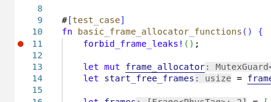 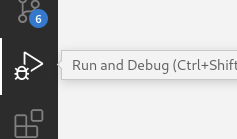 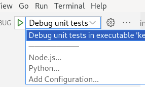 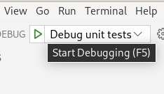
Время
В этой лабораторке нужно будет реализовать работу со временем в операционной системе Nikka. Лабораторка вводная, предназначена для ознакомления с системой и предварительной оценки своих сил. Кода потребуется написать немного. Кроме того, этот код не будет необходим для выполнения последующих лабораторок. Все задачи в этот раз необязательные и независимы между собой. Но, если вы их выполните, в дальнейшем вам будет доступно системное время. Что как минимум приятно при изучении логов.
В этом описании вы встретите много разных специфичных вещей.
Прерывания,
RDTSC,
атомарные переменные,
неблокирующая синхронизация,
спецификации аппаратного обеспечения, и т.д.
Не пугайтесь, предварительных знаний не должно потребоваться.
Они упоминаются на тот случай,
если вы уже хорошо знаете базовую часть материала или же захотите углубиться в какую-либо из таких областей.
Это может оказаться очень увлекательно!
Большие блоки интересного, но не обязательного материала выделены цветом, точно так же как цитаты:
Time is an illusion. Lunchtime doubly so.
- Douglas Adams, The Hitchhiker’s Guide to the Galaxy
В современном компьютере есть несколько источников времени с разными характеристиками. Мы познакомимся с парой из них и сделаем комбинированное по их характеристикам системное время. А именно, из часов, показывающих время в реальном мире и имеющих низкое — секундное — разрешение, и источника времени с высоким разрешением, но не привязанного ко времени в реальном мире, построим часы, показывающие время в реальном мире с высоким разрешением.
Код работы со временем в Nikka собран в модули
-
kernel::timeв директорииkernel/src/time. Здесь находится часть работы со временем, которая происходит только в ядре.kernel/src/time/mod.rs— корневая часть модуляkernel::time.kernel/src/time/pit8254.rs— драйвер устаревшего таймера Intel 8253/8254 (programmable interval timer, PIT). Не представляет большого интереса, так как в последующих лабораторках мы настроим более современный таймер в APIC.kernel/src/time/rtc.rs— драйвер часов реального времени. Они обычно условно независимы по питанию, так как снабжены батарейкой. Отслеживают дату и время в реальном мире с точностью до секунды.
-
ku::timeв директорииku/src/time. Здесь собраны базовые примитивы для работы со временем, которые нужны и в ядре, и в пространстве пользователя.ku/src/time/mod.rs— корневая часть модуляku::time. Содержит:- Функцию
ku::time::timer()для получения монотонного процессорного времени, которое измеряется его тактами. - Функции
ku::time::datetime()иku::time::datetime_ms(), которые переводят значение счётчика тактов процессора в системное время с разрешением в наносекунды и миллисекунды соответственно. - Функции
ku::time::now()иku::time::now_ms(), которые сообщают системное время в текущий момент с разрешением в наносекунды и миллисекунды соответственно.
- Функцию
ku/src/time/correlation_point.rs— вспомогательные структурыku::time::correlation_point::AtomicCorrelationPointиku::time::correlation_point::CorrelationPointдля привязки тактов процессора к другому источнику времени, в один момент времени.ku/src/time/correlation_interval.rs— вспомогательные структурыku::time::correlation_interval::AtomicCorrelationIntervalиku::time::correlation_interval::CorrelationIntervalдля соотнесения частоты процессора с частотой другого источника времени по двум моментам времени.ku/src/time/hz.rs— вспомогательная структураku::time::hz::Hzдля форматирования частоты при логировании.ku/src/time/rtc.rs— синглтонku::time::rtc::Rtc, позволяющий узнать показания часов реального времени как из ядра, так и из пространства пользователя.ku/src/time/tsc.rs— структураku::time::tsc::Tscдля хранения показаний счётчика тактов процессора, который является одним из источников времени в компьютере. А также структураku::time::tsc::TscDurationдля хранения интервалов времени в тактах процессора.
Ориентировочный объём работ этой лабораторки
Засеките время, которое вы потратите на каждую из задач этой лабораторки. Тогда с помощью этой статистики, и аналогичных статистик в последующих лабораторках, вы сможете оценить порядок времени, который вам понадобится на решение задач в них. В процессе решения задач в следующих лабораторках также стоит засекать время, чтобы контролировать ошибку такой оценки и корректировать её с учётом новых данных.
kernel/src/time/rtc.rs | 65 ++++++++++++++++++++++++++++++++----
ku/src/time/correlation_interval.rs | 26 +++++++++++++-
ku/src/time/correlation_point.rs | 40 +++++++++++++++++-----
3 files changed, 115 insertions(+), 16 deletions(-)
Часы реального времени
Краткое описание возможностей микросхемы RTC и её низкоуровневого интерфейса можно посмотреть в статьях RTC и CMOS на сайте OSDev.org. Подробное описание есть в спецификации микросхемы Motorola MC146818. Современные микросхемы RTC поддерживают совместимость с ней.
Прежде всего напишем драйвер для работы с микросхемой
часов реального времени (Real-time clock, RTC).
Основная работа с RTC собрана в модуле
kernel::time::rtc,
который находится в файле
kernel/src/time/rtc.rs.
Порты ввода–вывода
Взаимодействие процессора с устройствами называется вводом–выводом (input/output, I/O, IO). В x86-64 этот процесс осуществляется одним из двух механизмов, в зависимости от устройства:
- Через порты ввода–вывода (I/O port, Port I/O).
- Через специально выделенные диапазоны адресов памяти. Это называется ввод–вывод через память. При этом собственно микросхемы памяти не задействуются, то есть термин немного не точен. Адреса ввода–вывода перехватываются другими устройствами, подключённым к системной шине.
Порты в x86-64 в основном используются для старых устройств, новые чаще используют ввод–вывод через память. В частности, микросхема RTC появилась в архитектуре x86-64 давно и использует порты ввода–вывода. Поэтому с ними мы немного столкнёмся в этой лабораторке. Не нужно пугаться от того как страшненько выглядит интерфейс ввода–вывода через порты — это просто наслоения легаси, экономии всего в ранних моделях компьютеров, и обратной совместимости с ними.
А вот новый контроллер прерываний APIC появился относительно недавно, вместе с многопроцессорностью. Он использует ввод–вывод через память, с которым мы тоже поработаем. Но в будущей лабораторке.
Порты ввода–вывода в x86-64 составляют пространство с 16–битными номерами от 0x0000 до 0xFFFF.
Они могут быть одно-, двух- и четырёхбайтовыми.
Это определяется командой процессора, которая используется при чтении или записи.
И дополнительно ограничивается натуральным выравниванием номеров.
Например, порт 0x0001 может быть только однобайтовым.
А порт 0x0002 может быть либо однобайтовым, либо двухбайтовым в зависимости от используемой инструкции обращения к нему.
Во втором случае он объединяет однобайтовые порты 0x0002 и 0x0003.
То есть, порты похожи на байты памяти, только другое пространство номеров и другие инструкции доступа.
В старые добрые времена часто экономили номера портов. Для этого ограничивали количество портов, через которые можно получить доступ к устройству. И одни и те же порты отвечали за разные функции, в зависимости от обстоятельств. Например, на чтение порт мог работать совсем не так, как на запись. То есть, формат записываемых в порт данных мог отличаться от формата считываемых — один и тот же бит имел разный смысл.
Другой подход состоял в мультиплексировании. То есть, один порт использовался для выбора, что будут означать данные читаемые или записываемые в другой порт. Так, с помощью всего двух портов, можно было эмулировать набор нескольких. В микросхеме RTC применена разновидность этого подхода. А именно, в самой микросхеме есть целый блок собственной памяти, часть которой выделена под её управляющие регистры:
- 10 байт под данные даты, времени и будильника.
- 4 байта под управляющие регистры микросхемы.
- Ещё 50 байт энергонезависимой памяти, которые BIOS использует под нужды не связанные с RTC.
Доступ к этому блоку внутренней памяти микросхемы RTC осуществляется всего через два однобайтовых порта.
Первым шагом в порт номер
kernel::time::rtc::ADDRESS_PORT = 0x0070
записывается номер байта внутренней памяти микросхемы RTC.
Вторым шагом либо из порта номер
kernel::time::rtc::DATA_PORT = 0x0071
читается значение, которое находится в этом байте внутренней памяти микросхемы RTC.
Либо в этот порт записывается значение, которое нужно сохранить в память RTC.
Это делают функции
kernel::time::rtc::rtc_read():
#![allow(unused)] fn main() { fn rtc_read(address: u8) -> u8 { unsafe { io::outb(ADDRESS_PORT, address); io::inb(DATA_PORT) } } }
И
kernel::time::rtc::rtc_write():
#![allow(unused)] fn main() { fn rtc_write(address: u8, data: u8) { unsafe { io::outb(ADDRESS_PORT, address); io::outb(DATA_PORT, data); } } }
Для чтения и записи собственно в порты ввода–вывода они используют однобайтовые инструкции INB и OUTB,
обёрнутые в функции
x86::io::inb() и
x86::io::outb()
внешней библиотеки x86.
Байты номер 0xA, 0xB, 0xC и 0xD в памяти микросхемы отведены под её
регистры управления.
Смысл их битов вынесен в соответствующие наборы флагов
kernel::time::rtc::RegisterA,
kernel::time::rtc::RegisterB,
kernel::time::rtc::RegisterC и
kernel::time::rtc::RegisterD.
Прерывания
Прерывание — это событие, которое останавливает текущую активность процессора и заставляет его переключиться на выполнение специального кода обработки возникшего прерывания. Прерывания происходят:
- Либо асинхронно, в произвольный момент с точки зрения текущего исполняющегося кода. Обычно — когда оборудование требует от процессора внимания.
- Либо синхронно, на фиксированной инструкции исполняющегося кода. Обычно, если возникла особая ситуация при выполнении текущего кода.
- Это может быть ошибка в программе. Например, деление на ноль или недопустимое обращение к памяти (Page Fault).
- А может быть предусмотренное действие. Например, чтобы из режима пользователя переключиться в режим ядра для выполнения системного вызова, такого как чтение файла.
За настройки прерываний отвечает функция
kernel::interrupts::init()
в файле kernel/src/interrupts.rs.
Она инициализирует таблицу обработчиков прерываний
kernel::interrupts::IDT
находящимися в том же файле функциями.
Для RTC выделен номер прерывания
kernel::interrupts::RTC,
а его обработчик — функция
kernel::interrupts::rtc().
Она помечена как extern "x86-interrupt",
поэтому Rust знает что это обработчик прерывания.
То есть, — код, который может запуститься в произвольный момент
времени и прервать исполняющийся в этот момент обычный код.
Поэтому компилятор сохраняет все нужные регистры на стек при входе в функцию
kernel::interrupts::rtc().
Есть надежда, что он достаточно умён, и сохранит на стек только те регистры,
которые реально используются кодом обработчика прерываний.
А не вообще все регистры процессора, как сделали бы мы, если бы сохраняли регистры вручную.
Инициализация микросхемы часов реального времени
Функция
kernel::time::rtc::init()
выполняет инициализацию микросхемы:
#![allow(unused)] fn main() { interrupts::without_interrupts(|| { defer! { rtc_read(!DISABLE_NMI | REGISTER_B); } old_settings = RegisterB::from_bits(rtc_read(DISABLE_NMI | REGISTER_B)).unwrap(); new_settings = (old_settings & !RegisterB::DAYLIGHT_SAVING) | RegisterB::UPDATE_ENDED_INTERRUPT; rtc_write(DISABLE_NMI | REGISTER_B, new_settings.bits()); acknowledged_settings = RegisterB::from_bits(rtc_read(DISABLE_NMI | REGISTER_B)).unwrap(); SETTINGS.store(acknowledged_settings.bits(), Ordering::Relaxed); }); }
То есть, она
- Выключает все прерывания, в том числе немаскируемые, на время конфигурирования микросхемы. Иначе она может остаться в некоррекном состоянии.
- Выключает переход на летнее время —
!RegisterB::DAYLIGHT_SAVING. - Включает прерывание, посылаемое процессору микросхемой после обновления показаний времени при тике, —
RegisterB::UPDATE_ENDED_INTERRUPT. - Остальные настройки оставляет без изменений.
Далее rtc::init():
- Сохраняет конфигурацию микросхемы в глобальной переменной
kernel::time::rtc::SETTINGS. - Проверяет что микросхема подтвердила изменение конфигурации.
- Читает текущие показания времени из микросхемы.
#![allow(unused)] fn main() { SETTINGS.store(acknowledged_settings.bits(), Ordering::Relaxed); if acknowledged_settings == new_settings { let rtc = SYSTEM_INFO.rtc(); rtc.store_prev(CorrelationPoint::invalid( timestamp().unwrap_or(0) * TICKS_PER_SECOND, )); enable_next_interrupt(); if is_time_valid() { info!(?acknowledged_settings, "RTC init"); } else { error!("RTC reports low battery, its time and date values are incorrect"); } } else { // ... } }
Количество тиков в секунду —
ku::time::rtc::TICKS_PER_SECOND —
для RTC равно 1.
Про то, что такое
ku::info::SYSTEM_INFO и
ku::time::correlation_point::CorrelationPoint
узнаем чуть позже.
Микросхема RTC выдаёт текущее время, разбитое на компоненты — год, месяц, день, час, минута, секунда.
Оно переводится в
секунды с момента начала Unix–эпохи
функцией
kernel::time::rtc::timestamp():
#![allow(unused)] fn main() { fn timestamp() -> Option<i64> { Date::read().map(|date| DateTime::<Utc>::from_utc(date.into(), Utc).timestamp()) } }
В ней используется внешняя библиотека
chrono,
которая реализует работу со временем и календарём.
При этом код считает, что микросхема RTC хранит
всемирное координированное время (Coordinated Universal Time, UTC).
Это так в тестах, которые запускают Nikka в эмуляторе qemu.
По умолчанию в qemu используется UTC.
Функция enable_next_interrupt()
говорит микросхеме RTC, что процессор обработал
прерывание от неё.
Пока процессор этого не сделает, микросхема не пошлёт следующее прерывание,
считая что процессор ещё занят обработкой предыдущего.
То есть, если забыть это сделать, то “время остановится”.
Такой сигнал оборудованию от процессора иногда называется
end of interrupt (EOI).
Он встречается не только для RTC, но и для другого оборудования.
Например, контроллер прерываний можно сконфигурировать так,
чтобы он тоже ждал от процессора подтверждения каждого прерывания.
Посылать EOI соответствующему оборудованию нужно из каждого прерывания.
Мы также посылаем его один раз при инициализации микросхемы RTC —
на всякий случай стоит перевести микросхему в определённое состояние.
Кроме того, возможно она уже успела послать прерывание до того как ядро инициализировало их обработку.
Тогда мы его потеряли, но должны разблокировать последующие.
В частном случае микросхемы RTC, отправка ей EOI и чтение её регистра статуса прерывания функцией
interrupt_status(), —
это одно и то же действие:
#![allow(unused)] fn main() { fn enable_next_interrupt() { interrupt_status(); } }
Задача 1 — чтение реального времени из микросхемы RTC
Неконсистентное чтение даты и времени из микросхемы RTC
Реализуйте статический метод
#![allow(unused)] fn main() { fn Date::read_inconsistent() -> Date }
в файле kernel/src/time/rtc.rs,
который считывает из микросхемы RTC показания даты и времени и возвращает их в виде
структуры
#![allow(unused)] fn main() { #[derive(Clone, Copy, Default, Display, Eq, PartialEq)] #[display( fmt = "{:04}-{:02}-{:02} {:02}:{:02}:{:02}", year, month, day, hour, minute, second )] struct Date { year: u16, month: u8, day: u8, hour: u8, minute: u8, second: u8, } }
Метод называется ...inconsistent(), потому что может вернуть некорректное значение
Date,
если во время его работы произошёл тик RTC и микросхема конкурентно
обновляла содержимое соответствующих полей в своей памяти.
Реализуйте и используйте вспомогательный метод
#![allow(unused)] fn main() { fn kernel::time::rtc::parse_value( x: u8, format: RegisterB, ) -> u8 }
Он переводит значение x из формата, в котором микросхема хранит время в двоичный.
Дело в том, что время может храниться как в обычном
двоичном коде,
если в format установлен флаг
RegisterB::USE_BINARY_FORMAT.
Так и в двоично–десятичном, если этот флаг не установлен.
Реализуйте и используйте вспомогательный метод
#![allow(unused)] fn main() { fn kernel::time::rtc::parse_hour( hour: u8, format: RegisterB, ) -> u8 }
Он переводит значение текущего часа hour из формата, в котором микросхема хранит время в двоичный 24-часовой.
Кроме двоично–десятичного варианта, тут возможен ещё и
12-часовой формат.
Если в format установлен бит
RegisterB::USE_24_HOUR_FORMAT,
то формат времени 24-часовой.
Обратите внимание на
путаницу в значениях 12am и 12pm
для 12-часового формата.
Наш вариант — “digital watches”.
Подробнее про формат времени в RTC.
Вам могут пригодиться:
- Конфигурация микросхемы в глобальной переменной
kernel::time::rtc::SETTINGS. Из неё можно узнать формат в котором она хранит время. - Функция
kernel::time::rtc::rtc_read(address), которая читает из микросхемы один байтu8, расположенный по адресуaddressв памяти микросхемы RTC. Адресaddressне имеет отношения к основной памяти компьютера, он адресует внутреннюю память микросхемы RTC. - Таблица адресов памяти RTC или её подходящий фрагмент. Либо вы можете найти эту таблицу в первоисточнике — спецификации микросхемы Motorola MC146818.
- Метод
u16::from(u8)для перевода значения типаu8в значение типаu16.
Путаница в значениях 12am и 12pm
Функция
parse_hour()проверяется тестомdifferent_rtc_formats()в файлеkernel/tests/1-time-1-rtc.rs. Можно вручную убедиться, что тест не путает 12am и 12pm, а также проверить что вы реализовали 12-ти часовой формат правильно. Для этого включите 12-ти часовой формат вrtc::init()и установите время, например на11:59:55 am:#![allow(unused)] fn main() { interrupts::without_interrupts(|| { // ... new_settings = (old_settings & !RegisterB::DAYLIGHT_SAVING & !RegisterB::USE_24_HOUR_FORMAT) | RegisterB::UPDATE_ENDED_INTERRUPT; rtc_write(DISABLE_NMI | REGISTER_B, (new_settings | RegisterB::SET_CLOCK).bits()); if new_settings.contains(RegisterB::USE_BINARY_FORMAT) { rtc_write(4, 11); rtc_write(2, 59); rtc_write(0, 55); } else { rtc_write(4, 1 * 16 + 1); rtc_write(2, 5 * 16 + 9); rtc_write(0, 5 * 16 + 5); } rtc_write(DISABLE_NMI | REGISTER_B, new_settings.bits()); acknowledged_settings = RegisterB::from_bits(rtc_read(DISABLE_NMI | REGISTER_B)).unwrap(); // ... }); }После этого запустите
$ (cd kernel; cargo run)В логе время печатается в 24-часовом формате, вне зависимости от настроек RTC. В нём вы увидите как
11:59:59сменяется на12:00:00:$ cat kernel/serial.out ... 11:59:59.985 0 D time_precision = 933.673 ns 11:59:59.989 0 D interrupt stats; number = 32; mnemonic = #TI; count = 85 11:59:59.993 0 D interrupt stats; number = 40; mnemonic = #RT; count = 4 12:00:00.001 0 D CPU frequency measured by PIT; frequency = 3.471 GHz 12:00:00.005 0 D CPU frequency measured by RTC; frequency = 3.437 GHz 12:00:00.009 0 D time_precision = 814.689 ns ...Если же установить время на
11:59:55 pm, то в логе23:59:59сменяется на00:00:00:$ cat kernel/serial.out ... 23:59:59.969 0 D time_precision = 1.375 us 23:59:59.973 0 D interrupt stats; number = 32; mnemonic = #TI; count = 84 23:59:59.979 0 D interrupt stats; number = 40; mnemonic = #RT; count = 4 00:00:00.001 0 D CPU frequency measured by PIT; frequency = 3.471 GHz 00:00:00.005 0 D CPU frequency measured by RTC; frequency = 3.428 GHz 00:00:00.009 0 D time_precision = 1.222 us ...При неверной реализации функции
parse_hour()показания времени в логе после перехода через полдень или полночь будут вести себя гораздо интереснее.В качестве дополнительного упражнения, посмотрите как 12-часовой формат реализован в Linux.
Консистентное чтение даты и времени из микросхемы RTC
Реализуйте статический метод
#![allow(unused)] fn main() { fn Date::read() -> Option<Date> }
Он
пытается несколько раз прочитать данные из микросхемы RTC
уже реализованным вами методом
Date::read_inconsistent().
Перед каждым чтением он в цикле ждёт, пока в регистре A микросхемы RTC флаг
kernel::time::rtc::RegisterA::UPDATE_IN_PROGRESS
установлен, то есть пока микросхема обновляет данные в своей памяти.
Если
- Два чтения подряд вернут одинаковое значение структуры
Date. - Перед чтениями флаг
RegisterA::UPDATE_IN_PROGRESSбыл сброшен. - Предполагаем, что микросхема обновляет поля всегда в одном порядке.
- Чтение одного
u8из её памяти атомарно.
То можно считать совпавшее значение структуры
Date
консистентным и вернуть его,
обернув в
core::option::Option::Some:
#![allow(unused)] fn main() { return Some(date); }
Если же за несколько попыток прочитать дважды одинаковые значения
Date
не получилось,
стоит сдаться и вернуть
core::option::Option::None:
#![allow(unused)] fn main() { return None; }
Вам могут пригодиться:
- Метод
Date::default(), который возвращаетDate, заполненную нулями. Что не соответствует разумной дате настоящего времени. - Функция
core::hint::spin_loop(), которая сообщает процессору, что он находится в цикле ожидания внешнего события. И может, например, снизить частоту и энергопотребление. - Операторы равенства
==и неравенства!=дляDate.
В этом методе нужно писать код очень внимательно, так как он не покрывается тестами. А использование в будущем лога с неконсистентной датой при отладке может привести к потере времени.
Полные пути
core::option::Option::можно не указывать, так какOption,None,Someи другие стандартные вещи импортируются по умолчанию прелюдиейcore::prelude. У нас редакция 2021, соответствующая прелюдия —core::prelude::rust_2021. А она перекладывает основную работу наcore::prelude::v1, где и импортируютсяOption,None,Someи многое другое.Метод
Date::default()определён в типажеcore::default::Default, который реализован дляDateавтоматически за счёт атрибутаderive—#[derive(Default)]. Всю соответствующую работу выполняет макросcore::prelude::v1::derive.Операторы равенства и неравенства для
Dateопределены в типажахcore::cmp::PartialEqиcore::cmp::Eq, которые реализованы дляDateавтоматически за счёт атрибута#[derive(..., Eq, PartialEq)]. Типажcore::cmp::PartialEqопределяет методыPartialEq::eq()иPartialEq::ne()для проверки на равенство или неравенство соответственно. Rust рассахаривает операторы==и!=в обращения к этим методам. А дополнительный типажcore::cmp::Eqсигнализирует, что операцииPartialEqдляDateзадают отношение эквивалентности, то есть рефлексивное, симметричное и транзитивное.
Запуск тестов
Тесты можно запустить командой cargo test --test 1-time-1-rtc в директории kernel репозитория.
Вы увидите сборку, запуск эмулятора qemu, логи инициализации ядра и логи тестов:
$ (cd kernel; cargo test --test 1-time-1-rtc)
...
Running: `qemu-system-x86_64 -drive format=raw,file=/home/sergey/shad-os/target/kernel/debug/deps/bootimage-time-8696ef78d2ec023a.bin -no-reboot -m size=50M -smp cpus=4 -device isa-debug-exit,iobase=0xF4,iosize=0x04 -serial stdio -display none`
00:00:00 0 I RTC init; acknowledged_settings = USE_24_HOUR_FORMAT | USE_BINARY_FORMAT | UPDATE_ENDED_INTERRUPT
00:00:00 0 I time init
00:00:00 0 I Nikka booted; now = 1970-01-01 00:00:00 UTC; tsc = Tsc(5345850832)
00:00:00 0 I GDT init
00:00:00 0 I interrupts init
running 4 tests
time::rtc_read_inconsistent---------------------------------
00:00:00 0 D start = 1970-01-01 00:00:00 UTC
panicked at 'the RTC date does not pass the sanity check', kernel/tests/time.rs:43:5
--------------------------------------------------- [failed]
00:00:00 0 I exit qemu; exit_code = FAILURE
error: test failed, to rerun pass '--test time'
Если запустить тест из корня репозитория, то вы столкнётесь ошибкой:
error: language item required, but not found: `eh_personality`
|
= note: this can occur when a binary crate with `#![no_std]` is compiled for a target where `eh_personality` is defined in the standard library
= help: you may be able to compile for a target that doesn't need `eh_personality`, specify a target with `--target` or in `.cargo/config`
Это ожидаемо, запускайте тест из директории kernel.
До решения задачи тест fn rtc_read_inconsistent() из файла
kernel/tests/time.rs
падает:
time::rtc_read_inconsistent---------------------------------
00:00:00 0 D start = 1970-01-01 00:00:00 UTC
panicked at 'the RTC date does not pass the sanity check', kernel/tests/time.rs:43:5
--------------------------------------------------- [failed]
А после выполнения задачи он должен проходить:
$ (cd kernel; cargo test --test 1-time-1-rtc)
...
time::rtc_read_inconsistent---------------------------------
10:25:26 0 D start = 2022-09-17 10:25:26 UTC
10:25:27 0 D now = 2022-09-17 10:25:27 UTC
10:25:28 0 D now = 2022-09-17 10:25:28 UTC
10:25:29 0 D now = 2022-09-17 10:25:29 UTC
10:25:30 0 D now = 2022-09-17 10:25:30 UTC
10:25:31 0 D now = 2022-09-17 10:25:31 UTC
10:25:32 0 D now = 2022-09-17 10:25:32 UTC
10:25:33 0 D now = 2022-09-17 10:25:33 UTC
10:25:34 0 D now = 2022-09-17 10:25:34 UTC
10:25:35 0 D now = 2022-09-17 10:25:35 UTC
time::rtc_read_inconsistent------------------------ [passed]
Ориентировочный объём работ этой части лабораторки
kernel/src/time/rtc.rs | 65 ++++++++++++++++++++++++++++++++++++++++++++-----
1 file changed, 59 insertions(+), 6 deletions(-)
Счётчик тактов процессора
Из всех имеющихся в стандартном компьютере часов, самым большим разрешением
обладает тактовый генератор процессора.
В Nikka работа с ним собрана в модуль
ku::time::tsc
в файле
ku/src/time/tsc.rs.
Сопоставлять другие источники времени будем с ним.
Функция fn ku::time::tsc::tsc() -> i64
возвращает
номер текущего такта процессора
в некоторый момент времени своего исполнения.
Относительно оптимальным решением для этого было бы использовать инструкцию
RDTSCP, позвать которую в Rust можно какcore::arch::x86_64::__rdtscp(). К сожалению, она доступна только на довольно новых процессорах, поэтому Nikka использует более старую инструкциюRDTSC, в сочетании сLFENCE, через функцииcore::arch::x86_64::_rdtsc()иcore::arch::x86_64::_mm_lfence(). Кроме того, она рассчитывает, что результатRDTSCпоместится вi64, что удобно, например, для взятия разности при вычислении интервала времени.#![allow(unused)] fn main() { #[inline(always)] pub fn tsc() -> i64 { unsafe { x86_64::_mm_lfence(); x86_64::_rdtsc().try_into().expect("i64 overflow when storing TSC is expected only after tens of years of uptime") } } }В статье How to Benchmark Code Execution Times on Intel® IA-32 and IA-64 Instruction Set Architectures есть продвинутые рекомендации по использованию инструкций
RDTSCиRDTSCPдля измерений интервалов времени. Кроме того, с использованием инструкцийRDTSCиRDTSCPсвязаны и другие тонкости, например:
- Инвариантность в зависимости от нагрузки на процессор и его режима энергосбережения. На старых процессорах при изменении его частоты работы меняется и частота счётчика тактов, то есть она не инвариантна.
- Согласованность счётчиков тактов между разными процессорами системы.
- Вообще говоря, прикладные программы не могут рассчитывать на доступность этих инструкций. Так как ядро может запретить их использование в непривилегированном режиме.
- Ядро не спроста может хотеть запретить эти инструкции. Существует множество атак на криптографические алгоритмы, базирующихся на том, что атакующему доступно точное измерение времени работы атакуемого криптографического приложения.
Для упрощения, Nikka игнорирует эти сложности.
Момент времени ku::time::tsc::Tsc
Структура Tsc
описывает момент времени, храня значение счётчика тактов процессора.
Она похожа на стандартную, но недоступную нам в #[no_std]–окружении
структуру
std::time::Instant.
Обе описывают монотонно возрастающее время.
То есть время, не ходящее “назад” ни при переводе часов на летнее время, ни при корректировке неточно идущих часов.
Но такое время может никак не соответствовать реальному времени.
Интервал времени ku::time::tsc::TscDuration
Структура TscDuration описывает
интервал между двумя моментами времени
Tsc.
Она наивно предполагает, что используемый ею счётчик тактов процессора как минимум инвариантен и согласован между процессорами.
Структура TscDuration
может быть напечатана. Например,
#![allow(unused)] fn main() { let timer = time::timer(); let frame_allocator = MainFrameAllocator::new(memory_map); info!( frame_allocator = "main", free_frame_count = frame_allocator.count(), duration = %timer.elapsed(), "init", ); }
пишет в лог duration = 322.017 Mtsc:
15:08:28 0 I init; frame_allocator = "main frame allocator"; free_frame_count = 10601; duration = 322.017 Mtsc
где Mtsc — миллионы тактов процессора. Наша ближайшая задача, — научиться выражать продолжительность в гораздо более удобных для человека единицах измерения, привязанных к реальному миру.
Монотонное время
Обратите внимание, что интервалы времени корректно измерять только по монотонному времени. Иначе в момент корректировки неточно идущих часов или при ступенчатом добавлении високосной секунды, интервал будет неверен. Аналогично, сравнивать моменты времени на больше или меньше тоже можно только по монотонным часам. Из-за ошибочного использования в этих случаях реального времени порой происходят крупные сбои, например сбой в Cloudflare.
Как вариант, можно хранить в типе, отвечающем за точку во времени, одновременно и показания часов реального времени, и показания монотонных часов в тот же момент. Тогда при оперировании с одной временной точкой, можно показывать человеку привычное ему реальное время. А вот при вычислении интервалов времени между двумя точками, а также для сравнения точек на больше и меньше, использовать монотонные компоненты этих точек. В Go сделали именно так. Это стоит немного дополнительной памяти для хранения монотонных компонент.
К сожалению, уже есть довольно много неаккуратно написанного кода, полагающегося на монотонность системного времени. Один из элегантных методов обхода возникающих из-за этого проблем при резком подводе часов реального времени, особенно назад, состоит в размазывании большой одномоментной дельты на маленькие, вносимые в течение длительного времени. Системный вызов adjtime корректирует неточно идущие локальные часы именно так. Аналогично поступает и Google с високосными секундами.
Строго говоря,
RDTSCне является монотонным источником времени. Так как этот счётчик можно менять, в том числе назад. См. стр. 615 и 616 в руководстве от Intel:17.15.3 Time-Stamp Counter Adjustment
Software can modify the value of the time-stamp counter (TSC) of a logical processor by using the WRMSR instruction to write to the IA32_TIME_STAMP_COUNTER MSR (address 10H). Because such a write applies only to that logical processor, software seeking to synchronize the TSC values of multiple logical processors must perform these writes on each logical processor.
Счётчики тиков различных источников времени
Структура
ku::time::correlation_point::CorrelationPoint
из файла ku/src/time/correlation_point.rs
предназначена для привязки тактов процессора к другим часам в один момент времени.
Она содержит поля:
CorrelationPoint::tscсо значением счётчика тактов процессора.CorrelationPoint::countсо значением счётчика тиков другого источника времени в тот же момент.
Если значение
CorrelationPoint::tsc
равно нулю, то структура в целом считается невалидной —
CorrelationPoint::invalid().
Это означает, что
CorrelationPoint::count
не привязан ни к какому значению
CorrelationPoint::tsc.
И значение структуры относится не к самому тику, а к промежутку после тика
CorrelationPoint::count
и до следующего.
При этом значение
CorrelationPoint::count
может быть использовано как текущее время с низким разрешением — частотой соответствующих часов.
Посмотрите код реализации структуры
ku::time::correlation_point::CorrelationPoint,
он достаточно прост.
Более интересная структура
ku::time::correlation_point::AtomicCorrelationPoint
из файла ku/src/time/correlation_point.rs предназначена для конкурентного доступа к значениям
CorrelationPoint.
То есть CorrelationPoint и
AtomicCorrelationPoint
соотносятся также как примитивный тип
i64
и атомарный
core::sync::atomic::AtomicI64.
Атомарность нужна для того, чтобы конкурентно
- в обработчике прерывания обновлять счётчики
AtomicCorrelationPoint; - а в обычном коде читать эти счётчики, чтобы “посмотреть на часы”.
В CorrelationPoint два числа типа
i64,
а в
AtomicCorrelationPoint два соответствующих им
AtomicI64.
Нам нужно читать и записывать эти два значения согласованно, поэтому и возникают небольшие сложности.
Можно было бы завести блокировку на доступ к полям
AtomicCorrelationPoint,
но это потребовало бы захватывать её из прерывания.
Это практически гарантированно приведёт к проблемам:
- Захват этой блокировки должен ещё и запрещать прерывания. Иначе возможна взаимоблокировка, подумайте почему. А Nikka предпочитает не отключать прерывания на потенциально длительное время удержания какой-нибудь блокировки.
- Иногда прерывание будет ждать другой код, пока он не отпустит эту блокировку. Обычно прерывания являются более приоритетной деятельностью, поэтому возникнет нежелательная инверсия приоритетов.
- Писать мы хотим из прерывания в режиме ядра, а читать — из режима пользователя. При этом с одной стороны, ядро должно обеспечить консистентность чтения коду пользователя. А с другой — оно не должно допустить чтобы злонамеренный код из пользовательского режима мог заблокировать ядро, в том числе навечно.
Вообще, захват блокировок из прерываний — очень плохая идея.
Поэтому реализуем
неблокирующую синхронизацию
для согласованного доступа к полям
AtomicCorrelationPoint.
Которая будет отдавать предпочтение писателю, так как это обработчик прерывания в ядре, —
он всегда сможет завершить работу по обновлению структуры за фиксированное и достаточно небольшое количество тактов.
И никогда не будет ждать читателей, которые могут быть запущены как в режиме ядра, так и в режиме пользователя.
А вот читатели будут максимально пессимизированы —
они будут вынуждены ждать пока писатель завершит свою работу, если им не повезло запуститься конкурентно с писателем.
Впрочем, для них это не будет страшно, так как:
- Писатель запускается редко, один раз в секунду для микросхемы RTC. Или двадцать раз в секунду для микросхемы PIT Intel 8253/8254 — это сконфигурированная в Nikka частота, её можно поменять. Эти два писателя пишут в разные экземпляры структуры, поэтому они никогда не конфликтуют между собой.
- Писатель отрабатывает очень быстро, всего за несколько инструкций процессора.
В качестве инструмента такой неблокирующей синхронизации предлагается использовать упрощённый
sequence lock.
В нашем случае его идея в следующем.
Мы храним в поле
AtomicCorrelationPoint::sequence_number
удвоенный номер операции обновления.
А в его младшем бите хранится признак, что сейчас структура
AtomicCorrelationPoint
находится в неконсистентном состоянии из-за текущей активности писателя.
То есть:
- Нечётное значение в
AtomicCorrelationPoint::sequence_numberозначает, что писатель начал обновлять структуруAtomicCorrelationPoint, но ещё не закончил. Если читатель обнаруживает структуру в таком состоянии, он должен подождать пока писатель закончит обновление. - Чётное значение в
AtomicCorrelationPoint::sequence_numberозначает, что значение структурыAtomicCorrelationPointконсистентно и читатель может его использовать.
В нашем случае писатель один, что дополнительно упрощает дело. Алгоритм его действий:
- Раз он один, значит до начала им обновления структуры
AtomicCorrelationPoint, её значение заведомо консистентно. АAtomicCorrelationPoint::sequence_numberсодержит чётное число. - Писатель атомарно инкрементирует поле
AtomicCorrelationPoint::sequence_number. Оно становится нечётным, символизируя что идёт обновление. - После этого писатель заполняет поля
AtomicCorrelationPoint::countиAtomicCorrelationPoint::tsc. - Последним действием писатель атомарно инкрементирует поле
AtomicCorrelationPoint::sequence_number. Это действие сигнализирует всем читателям, что обновление завершено и структура находится в консистентном состоянии.
Алгоритм действий читателя чуть сложнее:
- Читатель атомарно загружает значения поля
AtomicCorrelationPoint::sequence_number. - Далее он читает значение полей
AtomicCorrelationPoint::countиAtomicCorrelationPoint::tsc. - После чего он повторно атомарно загружает значение поля
AtomicCorrelationPoint::sequence_number. - Если при обеих загрузках значения поля
AtomicCorrelationPoint::sequence_numberсовпадают и являются чётными, то структураAtomicCorrelationPointбыла прочитана в консистентном состоянии. Читатель возвращает значение получившейся структурыCorrelationPointв вызывающую функцию. - Если же это не так, читатель повторяет все действия с самого начала.
Перекос сложности в сторону читателя и наличие в нём цикла ожидания, чего нет в писателе, — проявление большего приоритета писателя.
Обобщённая реализация sequence lock с несколькими писателями и произвольной защищаемой структурой данных была бы сложнее. Например, можете посмотреть на:
Задача 2 — реализация AtomicCorrelationPoint
Реализуйте описанные алгоритмы чтения и записи.
Читает из структуры
AtomicCorrelationPoint
её метод
#![allow(unused)] fn main() { fn AtomicCorrelationPoint::load(&self) -> CorrelationPoint }
Точнее вам достаточно реализовать вспомогательный метод
#![allow(unused)] fn main() { fn AtomicCorrelationPoint::try_load(&self) -> Option<CorrelationPoint> }
Он пытается прочитать значение только один раз.
И возвращает его, завернув в
core::option::Option::Some,
если оно было прочитано консистентно.
Пишут в
AtomicCorrelationPoint
два других метода.
Метод
#![allow(unused)] fn main() { fn AtomicCorrelationPoint::store(&self, counter: CorrelationPoint) }
записывает заданное counter значение. А
метод
#![allow(unused)] fn main() { fn AtomicCorrelationPoint::inc(&self, tsc: i64) }
инкрементирует поле
AtomicCorrelationPoint::count
и записывает в поле
AtomicCorrelationPoint::tsc
значение аргумента tsc.
Методом
AtomicCorrelationPoint::store()
пользуется обработчик прерываний RTC.
С его помощью он сохраняет текущее значение секунд, прошедших с начала Unix–эпохи.
А методом
AtomicCorrelationPoint::inc() —
обработчик прерываний PIT.
Он сохраняет просто счётчик своих тиков, который никак не привязан к реальному времени.
Поэтому ему достаточно инкрементировать логическое значение своего счётчика при каждом прерывании.
Используйте поле
AtomicCorrelationPoint::sequence_number
как атомарную переменную, синхронизующую между собой
load() и
store()/inc().
То есть, правильно расставьте сами атомарные операции доступа к обоим полям и
core::sync::atomic::Ordering
в них.
К сожалению, тест не может проверить корректность расстановки
Ordering.
Поэтому ей стоит уделить повышенное внимание.
Обратите внимание, что
Ordering::SeqCst
использовать не рекомендуется.
Так как мнение “использовать
Ordering::SeqCst
гарантированно безопасно” неверно.
Режим
Ordering::SeqCst
позволяет делать довольно специфические вещи, которые реально нужны довольно редко.
А вот гарантий корректности не даёт, это заблуждение.
Если в алгоритме синхронизации вам понадобилось написать что-нибудь вроде
#![allow(unused)] fn main() { let end_sequence_number = sequence_number.load(Ordering::Release); }
Компилятор выдаст ошибку:
error: atomic loads cannot have `Release` or `AcqRel` ordering
--> kernel/tests/1-time-2-correlation-point.rs:38:52
|
38 | let end_sequence_number = sequence_number.load(Ordering::Release);
| ^^^^^^^^^^^^^^^^^
|
= note: `#[deny(invalid_atomic_ordering)]` on by default
= help: consider using ordering modes `Acquire`, `SeqCst` or `Relaxed`
А если её подавить с помощью #[allow(invalid_atomic_ordering)], то уже при запуске будет
паника:
1_time_2_correlation_point::wrong_ordering------------------
panicked at 'there is no such thing as a release load', .../src/rust/library/core/src/sync/atomic.rs:2964:24
--------------------------------------------------- [failed]
Если в этом месте поменять
Ordering::Release
на
Ordering::SeqCst,
не меняя остальную часть алгоритма синхронизации,
то компиляция пройдёт и паники не будет.
Но код скорее всего будет некорректен, — простая замена на
Ordering::SeqCst
не исправит сам алгоритм синхронизации.
То есть, использование
Ordering::SeqCst
скроет ошибку в алгоритме синхронизации, о наличии которой заботливо предупреждали компилятор и паника.
К такому же эффекту приведёт смена
Ordering::Release
на
Ordering::Relaxed.
Но Ordering::Relaxed
хотя бы бросается в глаза в коде.
Также учтите, что нам точно не нужен
приём “read-dont-modify-write”.
Его может хотеться использовать в читателе.
Но читатель потенциально будет выполняться в режиме пользователя.
А значит, не сможет выполнять запись в общесистемную структуру
AtomicCorrelationPoint,
хранящую показания RTC.
Так как она доступна в режиме пользователя только на чтение.
Другими словами, если вы используете “read-dont-modify-write”, то в будущих лабораторках вылезет ошибка.
Не говоря уж о совершенно лишнем захвате кеш–линии в эксклюзивное использование при чтении
AtomicCorrelationPoint.
Вы можете опираться на тот факт, что писатель один и методы записи —
AtomicCorrelationPoint::store() и
AtomicCorrelationPoint::inc() —
гарантированно не вызываются конкурентно ни каждый сам с собой, ни друг с другом.
Запуск тестов
Тесты можно запустить командой cargo test --test 1-time-2-correlation-point в директории kernel репозитория.
После выполнения задачи должны проходить тесты correlation_point_reader() и correlation_point_writer()
в файле
kernel/tests/time.rs:
$ (cd kernel; cargo test --test 1-time-2-correlation-point)
...
time::correlation_point_reader------------------------------
10:35:25 0 D same = 0; different = 1; point = CorrelationPoint { count: 1000, tsc: 1000 }
10:35:26 0 D same = 1082; different = 542; point = CorrelationPoint { count: 1082000, tsc: 1082000 }
10:35:27 0 D same = 2166; different = 1084; point = CorrelationPoint { count: 2166000, tsc: 2166000 }
10:35:28 0 D same = 3253; different = 1627; point = CorrelationPoint { count: 3253000, tsc: 3253000 }
10:35:29 0 D same = 4340; different = 2170; point = CorrelationPoint { count: 4338000, tsc: 4338000 }
10:35:30 0 D same = 5422; different = 2712; point = CorrelationPoint { count: 5422000, tsc: 5422000 }
10:35:31 0 D same = 6506; different = 3254; point = CorrelationPoint { count: 6506000, tsc: 6506000 }
10:35:32 0 D same = 7594; different = 3798; point = CorrelationPoint { count: 7594000, tsc: 7594000 }
10:35:33 0 D same = 8678; different = 4340; point = CorrelationPoint { count: 8678000, tsc: 8678000 }
10:35:34 0 D same = 9762; different = 4882; point = CorrelationPoint { count: 9762000, tsc: 9762000 }
10:35:35 0 D same = 10848; different = 5425; point = CorrelationPoint { count: 10849000, tsc: 10849000 }
10:35:36 0 D same = 11936; different = 5968; point = CorrelationPoint { count: 11934000, tsc: 11934000 }
10:35:37 0 D same = 13022; different = 6512; point = CorrelationPoint { count: 13022000, tsc: 13022000 }
10:35:38 0 D same = 14108; different = 7055; point = CorrelationPoint { count: 14109000, tsc: 14109000 }
10:35:39 0 D same = 15184; different = 7593; point = CorrelationPoint { count: 15185000, tsc: 15185000 }
10:35:40 0 D same = 16270; different = 8135; point = CorrelationPoint { count: 16269000, tsc: 16269000 }
10:35:41 0 D same = 17356; different = 8679; point = CorrelationPoint { count: 17357000, tsc: 17357000 }
10:35:42 0 D same = 18438; different = 9220; point = CorrelationPoint { count: 18438000, tsc: 18438000 }
10:35:43 0 D same = 19520; different = 9761; point = CorrelationPoint { count: 19521000, tsc: 19521000 }
time::correlation_point_reader--------------------- [passed]
time::correlation_point_writer------------------------------
10:35:43 0 D iteration = 0; failure_count = 0; success_count = 0; point = CorrelationPoint { count: 0, tsc: 0 }
10:35:44 0 D iteration = 840; failure_count = 90828; success_count = 220580; point = CorrelationPoint { count: 840, tsc: 840 }
10:35:45 0 D iteration = 2396; failure_count = 258876; success_count = 628295; point = CorrelationPoint { count: 2396, tsc: 2396 }
10:35:46 0 D iteration = 3958; failure_count = 427572; success_count = 1037519; point = CorrelationPoint { count: 3958, tsc: 3958 }
10:35:47 0 D iteration = 5345; failure_count = 570102; success_count = 1472279; point = CorrelationPoint { count: 5345, tsc: 5345 }
10:35:48 0 D iteration = 6383; failure_count = 660408; success_count = 1958120; point = CorrelationPoint { count: 6383, tsc: 6383 }
10:35:49 0 D iteration = 7433; failure_count = 751845; success_count = 2449799; point = CorrelationPoint { count: 7434, tsc: 7434 }
10:35:50 0 D iteration = 8485; failure_count = 843282; success_count = 2941927; point = CorrelationPoint { count: 8485, tsc: 8485 }
10:35:51 0 D iteration = 9529; failure_count = 934110; success_count = 3430565; point = CorrelationPoint { count: 9529, tsc: 9529 }
10:35:51 0 D iteration = 10000; failure_count = 975087; success_count = 3650638
time::correlation_point_writer--------------------- [passed]
Как устроен тест
Для того чтобы проверить корректность реализации
AtomicCorrelationPointбыло бы здорово запустить стресс–тест с писателем и читателем на разных процессорах. И желательно на процессорах со слабой моделью памяти, в которых возможно больше интересных эффектов, чем в архитектуре x86-64. А в случае архитектуры NUMA, в которой процессоры организованы в сложную иерархию, стоило бы запустить этот тест несколько раз на наборе неэквивалентных с точки зрения архитектуры пар процессоров — читатель и писатель в одном NUMA–домене, в разных NUMA–доменах и т.д.Но в Nikka поддержана только архитектура x86-64. А поддержку нескольких процессоров мы сделаем только в будущей лабе. И пока нам не доступна возможность запустить стресс–тест даже на двух процессорах в симметричной системе.
Но можно вспомнить про то, что
AtomicCorrelationPointреализуется конкурентной ради прерываний, которые являются одной из конкурентных активностей в компьютере. Тогда в голову приходит вариант запустить стресс–тест, в котором писатель будет работать в прерывании, а читатель — в обычном коде, прерываемом периодически этим прерыванием. СобственноAtomicCorrelationPointпредназначен именно для такого сценария использования, в котором прерывание поступает от источника времени — RTC или PIT. Тики RTC, происходящие раз в секунду, точно не подходят для стресс–теста. Можно было бы сконфигурировать PIT на его максимальную частоту — 1.193(18) MHz, но это всё ещё не очень много.Зато есть интересный режим работы процессора — режим трассировки. От предназначен для пошаговой отладки программ. В этом режиме процессор генерирует прерывание с номером
kernel::interrupts::DEBUGна каждой исполняемой им инструкции программы. Задаётся такой режим работы включением флага трассировки в регистре флагов процессора.То есть, идея состоит в том, чтобы запустить читателя “под пошаговой отладкой”. А писателя использовать вместо отладчика. Тогда между каждыми двумя инструкциями кода читателя будет запускаться код писателя. Правда, так как читатель работает в цикле ожидания корректности структуры
AtomicCorrelationPoint, если писатель будет обновлять её на каждом прерывании — между каждыми двумя инструкциями читателя, то читатель никогда не дождётся своего условия выхода из цикла и зависнет. Поэтому писатель должен будет на значительное количество итераций такой пошаговой отладки прекращать обновлениеAtomicCorrelationPoint.В коде теста это выглядит так:
#![allow(unused)] fn main() { #[test_case] fn correlation_point_reader() { interrupts::test_scaffolding::set_debug_handler(writer); reader(); static POINT: AtomicCorrelationPoint = AtomicCorrelationPoint::new(); ... } }Функция
interrupts::test_scaffolding::set_debug_handler()устанавливает заданный обработчик прерыванияkernel::interrupts::DEBUG, который содержит процедуру писателяwriter(). Дальше запускается читательreader(). Конкурировать они будут за переменнуюPOINT. Она сделана статической для удобства доступа из обработчика прерываний, которому мы не можем передать произвольный набор аргументов. По той же причине его внутренне состояние, которое нужно сохранять между вызовами обработчика, тоже записывается в статические переменные. Переменные, которые использует, в том числе, обработчик прерывания, дополнительно сделаны атомарными, так как формально к ним есть конкурентный доступ. Плюс Rust не даст работать с изменяемой статической переменной безunsafe, как раз, чтобы защищать от непредумышленных гонок. А вот атомарные типы помечены типажёмcore::marker::Sync, что означает корректность их конкурентного использования. К сожалению, это приводит к страшно выглядящему коду.Писатель имеет внутренний счётчик запусков
VALUE, который и определяет, что делать:#![allow(unused)] fn main() { extern "x86-interrupt" fn writer(_: InterruptContext) { static VALUE: AtomicUsize = AtomicUsize::new(0); let value = VALUE.fetch_add(1, Ordering::Relaxed); match (value / 1_000) % 4 { 0 => POINT.store(time::test_scaffolding::equal_point(value as i64 + 1)), 2 => POINT.inc(POINT.load().count() + 1), _ => {}, } } }Сигнатуру
extern "x86-interrupt" fn writer(_: InterruptContext)обсудим чуть позже.Каждую тысячу своих запусков писатель переключается между режимами:
- Записи в
POINTчерез вызовAtomicCorrelationPoint::store().- Бездействия, чтобы дать шанс читателю увидеть
AtomicCorrelationPoint::store()в одном и том же состоянии на протяжении всего цикла своей работы.- Записи в
POINTчерез вызовAtomicCorrelationPoint::inc().- Очередного бездействия.
При этом писатель и читатель придерживаются соглашения, что консистентными состояниями
AtomicCorrelationPointявляются только состояния с одинаковыми значениями полейCorrelationPoint::tscиCorrelationPoint::count. Поэтому в циклах обновления писатель меняет оба поля на одинаковые значения, отличающиеся от значений при предыдущей записи. В частности функцияtime::test_scaffolding::equal_point()создаётAtomicCorrelationPointс одинаковымиCorrelationPoint::tscиCorrelationPoint::count, равными заданному значению. Это имеет смысл только для тестов, поэтому она убрана в модульtest_scaffolding.Читатель устроен так:
#![allow(unused)] fn main() { fn reader() { ... while ... { switch_trap_flag(); let point = POINT.load(); switch_trap_flag(); ... assert!(point.count() == point.tsc(), "{:?} is inconsistent", point); ... } } }Он включает режим трассировки функцией
switch_trap_flag(), которая просто переключает состояние флага трассировки процессора. После этого запускает тестируемый алгоритм чтенияAtomicCorrelationPoint::load(). Который должен вернуть управление, только когда писатель прекратит обновлятьPOINTи перейдёт в режим бездействия. После чего читатель отключает трассировку повторным переключением флагswitch_trap_flag()— когда она включена он работает очень медленно. И проверяет консистентность полученного отAtomicCorrelationPoint::load()значенияCorrelationPoint.Нетрудно догадаться, что в этом тесте мы никогда не прерываем писателя и каждый вызов
AtomicCorrelationPoint::store()илиAtomicCorrelationPoint::inc()выполняется атомарно с точки зрения читателя. А значит, их корректность мы не проверили. Это делает другой тест:#![allow(unused)] fn main() { #[test_case] fn correlation_point_writer() { interrupts::test_scaffolding::set_debug_handler(reader); writer(); ... } }Он аналогичен рассмотренному
correlation_point_reader(), только меняет ролями читателя и писателя. Теперь писатель запускается “под пошаговой отладкой”, а в обработчике прерывания работает читатель.Видно, что никак не проверяется случай, когда в едином конкурентном исполнении и читатель прерывается писателем, и наоборот, писатель прерывается читателем. Также видно, что такой тест не сможет проверить правильность расстановки
Orderingв них, так как с точки зрения пошаговой отладки все инструкции процессора атомарны с наиболее строгой гарантией консистентности.Теперь вы можете исследовать код, запуская его в пошаговом режиме. Например:
#![allow(unused)] fn main() { #[test_case] fn down_the_rabbit_hole() { use ku::memory::{Block, Virt}; interrupts::test_scaffolding::set_debug_handler(collect_statistics); switch_trap_flag(); debug!("how many instructions does it take to log something?"); switch_trap_flag(); let max_rsp = MAX_RSP.load(Ordering::Relaxed); let min_rsp = cmp::min(max_rsp, MIN_RSP.load(Ordering::Relaxed)); let rip = RIP.load(Ordering::Relaxed); debug!( instruction_count = INSTRUCTION_COUNT.load(Ordering::Relaxed), used_stack_space = ?Block::<Virt>::from_index(min_rsp, max_rsp), last_traced_insruction_address = ?Virt::new(rip), ); static INSTRUCTION_COUNT: AtomicUsize = AtomicUsize::new(0); static MAX_RSP: AtomicUsize = AtomicUsize::new(usize::MIN); static MIN_RSP: AtomicUsize = AtomicUsize::new(usize::MAX); static RIP: AtomicUsize = AtomicUsize::new(0); extern "x86-interrupt" fn collect_statistics(context: InterruptContext) { let context = context.get().mini_context(); let rip = context.rip().into_usize(); let rsp = context.rsp().into_usize(); let max_rsp = cmp::max(rsp, MAX_RSP.load(Ordering::Relaxed)); let min_rsp = cmp::min(rsp, MIN_RSP.load(Ordering::Relaxed)); INSTRUCTION_COUNT.fetch_add(1, Ordering::Relaxed); MAX_RSP.store(max_rsp, Ordering::Relaxed); MIN_RSP.store(min_rsp, Ordering::Relaxed); RIP.store(rip, Ordering::Relaxed); } } }В отладочной сборке на логирование одной строки ушло 112209 инструкций процессора, последняя из них располагалась по адресу
0v216D07. А также было потрачено 5.742 KiB стека по адресам[0x100002001c8, 0x100002018c0)$ (cd kernel; cargo test --test 1-time-2-correlation-point) ... time::down_the_rabbit_hole---------------------------------- 21:10:12 0 D waiting for the RTC to tick twice 21:10:14.001 0 D how many instructions does it take to log something? 21:10:14.022 0 D how many instructions does it take to log something? 21:10:14.436 0 D instruction_count = 121954; used_stack_space = Ok([0x100001ffbd8, 0x100002012d0), size 5.742 KiB); last_traced_insruction_address = Ok(Virt(0v2180F7)) 21:10:14.460 0 D time_to_log_a_message = 2.198 ms; time_to_log_a_message_in_the_stepping_mode = 432.808 ms; stepping_slowdown_ratio = 196.9484863163476 time::down_the_rabbit_hole------------------------- [passed]Возможно вы заметили, что второе сообщение
how many ..., которое печаталось под трассировкой, появлялось на экране медленнее.В релизной сборке на логирование одной строки ушло 6874 инструкций и 1.141 KiB стека:
$ (cd kernel; cargo test --test 1-time-2-correlation-point --release) ... time::down_the_rabbit_hole---------------------------------- 21:09:33 0 D waiting for the RTC to tick twice 21:09:35.001 0 D how many instructions does it take to log something? 21:09:35.001 0 D how many instructions does it take to log something? 21:09:35.011 0 D instruction_count = 7624; used_stack_space = Ok([0x10000201890, 0x10000201d20), size 1.141 KiB); last_traced_insruction_address = Ok(Virt(0v20AA12)) 21:09:35.014 0 D time_to_log_a_message = 549.737 us; time_to_log_a_message_in_the_stepping_mode = 10.388 ms; stepping_slowdown_ratio = 18.89630272070954 time::down_the_rabbit_hole------------------------- [passed]Теперь вы можете, например, построить гистограмму количества раз, сколько исполнялись инструкции по разным адресам. И найти самые горячие циклы кода.
Theory and Practice of Concurrency
Более подробно познакомиться с конкурентностью, атомарными переменными, синхронизациями, моделями памяти и т.п., вы можете на курсе Ромы Липовского “Theory and Practice of Concurrency”:
- Публичный доступ:
- Личный кабинет ШАД, весна 2022.
- Wiki yandex-team, запись 2020 года.
Ориентировочный объём работ этой части лабораторки
ku/src/time/correlation_point.rs | 40 +++++++++++++++++++++++++++++++--------
1 file changed, 32 insertions(+), 8 deletions(-)
Измерение частоты процессора и повышение разрешения часов
Структура
ku::time::correlation_interval::CorrelationInterval
из файла ku/src/time/correlation_interval.rs
предназначена для соотнесения частоты процессора и другого источника времени.
Она содержит поля:
CorrelationInterval::baseсо знакомым намCorrelationPointв некоторый базовый момент времени, когда тикнули отслеживаемыеCorrelationIntervalчасы.CorrelationInterval::prevсCorrelationPointна момент последнего тика отслеживаемых часов.
CorrelationInterval::base и
CorrelationInterval::prev
содержат количество тиков отслеживаемых часов и номер такта процессора в соответствующие моменты времени.
Частота отслеживаемых часов задаётся как константный параметр TICKS_PER_SECOND для типа
struct CorrelationInterval<const TICKS_PER_SECOND: i64>.
По этой информации можно:
- Вычислить частоту процессора с точки зрения отслеживаемых часов.
- Пересчитать произвольное значение счётчика тактов процессора
ku::time::tsc::Tscв показания времени отслеживаемых часов. При этом мы фактически повышаем разрешение отслеживаемых часов до частоты процессора. Разумеется, погрешность при этом превышает разрешение.
Для часов реального времени
ku::time::rtc::Rtc,
количество тиков в каждом поле
CorrelationPoint::count
содержит количество секунд с начала Unix–эпохи.
Методы
CorrelationInterval
будут опираться на это при привязке своих
CorrelationPoint
к реальному времени.
Структура
ku::time::correlation_interval::AtomicCorrelationInterval
содержит аналогичные два поля типа
AtomicCorrelationPoint.
Она находится в таких же отношениях с
CorrelationInterval,
как
AtomicCorrelationPoint
с
CorrelationPoint.
То есть,
CorrelationInterval
является значением, а
AtomicCorrelationInterval
его конкурентным хранилищем в памяти.
Подумайте, почему при этом
AtomicCorrelationIntervalустроен гораздо проще чемAtomicCorrelationPointс его sequence lock.
Основной метод
#![allow(unused)] fn main() { fn CorrelationInterval::datetime<const PARTS_PER_SECOND: i64>( atomic_correlation_interval: &AtomicCorrelationInterval<TICKS_PER_SECOND>, tsc: Tsc, ) -> DateTime<Utc> }
должен для часов, к которым привязан atomic_correlation_interval, выдать время, соответствующее
такту процессора, записанному в tsc.
Время он возвращает в типе
chrono::DateTime.
Он считает, что заданные ему часы показывают количество секунд, прошедших с начала Unix–эпохи в UTC —
chrono::offset::Utc.
Функции
ku::time::datetime()
ku::time::datetime_ms()
используя этот метод повышают разрешение часов реального времени
ku::time::rtc::Rtc:
#![allow(unused)] fn main() { pub fn datetime(tsc: Tsc) -> DateTime<Utc> { Rtc::datetime::<NSECS_PER_SEC>(tsc) } pub fn datetime_ms(tsc: Tsc) -> DateTime<Utc> { Rtc::datetime::<MSECS_PER_SEC>(tsc) } const MSECS_PER_SEC: i64 = 1_000; const NSECS_PER_SEC: i64 = 1_000_000_000; }
Метод
CorrelationInterval::datetime()
читает переданный ему на вход atomic_correlation_interval, проверяет что в результирующем
CorrelationInterval
оба поля —
CorrelationInterval::base и
CorrelationInterval::prev —
валидны и задают разные тики базовых часов.
Если это так, он перекладывает основную работу на вспомогательный
метод
#![allow(unused)] fn main() { fn CorrelationInterval::datetime_with_resolution<const PARTS_PER_SECOND: i64>( &self, tsc: Tsc, ) -> NaiveDateTime }
В тех редких случаях, когда в atomic_correlation_interval ещё не прошло два тика часов, метод
CorrelationInterval::datetime()
возвращает момент времени
CorrelationInterval::prev
в виде
DateTime.
Мы заметим это на старте системы по низкому — секундному — разрешению в записях лога.
Задача 3 — реализация основного метода повышения разрешения часов
Для этой задачи понадобится готовое решение задачи 1.
Реализуйте метод
fn CorrelationInterval::datetime_with_resolution().
- Считайте, что
self.base.count()иself.prev.count()задают разные секунды с начала Unix–эпохи. - Необходимо вернуть реальное время, которое соответствует такту номер
tsc.get()процессора. Он может быть как большеself.prev.tsc(), так и меньшеself.base.tsc(), а может лежать где-то между ними. Чтобы все эти варианты можно было поддержать, такты процессора хранятся в знаковом типеi64. - Результат возвращается в типе
chrono::naive::NaiveDateTime, который не содержит данных о часовом поясе. Идентификатор часового пояса добавит вызывающая функция. - Запрошенное разрешение
PARTS_PER_SECONDзадаётся в единицах в секунду, например для миллисекундPARTS_PER_SECOND = 1_000. Оно не будет выше наносекунд —PARTS_PER_SECOND = 1_000_000_000, — которые поддерживаетNaiveDateTime. - Високосные секунды не поддерживаем.
Зависание при логировании
Если попробовать добавить логирование в метод
CorrelationInterval::datetime_with_resolution(),
то код зависнет.
Логирование само использует
CorrelationInterval::datetime_with_resolution(),
поэтому можно было бы ожидать, что возникнет бесконечная рекурсия:
debug!()или другой макрос логирования вызываетdatetime_with_resolution().- Который вызывает
debug!()или другой макрос логирования. - Который вызывает
datetime_with_resolution(). - …
- В конце-концов произошло бы исчерпание стека и падение ядра по Page Fault.
Бесконечной рекурсии не происходит из-за дополнительной блокировки в логировании — поле
kernel::log::LogCollector::log
имеет тип
spin::Mutex<kernel::log::Log>.
Основное предназначение этой блокировки —
предотвратить перемешивание кусков сообщений от разных процессоров в системе.
А вот бесконечную рекурсию она переводит во взаимоблокировку.
Когда происходит вызов логирования, блокировка захватывается.
С захваченной блокировкой происходит вызов
CorrelationInterval::datetime_with_resolution().
Если он сам вызывает логирование, то происходит попытка рекурсивного захвата уже захваченной блокировки.
Она не поддерживает рекурсивный захват, поэтому происходит
взаимоблокировка,
которая и проявляется как зависание.
Факт взаимоблокировки,
какую конкретно блокировку и какая строка кода пытается захватить,
легко узнать из (gdb) backtrace, прервав зависший код из gdb комбинацией <Ctrl-C>:
...
0x000000000000fff0 in ?? ()
(gdb) continue
Continuing.
^C
Thread 1 received signal SIGINT, Interrupt.
0x00000000002ecd9c in core::sync::atomic::atomic_load<u8> (dst=0x320b40 <kernel::log::LOG_COLLECTOR+8>, order=core::sync::atomic::Ordering::Relaxed) at src/sync/atomic.rs:2960
2960 match order {
(gdb) backtrace
#0 0x00000000002ecd9c in core::sync::atomic::atomic_load<u8> (dst=0x320b40 <kernel::log::LOG_COLLECTOR+8>,
order=core::sync::atomic::Ordering::Relaxed) at src/sync/atomic.rs:2960
#1 0x000000000022a11f in core::sync::atomic::AtomicBool::load (self=0x320b40 <kernel::log::LOG_COLLECTOR+8>,
order=core::sync::atomic::Ordering::Relaxed)
at /home/sergey/.rustup/toolchains/nightly-2022-08-30-x86_64-unknown-linux-gnu/lib/rustlib/src/rust/library/core/src/sync/atomic.rs:456
#2 0x000000000025d49f in spin::mutex::spin::SpinMutex<kernel::log::Log, spin::relax::Spin>::is_locked<kernel::log::Log, spin::relax::Spin> (self=0x320b40 <kernel::log::LOG_COLLECTOR+8>)
at /home/sergey/.cargo/registry/src/github.com-1ecc6299db9ec823/spin-0.9.4/src/mutex/spin.rs:192
#3 spin::mutex::spin::SpinMutex<kernel::log::Log, spin::relax::Spin>::lock<kernel::log::Log, spin::relax::Spin> (
self=0x320b40 <kernel::log::LOG_COLLECTOR+8>)
at /home/sergey/.cargo/registry/src/github.com-1ecc6299db9ec823/spin-0.9.4/src/mutex/spin.rs:171
#4 spin::mutex::Mutex<kernel::log::Log, spin::relax::Spin>::lock<kernel::log::Log, spin::relax::Spin> (
self=0x320b40 <kernel::log::LOG_COLLECTOR+8>)
at /home/sergey/.cargo/registry/src/github.com-1ecc6299db9ec823/spin-0.9.4/src/mutex.rs:170
#5 kernel::log::{impl#4}::event (self=0x320b38 <kernel::log::LOG_COLLECTOR>, event=0x10000200c10)
at kernel/src/log.rs:241
...
#11 0x00000000002b85a2 in ku::time::correlation_interval::CorrelationInterval<1>::datetime_with_resolution<1, 1000> (
self=0x10000200fa8, tsc=...) at ku/src/time/correlation_interval.rs:61
#12 0x00000000002b8059 in ku::time::correlation_interval::CorrelationInterval<1>::datetime<1, 1000> (
atomic_correlation_interval=0x344030 <kernel::SYSTEM_INFO+48>, tsc=...) at ku/src/time/correlation_interval.rs:46
#13 0x00000000002b4d08 in ku::time::rtc::Rtc::datetime<1000> (tsc=...) at ku/src/time/rtc.rs:22
#14 0x00000000002b4656 in ku::time::datetime_ms (tsc=...) at ku/src/time/mod.rs:49
#15 0x000000000025cb47 in kernel::log::Log::log_metadata (self=0x320b41 <kernel::log::LOG_COLLECTOR+9>,
level=0x30c030 <kernel::kernel_main::CALLSITE::META+32>, metadata=...) at kernel/src/log.rs:144
#16 0x000000000025cabe in kernel::log::Log::log_event (self=0x320b41 <kernel::log::LOG_COLLECTOR+9>,
event=0x100002012b0, tsc=...) at kernel/src/log.rs:133
#17 0x000000000025d512 in kernel::log::{impl#4}::event (self=0x320b38 <kernel::log::LOG_COLLECTOR>,
event=0x100002012b0) at kernel/src/log.rs:241
...
Фрейм #2 сообщает нам, что код крутится в SpinMutex<kernel::log::Log>, принадлежащей
kernel::log::LOG_COLLECTOR:
#2 0x000000000025d49f in spin::mutex::spin::SpinMutex<kernel::log::Log, spin::relax::Spin>::is_locked<kernel::log::Log, spin::relax::Spin> (self=0x320b40 <kernel::log::LOG_COLLECTOR+8>)
Фрейм #5 сообщает где вызывается повторный захват блокировки — в строке kernel/src/log.rs:241 метода event():
#5 kernel::log::{impl#4}::event (self=0x320b38 <kernel::log::LOG_COLLECTOR>, event=0x10000200c10)
at kernel/src/log.rs:241
А по фрейму #17 видно, что блокировка уже была захвачена той же строкой кода:
#17 0x000000000025d512 in kernel::log::{impl#4}::event (self=0x320b38 <kernel::log::LOG_COLLECTOR>,
event=0x100002012b0) at kernel/src/log.rs:241
Отладить метод
fn CorrelationInterval::datetime_with_resolution().
с помощью логирования можно разорвав бесконечную рекурсию.
Например, не вызывая функции времени из логирования.
Для этого служит формат
kernel::log::Format::Timeless.
Чтобы воспользоваться им, измените строку инициализации
kernel::log::LOG_COLLECTOR
в конце файла
kernel/src/log.rs:
#![allow(unused)] fn main() { static LOG_COLLECTOR: LogCollector = LogCollector::new(Format::Timeless, Level::DEBUG); }
Также иногда можно убирать
Mutex
из поля
kernel::log::LogCollector::log.
Если на нём возникает взаимоблокировка.
А перемешивание записей логов не мешает отладке или вообще не возникает при использования только одного процессора.
Запуск тестов
Тесты можно запустить командой cargo test --test 1-time-3-high-resolution-date в директории kernel репозитория.
После выполнения задачи должен проходить тест high_resolution_date()
в файле
kernel/tests/time.rs:
$ (cd kernel; cargo test --test 1-time-3-high-resolution-date)
...
time::high_resolution_date----------------------------------
10:39:50.562 0 D waiting for the RTC to tick twice
10:39:52.001 0 D measuring; timer_ticks = 102
10:39:57.015 0 D measured; samples = 100; min = PT0.049911511S; max = PT0.050046701S; mean = PT0.049999155S; deviation = PT0.000020516S
10:39:57.024 0 D restrictions; min_delta = PT0.040S; max_delta = PT0.060S; min_mean = PT0.049500S; max_mean = PT0.050500S; min_deviation = PT0.000000100S; max_deviation = PT0.005S
time::high_resolution_date------------------------- [passed]
Ориентировочный объём работ этой части лабораторки
ku/src/time/correlation_interval.rs | 26 ++++++++++++++++++++++++--
1 file changed, 24 insertions(+), 2 deletions(-)
Обработка прерываний RTC
Как вы помните, при инициализации RTC функция
kernel::time::rtc::init()
включает прерывание,
которое сигнализирует о том, что RTC обновил свою информацию о времени и дате:
#![allow(unused)] fn main() { let new_settings = ... RegisterB::UPDATE_ENDED_INTERRUPT | ... }
Оно приходит каждую секунду. Обработчик прерываний устроен так:
#![allow(unused)] fn main() { extern "x86-interrupt" fn rtc(_context: InterruptContext) { INTERRUPT_STATS[RTC].inc(); rtc::interrupt(); } }
он увеличивает счётчик прерываний от RTC в структуре
kernel::interrupts::INTERRUPT_STATS,
которая является массивом элементов типа
kernel::interrupts::Statistics:
#![allow(unused)] fn main() { pub struct Statistics { count: AtomicUsize, mnemonic: &'static str, name: &'static str, } }
И кроме счётчика прерываний
Statistics::count,
содержит также имя и короткую мнемонику конкретного прерывания.
Достать значение счётчика из неё можно методом
Statistics::count().
Основную работу
kernel::interrupts::rtc()
перекладывает на
kernel::time::rtc::interrupt(),
которая определена в файле kernel/src/time/rtc.rs:
#![allow(unused)] fn main() { pub(crate) fn interrupt() { if interrupt_status().contains(RegisterC::UPDATE_ENDED_INTERRUPT) { if let Some(timestamp) = timestamp() { let now = CorrelationPoint::now(timestamp * TICKS_PER_SECOND); let rtc = SYSTEM_INFO.rtc(); rtc.init_base(now); rtc.store_prev(now); } } } }
Вы уже знакомы почти со всеми кусочками, которые использует этот код. Краткое напоминание:
timestamp()читает дату и время из микросхемы RTC и переводит их в секунды от начала Unix–эпохи.CorrelationPoint::now()добавляет к этому значению текущий номер такта процессора.rtc.init_base(now)сохраняет получившуюся паруnowв полеCorrelationInterval::base, если оно ещё не было инициализировано. То есть, это происходит только на первом прерывании.- А
rtc.store_prev(now)сохраняет паруnowв полеCorrelationInterval::prevна каждом прерывании.
Таким образом,
CorrelationInterval::datetime()
может прочитать эти сохранённые значения и,
если RTC уже дважды тикнул, то оценить текущее время по нему и одновременно по счётчику тактов процессора,
с разрешением выше секунды.
Если же RTC ещё не тикнул дважды, то
CorrelationInterval::datetime()
может выдать последнее прочитанное из RTC значение, имеющее разрешение в секунду.
Для того чтобы не ждать значение
CorrelationInterval::prev
до первого тика RTC, функция
kernel::time::rtc::init()
на старте записывает в него значение даты и времени из RTC:
#![allow(unused)] fn main() { let rtc = SYSTEM_INFO.rtc(); rtc.store_prev(CorrelationPoint::invalid(timestamp() * TICKS_PER_SECOND)); }
При этом
CorrelationPoint::invalid()
помечает, что этим значением нельзя пользоваться для оценки частоты процессора и текущего времени высокого разрешения.
Так как оно взято в случайный момент между тиками RTC.
А не привязано по времени к определённому тику за счёт вызова из прерывания RTC.
Остаётся понять, что же такое SYSTEM_INFO.
Информация о системе
Ядро предоставляет пользовательским процессам часть информации о системе,
сохраняя её в памяти, доступной пользователю на чтение.
Эта информация собирается в виде структуры общей информации о системе
ku::info::SystemInfo
и в виде структуры с информацией о текущем процессе
ku::info::ProcessInfo,
которые определены в файле ku/src/info.rs.
В частности, в поле
SystemInfo::rtc
процессу пользователя доступен
AtomicCorrelationInterval
для показаний RTC.
А также, например, идентификатор текущего процесса в поле
ProcessInfo::pid.
Пользовательские процессы сохраняют указатели на предоставляемую ядром информацию в глобальных переменных
ku::info::PROCESS_INFO
и
ku::info::SYSTEM_INFO.
За это отвечает функция lib::_start()
в файле user/lib/src/lib.rs,
с которой начинается выполнение процессов, подключивших библиотеку user/lib в своём Cargo.toml.
Поэтому пользовательский процесс может узнать свой идентификатор или текущее системное время, не делая никаких системных вызовов, а просто читая из памяти. То есть, без переключения в контекст ядра, что было бы дольше. Ядро даже не предоставляет системных вызовов для выяснения времени или идентификатора процесса. Это похоже на механизм virtual dynamic shared object (vDSO).
Собирая всё вместе
В файле kernel/src/main.rs определена функция kernel_main().
Вы можете использовать её по своему усмотрению, например проверяя какую-нибудь функциональность.
Например:
#![allow(unused)] fn main() { fn kernel_main(boot_info: &'static BootInfo) -> ! { kernel::init_subsystems(boot_info, Subsystems::empty()); while INTERRUPT_STATS[RTC].count() < 10 { if let Some(frequency) = Pit::tsc_per_second() { debug!(%frequency, "CPU frequency measured by PIT"); } if let Some(frequency) = Rtc::tsc_per_second() { debug!(%frequency, "CPU frequency measured by RTC"); } debug!(time_precision = %time::timer().lap()); for (number, stats) in INTERRUPT_STATS.iter().enumerate() { let count = stats.count(); if count != 0 { let mnemonic = stats.mnemonic(); debug!(number, %mnemonic, count, "interrupt stats"); } } x86_64::instructions::hlt(); } kernel::exit_qemu(ExitCode::SUCCESS); } }
Сначала выполняется инициализация системы функцией
kernel::init()
из файла kernel/src/lib.rs.
А затем мы в цикле выводим в лог статистику счётчиков прерываний и
вычисленную с помощью RTC и PIT частоту процессора.
Инструкция
HLT,
которую мы используем через функцию
x86_64::instructions::hlt(),
выключает процессор до прихода следующего прерывания.
Реализация PIT устроена также, как и изученная вами реализация RTC.
Только он настроен тикать 20 раз в секунду и не привязан к реальному времени.
Запускаем:
$ make run
или
$ (cd kernel; cargo run)
В файле kernel/serial.out появляется лог, время должно соответствовать команде date -u:
14:58:18 0 I RTC init; acknowledged_settings = USE_24_HOUR_FORMAT | USE_BINARY_FORMAT | UPDATE_ENDED_INTERRUPT
14:58:18 0 I time init
14:58:18 0 I Nikka booted; now = 2022-09-17 14:58:18 UTC; tsc = Tsc(5139186658)
14:58:18 0 I GDT init
14:58:18 0 I interrupts init
Видно, что RTC инициализировался, и выдаёт разумное время — now = 2022-09-17 14:58:18 UTC.
А время в логе пока имеет разрешение в секунду.
Дальше запускается наш цикл сбора статистик прерываний.
На первой итерации их ещё нет и он печатает только одну строку:
14:58:18 0 D time_precision = 61.005 ktsc
Так как мы пока не откалибровали частоту процессора, в ней точность времени указана в тысячах его тиков — ktsc.
Потом тикает PIT:
14:58:18 0 D CPU frequency measured by PIT; frequency = 3.434 GHz
14:58:18 0 D time_precision = 2.572 ktsc
14:58:18 0 D interrupt stats; number = 32; mnemonic = #TI; count = 1
Он сразу готов оценить частоту процессора, так как при инициализации в его
CorrelationInterval::base
записывается валидное значение с
CorrelationPoint::count
равным нулю.
Ждём дальше.
PIT тикает уже 9 раз, и в первый раз тикает RTC.
Текущее время в логе увеличивается на 1 секунду:
14:58:19 0 D time_precision = 2.871 ktsc
14:58:19 0 D interrupt stats; number = 32; mnemonic = #TI; count = 9
14:58:19 0 D interrupt stats; number = 40; mnemonic = #RT; count = 1
14:58:19 0 D CPU frequency measured by PIT; frequency = 3.773 GHz
RTC тикает во второй раз, и на основе его показаний уже можно оценить частоту процессора. Также увеличивается разрешение системного времени в лог–записях:
14:58:20.001 0 D CPU frequency measured by PIT; frequency = 3.557 GHz
14:58:20.005 0 D CPU frequency measured by RTC; frequency = 3.424 GHz
14:58:20.009 0 D time_precision = 881.745 ns
14:58:20.016 0 D interrupt stats; number = 32; mnemonic = #TI; count = 28
14:58:20.020 0 D interrupt stats; number = 40; mnemonic = #RT; count = 2
А вычисление интервалов времени начинает опираться на секунды — time_precision = 881.745 ns.
То есть, между последовательными обращениями к RDTSC проходит около 881 наносекунд.
Такая низкая точность объясняется дебажной сборкой.
Если же собрать релизную, то получим более разумную цифру:
$ (cd kernel; cargo run --release)
...
15:08:31.792 0 D time_precision = 93.029 ns
Правда, она всё ещё далека от идеала.
Это связано с запуском под эмулятором.
Если запустить Nikka на железе, то получаем прерно 30–80 тактов, или около 10-20 наносекунд:

Больше информации про время в компьютерных системах
Если вас заинтересовала тема отслеживания времени в компьютерных системах, вы можете посмотреть небольшой отрывок с семинара из курса распределённых систем. В видеозаписи он начинается с 44:44. Там, в частности рассказано:
- Что такое високосные секунды.
- Оказывается, есть несколько стандартов текущего времени. И некоторые из них зависят, например, от приливов.
- Как устроено отслеживание точного времени на Земле.
- Про несколько серьёзных компьютерных сбоев, связанных с неаккуратной работой со временем в программах. Например, про сбой в Cloudflare из-за использования немонотонных часов при измерении интервала времени.
Память
В этой лабораторке нужно будет написать функции управления памятью в операционной системе Nikka. Для вашего удобства, лабораторка разбита на 13 задач в трёх блоках, которые нужно делать по порядку:
- Временный аллокатор физических фреймов.
- Виртуальное адресное пространство.
- Основной аллокатор физических фреймов.
Код работы с памятью в Nikka собран в модули
-
kernel::memoryв директорииkernel/src/memory. Здесь находится часть работы с памятью, которая происходит только в ядре.kernel/src/memory/mod.rs— корневая часть модуляkernel::memory.kernel/src/memory/address_space.rs— абстракция адресного пространстваAddressSpace.kernel/src/memory/boot_frame_allocator.rs— временный аллокатор физических фреймовBootFrameAllocator.kernel/src/memory/gdt.rs— таблица сегментов памятиGdt.kernel/src/memory/main_frame_allocator.rs— основной аллокатор физических фреймовMainFrameAllocator.kernel/src/memory/mapping.rs— реализация отображения виртуальной памяти в физическуюMapping.kernel/src/memory/page_allocator.rs— аллокатор страниц виртуальной памятиPageAllocator.kernel/src/memory/stack.rs— работа со стекамиStackи выделенные стеки для непредвиденных исключенийExceptionStacks.kernel/src/memory/tss.rs— сегмент состояния задачи (task state segment, TSS).
-
ku::memoryв директорииku/src/memory. Здесь собраны базовые примитивы для работы с памятью, которые нужны и в ядре, и в пространстве пользователя.ku/src/memory/mod.rs— корневая часть модуляku::memory.ku/src/memory/addr.rs— работа с адресамиAddr,VirtиPhys.ku/src/memory/block.rs— работа с блоками памятиBlock.ku/src/memory/frage.rs— физические фреймыFrame, виртуальные страницыPage, и их общие аспектыFrage.ku/src/memory/mmu.rs— работа с блоком управления памятью (memory management unit, MMU), описывает таблицы страницPageTable, их записиPageTableEntry, флаги доступаPageTableFlags.ku/src/memory/page_fault_info.rs— информация об исключении доступа к странице (Page Fault) в видеPageFaultInfo.ku/src/memory/size.rs— абстракция размера в памятиSize.
Ориентировочный объём работ этой лабораторки
kernel/src/memory/address_space.rs | 20 ++++-
kernel/src/memory/boot_frame_allocator.rs | 43 ++++++++++-
kernel/src/memory/main_frame_allocator.rs | 116 ++++++++++++++++++++++++++++--
kernel/src/memory/mapping.rs | 88 +++++++++++++++++++++-
kernel/src/memory/page_allocator.rs | 32 +++++++-
ku/src/memory/block.rs | 8 +-
6 files changed, 289 insertions(+), 18 deletions(-)
Физические и виртуальные адреса
Ядру приходится работать с двумя разными множествами адресов — физическими и виртуальными. Прикладные программы обычно работают только с виртуальными адресами, поэтому необходимость разделять множества физических и виртуальных адресов может быть непривычна. Но это один из важных моментов, который придётся держать в голове, выполняя лабораторную работу. И желание произвольно преобразовывать между собой указатели и целые числа, содержащие адреса, может привести к большим проблемам. Если где-то перепутать физический адрес с виртуальным, или просто тождественно преобразовать битовое представление одного типа адреса в другой, то результатом будет неопределённое поведение. Усугубляющееся тем, что оно возникло не в пользовательском коде, а в ядре. Оно, например, может привести к перезагрузке компьютера с потерей данных, необходимых для отладки.
В частности поэтому, запускать ОС мы будем не на физическом железе, а в эмуляторе qemu. Так отлаживать будет проще. К qemu можно подключить gdb и отлаживать ядро практически как обычный пользовательский код. Кроме того, мы выведем логирование в COM-порт, а всё что будем в него писать, средствами qemu перенаправим в файл. Так логи не потеряются даже если эмулируемая машина перезагрузится.
Типы для работы с памятью и базовые преобразования
Для того чтобы было проще не перепутать физические и виртуальные адреса, мы не будем для них использовать базовые типы usize/u64.
Вместо этого вводятся два разных высокоуровневых типа, которые сделаны несовместимы:
Так что если присвоить переменной виртуального адреса значение физического, или наоборот,
#![allow(unused)] fn main() { let phys = Phys::new(0x123ABC); let virt: Virt; virt = phys; }
компилятор выдаст ошибку и предотвратит неопределённое поведение:
error[E0308]: mismatched types
--> src/memory/addr.rs:353:12
|
353 | virt = phys;
| ^^^^ expected struct `Addr`, found enum `core::result::Result`
|
= note: expected struct `Addr<VirtTag>`
found enum `core::result::Result<Addr<PhysTag>, error::Error>`
Типы не совместимы, но родственны, так как оба являются мономорфизациями
обобщённого типа
Addr<T: Tag>.
Это сделано чтобы не дублировать одинаковый код.
При поиске по документации полезно помнить, что
Phys и
Virt —
это мономорфизации Addr.
Потому что общие методы реализованы в обобщённом типе
Addr,
и в документации показываются только там.
В документации на
Phys и
Virt
будут только методы специфичные для них, общих методов из
Addr
не будет показываться.
Таким образом места, где нужно повышенное внимание к типу адреса, а компилятор не в силах помочь, — это места преобразований между базовыми типами
usize/u64
и высокоуровневыми типами адресов.
К счастью, таких мест очень мало.
Записываются эти преобразования как показано в примерах
для Phys и
для Virt.
Иногда нам также встретится тип для виртуальных адресов библиотеки
x86_64 —
x86_64::VirtAddr.
Virt может быть преобразован в x86_64::VirtAddr как показано в примерах в документации:
#![allow(unused)] fn main() { fn f(virt_addr: VirtAddr) -> Virt { virt_addr.into() } let virt = Virt::new(0x123ABC)?; let virt_addr: VirtAddr = virt.into(); let virt2: Virt = virt_addr.into(); assert!(virt == virt2); assert!(virt == f(virt.into())); }
Rust поддерживает полиморфизм по возвращаемому значению, поэтому можно преобразовывать через
Virt::into()
в контексте, который требует
x86_64::VirtAddr, —
f(virt.into()) и наоборот — virt_addr.into().
Это преобразование делается через стандартный типаж
core::convert::From
в Virt::from(),
именно её зовёт x86_64::VirtAddr::into().
Некорректные физические и виртуальные адреса
? в Virt::new(0x123ABC)? означает проброс ошибки на уровень выше в стеке вызовов функций.
Дело в том, что не любое 64-битное число является валидным физическим или виртуальным адресом с точки зрения
архитектуры x86-64.
Поэтому Addr::new() возвращает
Result<Addr>, в котором либо лежит адрес, либо ошибка
Error::InvalidArgument.
Оператор ? соответственно либо возвращает адрес, либо пробрасывает ошибку выше.
Примеры получения ошибки есть в документации
для Phys и
для Virt.
Поведение x86_64::VirtAddr::new()
в случае ошибки отличается, —
эта функция паникует.
Это одна из причин, по которой мы не можем использовать всюду
x86_64::VirtAddr,
и вынуждены определять собственный тип
Virt.
Когда мы дойдём до реализации системных вызовов, нам понадобится в ядре создавать виртуальные адреса из 64-х битных чисел, переданных из пользовательского процесса.
При этом мы не можем наложить аппаратных ограничений на эти числа, вроде того, чтобы потребовать от них быть валидными адресами.
То есть, ядро должно программно валидировать все приходящие ему из пользовательских процессов данные.
Если мы в ядре во время обработки системного вызова без дополнительной валидации вызовем
x86_64::VirtAddr::new(user_address), то ядро запаникует,
как только сбойный или зловредный пользовательский процесс передаст невалидный user_address в этот системный вызов.
Тогда работа компьютера остановится и пострадают все процессы, а не только виноватый.
Вместо паники ядро должно вернуть ошибку пользовательскому процессу.
А для этого нужно эту ошибку прокинуть по всему стеку вызовов от места возникновения до точки входа в системные вызовы в ядре.
По той же причине ядро имеет право паниковать только при обнаружении некорректной работы самого себя или оборудования. А значит, паникующими функциями в ядре пользоваться нужно очень внимательно.
С другой стороны, функции преобразования указателей и ссылок в
Virt
паникуют на некорректных виртуальных адресах. Потому что указатели и ссылки должны быть корректными виртуальными адресами. Иначе, есть ошибка в том месте кода ядра, которое сформировало такую невалидную ссылку или указатель.
А вот функции преобразования
Virt
в константные и изменяемые указатели, ссылки и срезы
fn try_into_ptr<T>(self) -> Result<*const T>,fn try_into_mut_ptr<T>(self) -> Result<*mut T>,unsafe fn try_into_ref<T>(self) -> Result<&T>иunsafe fn try_into_mut<T>(self) -> Result<&mut T>иunsafe fn try_into_slice<T>(self, len: usize) -> Result<&[T]>unsafe fn try_into_mut_slice<T>(self, len: usize) -> Result<&mut [T]>
возвращают
Error::InvalidArgument,
если исходный
Virt
не удовлетворяет выравниванию запрошенного типа T.
Методы, возвращающие ссылку, дополнительно возвращают
Error::InvalidArgument,
если исходный
Virt
равен нулю.
Кроме того, они помечены
unsafe,
так как вызывающая сторона должна гарантировать, что по адресу из исходного
Virt
находится корректное значение запрошенного типа.
Или
срез
корректных значений запрошенного типа, не менее заданного размера, для методов
Virt::try_into_slice() и
Virt::try_into_mut_slice().
Этим список гарантий, которые должна предоставить вызывающая сторона, не исчерпывается.
Но это всё требования самого Rust на ссылки, например:
- в программе не возникнет нарушения уникальности
&mut Tссылок, - по полученной изменяемой ссылке не находится неизменяемый объект, и т.д.
Собственных требований эти функции не накладывают.
Печать адресов
Нам часто захочется печатать адреса.
Чтобы и тут легко отличать виртуальные адреса от физических, они печатаются по-разному.
В качестве базового формата взят 16-ричный формат с префиксом 0x и заглавными буквами A-F.
Но для физических адресов префикс 0x
заменён
на 0p (physical), а для виртуальных — на 0v (virtual).
Например, 0p123ABC — физический адрес, а 0v123ABC — виртуальный.
К сожалению, легко глобально переопределить формат печати обычных указателей не получается.
Поэтому, в тех редких случаях, когда печатается стандартный
указатель,
его формат будет 0x123abc.
Но при включённом пейджинге указатели могут быть только виртуальными, поэтому неоднозначности не возникает.
Заглавные буквы используются чтобы все шестнадцатеричные цифры имели одинаковую высоту. Благодаря этому шестнадцатеричные числа лучше выделяются в тексте, особенно англоязычном, и их легче читать.
Compare 0xdeadbeaf and 0xDEADBEEF for example. Отдельный шрифт не всегда применим, например для лога. Заметьте, что в современной технической литературе используются шрифты с одинаковой высотой десятичных цифр. А вот в художественной литературе попадаются шрифты, которые не обладают таким свойством.
{kind=link}
Страницы памяти
Физические страницы обычно называют фреймами. Когда говорят про просто страницы, возникает неоднозначность — могут иметься в виду фреймы или страницы виртуальной памяти. Постараемся придерживаться слова страница только в отношении виртуальной памяти. Физические фреймы памяти также не стоит путать с виртуальными страницами, поэтому для них тоже заведены отдельные несовместимые типы:
Они также являются мономорфизациями одного и того же обобщённого типа
Frage<T: Tag> (Frame or Page)1.
Frage естественным образом связан с
Addr — собственным адресом.
Для преобразований используются
Frage::new(address: Addr) -> Result<Frage> и
Frage::address(&self) -> Addr.
Кроме того, ещё удобно нумеровать фреймы и страницы, поэтому
Frage поддерживает преобразования из/в свой номер —
Frage::from_index(index: usize) -> Frage,
Frage::index(self) -> usize.
Поддерживать будем только 4KiB-ные страницы, вы встретите в коде константу
Page::SIZE.
Конечно, в таком случае преобразования адреса страницы из/в индекс тривиально, — это просто умножение/деление на
4096 = 4 *KiB.
Но стоит пользоваться именно именованными функциями, а не просто арифметической операцией, так как это более явно говорит о намерениях и более понятно читателю кода.
При поиске по документации полезно помнить, что
Frame и
Page —
это мономорфизации
Frage.
Потому что общие методы реализованы в обобщённом типе
Frage,
и в документации показываются только там.
В документации на
Frame и
Page
будут только методы специфичные для них, общих методов из
Frage
не будет.
1 Объявляется конкурс на более элегантное название.
Печать переменных для страниц
Печать переменных для страниц базируется на индексе и адресе, в формате индекс @ адрес для Display (если нажать на [src] справа, вы увидите реализацию этого в коде).
При этом адрес выдаётся в ранее упомянутом формате, поэтому из него легко понять распечатана переменная физического фрейма или виртуальной страницы.
Кроме того, в формате Debug
всё это снабжается явным указанием типа и получается формат
тип(индекс @ адрес).
Например: Frame(12492 @ 0p30CC000) для Debug и 12492 @ 0p30CC000 для Display,
Page(4503599627370148 @ 0vFFFFFFFFFFEA4000) для Debug и 4503599627370148 @ 0vFFFFFFFFFFEA4000 для Display.
Блоки памяти
Block<T> — это абстракция куска физической или виртуальной памяти, постраничного или произвольного:
Block<Phys>— произвольный кусок физической памяти;Block<Virt>— произвольный кусок виртуальной памяти;Block<Frame>— набор последовательных физических фреймов;Block<Page>— набор последовательных виртуальных страниц.
Block не владеет описываемой им памятью.
Реализация Block — это просто пара индексов.
Block::start — индекс первого элемента в блоке.
Block::end — индекс следующего за последним элементом блока.
То есть, как обычно, это полуоткрытый интервал элементов.
Основные его методы:
fn Block::new(start: T, end: T) -> Result<Self>— создаёт блок для полуоткрытого интервала[start, end)базового типаT, который может бытьPhys,Virt,FrameилиPage.fn Block::from_index(start: usize, end: usize) -> Result<Self>— создаёт блок для полуоткрытого интервала[start, end)базового типаT, который задаётся своими индексами — номерами байт дляPhysиVirt, номерами фреймов дляFrameи номерами страниц дляPage.fn Block::from_index_u64(start: u64, end: u64) -> Result<Self>— аналогиченBlock::from_index(), но индексы имеют типu64вместоusize.fn Block::count() -> usize— количество элементов в блоке, равноBlock::end() - Block::start().fn Block::size() -> usize— размер блока в байтах, равно количеству элементов в блоке, умноженному на размер элемента.fn Block::start_address() -> Addr— адрес первого элемента блока.fn Block::end_address() -> Result<Addr>— адрес следующего за последним элементом блока. Может не существовать из-за переполнения, поэтому с ним нужно обращаться осторожно.fn Block::contains(element: T) -> bool— возвращаетtrue, если блок содержит заданный элемент.fn Block::contains_address(addr: Addr) -> bool— возвращаетtrue, если блок содержит заданный адрес.fn Block::tail(count: usize) -> Option<Self>— откусывает от блока хвост с заданным количеством элементов, и возвращает его в виде нового блока. Старое значение исходного блока таким образом разбивается на дизъюнктное объединение нового значение исходного блока и возвращаемого значения. Если исходный блок содержит менееcountединиц базового типаT, метод не меняет исходный блок и возвращаетNone.
По Block::<Frame> или Block::<Page> можно проитерироваться, вызвав Block::<Frage>::into_iter().
Полученный итератор будет последовательно выдавать очередной Frame или Page.
Block::<Virt> может быть создан из
указателя, ссылки или
среза:
fn Block::<Virt>::from_ptr<T>(x: *const T) -> Block<Virt>,fn Block::<Virt>::from_ref<T>(x: &T) -> Block<Virt>,fn Block::<Virt>::from_slice<T>(x: &[T]) -> Block<Virt>
Block::<Virt> и Block::<Page> могут быть превращены в константные и изменяемые указатели, ссылки и слайсы:
fn Block::try_into_ptr<Q>() -> Result<*const Q>fn Block::try_into_mut_ptr<Q>() -> Result<*mut Q>unsafe fn Block::try_into_ref<Q>() -> Result<&Q>unsafe fn Block::try_into_mut<Q>() -> Result<&Q>unsafe fn Block::try_into_slice<Q>() -> Result<&[Q]>unsafe fn Block::try_into_mut_slice<Q>() -> Result<&mut [Q]>
Эти методы аналогичны соответствующим методам Virt.
Использовать Block для подобных целей предпочтительнее, чем Virt,
так как Block знает свой размер в памяти и делает дополнительные проверки на него.
И, по той же причине, не требует указания количества элементов при преобразованиях в срезы.
У Block::<Addr> есть ещё метод
fn Block::<Addr>::enclosing() -> Block<Frage>, который для заданного блока виртуальных или физических адресов возвращает минимальный содержащий его блок виртуальных страниц или физических фреймов соответственно.
Две половины виртуального адресного пространства
У виртуальных адресов в архитектуре x86-64 есть особенность. Множество их допустимых значений разбивается на две половины. В данный момент реально используются 48–битные виртуальные адреса и получаются такие диапазоны:
- “нижняя половина” от
0v0000_0000_0000_0000до0v0000_7FFF_FFFF_FFFFвключительно и - “верхняя половина” от
0vFFFF_8000_0000_0000до0vFFFF_FFFF_FFFF_FFFFвключительно.
То есть, виртуальные адреса скорее ведут себя как 48–битные знаковые числа. Но, в обычных языках таких типов нет, и в целом удобнее пользоваться для адресов беззнаковыми числами. К тому же для физических адресов ничего подобного нет, у них единый диапазон.
Поэтому при работе с виртуальными адресами нужно проявлять осторожность.
Следующий за виртуальным адресом 0v0000_7FFF_FFFF_FFFF — это
не 0v0000_8000_0000_0000, а 0vFFFF_8000_0000_0000.
А адрес 0v0000_8000_0000_0000 не валиден и приведёт к исключению процессора.
А расстояние между этими последовательными адресами не 1, как между другими последовательными адресами.
Или по-другому, размер объекта, который начался в “нижней половине”, а закончился в “верхней половине”
не соответствует разности между битовыми представлениями его
конца — следующего адреса за последним, принадлежащим объекту, — и его начала.
Кроме того, чтобы не рисковать получить какую-нибудь ошибку из-за переполнения,
пересекать границу между 0vFFFF_FFFF_FFFF_FFFF и 0v0000_0000_0000_0000 тоже не стоит.
То есть, чтобы работать без риска ошибок, стоит ввести ограничение:
- Любой объект в виртуальном адресном пространстве должен целиком содержаться либо в “нижней половине”, либо в “верхней половине”. И не должен пересекать границы между ними — ни границу
0v0000_7FFF_FFFF_FFFF/0vFFFF_8000_0000_0000, ни границу0vFFFF_FFFF_FFFF_FFFF/0v0000_0000_0000_0000.
Block<Virt> и Block<Page> учитывают это ограничение и возвращают ошибку
Error::InvalidArgument,
если попытаться создать блок с началом и концом в разных половинах виртуального адресного пространства.
usize versus u64
Для низкоуровневого хранения величин, вроде адресов, номеров и т.д. можно было бы использовать любой из этих римитивных типов:
u64— целочисленный тип с фиксированным количеством бит, подходящий для регистров x86-64 и часто использующийся при взаимодействии с железом в этой архитектуре.usize— языковая абстракция регистра в текущей архитектуре, размера объекта в памяти и, фактически, указателя. (Если закрыть глаза на far pointer, с которыми мы почти не столкнёмся. И который в любом случае не 64–битный.)
Тип u64 хорош своей фиксированностью.
Если нужно, чтобы код работал со структурами данных фиксированного размера конкретной фиксированной платформы,
такими как таблицы страниц, GDT, и т.п., этот тип хорошо подходит.
Особенно, если хочется компилироваться, в том числе, не под целевую платформу, но при этом работать с её структурами.
Подобная задача, например, возникает при эмуляции целевой платформы под платформой с другой архитектурой.
Поэтому u64 — выбор библиотек
x86 и x86_64,
которые реализуют работу с конкретной аппаратной платформой.
Однако аналогично другим языкам высокого уровня, в Rust в случаях,
когда нужно указать размер объекта в памяти, индекс в срезе и тому подобного,
для переносимости кода между архитектурами используется тип
usize.
Так как он привязан не к какой-то конкретной платформе, а к текущей.
Поэтому, если в коде нужно работать с
u64,
то в нём часто будут выполняться преобразования между
u64 и
usize.
В языках вроде C или C++, которые спокойно относятся к преобразованиям между целыми даже разного размера и
даже к преобразованиям, теряющим часть бит информации,
это не отобразилось бы на исходном коде.
Только привело бы к трудноуловимым ошибкам, когда потеря информации при преобразовании не является умышленной.
Rust строже относится к работе с типами, и в нём преобразования между разными целыми типами нужно делать явно.
Nikka не является эмулятором и запускается на той же платформе, для которой строит предопределённые железом структуры данных.
Поэтому она может выбрать как
u64, так и
usize.
Для удобства работы, чтобы явных преобразований между
u64 и
usize
делать как можно меньше,
в Nikka выбор сделан в пользу использования
usize.
В том числе в случаях, в которых в архитектуре x86-64
требуется 64-битная величина.
К сожалению, полностью от преобразований между
u64 и
usize
уйти не получается.
Например, они иногда возникают в тех местах, где используются библиотеки
x86 и x86_64.
Писать value as type в таких случаях некомфортно, так как в общем случае as может терять информацию.
Например, 12345u16 as u8 молча теряет информацию, поэтому лучше
- либо написать
u8::try_from(x)и обработать ошибку, - либо явно срезать лишние биты —
u8::try_from(x & 0xFF).expect("...").
А as оставить для преобразований, где без него не обойтись, например между ссылками и указателями, указателями и
usize и т.п.
В коде, пестрящем as, глаз замыливается и становится ещё труднее увидеть ошибку,
вызванную потерей информации в одном из as.
Для самых частых преобразований, собственно, между
u64 и
usize,
есть вспомогательные функции:
Во время компиляции они на всякий случай проверяют, что входной и целевой тип имеют одинаковый размер. Поэтому гарантируют, что потери информации при преобразованиях не будет.
Для удобства, высокоуровневые типы, для которых это может пригодиться, предоставляют конструкторы из
u64,
в дополнение к основным конструкторам из
usize.
Например:
Страничные отображения
Основную работу по преобразованию виртуальных адресов в соответствующие физические будет делать метод
Mapping::translate()
структуры
kernel::memory::mapping::Mapping.
Обратное преобразование, из физического адреса в виртуальный, вообще говоря не является функцией, так как один и тот же физический адрес может быть отображён на несколько разных виртуальных адресов в одном адресном пространстве.
Однако, очень полезно находить какой-нибудь виртуальный адрес, соответствующий данному физическому.
Это понадобится в случае, когда захочется прочитать из физической памяти или записать в неё.
В частности, при реализации самого
Mapping
такая задача возникнет.
Решать эту задачу можно по-разному, например:
- Можно отобразить нужный физический фрейм временно в какую-нибудь свободную виртуальную страницу и писать уже в неё.
- В частном случае работы с фреймами, содержащими собственно страничное отображение, можно сделать рекурсивную запись, и через неё все эти физические фреймы станут доступны в виртуальном адресном пространстве. Этот приём ещё пригодится нам в последующих лабораторках.
- Можно линейно отобразить всю физическую память или её значительную часть в отдельный диапазон виртуального адресного пространства. Тогда для получения доступа к заданному физическому адресу, нужно будет взять виртуальный адрес, равный сумме из некоторой константы — виртуального адреса начала такого отображения — и смещения нужного физического адреса от физического нуля.
Последний вариант достаточно прост в использовании, а адресное пространство в x86-64 достаточно большое для его реализации.
Поэтому воспользуемся этим вариантом.
В коде виртуальный адрес начала этого линейного отображения называется phys2virt, имеет тип
Page
и содержит адрес виртуальной страницы, в которую отображён нулевой фрейм.
А для собственно преобразования заданного физического адреса address служит функция
kernel::memory::phys2virt_map():
#![allow(unused)] fn main() { fn phys2virt_map(phys2virt: Page, address: Phys) -> Virt }
Обеспечивает отображение всей физической памяти в виртуальную память библиотека
bootloader,
которая грузит ядро в память при старте компьютера.
Об этом мы попросили её, задав опцию map_physical_memory в файле kernel/Cargo.toml:
bootloader = { ..., features = ["map_physical_memory"] }
Она же сообщает нам о выбранном ею для этого виртуальном адресе в поле BootInfo::physical_memory_offset структуры bootloader::bootinfo::BootInfo.
Преобразования внутри физического пространства
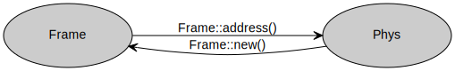
Преобразования внутри виртуального пространства
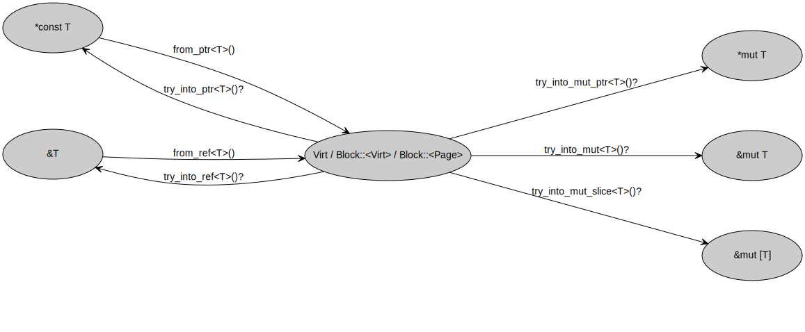
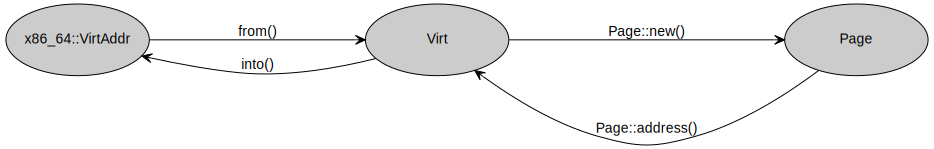
Преобразования между Addr/Phys/Virt и Frage/Frame/Page
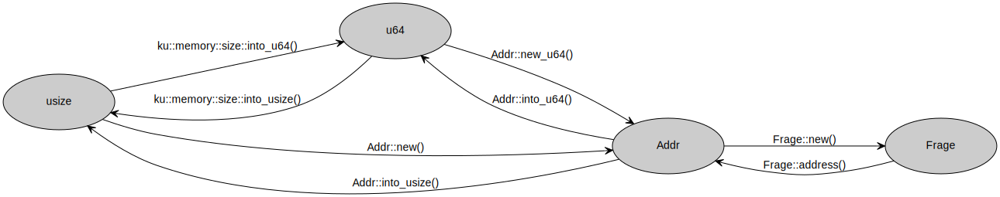
Преобразования между пространствами
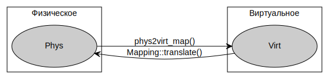
План лабораторной работы №1
Для управления памятью ядру нужна структура данных, хранящая информацию про имеющиеся физические фреймы. Когда будет поступать запрос на выделение памяти, эта структура должна будет выдать запрошенное количество фреймов. При освобождении фреймов же, структура должна будет обработать этот факт. То есть, ядру понадобится аллокатор физических фреймов.
Однако, самой такой структуре нужна память. Эту память нужно как-то выделить и учесть в самом аллокаторе памяти. Причём выделять память под аллокатор нужно до того как он сам будет инициализирован. Получаем замкнутый круг.
Выбираться из него будем в три этапа.
Сначала
реализуем простой аллокатор
физических фреймов
BootFrameAllocator.
Он не будет требовать много памяти и его размер будет известен на этапе компиляции.
Этот аллокатор при инициализации должен будет учесть значительную часть свободной физической памяти.
В качестве структуры данных для учёта свободных фреймов
BootFrameAllocator
использует пару индексов — номер первого свободного фрейма и номер следующего за последним свободным фреймом.
При аллокации он выдаёт свободные фреймы и меняет индексы для учёта этого факта.
А вот деаллокацию он просто не поддерживает.
Использовать этот аллокатор будем только во время инициализации ядра, что подчёркивается его названием.
На втором этапе нам нужно будет
поддержать работу с виртуальным адресным пространством,
инкапсулированную в структуру
AddressSpace.
В ней вы реализуете аллокацию виртуальных страниц в адресном пространстве и страничное преобразование.
С помощью этих операций в дальнейшем можно будет аллоцировать память под структуры, размер которых не известен на этапе компиляции.
После этого
реализуем чуть более сложный аллокатор
физических фреймов
MainFrameAllocator.
Про каждый фрейм он будет помнить некоторую информацию, собранную в
FrameInfo.
Соответственно, ему потребуется целый
срез
MainFrameAllocator::frame_info.
Размер этого среза зависит от доступного количества памяти в компьютере,
поэтому он не может быть инициализирован статически.
Память под него мы выделим с помощью
AddressSpace
из
BootFrameAllocator.
Отражением этого плана в коде является функция
kernel::memory::init():
#![allow(unused)] fn main() { fn init(boot_info: &'static BootInfo) { ... *FRAME_ALLOCATOR.lock() = FrameAllocator::Boot( BootFrameAllocator::new(&boot_info.memory_map) ); *BASE_ADDRESS_SPACE.lock() = AddressSpace::new(phys2virt); *FRAME_ALLOCATOR.lock() = FrameAllocator::Main( main_frame_allocator::init(&boot_info.memory_map), ); ... } }
Сначала глобальным аллокатором физических фреймов
FRAME_ALLOCATOR
она делает структуру
BootFrameAllocator.
Затем она инициализирует глобальную переменную
BASE_ADDRESS_SPACE
для управления адресным пространством структурой
AddressSpace.
Затем глобальный аллокатор физических фреймов
FRAME_ALLOCATOR
меняется на структуру
MainFrameAllocator,
которую возвращает функция
main_frame_allocator::init().
FrameAllocator::Boot и FrameAllocator::Main — это элементы перечисления
#![allow(unused)] fn main() { pub enum FrameAllocator { Void, Boot(BootFrameAllocator), Main(MainFrameAllocator), } }
Они позволяют понять, какой из аллокаторов физических фреймов используется в данный момент.
Временный аллокатор физических фреймов
В этой задаче реализуем простой аллокатор физических фреймов
kernel::memory::boot_frame_allocator::BootFrameAllocator.
В качестве структуры данных для учёта свободных фреймов
BootFrameAllocator
использует поле
BootFrameAllocator::block
типа
Block<Frame>.
BootFrameAllocator::block
содержит полуоткрытый интервал свободных фреймов.
Поле
BootFrameAllocator::initial_block
содержит копию стартового значение поля
BootFrameAllocator::block.
И не меняется при аллокациях, в отличие от
BootFrameAllocator::block.
Оно используется в методе
BootFrameAllocator::is_managed()
для определения, что заданный фрейм принадлежит этому аллокатору, вне зависимости от того был ли он уже аллоцирован или нет.
Дело в том, что
BootFrameAllocator
не будет учитывать все доступные физические фреймы, а только некоторый непрерывный их блок.
Потому что есть зарезервированные области физической памяти, которые мы не можем выделять.
А отслеживать несколько областей свободной или занятой памяти
BootFrameAllocator
не может в силу своей простоты.
Параметр T обобщённого типа Block<T>
и соответствующее фантомное, не занимающее памяти, поле
Block::tag
служат той же цели, что и в
Addr<T: Tag> —
сделать блоки с разными параметрами T несовместимыми.
Поэтому Block<Frame> будет несовместим с Block<Page> и компилятор не даст их перепутать.
Подробнее про тип этого фантомного тега можно посмотреть в документации —
core::marker::PhantomData.
Библиотека bootloader, которую мы используем для загрузки ОС,
получает от BIOS или UEFI
информацию о физической памяти компьютера.
Этот процесс состоит из нескольких наслоений легаси.
Подробнее о том, как он устроен можно посмотреть тут.
А ориентировочную карту зарезервированных областей — тут.
К счастью,
bootloader
скрывает от нас это легаси и предоставляет готовую структуру
bootloader::bootinfo::MemoryMap,
которая описывает карту доступной физической памяти.
Структура MemoryMap
реализует типаж
core::ops::Deref,
возвращая из него
массив структур
bootloader::bootinfo::MemoryRegion.
Это означает, что если мы напишем
#![allow(unused)] fn main() { impl BootFrameAllocator { fn new(memory_map: &MemoryMap) -> Self { for region in memory_map.iter() { ... } } } }
переменная region пробежится по всем
MemoryRegion
в
MemoryMap.
В каждом из них есть поле
MemoryRegion::region_type,
которое равно
MemoryRegionType::Usable
для незанятых диапазонов физической памяти.
Нас будут интересовать только они.
Кроме того, в
MemoryRegion
есть поле
MemoryRegion::range
типа
bootloader::bootinfo::FrameRange,
которе устроено аналогично
Block<Frame>
и содержит поля
FrameRange::start_frame_number и
FrameRange::end_frame_number.
Они соответствуют
Block::<Frame>::start и
Block::<Frame>::end.
Из пары
FrameRange::start_frame_number и
FrameRange::end_frame_number,
можно сделать соответствующий
Block::<Frame>
с помощью метода
Block::<Frame>::new_u64(start, end).
Задача 1 — BootFrameAllocator
Инициализация
Напишите реализацию метода
#![allow(unused)] fn main() { fn BootFrameAllocator::new( memory_map: &MemoryMap, ) -> BootFrameAllocator }
в файле kernel/src/memory/boot_frame_allocator.rs.
Он должен вернуть заполненную структуру
BootFrameAllocator,
содержащую блок свободных фреймов по информации из memory_map.
Выберете самый большой блок подряд идущих свободных фреймов.
Заметьте, что внутри impl BootFrameAllocator { ... } вы можете называть тип BootFrameAllocator через его синоним Self.
Также обратите внимание, что в отличие от C++, параметр обобщённого типа нужно в общем случае предварять двойным двоеточием — Block::<Frame>.
В некоторых контекстах двойное двоеточие можно опустить и написать как в C++ — Block<Frame>.
Если вы не напишете :: в случаях, когда оно обязательно, компилятор выдаст ошибку:
error: comparison operators cannot be chained
--> src/memory/boot_frame_allocator.rs:34:39
|
34 | memory_region = %Block<Frame>::new_u64(start, end),
| ^ ^
|
help: use `::<...>` instead of `<...>` to specify type or const arguments
|
34 | memory_region = %Block::<Frame>::new_u64(start, end),
| ++
Но чаще всего вам не потребуется указывать шаблонный параметр вообще. Rust использует достаточно мощный алгоритм вывода типов и если вы напишите что-нибудь вроде
#![allow(unused)] fn main() { fn new(memory_map: &MemoryMap) -> Self { ... let block = Block::new_u64(start, end); ... Self { block, initial_block: block, } } }
явно указывать ::<Frame> не потребуется.
Если же Rust не сможет вывести опущенный параметр обобщённого типа, он выдаст сообщение об ошибке:
error[E0282]: type annotations needed
--> src/memory/boot_frame_allocator.rs:33:34
|
33 | memory_region = %Block::new_u64(start, end),
| ^^^^^^^^^^^^^^ cannot infer type for type parameter `T`
For more information about this error, try `rustc --explain E0282`.
На этом примере также видно, что при инициализации поля структуры из переменной с таким же именем, это имя можно не дублировать.
Теперь должен проходить тест 2_mm_1_boot_frame_allocator::sanity_check, но не остальные тесты из 2-mm-1-boot-frame-allocator:
$ (cd kernel; cargo test --test 2-mm-1-boot-frame-allocator)
...
2_mm_1_boot_frame_allocator::sanity_check-------------------
17:20:21 0 D free_frames = 31290; min_free_frames = 28672; qemu_memory_frames = 32768
17:20:21 0 D managed = 31290; used = 0
2_mm_1_boot_frame_allocator::sanity_check---------- [passed]
2_mm_1_boot_frame_allocator::allocate-----------------------
panicked at 'not implemented', kernel/src/memory/boot_frame_allocator.rs:71:9
--------------------------------------------------- [failed]
17:20:21 0 I exit qemu; exit_code = FAILURE
Аллокация физических фреймов
Для аллокации фреймов служат два метода:
fn BootFrameAllocator::allocate_block(size: usize) -> Result<Block<Frame>>выделяет блок подряд идущих фреймов, достаточный для хранения объекта размеромsizeбайт.fn BootFrameAllocator::allocate() -> Result<Frame>выделяет ровно один фрейм.
Оба метода заворачивают свой результат в kernel::error::Result.
Если в
BootFrameAllocator
осталось меньше свободных фреймов, чем было запрошено, они не меняют состояние
BootFrameAllocator::block
и возвращают ошибку
kernel::error::Error::NoFrame.
Реализуйте метод
#![allow(unused)] fn main() { fn Block::tail(&mut self, count: usize) -> Option<Self> }
в файле ku/src/memory/block.rs.
Он должен разделить блок self на две дизъюнктные части:
- новое значение
selfи - новый
Blockразмеромcountединиц.
То есть, от существующего блока он откусывает хвост с заданным количеством единиц, и возвращает его в виде нового блока Self::new(...), завернув в
core::option::Option::Some:
Some(Self::new(...)).
Если в исходном блоке нет запрошенного количества, не меняйте его и верните
core::option::Option::None, например
#![allow(unused)] fn main() { pub fn tail(&mut self, count: usize) -> Option<Self> { ... return None; ... } }
или просто None, если это последнее выражение в функции:
#![allow(unused)] fn main() { pub fn tail(&mut self, count: usize) -> Option<Self> { ... None } }
Проверьте свою реализацию запустив тест:
$ (cd kernel; cargo test --test 2-mm-1-block)
...
2_mm_1_block::block-----------------------------------------
17:21:00 0 D start = 0; end = 0; block = [0v0, 0v0), size 0 B
17:21:00 0 D start = 0; end = 33; block = [0v0, 0v21), size 33 B
17:21:00 0 D start = 0; end = 66; block = [0v0, 0v42), size 66 B
17:21:00 0 D start = 0; end = 99; block = [0v0, 0v63), size 99 B
17:21:00 0 D start = 25; end = 33; block = [0v19, 0v21), size 8 B
17:21:00 0 D start = 25; end = 66; block = [0v19, 0v42), size 41 B
17:21:00 0 D start = 25; end = 99; block = [0v19, 0v63), size 74 B
17:21:01 0 D start = 50; end = 66; block = [0v32, 0v42), size 16 B
17:21:01 0 D start = 50; end = 99; block = [0v32, 0v63), size 49 B
17:21:01 0 D start = 50; end = 132; block = [0v32, 0v84), size 82 B
17:21:01 0 D start = 75; end = 99; block = [0v4B, 0v63), size 24 B
17:21:01 0 D start = 75; end = 132; block = [0v4B, 0v84), size 57 B
17:21:01 0 D start = 75; end = 165; block = [0v4B, 0vA5), size 90 B
2_mm_1_block::block-------------------------------- [passed]
17:21:01 0 I exit qemu; exit_code = SUCCESS
Применив Block::tail()
к полю
BootFrameAllocator::block
реализуйте метод
#![allow(unused)] fn main() { fn BootFrameAllocator::allocate_block( size: usize, ) -> Result<Block<Frame>> }
в файле kernel/src/memory/boot_frame_allocator.rs.
Превратить
Option::None
в
Error::NoFrame
можно с помощью метода
Option::ok_or():
#![allow(unused)] fn main() { fn allocate_block(&mut self, size: usize) -> Result<Block<Frame>> { ... tail.ok_or(NoFrame) } }
Если вы забудете превратить Option в Result и используете оператор ?, Rust выдаст сообщение об ошибке “the ? operator can only be used in a function that returns Result or Option”.
error[E0277]: the `?` operator can only be used in a method that returns `Result` or `Option` (or another type that implements `FromResidual`)
--> kernel/src/memory/boot_frame_allocator.rs:61:41
|
59 | / pub(super) fn allocate_block(&mut self, size: usize) -> Result<Block<Frame>> {
60 | | ...
61 | | ...?
| | ^ cannot use the `?` operator in a method that returns `Result<Block<Frage<PhysTag>>, ku::Error>`
62 | | }
| |_____- this function should return `Result` or `Option` to accept `?`
|
= help: the trait `FromResidual<core::option::Option<Infallible>>` is not implemented for `Result<Block<Frage<PhysTag>>, ku::Error>`
= help: the following other types implement trait `FromResidual<R>`:
<Result<T, F> as FromResidual<Result<Infallible, E>>>
<Result<T, F> as FromResidual<Yeet<E>>>
For more information about this error, try `rustc --explain E0277`.
Аналогичная ошибка будет при применении оператора ? к Result, если функция возвращает Option.
Вам может пригодиться функция
fn Frame::count_up(size: usize) -> usize.
Она реализует формулу \( \lceil \frac{\texttt{size}}{\texttt{Frame::SIZE}} \rceil \),
возвращая количество фреймов, которое требуется для хранения size байт.
Используя BootFrameAllocator::allocate_block()
реализуйте метод
#![allow(unused)] fn main() { fn BootFrameAllocator::allocate() -> Result<Frame> }
в файле kernel/src/memory/boot_frame_allocator.rs.
Проверьте себя
Запустите тесты:
$ (cd kernel; cargo test --test 2-mm-1-block --test 2-mm-1-boot-frame-allocator)
...
2_mm_1_block::block-----------------------------------------
17:38:22 0 D start = 0; end = 0; block = [0v0, 0v0), size 0 B
17:38:22 0 D start = 0; end = 33; block = [0v0, 0v21), size 33 B
17:38:22 0 D start = 0; end = 66; block = [0v0, 0v42), size 66 B
17:38:22 0 D start = 0; end = 99; block = [0v0, 0v63), size 99 B
17:38:22 0 D start = 25; end = 33; block = [0v19, 0v21), size 8 B
17:38:22 0 D start = 25; end = 66; block = [0v19, 0v42), size 41 B
17:38:22 0 D start = 25; end = 99; block = [0v19, 0v63), size 74 B
17:38:23 0 D start = 50; end = 66; block = [0v32, 0v42), size 16 B
17:38:23 0 D start = 50; end = 99; block = [0v32, 0v63), size 49 B
17:38:23 0 D start = 50; end = 132; block = [0v32, 0v84), size 82 B
17:38:23 0 D start = 75; end = 99; block = [0v4B, 0v63), size 24 B
17:38:23 0 D start = 75; end = 132; block = [0v4B, 0v84), size 57 B
17:38:23 0 D start = 75; end = 165; block = [0v4B, 0vA5), size 90 B
2_mm_1_block::block-------------------------------- [passed]
17:38:23 0 I exit qemu; exit_code = SUCCESS
...
2_mm_1_boot_frame_allocator::sanity_check-------------------
17:38:25 0 D free_frames = 31306; min_free_frames = 28672; qemu_memory_frames = 32768
17:38:25 0 D managed = 31306; used = 0
2_mm_1_boot_frame_allocator::sanity_check---------- [passed]
2_mm_1_boot_frame_allocator::allocate-----------------------
17:38:25 0 D frames = [Frame(32735 @ 0p7FDF000), Frame(32734 @ 0p7FDE000)]
2_mm_1_boot_frame_allocator::allocate-------------- [passed]
2_mm_1_boot_frame_allocator::allocated_frames_are_unique----
17:38:25 0 D free_frames = 31304
17:38:25 0 D prev_frame = 32733 @ 0p7FDD000; frame = 32732 @ 0p7FDC000
17:38:25 0 D prev_frame = 22733 @ 0p58CD000; frame = 22732 @ 0p58CC000
17:38:26 0 D prev_frame = 12733 @ 0p31BD000; frame = 12732 @ 0p31BC000
17:38:26 0 D prev_frame = 2733 @ 0pAAD000; frame = 2732 @ 0pAAC000
2_mm_1_boot_frame_allocator::allocated_frames_are_unique [passed]
17:38:26 0 I exit qemu; exit_code = SUCCESS
Использование аллокатора физических фреймов
Ядро выделяет физические фреймы с помощью глобальной переменной
kernel::memory::FRAME_ALLOCATOR.
Это
kernel::memory::FrameAllocator,
обёрнутый в спинлок
spin::mutex::Mutex —
Mutex<FrameAllocator>.
Чтобы работать с
FRAME_ALLOCATOR,
нужно сначала захватить блокировку методом
Mutex::lock(),
а затем уже вызвать подходящий метод
FrameAllocator,
например
FrameAllocator::allocate().
Метод
Mutex::lock()
возвращает
spin::mutex::MutexGuard
который:
- За счёт реализации типажей
core::ops::Derefиcore::ops::DerefMutпредоставляет прозрачный доступ к внутреннемуFrameAllocator. - При разрушении, например при выходе из своей зоны видимости или явном вызове
drop(guard), автоматически освобождает захваченную блокировку.
Пример использования с блокировками, которые освобождаются сразу, в том же выражении, есть в тестах kernel/tests/memory.rs:
#![allow(unused)] fn main() { let frame = FRAME_ALLOCATOR .lock() .allocate() .expect("failed to allocate a frame"); debug!(?frame); FRAME_ALLOCATOR .lock() .reference(frame); }
Сам
FrameAllocator
определён в файле kernel/src/memory/mod.rs
как один из трёх вариантов:
#![allow(unused)] fn main() { pub enum FrameAllocator { Void, Boot(BootFrameAllocator), Main(MainFrameAllocator), } }
FrameAllocator::Voidозначает что пока что никакой реализации не доступно и аллокация приведёт к ошибкеError::NoFrame.FrameAllocator::Boot— аллокации фреймов будут происходить из написанного вами в задачах 1 и 2BootFrameAllocator.FrameAllocator::Main— используется основной аллокатор фреймов, который вы реализуете позже.
Соответственно реализация, например, метода
FrameAllocator::allocate() —
это простая диспетчеризация:
#![allow(unused)] fn main() { impl FrameAllocator { ... pub fn allocate(&mut self) -> Result<Frame> { match self { FrameAllocator::Void => Err(NoFrame), FrameAllocator::Boot(boot_allocator) => boot_allocator.allocate(), FrameAllocator::Main(main_allocator) => main_allocator.allocate(), } } ... } }
Другие методы
FrameAllocator
реализованы аналогично.
Если взглянуть на наш план функции
kernel::memory::init()
ещё раз:
#![allow(unused)] fn main() { fn init(boot_info: &'static BootInfo) { ... *FRAME_ALLOCATOR.lock() = FrameAllocator::Boot( BootFrameAllocator::new(&boot_info.memory_map) ); *BASE_ADDRESS_SPACE.lock() = AddressSpace::new(phys2virt); *FRAME_ALLOCATOR.lock() = FrameAllocator::Main( main_frame_allocator::init(&boot_info.memory_map), ); ... } }
Видно, что после строчки *FRAME_ALLOCATOR.lock() = FrameAllocator::Boot(...) становится доступна
аллокация физических фреймов.
Которой пользуются AddressSpace и main_frame_allocator::init().
А потом глобальный аллокатор переключается на основной: *FRAME_ALLOCATOR.lock() = FrameAllocator::Main(...) и
больше
BootFrameAllocator
не используется.
Ориентировочный объём работ этой части лабораторки
kernel/src/memory/boot_frame_allocator.rs | 45 +++++++++++++++++++++++++++---
ku/src/memory/block.rs | 8 ++++-
2 files changed, 48 insertions(+), 5 deletions(-)
Виртуальное адресное пространство
Управление виртуальной памятью включает в себя три компонента:
- Выделение физических фреймов памяти.
- Выделение виртуальных страниц адресного пространства.
- Поддержание отображения виртуальных страниц в физические фреймы.
Представьте себе, что приложение попросило у ядра size байт памяти.
Подсистема памяти может управлять только страницами.
Она не может выдать часть страницы одному процессу, а часть другому, так как права доступа к памяти регулируются с гранулярностью в страницу1.
Поэтому прежде всего ядро должно посчитать, сколько страниц достаточно для удовлетворения такого запроса —
\( n = \lceil \frac{\texttt{size}}{\texttt{Page::SIZE}} \rceil \), где
Page::SIZE —
размер страницы в байтах.
Из-за округления вверх, возможно, придётся выделить чуть больше запрошенного количества байт.
Далее, ядро должно найти \( n \) свободных физических фреймов. Причём, благодаря собственно виртуальности, не требуется чтобы они были смежными. Этот этап ядро может сделать лениво, то есть выделять физические фреймы только по мере того как приложение будет обращаться к выделенной памяти. Для простоты мы не будем реализовывать ленивое выделение физических фреймов.
А вот в виртуальном адресном пространстве нужно найти блок из \( n \) подряд идущих свободных виртуальных страниц.
Потому что ядро должно вернуть запрошенную память непрерывным блоком адресов.
Чтобы приложение могло работать с вернувшимся блоком памяти как с непрерывным массивом размером size байт.
Приложение работает в виртуальных адресах, поэтому именно виртуальные адреса должны идти подряд.
Наконец, ядро должно модифицировать отображение виртуальных страниц в физические фреймы так, чтобы только что выделенные виртуальные страницы ссылались на выделенные физические фреймы. Если выделение памяти делается лениво, то отображение нужно модифицировать в два этапа:
- Пометить в отображении виртуальные страницы как выделенные, но не отображённые на физические фреймы.
- Когда приложение обратится к одной из этих страниц, проверить что виртуальная страница действительно была выделена. И если была, то выделить физический фрейм и отобразить виртуальную страницу на него.
На данном этапе лабораторки у нас уже есть временный аллокатор физических фреймов. Займёмся реализацией остальных двух пунктов:
- Выделением виртуальных страниц адресного пространства.
- Поддержанием отображения виртуальных страниц в физические фреймы.
1: В 32–битном защищённом режиме x86-64 доступна сегментация адресного пространства. Она вводит дополнительный механизм контроля доступа к памяти с гранулярностью либо страница, либо байт, в зависимости от настроек сегмента. Этот механизм используется в статьях “Improved Address Space Switching on Pentium Processors by Transparently Multiplexing User Address Spaces” и Performance of Address-Space Multiplexing on the Pentium.
Аллокатор виртуальных страниц адресного пространства
За выделение последовательно идущих виртуальных страниц отвечает
kernel::memory::page_allocator::PageAllocator.
Он устроен столь же просто, как уже знакомый нам
BootFrameAllocator.
У него есть
PageAllocator::block —
Block<Page>,
из которого он выделяет блоки страниц уже реализованной нами функцией
Block::tail().
Инициализировать же
PageAllocator::block
предлагается следующим способом.
Пройдём по таблице страниц корневого уровня.
Пусть, например, оказалось, что запись номер \( 17 \) корневого уровня свободна.
Тогда свободны все виртуальные адреса в полуинтервале
\( [17 \cdot 2^{9 + 9 + 9 + 12}, 18 \cdot 2^{9 + 9 + 9 + 12}) \).
Это дает \( 2^{9 + 9 + 9} \) свободных виртуальных страниц,
то есть 512 GiB адресного пространства на каждую такую запись.
Действительно, каждая запись в узле таблицы страниц на уровне
ku::memory::mmu::PAGE_TABLE_LEAF_LEVEL== 0
ссылается на виртуальную страницу, то есть ссылается на блок памяти размера 4KiB или \( 2^{12} \) байт.
Каждая запись в узле более высокого уровня ссылается на
ku::memory::mmu::PAGE_TABLE_ENTRY_COUNT
записей более низкого уровня.
То есть через неё адресуется в
ku::memory::mmu::PAGE_TABLE_ENTRY_COUNT== 512,
или в \( 2^{9} \),
раз больше байт.
Поэтому, если
ku::memory::mmu::PAGE_TABLE_ROOT_LEVEL== 3,
то всего выходит 512 * 512 * 512 * 4KiB = 512 GiB, или \( 2^{9 + 9 + 9 + 12} \) байт.
Найдем в таблице страниц корневого уровня самую длинную последовательность подряд идущих свободных записей —
добудем много подряд идущих свободных виртуальных страниц.
Почти все \( 2^9 \) записи корневого уровня свободны,
а значит получаем почти по 128 TiB непрерывного свободного адресного пространства в каждой из
двух половин.
При этом рассматривать будем только записи корневого узла таблицы страниц,
спускаться на следующие уровни не будем.
Для простоты реализации
PageAllocator
не умеет ничего освобождать, как и
BootFrameAllocator.
Но в отличие от физических фреймов, виртуальных страниц гораздо больше — сотни TiB, и они не потребляют память.
Кроме того, адресное пространство будет отдельное на каждый процесс.
И даже если процесс исчерпает все виртуальные страницы своего адресного пространства,
на другие процессы это не повлияет.
Поэтому с такой реализацией аллокатора страниц проблем не возникнет.
В отличие от
BootFrameAllocator,
который нам придётся заменить на
MainFrameAllocator.
Задача 2 — PageAllocator
Инициализация аллокатора страниц
Реализуйте вспомогательную функцию
#![allow(unused)] fn main() { fn PageAllocator::find_unused_block(page_directory: &PageTable) -> Option<Block<Page>> }
в файле kernel/src/memory/page_allocator.rs.
Эта функция принимает на вход таблицу страниц
ku::memory::mmu::PageTable
корневого уровня и должна вернуть блок страниц
Block<Page>,
соответствующий самой длинной последовательности пустых записей в page_directory.
Если все записи заняты, верните None.
Узел дерева многоуровневой таблицы страниц
PageTable
это просто массив из
ku::memory::mmu::PAGE_TABLE_ENTRY_COUNT
элементов типа
ku::memory::mmu::PageTableEntry.
С
PageTableEntry
мы будем ещё много работать.
Пока что скорее всего хватит её метода
fn PageTableEntry::present(&self) -> bool.
Он возвращает true, если запись используется.
Вам может пригодиться константа
ku::memory::mmu::PAGE_TABLE_ROOT_LEVEL —
номер корневого уровня таблицы страниц, если считать листьевой уровень
ku::memory::mmu::PAGE_TABLE_LEAF_LEVEL
с записями про отдельные страницы нулевым.
Также могут пригодиться и
другие константы
из файла ku/src/memory/mmu.rs
Вспомните про две половины виртуального адресного пространства.
Используйте только одну из них.
Учтите, что при выборе половины со старшими адресами — 0vFFFF_... — читать адреса в логах
может быть менее удобно.
При инициализации ядра
PageAllocator
залогирует примерно такое сообщение:
15:08:28 0 I page allocator init; free_page_count = 33822867456; block = [2.000 TiB, 128.000 TiB), size 126.000 TiB
Аллокация виртуальных страниц
Применив Block::tail()
к полю
PageAllocator::block
реализуйте метод
#![allow(unused)] fn main() { fn PageAllocator::allocate(&mut self, size: usize) -> Result<Block<Page>> }
в файле kernel/src/memory/page_allocator.rs.
Она принимает размер в байтах и возвращает блок свободных виртуальных страниц
Block<Page>.
Если свободных страниц не хватает, верните ошибку
kernel::error::Error::NoPage.
Вам может пригодиться функция
fn Page::count_up(size: usize) -> usize.
Она реализует формулу \( \lceil \frac{\texttt{size}}{\texttt{Page::SIZE}} \rceil \),
возвращая количество страниц, которое требуется для хранения size байт.
Также может пригодиться метод
Option::ok_or():
tail.ok_or(NoPage).
Метод
PageAllocator::allocate()
похож на уже реализованный вами
BootFrameAllocator::allocate_block().
Проверьте себя
Запустите тесты:
$ (cd kernel; cargo test --test 2-mm-1-block --test 2-mm-2-page-allocator)
...
2_mm_1_block::block-----------------------------------------
18:00:54 0 D start = 0; end = 0; block = [0v0, 0v0), size 0 B
18:00:54 0 D start = 0; end = 33; block = [0v0, 0v21), size 33 B
18:00:54 0 D start = 0; end = 66; block = [0v0, 0v42), size 66 B
18:00:54 0 D start = 0; end = 99; block = [0v0, 0v63), size 99 B
18:00:54 0 D start = 25; end = 33; block = [0v19, 0v21), size 8 B
18:00:54 0 D start = 25; end = 66; block = [0v19, 0v42), size 41 B
18:00:54 0 D start = 25; end = 99; block = [0v19, 0v63), size 74 B
18:00:55 0 D start = 50; end = 66; block = [0v32, 0v42), size 16 B
18:00:55 0 D start = 50; end = 99; block = [0v32, 0v63), size 49 B
18:00:55 0 D start = 50; end = 132; block = [0v32, 0v84), size 82 B
18:00:55 0 D start = 75; end = 99; block = [0v4B, 0v63), size 24 B
18:00:55 0 D start = 75; end = 132; block = [0v4B, 0v84), size 57 B
18:00:55 0 D start = 75; end = 165; block = [0v4B, 0vA5), size 90 B
2_mm_1_block::block-------------------------------- [passed]
18:00:55 0 I exit qemu; exit_code = SUCCESS
...
2_mm_2_page_allocator::sanity_check-------------------------
18:00:57 0 D page_allocator_block = [0v18000000000, 0v7FFFFFFFF000), size 126.500 TiB, Page[~1.500 TiB, ~128.000 TiB)
2_mm_2_page_allocator::sanity_check---------------- [passed]
2_mm_2_page_allocator::allocate_page------------------------
18:00:57 0 D page = Page(34359738366 @ 0v7FFFFFFFE000)
2_mm_2_page_allocator::allocate_page--------------- [passed]
2_mm_2_page_allocator::allocate_two_pages-------------------
18:00:57 0 D pages = [Page(34359738365 @ 0v7FFFFFFFD000), Page(34359738364 @ 0v7FFFFFFFC000)]
2_mm_2_page_allocator::allocate_two_pages---------- [passed]
2_mm_2_page_allocator::allocate_block-----------------------
18:00:57 0 D requested_size = 38.000 KiB; block = [0v7FFFFFFF2000, 0v7FFFFFFFC000), size 40.000 KiB, Page[~128.000 TiB, ~128.000 TiB)
2_mm_2_page_allocator::allocate_block-------------- [passed]
18:00:57 0 I exit qemu; exit_code = SUCCESS
Ориентировочный объём работ этой части лабораторки
kernel/src/memory/page_allocator.rs | 32 ++++++++++++++++++++++++++++++--
1 file changed, 30 insertions(+), 2 deletions(-)
Отображение виртуальных страниц в физические фреймы
За это отображение отвечает структура
kernel::memory::mapping::Mapping.
Фактически она реализует дерево большой арности — 512, если закрыть глаза на возможность сослаться в узле на любой узел.
Такая возможность используется только в специфических случаях, например для реализации рекурсивного отображения.
Mapping содержит уже немного знакомые нам поля:
Mapping::page_directoryтипаPageTable— таблица страниц самого верхнего уровня, корневая в дереве.Mapping::phys2virtтипаPage— начало “окна”, в которое отображена вся физическая память.
Mapping::phys2virt
нужен, чтобы с помощью функции
#![allow(unused)] fn main() { fn phys2virt_map(phys2virt: Page, address: Phys) -> Virt }
по заданному физическому адресу, найти куда он отображён в “окне”.
Это потребуется когда нам нужно будет записать в какую-нибудь
PageTable.
Так как в
PageTableEntry таблица
PageTable следующего вниз уровня
задаётся именно физическим адресом.
Подумайте, а можно ли было бы в
PageTableEntryхранить виртуальный адресPageTable, на которую ссылается даннаяPageTableEntry?
Отображение виртуальных страниц на физические фреймы:
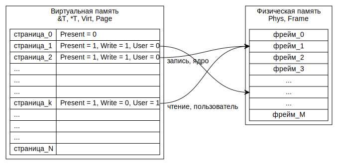
Про отображение страниц можно почитать на сайте osdev, нас интересует 64-битный вариант для x86-64:
Ещё более подробный и обстоятельный разбор есть в блоге Writing an OS in Rust:
Задача 3 — Mapping
Отображение виртуальных страниц на физические фреймы
Страничное преобразование устроено как показано на схеме.
Стрелки ведут из физических адресов, хранящихся в регистре
CR3
и в элементах
ku::memory::mmu::PageTableEntry
таблиц
ku::memory::mmu::PageTable,
в целевые фреймы и целевой байт.
А пунктиром показано какая часть битового представления виртуального адреса
(Virt)
используется как индекс в одной из таблиц
PageTable,
либо как смещение внутри целевого фрейма.
Каждая PageTable занимает ровно один фрейм физической памяти.
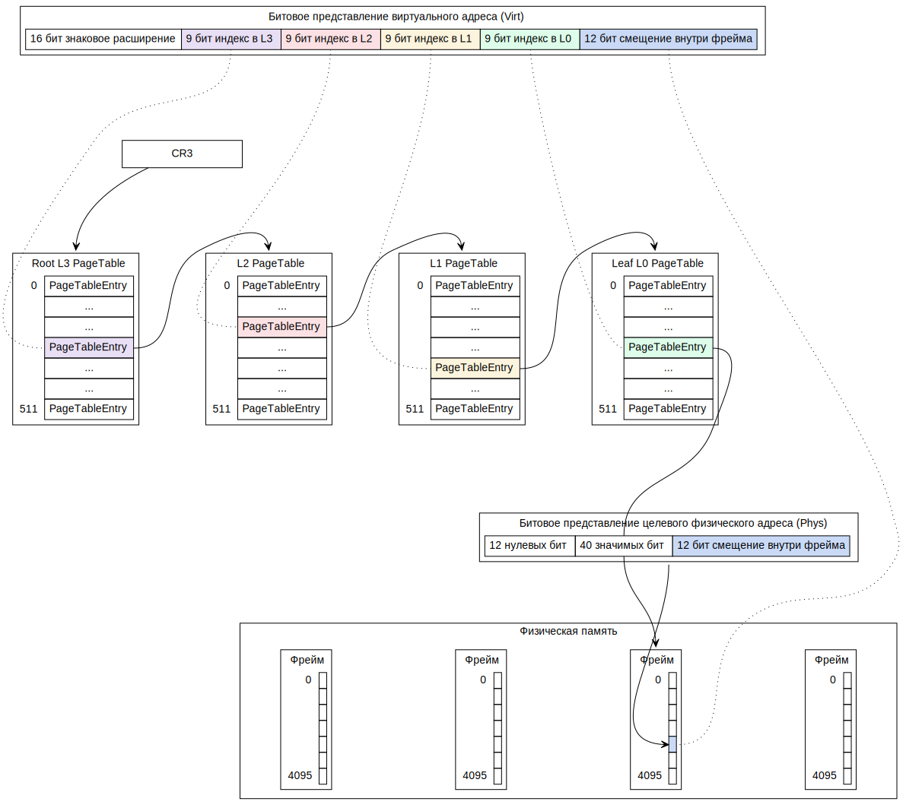
Вооружившись этими знаниями, реализуйте метод
#![allow(unused)] fn main() { unsafe fn Mapping::translate( &mut self, virt: Virt, mut frame_allocator: Option<&mut FrameAllocator>, flags: PageTableFlags, ) -> Result<&mut PageTableEntry> }
в файле kernel/src/memory/mapping.rs.
Он принимает на вход
- Виртуальный адрес
virt, который нужно транслировать. - Опциональный аллокатор фреймов
frame_allocator. - Флаги
flagsдля промежуточных записей таблиц страниц, если их придётся создавать.
И возвращает ссылку на запись
PageTableEntry
в
PageTable
листьевого уровня (L0 на схеме),
соответствующую входному виртуальному адресу virt.
Возвращается ссылка на изменяемую
PageTableEntry,
а не например
Phys.
Чтобы вызывающая функция могла потом как-либо модифицировать отображение virt — удалить это отображение, изменить его флаги, поменять физический адрес.
Получить же целевой
Phys
из возвращённой
PageTableEntry
можно в одно действие —
PageTableEntry::phys().
Mapping::translate()
должен пройти от корневой L3 до листьевой L0 по физическим фреймам, которые возвращает метод
fn PageTableEntry::frame() -> Result<Frame>
для промежуточных
PageTableEntry.
Если какая-то из этих промежуточных
PageTableEntry
не отображена на физическую память, то есть два варианта:
- Входной
frame_allocatorравенNone, тогдаMapping::translate()сразу выходит, возвращая ошибкуError::NoPage. - Входной
frame_allocatorравенSome, тогдаMapping::translate()аллоцирует с его помощью фрейм для недостающей промежуточнойPageTable. И очищает её — все записи в ней должны быть равны значению, которое возвращает методPageTableEntry::default().
Вам может пригодиться конструкция frame_allocator.as_mut().ok_or(NoPage)?. В ней
Option::as_mut()
преобразует &mut Option<FrameAllocator> в Option<&mut FrameAllocator>.
Далее, уже встречавшаяся нам Option::ok_or(NoPage) преобразует
Option::None
в
Result::Err(NoPage)
а
Option::Some(frame_allocator)
в
Result::Ok(frame_allocator).
Последним штрихом ? разворачивает
Result::Ok(frame_allocator)
в содержащийся внутри &mut FrameAllocator, а
Result::Err
прокидывает в вызывающую функцию.
Именно изменяемый &mut FrameAllocator нужен нам чтобы аллоцировать из него фреймы для промежуточных таблиц
PageTable,
если это понадобится.
Ещё один вариант — использовать
Option::as_deref_mut()
вместо
Option::as_mut().
Если во
FrameAllocator
не окажется свободных фреймов, он вернёт ошибку
Error::NoFrame,
как мы реализовали в
задаче 2.
Заметьте, что:
- Если в
Mapping::translate()не передалиFrameAllocator, она возвращаетError::NoPage. Это означает “виртуальная страница для данногоvirtне отображена в физическую память”. - А если передали, но он не смог выделить свободный физический фрейм, то
Mapping::translate()вернёт ошибкуkernel::error::Error::NoFrame. Это означает “во время исполнения операции понадобилось выделить дополнительный физический фрейм, но свободных фреймов не осталось”.
У этих двух ситуаций разный смысл, поэтому
Mapping::translate()
возвращает для них разные значения ошибок.
Если в промежуточной таблице встретилась запись, в которой
PageTableEntry::flags()
содержит флаг
PageTableFlags::HUGE_PAGE,
верните
Error::Unimplemented.
Такая запись не является промежуточной, а задаёт большую страницу, —
x86-64 поддерживает страницы
размеров 4 KiB, 2 MiB и 1 GiB.
Мы не будем их поддерживать.
Но они нам будут попадаться, потому что с их помощью
bootloader
отображает всю физическую память в “окно” в виртуальной.
Делается это для экономии физических фреймов на само отображение.
Кроме того, есть ещё такой момент.
Если вызывающая функция захочет отобразить virt, например, с возможностью записи, и установит
соответствующий флаг
PageTableFlags::WRITABLE
только в том элементе
PageTableEntry
таблицы L0, которую вернёт
Mapping::translate(),
этого может оказаться недостаточно.
Дело в том, что процессор пересечёт флаги PageTableFlags::WRITABLE
из всех промежуточных
PageTableEntry
по схеме И.
И если в какой-то из промежуточных
PageTableEntry
флаг
PageTableFlags::WRITABLE
будет сброшен, то запись по виртуальному адресу virt будет запрещена,
несмотря на то что в
PageTableEntry
таблицы L0, она разрешена.
Поэтому в промежуточных
PageTableEntry
функция
Mapping::translate()
должна будет включить флаги, заданные ей в аргументе flags.
И никакие флаги промежуточных
PageTableEntry
она не должна случайно сбросить при этой операции.
Альтернативой было бы либо сразу включать все доступы в промежуточных
PageTableEntry,
либо возвращать из
Mapping::translate()
весь набор промежуточных
PageTableEntry.
Также заметьте, что включать нужно только флаги доступа, они задаются константой
ku::memory::mmu::FULL_ACCESS.
То есть, включать нужно флаги которые есть в пересечении — flags & FULL_ACCESS.
Выделение физического фрейма под отсутствующую промежуточную таблицу
PageTable
рекомендуется вынести во вспомогательную функцию
#![allow(unused)] fn main() { fn Mapping::map_intermediate( pte: &mut PageTableEntry, flags: PageTableFlags, phys2virt: Page, frame_allocator: &mut FrameAllocator, ) -> Result<()> }
в файле kernel/src/memory/mapping.rs.
Запись () в её результате означает пустой кортеж, — это аналог void языка C++.
То есть, функция либо возвращает Ok(()), если она отработала успешно, либо ошибку.
Функция Mapping::map_intermediate() статическая, она не принимает self.
Чтобы её вызвать нужно явно указать Self:: или Mapping::.
При реализации Mapping::translate() и Mapping::map_intermediate() вам также могут пригодиться:
- Поле
Mapping::page_directory, оно содержит адрес фрейма корневой таблицы L3, то есть фактически копию регистраCR3. - Константа
ku::memory::mmu::PAGE_TABLE_ROOT_LEVEL— та самая 3 из обозначения L3 для корневой таблицы страниц — третий уровень считая с нуля. - Константа
ku::memory::mmu::PAGE_TABLE_LEAF_LEVEL— та самая 0 из обозначения L0 для листьевой таблицы страниц. - Конструкция
unsafe { virt_addr.try_into_mut::<PageTable>()? }, которая превращаетVirtв&mut PageTable. - Метод
fill()срезов. - Цикл, чтобы обойти уровни таблицы. Для уменьшения потенциальных возможностей совершить ошибку, можно было бы сделать таблицы страниц разных уровней не совместимыми в системе типов, как здесь. Тогда компилятор не дал бы их перепутать в коде. Но такой подход, к сожалению, не даст написать обычный цикл по уровням, только рекурсию на обобщённых функциях или копипасту. Поэтому в Nikka выбор сделан в пользу одного и того же типа для узлов всех уровней.
- Итерирование в обратном порядке:
for i in (5..10).rev(), или жеfor i in (5..=10).rev()если10должно быть включительно. - Сохранение в самом начале функции
Mapping::translate()значенияself.phys2virtв отдельную переменную и использование уже новой переменной, если столкнётесь с излишней консервативностью borrow checker’а, подобного вида:
error[E0503]: cannot use `self.phys2virt` because it was mutably borrowed
--> src/memory/mapping.rs:58:65
|
55 | let ... = self...;
| ---- borrow of `*self` occurs here
...
58 | Self::map_intermediate(..., self.phys2virt, frame_allocator.as_mut().ok_or(NoPage)?)?;
| ^^^^^^^^^^^^^^ use of borrowed `*self`
...
61 | if ... {
| --- borrow later used here
Теперь должен проходить тест
$ (cd kernel; cargo test --test 2-mm-3-translate)
...
2_mm_3_mapping::translate-----------------------------------
18:27:12 0 D pte = PageTableEntry(2613347)
18:27:12 0 D read_ptr = 0xfffff0000027e420; write_ptr = 0x10000201420
18:27:12 0 D write_value = 0; read_value = 0; variable = 0
18:27:12 0 D write_value = 1; read_value = 1; variable = 1
18:27:12 0 D write_value = 2; read_value = 2; variable = 2
18:27:12 0 D write_value = 3; read_value = 3; variable = 3
18:27:12 0 D write_value = 4; read_value = 4; variable = 4
2_mm_3_mapping::translate-------------------------- [passed]
2_mm_3_mapping::map_intermediate----------------------------
18:27:12 0 D page = Page(34359738366 @ 0v7FFFFFFFE000)
18:27:12 0 D pte = PageTableEntry(0)
2_mm_3_mapping::map_intermediate------------------- [passed]
18:27:12 0 I exit qemu; exit_code = SUCCESS
А вот для проверки копирования и удаления виртуальных отображений нам понадобится основной аллокатор физических фреймов. Поэтому тесты для них придётся отложить.
Создание полной копии виртуального отображения
В будущем, при создании нового процесса, нам понадобится скопировать существующий
Mapping
в новый.
Это делает метод
Mapping::duplicate():
#![allow(unused)] fn main() { fn duplicate(&self) -> Result<Self> { let mut result = Self::new(Frame::zero(), self.phys2virt); result.page_directory = Self::duplicate_page_table(&mut result, self, self.page_directory, PAGE_TABLE_ROOT_LEVEL)?; Ok(result) } }
Основную работу он перекладывает на рекурсивный метод
Mapping::duplicate_page_table(),
запуская корневой вызов рекурсии.
Реализуйте метод
#![allow(unused)] fn main() { fn Mapping::duplicate_page_table( &self, dst: &mut Mapping, src_frame: Frame, level: u32, ) -> Result<Frame> }
в файле kernel/src/memory/mapping.rs
сейчас, пока помните как устроено страничное отображение.
Он принимает на вход:
- Новое отображение
dst, которое мы создаём как копию исходного. - Исходное отображение
self. - Исходный узел
PageTableтаблицы страниц в виде содержащего его фреймаsrc_frame. - Уровень этого узла
levelотPAGE_TABLE_ROOT_LEVEL = 3доPAGE_TABLE_LEAF_LEVEL = 0.
И должен создать копию заданного src_frame узла.
Возвращает он либо эту копию, либо возникшую в процессе работы ошибку.
Этот метод копирует только страничное отображение, то есть все PageTable уровней L3–L0,
но не пользовательские фреймы, на которые указывает это отображение.
То есть, должно получиться отображение,
которое переводит те же виртуальные адреса в те же физические адреса.
Разделяя таким образом пользовательскую часть физической память,
но дублируя физическую память под само страничное отображение (PageTable уровней L3–L0).
Если бы PageTable разделяли ту же физическую память, то уже после того как копирование отработало,
модификации исходного self приводили бы к модификации dst и наоборот.
А это не то что нам нужно.
Это означает, что
PageTableуровней L3–L1 включительно нужно пересоздать, заполняя ихPageTableEntryрезультатами рекурсивных вызововMapping::duplicate_page_table().- А вот
PageTableуровня L0 нужно просто скопировать как есть, их записиPageTableEntryдолжны вести в те же физические фреймы, что и в исходном отображенииself. Но только если соответствующая запись ведёт на страницу, принадлежащую ядру. Ссылки уровня L0 на страницы, принадлежащие пользователю —PageTableFlags::USER_ACCESSIBLE, — копировать не нужно. - На этот раз
PageTableFlags::HUGE_PAGEнужно корректно обработать. Это означает, что рекурсивно спускаться в записиPageTableEntryдля которых этот флаг включён не нужно. С этими записями нужно поступить как с записями на уровне L0, — скопировать в точности изself. - Не используемые записи в новых
PageTableнужно почистить, как и вMapping::map_intermediate().
Для физических фреймов, на которые указывают скопированные записи листьевого уровня L0, нужно вызвать
FrameAllocator::reference().
Этот метод увеличивает число ссылок на физический фрейм.
И позволяет понять, что физический фрейм нельзя считать свободным пока оба отображения self и dst существуют.
А ведь именно указанные фреймы мы разделяем, используя сразу в обоих отображениях.
Для выделения новых физических фреймов используйте
FrameAllocator::allocate().
В обоих случаях обращайтесь к глобальному
FRAME_ALLOCATOR.
Также вам могут пригодиться методы
unsafe fn Mapping::page_table_ref(&self, frame: Frame) -> &PageTableиunsafe fn Mapping::page_table_mut(&mut self, frame: Frame) -> &mut PageTable.
Они позволяют интерпретировать заданный физический фрейм frame как узел PageTable таблицы страниц.
И различаются только возможностью менять эту таблицу.
Учтите, что в рекурсивный вызов передаётся изменяемая ссылка dst: &mut Mapping.
А значит, в момент рекурсивного вызова не должно быть живых локальных переменных ссылающихся на dst прямо или косвенно.
Rust не даст скомпилировать такой код из-за нарушения владения dst, —
только одна из функций, вызывающая или вызываемая, может эксклюзивно заимствовать dst в каждый момент времени.
А изменяемая ссылка и означает эксклюзивность заимствования.
Удаление виртуального отображения
Раз есть способ создать новое отображение, которое расходует физические фреймы, значит должен быть и способ удалить его, вернув эти фреймы в систему.
Это делает реализация типажа core::ops::Drop:
#![allow(unused)] fn main() { impl Drop for Mapping { fn drop(&mut self) { assert!(Self::current_page_directory() != self.page_directory); if self.is_valid() { self.drop_page_table(self.page_directory, PAGE_TABLE_ROOT_LEVEL); } } } }
В строчке assert!(Self::current_page_directory() != self.page_directory) проверяется, что мы не пытаемся удалить отображение, которое в данный момент загружено в регистр
CR3
и является активным виртуальным пространством.
Далее вся работа перекладывается на рекурсивный метод
Mapping::drop_page_table().
Реализуйте метод
#![allow(unused)] fn main() { fn Mapping::drop_page_table( &mut self, src_frame: Frame, level: u32, ) }
в файле kernel/src/memory/mapping.rs.
Для освобождения фреймов используйте
FrameAllocator::deallocate(),
он уменьшит количество ссылок на фрейм и освободит его, когда ссылок не останется.
Перед освобождением фрейма, занятого под одну из PageTable, то есть из записей PageTableEntry уровней L3–L1,
нужно спуститься в этот фрейм, рекурсивно вызвав Mapping::drop_page_table().
Пользовательские фреймы нужно освобождать так же как и фреймы, занятые под PageTable.
А вот с записями у которых включён флаг PageTableFlags::HUGE_PAGE делать ничего не нужно — ни освобождать, ни спускаться в них рекурсивно.
Ориентировочный объём работ этой части лабораторки
kernel/src/memory/mapping.rs | 88 +++++++++++++++++++++++++++++++++++++++++--
1 file changed, 84 insertions(+), 4 deletions(-)
Высокоуровневый интерфейс управления адресным пространством
Всё управление адресным пространством инкапсулировано в структуре
kernel::memory::address_space::AddressSpace.
Её поле
AddressSpace::mapping
служит для модификации отображения страниц и реализовано вами ранее.
А поле
AddressSpace::page_allocator —
для выделения виртуальных страниц внутри этого адресного пространства.
И тоже уже реализовано.
Задача 4 — высокоуровневый интерфейс управления адресным пространством
Отображение виртуальной страницы на физический фрейм
Реализуйте метод
#![allow(unused)] fn main() { unsafe fn AddressSpace::map_page_to_frame( &mut self, page: Page, frame: Frame, flags: PageTableFlags, ) -> Result<()> }
в файле kernel/src/memory/address_space.rs.
Он должен отобразить заданную виртуальную страницу page на заданный физический фрейм frame с указанными флагами доступа flags.
Используйте
Mapping::translate()
и
FRAME_ALLOCATOR.
Вам может пригодиться метод
PageTableEntry::set_frame().
Увеличивать количество ссылок на frame не нужно, это задача вызывающей функции.
Дело в том, что нам иногда захочется использовать
AddressSpace::map_page_to_frame()
для отображения зарезервированных физических фреймов, про которые
FrameAllocator
ничего не знает и не отслеживает количество ссылок на них.
Например, это делает метод
kernel::smp::local_apic::LocalApic::map(),
инициализирующий работу с
контроллером прерываний APIC
методом ввода–вывода через память
(Memory-mapped I/O).
Если page уже была отображена, то старое отображение удаляется,
если только при этом не произойдёт замена прав доступа к странице с
“только для ядра” на “доступно в пользовательском пространстве” —
PageTableFlags::USER_ACCESSIBLE.
В случае попытки такой замены отображение не меняется, а возвращается ошибка
Error::PermissionDenied.
Если же отображение page поменялось, старый физический фрейм освобождается,
если на него не осталось других ссылок.
Удалить старый маппинг можно с помощью метода
AddressSpace::unmap_pte().
Используя
FrameAllocator::allocate()
из глобального
FRAME_ALLOCATOR
и
AddressSpace::map_page_to_frame()
реализуйте метод
#![allow(unused)] fn main() { unsafe fn AddressSpace::map_page( &mut self, page: Page, flags: PageTableFlags, ) -> Result<Frame> }
в файле kernel/src/memory/address_space.rs.
Он отличается от
AddressSpace::map_page_to_frame()
только тем, что не принимает frame, а выделяет его сам.
Удаление отображения заданной страницы
Реализуйте метод
#![allow(unused)] fn main() { unsafe fn AddressSpace::unmap_page( &mut self, page: Page, ) -> Result<()> }
и его вспомогательный метод
#![allow(unused)] fn main() { unsafe fn AddressSpace::unmap_pte( page: Page, pte: &mut PageTableEntry, ) -> Result<()> }
в файле kernel/src/memory/address_space.rs.
Воспользуйтесь
Mapping::translate(),
теперь в качестве flags ему можно передать пустой набор флагов
PageTableFlags::empty().
Важно сбросить запись в
буфере ассоциативной трансляции
(Translation lookaside buffer,
TLB)
касающуюся page.
Иначе процессор может использовать старую закешерованную в TLB запись, когда обратится по адресу внутри page в следующий раз.
А это может быть как уже совершенно другой физический фрейм, так и намеренно не отображённая на физическую память страница.
Выглядеть с вашей точки зрения это будет так: вы обращаетесь по некоторому адресу, а там находится совсем не то что вы ожидаете.
Даже отладчик будет показывать вам то же самое, что вы ожидаете.
А вот процессор будет читать и писать совсем в другую физическую память.
Это приведёт к трудно отлаживаемым
гейзенбагам.
Для сброса нужной записи TLB поможет функция
kernel::memory::mmu::flush().
Также вам пригодятся
Изучите как устроены отображения целых блоков
Посмотрите на методы
unsafe fn AddressSpace::map_block(&mut self, pages: Block<Page>, flags: PageTableFlags) -> Result<()>иunsafe fn AddressSpace::unmap_block(&mut self, pages: Block<Page>) -> Result<()>.
Их код и назначение должны быть уже понятны.
Изучите как устроены отображения срезов
С помощью реализованных вами функций метод
#![allow(unused)] fn main() { fn AddressSpace::map_slice_uninit<T>( &mut self, len: usize, flags: PageTableFlags, ) -> Result<&'static mut [MaybeUninit<T>]> }
выделяет срез неинициализированной памяти
core::mem::MaybeUninit,
достаточный для len элементов типа T.
Так как он пользуется выделением виртуальных страниц и физических фреймов,
каждый вызов расходует целое число фреймов.
То есть, выделение через него срезов маленького размера в байтах неэффективно.
В результате вернётся срез с большим, чем было запрошено, количеством элементов —
сколько поместилось в аллоцированном наборе страниц.
#![allow(unused)] fn main() { fn AddressSpace::map_slice<T, F: Fn() -> T>( &mut self, len: usize, flags: PageTableFlags, default: F, ) -> Result<&'static mut [T]> }
дополнительно параметризован
замыканием
типажа
core::ops::Fn.
Возвращаемый им срез уже инициализирован значениями, которые возвращает замыкание default.
#![allow(unused)] fn main() { unsafe fn AddressSpace::map_slice_zeroed<T>( &mut self, len: usize, flags: PageTableFlags, ) -> Result<&'static mut [T]> }
не принимает значение для инициализации, а инициализирует память нулями.
unsafe означает, что вызывающая функция должна гарантировать, что нулевые байты являются корректным значением для типа T.
#![allow(unused)] fn main() { unsafe fn AddressSpace::unmap_slice<T>( &mut self, slice: &mut [T], ) -> Result<()> }
удаляет отображение страниц под заданным срезом.
Он проверяет, что срез действительно занимает свои страницы целиком.
unsafe означает, что вызывающая функция должна гарантировать, что slice больше не будет использоваться.
Проверьте себя
Запустите тест:
$ (cd kernel; cargo test --test 2-mm-4-map)
...
2_mm_4_interface::map_slice---------------------------------
19:10:06 0 D slice = [0v7FFFFEFFF000, 0v7FFFFFFFF000), size 16.000 MiB, Virt[~128.000 TiB, ~128.000 TiB)
2_mm_4_interface::map_slice------------------------ [passed]
19:10:09.133 0 I exit qemu; exit_code = SUCCESS
Как и в случае копирования и удаления виртуальных отображений для проверки метода
AddressSpace::unmap_slice()
нам понадобится основной аллокатор физических фреймов.
Поэтому тест для него придётся отложить.
Ориентировочный объём работ этой части лабораторки
kernel/src/memory/address_space.rs | 20 +++++++++++++++++---
1 file changed, 17 insertions(+), 3 deletions(-)
Основной аллокатор физических фреймов
Приступим к реализации основного аллокатора физических фреймов
kernel::memory::main_frame_allocator::MainFrameAllocator.
Он построен на описателе физического фрейма
kernel::memory::main_frame_allocator::FrameInfo.
Это перечисление с вариантами:
FrameInfo::Absent— этого физического фрейма нет в компьютере или же он зарезервирован, например BIOS или загрузчиком bootloader.FrameInfo::Free— этот физический фрейм свободен. Содержит полеFrameInfo::Free::next_freeс номером следующего свободного фрейма, либоNoneесли это последний элемент списка. То есть, описатели свободных фреймов провязаны в односвязный интрузивный список с номерами вместо указателей.FrameInfo::Used— этот физический фрейм занят. Содержит полеFrameInfo::Used::reference_countс количеством ссылок на описываемый фрейм.
В
MainFrameAllocator
все описатели физических фреймов собраны в поле
MainFrameAllocator::frame_info.
Это срез &[FrameInfo] достаточного размера, чтобы хранить описатели всех физических фреймов, доступных в компьютере.
Как вы можете догадаться, этот срез выделяется с помощью
AddressSpace::map_slice():
#![allow(unused)] fn main() { let frame_count = total_frames(memory_map); let frame_info = BASE_ADDRESS_SPACE .lock() .map_slice(frame_count, KERNEL_RW, || FrameInfo::Absent) .expect("failed to allocate memory for MainFrameAllocator metadata"); }
А количество необходимых записей frame_count вычисляется с помощью знакомой вам
bootloader::bootinfo::MemoryMap.
Эта инициализация происходит в
MainFrameAllocator::new().
Поле
MainFrameAllocator::free_frame
содержит голову списка свободных фреймов.
А поле
MainFrameAllocator::free_count —
их количество.
Задача 5 — MainFrameAllocator
Инициализация описателей фреймов
Реализуйте метод
#![allow(unused)] fn main() { fn MainFrameAllocator::init_frame_info( &mut self, memory_map: &MemoryMap, boot_frame_allocator: &BootFrameAllocator, ) }
в файле kernel/src/memory/main_frame_allocator.rs.
Пройдите по memory_map с картой памяти MemoryMap,
аналогично тому как вы делали в
задаче 1.
Обратите внимание, что на вход метод принимает неизменяемый boot_frame_allocator.
Так как он неизменяемый, выделить с его помощью память не получится.
Он нужен для того, чтобы проверить, принадлежит ли данный фрейм аллокатору boot_frame_allocator или нет с помощью метода
BootFrameAllocator::is_managed().
- Если тип региона памяти не является
MemoryRegionType::Usable, пометьте фрейм какFrameInfo::Absent. В этом случае можно просто ничего не делать. Как вы видели,MainFrameAllocator::new()при аллокации срезаMainFrameAllocator::frame_infoинициализирует его значениемFrameInfo::Absent. - Если фрейм принадлежит
boot_frame_allocator, пометьте его как занятый —FrameInfo::Used, — со счётчиком использований равным 1. - В остальных случаях, пометьте фреймы из
Usableрегионов какFrameInfo::Freeи провяжите их в односвязный список.
Количество найденных свободных фреймов сохраните в
MainFrameAllocator::free_count.
Вам могут пригодиться функции
Аллокация фрейма
Реализуйте метод
#![allow(unused)] fn main() { fn MainFrameAllocator::allocate(&mut self) -> Result<Frame> }
в файле kernel/src/memory/main_frame_allocator.rs.
Он аллоцирует и возвращает свободный фрейм.
Как обычно, верните ошибку
Error::NoFrame,
если свободных физических фреймов не осталось.
Чтобы долго не искать, используйте фрейм из головы списка свободных —
MainFrameAllocator::free_frame.
Также обновите количество оставшихся свободных фреймов MainFrameAllocator::free_count.
На всякий случай можно перепроверить, что
MainFrameAllocator::free_frame
соответствует записи в
MainFrameAllocator::frame_info,
являющейся
FrameInfo::Free.
И запаниковать, если это не так:
#![allow(unused)] fn main() { panic!("your {} message {:?}", ...); }
Освобождение фрейма
Реализуйте метод
#![allow(unused)] fn main() { fn MainFrameAllocator::deallocate( &mut self, frame: Frame, ) }
в файле kernel/src/memory/main_frame_allocator.rs.
Он уменьшает количество ссылок на данный frame и помечает его как
FrameInfo::Free,
если ссылок не осталось.
unsafe означает, что вызывающая функция должна гарантировать, что если ссылок на frame не осталось, то он больше не будет использоваться и, в частности, не участвует ни в одном
Mapping.
Если frame уже является
FrameInfo::Free,
стоит запаниковать.
Однако освобождение фрейма, который помечен как
FrameInfo::Absent —
корректная ситуация, паниковать не нужно.
Дело в том, что зарезервированные фреймы, которые мы так помечаем в
MainFrameAllocator::init_frame_info()
могут быть отображены в память загрузчиком
bootloader.
И при копировании и освобождении
Mapping
мы можем попытаться поменять количество ссылок на них.
В этом случае ничего делать не нужно, фрейм должен остаться
FrameInfo::Absent
и не должен попасть в список свободных.
Так как может быть много разных причин почему он не был
MemoryRegionType::Usable.
Например, он может соответствовать микросхеме
постоянного запоминающего устройства,
которая позволяет только читать данные, и не может быть использован ядром для произвольных данных.
То же самое относится к фреймам, номера которых выходят за границы среза
MainFrameAllocator::frame_info, —
могут иметься зарезервированные участки памяти, которые находятся по очень большим адресам.
Один из таких участков — область ввода–вывода через память (Memory-mapped I/O) для управления контроллером прерываний APIC:
15:08:28 0 I acpi_info = AcpiInfo { local_apic_address: Phys(0pFEE00000), bsp_id: 0, ap_ids: [1, 2, 3] }
15:08:28 0 I Local APIC init; cpu = 0; cpu_count = 4; local_apic_address = 0pFEE00000
Обратите внимание на физический адрес в районе 4 GiB — local_apic_address = 0pFEE00000.
Поэтому функция
kernel::memory::main_frame_allocator::total_frames()
игнорирует не
Usable регионы,
чтобы не нужно было выделять огромный срез
MainFrameAllocator::frame_info,
который может просто не поместится в память,
и будет содержать в основном
Absent записи.
Увеличение счётчика использований фрейма
Реализуйте метод
#![allow(unused)] fn main() { fn MainFrameAllocator::reference( &mut self, frame: Frame, ) }
в файле kernel/src/memory/main_frame_allocator.rs.
Он наоборот, увеличивает количество ссылок на заданный frame.
Если frame является
FrameInfo::Free,
стоит запаниковать.
Как и для
MainFrameAllocator::deallocate(),
если фрейм
FrameInfo::Absent
или выходит за границы среза
MainFrameAllocator::frame_info —
это допустимая ситуация, в которой ничего делать не нужно.
Перенесение свободных фреймов из BootFrameAllocator в MainFrameAllocator
Финальный штрих — реализация метода
#![allow(unused)] fn main() { fn MainFrameAllocator::move_free_frames( &mut self, mut src: BootFrameAllocator, ) }
в файле kernel/src/memory/main_frame_allocator.rs.
Он переносит все фреймы, которые на данный момент принадлежат
BootFrameAllocator
и являются свободными, под управление
MainFrameAllocator.
Для этого аллоцируйте все фреймы, оставшиеся в
BootFrameAllocator.
Это можно сделать за один вызов метода
BootFrameAllocator::allocate_block(),
если передать в него весь оставшийся в
BootFrameAllocator
свободный размер — src.count() * Frame::SIZE.
Затем деаллоцируйте эти фреймы в
MainFrameAllocator
методом
MainFrameAllocator::deallocate().
Обратите внимание на сигнатуру fn move_free_frames(..., src: BootFrameAllocator).
Она означает, что функция поглощает аргумент src, так как он передаётся по значению, а не по ссылке.
Вместе с тем фактом, что
BootFrameAllocator
не является
core::marker::Copy
типом,
это приводит к уничтожению src при выходе из move_free_frames().
Так что Rust не даст случайно воспользоваться исходным src
после вызова move_free_frames(src, ...).
В терминах C++ здесь работает семантика перемещения.
Проверьте себя
Наконец можно проверить не только основной аллокатор фреймов,
но также копирование и удаление виртуальных отображений и метод
AddressSpace::unmap_slice().
Запустите тест:
$ (cd kernel; cargo test --test 2-mm-5-main-frame-allocator)
...
2_mm_5_main_frame_allocator::sanity_check-------------------
19:31:13 0 D free_frames = 31452; min_free_frames = 28672; qemu_memory_frames = 32768
2_mm_5_main_frame_allocator::sanity_check---------- [passed]
2_mm_5_main_frame_allocator::basic_frame_allocator_functions
19:31:13 0 D frames = [Frame(32540 @ 0p7F1C000), Frame(32539 @ 0p7F1B000)]
19:31:13 0 D reallocate_last_freed_frame = Frame(32540 @ 0p7F1C000)
2_mm_5_main_frame_allocator::basic_frame_allocator_functions [passed]
2_mm_5_main_frame_allocator::allocated_frames_are_unique----
19:31:13 0 D free_frames = 31390
19:31:13 0 D free_frames = 0
19:31:15.579 0 D free_frames = 31390
2_mm_5_main_frame_allocator::allocated_frames_are_unique [passed]
2_mm_5_main_frame_allocator::shared_memory------------------
19:31:15.613 0 D frame = Frame(32479 @ 0p7EDF000)
19:31:15.617 0 D pages = [Page(34359738111 @ 0v7FFFFFEFF000), Page(34359738112 @ 0v7FFFFFF00000)]
19:31:15.627 0 D write_ptr = 0x7ffffff00000; read_ptr = 0x7fffffeff000
19:31:15.633 0 D write_value = 0; read_value = 0
19:31:15.637 0 D write_value = 1; read_value = 1
19:31:15.643 0 D write_value = 2; read_value = 2
2_mm_5_main_frame_allocator::shared_memory--------- [passed]
2_mm_5_main_frame_allocator::duplicate_and_drop_mapping-----
19:31:15.695 0 I page allocator init; free_page_count = 33822867456; block = [0v18000000000, 0v7F8000000000), size 126.000 TiB
19:31:15.705 0 I duplicate; address_space = "process" @ 0p7EDF000
19:31:15.709 0 D ptes = [PageTableEntry(2613347), PageTableEntry(2613347)]
19:31:15.715 0 D pte_addresses = [Virt(0vFFFFF000005BB008), Virt(0vFFFFF00007EE7008)]
19:31:15.725 0 I drop; address_space = "process" @ 0p7EDF000
2_mm_5_main_frame_allocator::duplicate_and_drop_mapping [passed]
19:31:15.761 0 I exit qemu; exit_code = SUCCESS
Ориентировочный объём работ этой части лабораторки
kernel/src/memory/main_frame_allocator.rs | 116 ++++++++++++++++++++++++++++--
1 file changed, 111 insertions(+), 5 deletions(-)
Проверьте себя
После того как вы полностью реализуете работу с памятью, проверьте себя.
Запустите интеграционные тесты командой cargo test --test 2-mm-*
в директории kernel репозитория.
Вы должны увидеть что-то вроде
$ (cd kernel; cargo test --test 2-mm-*)
Finished test [unoptimized + debuginfo] target(s) in 0.08s
Running tests/2-mm-1-block.rs (/home/sergey/tmp/shad-os/target/kernel/debug/deps/2_mm_1_block-f2c7db20fb3d2656)
Building bootloader
Compiling bootloader v0.9.22 (/home/sergey/.cargo/registry/src/github.com-1ecc6299db9ec823/bootloader-0.9.22)
Finished release [optimized + debuginfo] target(s) in 0.95s
Running: `qemu-system-x86_64 -drive format=raw,file=/home/sergey/tmp/shad-os/target/kernel/debug/deps/bootimage-2_mm_1_block-f2c7db20fb3d2656.bin -no-reboot -m size=128M -smp cpus=4 -device isa-debug-exit,iobase=0xF4,iosize=0x04 -serial stdio -display none`
19:38:12 0 I RTC init; acknowledged_settings = USE_24_HOUR_FORMAT | UPDATE_ENDED_INTERRUPT
19:38:12 0 I time init
19:38:12 0 I Nikka booted; now = 2022-10-09 19:38:12 UTC; tsc = Tsc(2295235227)
19:38:12 0 I GDT init
19:38:12 0 I interrupts init
running 1 tests
2_mm_1_block::block-----------------------------------------
19:38:12 0 D start = 0; end = 0; block = [0v0, 0v0), size 0 B
19:38:12 0 D start = 0; end = 33; block = [0v0, 0v21), size 33 B
19:38:12 0 D start = 0; end = 66; block = [0v0, 0v42), size 66 B
19:38:12 0 D start = 0; end = 99; block = [0v0, 0v63), size 99 B
19:38:12 0 D start = 25; end = 33; block = [0v19, 0v21), size 8 B
19:38:12 0 D start = 25; end = 66; block = [0v19, 0v42), size 41 B
19:38:12 0 D start = 25; end = 99; block = [0v19, 0v63), size 74 B
19:38:13 0 D start = 50; end = 66; block = [0v32, 0v42), size 16 B
19:38:13 0 D start = 50; end = 99; block = [0v32, 0v63), size 49 B
19:38:13 0 D start = 50; end = 132; block = [0v32, 0v84), size 82 B
19:38:13 0 D start = 75; end = 99; block = [0v4B, 0v63), size 24 B
19:38:13 0 D start = 75; end = 132; block = [0v4B, 0v84), size 57 B
19:38:13 0 D start = 75; end = 165; block = [0v4B, 0vA5), size 90 B
2_mm_1_block::block-------------------------------- [passed]
19:38:13 0 I exit qemu; exit_code = SUCCESS
Running tests/2-mm-1-boot-frame-allocator.rs (/home/sergey/tmp/shad-os/target/kernel/debug/deps/2_mm_1_boot_frame_allocator-687c8353e5574705)
Building bootloader
Compiling bootloader v0.9.22 (/home/sergey/.cargo/registry/src/github.com-1ecc6299db9ec823/bootloader-0.9.22)
Finished release [optimized + debuginfo] target(s) in 0.96s
Running: `qemu-system-x86_64 -drive format=raw,file=/home/sergey/tmp/shad-os/target/kernel/debug/deps/bootimage-2_mm_1_boot_frame_allocator-687c8353e5574705.bin -no-reboot -m size=128M -smp cpus=4 -device isa-debug-exit,iobase=0xF4,iosize=0x04 -serial stdio -display none`
19:38:15 0 I RTC init; acknowledged_settings = USE_24_HOUR_FORMAT | UPDATE_ENDED_INTERRUPT
19:38:15 0 I time init
19:38:15 0 I Nikka booted; now = 2022-10-09 19:38:15 UTC; tsc = Tsc(2230097572)
19:38:15 0 I GDT init
19:38:15 0 I interrupts init
19:38:15 0 I phys2virt = Page(4503595332403200 @ 0vFFFFF00000000000)
19:38:15 0 I init; frame_allocator = "boot"; block = [0p5AB000, 0p7FE0000), size 122.207 MiB; free_frame_count = 31285
19:38:15 0 I memory init; duration = 17.297 ms
running 3 tests
2_mm_1_boot_frame_allocator::sanity_check-------------------
19:38:15 0 D free_frames = 31285; min_free_frames = 28672; qemu_memory_frames = 32768
19:38:15 0 D managed = 31285; used = 0
2_mm_1_boot_frame_allocator::sanity_check---------- [passed]
2_mm_1_boot_frame_allocator::allocate-----------------------
19:38:15 0 D frames = [Frame(32735 @ 0p7FDF000), Frame(32734 @ 0p7FDE000)]
2_mm_1_boot_frame_allocator::allocate-------------- [passed]
2_mm_1_boot_frame_allocator::allocated_frames_are_unique----
19:38:15 0 D free_frames = 31283
19:38:15 0 D prev_frame = 32733 @ 0p7FDD000; frame = 32732 @ 0p7FDC000
19:38:15 0 D prev_frame = 22733 @ 0p58CD000; frame = 22732 @ 0p58CC000
19:38:16 0 D prev_frame = 12733 @ 0p31BD000; frame = 12732 @ 0p31BC000
19:38:16 0 D prev_frame = 2733 @ 0pAAD000; frame = 2732 @ 0pAAC000
2_mm_1_boot_frame_allocator::allocated_frames_are_unique [passed]
19:38:16 0 I exit qemu; exit_code = SUCCESS
Running tests/2-mm-2-page-allocator.rs (/home/sergey/tmp/shad-os/target/kernel/debug/deps/2_mm_2_page_allocator-0d16673aec3ec8e4)
Building bootloader
Compiling bootloader v0.9.22 (/home/sergey/.cargo/registry/src/github.com-1ecc6299db9ec823/bootloader-0.9.22)
Finished release [optimized + debuginfo] target(s) in 0.97s
Running: `qemu-system-x86_64 -drive format=raw,file=/home/sergey/tmp/shad-os/target/kernel/debug/deps/bootimage-2_mm_2_page_allocator-0d16673aec3ec8e4.bin -no-reboot -m size=128M -smp cpus=4 -device isa-debug-exit,iobase=0xF4,iosize=0x04 -serial stdio -display none`
19:38:17 0 I RTC init; acknowledged_settings = USE_24_HOUR_FORMAT | UPDATE_ENDED_INTERRUPT
19:38:17 0 I time init
19:38:17 0 I Nikka booted; now = 2022-10-09 19:38:17 UTC; tsc = Tsc(2240178158)
19:38:17 0 I GDT init
19:38:17 0 I interrupts init
19:38:17 0 I phys2virt = Page(4503595332403200 @ 0vFFFFF00000000000)
19:38:17 0 I init; frame_allocator = "boot"; block = [0p5AA000, 0p7FE0000), size 122.211 MiB; free_frame_count = 31286
19:38:17 0 I page allocator init; free_page_count = 33957085184; block = [0v18000000000, 0v10000000000000000), size 126.500 TiB
19:38:17 0 I init; address_space = "base" @ 0p1000
19:38:17 0 I drop; address_space = "invalid" @ 0p0
19:38:17 0 I memory init; duration = 32.639 ms
running 4 tests
2_mm_2_page_allocator::sanity_check-------------------------
19:38:17 0 D page_allocator_block = [0v18000000000, 0v7FFFFFFFF000), size 126.500 TiB, Page[~1.500 TiB, ~128.000 TiB)
2_mm_2_page_allocator::sanity_check---------------- [passed]
2_mm_2_page_allocator::allocate_page------------------------
19:38:17 0 D page = Page(34359738366 @ 0v7FFFFFFFE000)
2_mm_2_page_allocator::allocate_page--------------- [passed]
2_mm_2_page_allocator::allocate_two_pages-------------------
19:38:17 0 D pages = [Page(34359738365 @ 0v7FFFFFFFD000), Page(34359738364 @ 0v7FFFFFFFC000)]
2_mm_2_page_allocator::allocate_two_pages---------- [passed]
2_mm_2_page_allocator::allocate_block-----------------------
19:38:17 0 D requested_size = 38.000 KiB; block = [0v7FFFFFFF2000, 0v7FFFFFFFC000), size 40.000 KiB, Page[~128.000 TiB, ~128.000 TiB)
2_mm_2_page_allocator::allocate_block-------------- [passed]
19:38:17 0 I exit qemu; exit_code = SUCCESS
Running tests/2-mm-3-mapping.rs (/home/sergey/tmp/shad-os/target/kernel/debug/deps/2_mm_3_mapping-792b889b8b2abc13)
Building bootloader
Compiling bootloader v0.9.22 (/home/sergey/.cargo/registry/src/github.com-1ecc6299db9ec823/bootloader-0.9.22)
Finished release [optimized + debuginfo] target(s) in 0.94s
Running: `qemu-system-x86_64 -drive format=raw,file=/home/sergey/tmp/shad-os/target/kernel/debug/deps/bootimage-2_mm_3_mapping-792b889b8b2abc13.bin -no-reboot -m size=128M -smp cpus=4 -device isa-debug-exit,iobase=0xF4,iosize=0x04 -serial stdio -display none`
19:38:19 0 I RTC init; acknowledged_settings = USE_24_HOUR_FORMAT | UPDATE_ENDED_INTERRUPT
19:38:19 0 I time init
19:38:19 0 I Nikka booted; now = 2022-10-09 19:38:19 UTC; tsc = Tsc(2260321974)
19:38:19 0 I GDT init
19:38:19 0 I interrupts init
19:38:19 0 I phys2virt = Page(4503595332403200 @ 0vFFFFF00000000000)
19:38:19 0 I init; frame_allocator = "boot"; block = [0p5AA000, 0p7FE0000), size 122.211 MiB; free_frame_count = 31286
19:38:19 0 I page allocator init; free_page_count = 33957085184; block = [0v18000000000, 0v10000000000000000), size 126.500 TiB
19:38:19 0 I init; address_space = "base" @ 0p1000
19:38:19 0 I drop; address_space = "invalid" @ 0p0
19:38:19 0 I memory init; duration = 17.655 ms
running 2 tests
2_mm_3_mapping::translate-----------------------------------
19:38:19 0 D pte = PageTableEntry(2613347)
19:38:19 0 D read_ptr = 0xfffff0000027e420; write_ptr = 0x10000201420
19:38:19 0 D write_value = 0; read_value = 0; variable = 0
19:38:19 0 D write_value = 1; read_value = 1; variable = 1
19:38:19 0 D write_value = 2; read_value = 2; variable = 2
19:38:19 0 D write_value = 3; read_value = 3; variable = 3
19:38:19 0 D write_value = 4; read_value = 4; variable = 4
2_mm_3_mapping::translate-------------------------- [passed]
2_mm_3_mapping::map_intermediate----------------------------
19:38:19 0 D page = Page(34359738366 @ 0v7FFFFFFFE000)
19:38:19 0 D pte = PageTableEntry(0)
2_mm_3_mapping::map_intermediate------------------- [passed]
19:38:19 0 I exit qemu; exit_code = SUCCESS
Running tests/2-mm-4-interface.rs (/home/sergey/tmp/shad-os/target/kernel/debug/deps/2_mm_4_interface-eb5fc3d25a039e4c)
Building bootloader
Compiling bootloader v0.9.22 (/home/sergey/.cargo/registry/src/github.com-1ecc6299db9ec823/bootloader-0.9.22)
Finished release [optimized + debuginfo] target(s) in 0.93s
Running: `qemu-system-x86_64 -drive format=raw,file=/home/sergey/tmp/shad-os/target/kernel/debug/deps/bootimage-2_mm_4_interface-eb5fc3d25a039e4c.bin -no-reboot -m size=128M -smp cpus=4 -device isa-debug-exit,iobase=0xF4,iosize=0x04 -serial stdio -display none`
19:38:21 0 I RTC init; acknowledged_settings = USE_24_HOUR_FORMAT | UPDATE_ENDED_INTERRUPT
19:38:21 0 I time init
19:38:21 0 I Nikka booted; now = 2022-10-09 19:38:21 UTC; tsc = Tsc(2289679569)
19:38:21 0 I GDT init
19:38:21 0 I interrupts init
19:38:21 0 I phys2virt = Page(4503595332403200 @ 0vFFFFF00000000000)
19:38:21 0 I init; frame_allocator = "boot"; block = [0p5A9000, 0p7FE0000), size 122.215 MiB; free_frame_count = 31287
19:38:21 0 I page allocator init; free_page_count = 33957085184; block = [0v18000000000, 0v10000000000000000), size 126.500 TiB
19:38:21 0 I init; address_space = "base" @ 0p1000
19:38:21 0 I drop; address_space = "invalid" @ 0p0
19:38:21 0 I memory init; duration = 32.833 ms
running 1 tests
2_mm_4_interface::map_slice---------------------------------
19:38:22 0 D slice = [0v7FFFFEFFF000, 0v7FFFFFFFF000), size 16.000 MiB, Virt[~128.000 TiB, ~128.000 TiB)
2_mm_4_interface::map_slice------------------------ [passed]
19:38:25.077 0 I exit qemu; exit_code = SUCCESS
Running tests/2-mm-5-main-frame-allocator.rs (/home/sergey/tmp/shad-os/target/kernel/debug/deps/2_mm_5_main_frame_allocator-5e980c813edc491b)
Building bootloader
Compiling bootloader v0.9.22 (/home/sergey/.cargo/registry/src/github.com-1ecc6299db9ec823/bootloader-0.9.22)
Finished release [optimized + debuginfo] target(s) in 0.94s
Running: `qemu-system-x86_64 -drive format=raw,file=/home/sergey/tmp/shad-os/target/kernel/debug/deps/bootimage-2_mm_5_main_frame_allocator-5e980c813edc491b.bin -no-reboot -m size=128M -smp cpus=4 -device isa-debug-exit,iobase=0xF4,iosize=0x04 -serial stdio -display none`
19:38:26 0 I RTC init; acknowledged_settings = USE_24_HOUR_FORMAT | UPDATE_ENDED_INTERRUPT
19:38:26 0 I time init
19:38:26 0 I Nikka booted; now = 2022-10-09 19:38:26 UTC; tsc = Tsc(2328791295)
19:38:26 0 I GDT init
19:38:26 0 I interrupts init
19:38:26 0 I phys2virt = Page(4503595332403200 @ 0vFFFFF00000000000)
19:38:26 0 I init; frame_allocator = "boot"; block = [0p5C2000, 0p7FE0000), size 122.117 MiB; free_frame_count = 31262
19:38:26 0 I page allocator init; free_page_count = 33957085184; block = [0v18000000000, 0v10000000000000000), size 126.500 TiB
19:38:26 0 I init; address_space = "base" @ 0p1000
19:38:26 0 I drop; address_space = "invalid" @ 0p0
19:38:26 0 I available memory; total = 127.875 MiB; usable = 123.621 MiB; total_frames = 32736; usable_frames = 31647
19:38:26 0 D frame info mapped; frame_allocator = "main"; duration = 21.447 ms
19:38:26 0 D frame info init; frame_allocator = "main"; duration = 64.325 ms
19:38:26 0 D move free frames from the boot frame allocator; frame_allocator = "main"; free_frame_count = 31067
19:38:26 0 I drop; frame_allocator = "boot"; block = [0p5C2000, 0p5C2000), size 0 B; leaked_frame_count = 0
19:38:26 0 D moved all free frames; frame_allocator = "main"; duration = 93.900 ms
19:38:27 0 I init; frame_allocator = "main"; free_frame_count = 31452; duration = 205.386 ms
19:38:27 0 I memory init; duration = 237.945 ms
running 5 tests
2_mm_5_main_frame_allocator::sanity_check-------------------
19:38:27 0 D free_frames = 31452; min_free_frames = 28672; qemu_memory_frames = 32768
2_mm_5_main_frame_allocator::sanity_check---------- [passed]
2_mm_5_main_frame_allocator::basic_frame_allocator_functions
19:38:27 0 D frames = [Frame(32540 @ 0p7F1C000), Frame(32539 @ 0p7F1B000)]
19:38:27 0 D reallocate_last_freed_frame = Frame(32540 @ 0p7F1C000)
2_mm_5_main_frame_allocator::basic_frame_allocator_functions [passed]
2_mm_5_main_frame_allocator::allocated_frames_are_unique----
19:38:27 0 D free_frames = 31390
19:38:27 0 D free_frames = 0
19:38:29.579 0 D free_frames = 31390
2_mm_5_main_frame_allocator::allocated_frames_are_unique [passed]
2_mm_5_main_frame_allocator::shared_memory------------------
19:38:29.613 0 D frame = Frame(32479 @ 0p7EDF000)
19:38:29.617 0 D pages = [Page(34359738111 @ 0v7FFFFFEFF000), Page(34359738112 @ 0v7FFFFFF00000)]
19:38:29.627 0 D write_ptr = 0x7ffffff00000; read_ptr = 0x7fffffeff000
19:38:29.633 0 D write_value = 0; read_value = 0
19:38:29.639 0 D write_value = 1; read_value = 1
19:38:29.643 0 D write_value = 2; read_value = 2
2_mm_5_main_frame_allocator::shared_memory--------- [passed]
2_mm_5_main_frame_allocator::duplicate_and_drop_mapping-----
19:38:29.695 0 I page allocator init; free_page_count = 33822867456; block = [0v18000000000, 0v7F8000000000), size 126.000 TiB
19:38:29.703 0 I duplicate; address_space = "process" @ 0p7EDF000
19:38:29.709 0 D ptes = [PageTableEntry(2613347), PageTableEntry(2613347)]
19:38:29.715 0 D pte_addresses = [Virt(0vFFFFF000005BB008), Virt(0vFFFFF00007EE7008)]
19:38:29.725 0 I drop; address_space = "process" @ 0p7EDF000
2_mm_5_main_frame_allocator::duplicate_and_drop_mapping [passed]
19:38:29.761 0 I exit qemu; exit_code = SUCCESS
В случае ошибки вы увидите что-нибудь вроде
...
panicked at 'called `Result::unwrap()` on an `Err` value: NoFrame', src/memory/main_frame_allocator.rs:49:14
--------------------------------------------------- [failed]
21:41:55 0 I exit qemu; exit_code = FAILURE
error: test failed, to rerun pass '--bin kernel'
Но учтите, что тесты не могут покрывать всё. Так что даже если они прошли успешно, возможно код содержит ошибки, которые проявят себя позже в следующих лабораторных работах. Чтобы повысить свою уверенность, что этого не произойдёт, добавьте собственные тесты, а также внимательно перечитайте свой код и код вокруг.
Процессы
В этой лабораторке нужно будет добавить в Nikka пользовательские процессы. А именно, написать код инициализации и загрузки процесса в память, а также передачу управления пользовательскому коду.
Структура кода работы с пользовательскими процессами в Nikka
Код работы с пользовательскими процессами в ядре собран в модуль kernel::process в директории kernel/src/process:
kernel/src/process/mod.rs— корневая часть модуляkernel::process. Содержит функциюfn kernel::process::init(), инициализирующую работу с процессами. Она вызывает функции инициализации своих подсистем — системных вызовов, таблицы процессов, планировщика.kernel/src/process/elf.rs— содержит функцию загрузки ELF–файла в памятьfn kernel::process::elf::load().kernel/src/process/process.rs— содержит основную структуруkernel::process::process::Process, описывающую пользовательский процесс.kernel/src/process/registers.rs— содержит структуруkernel::process::registers::Registersдля контроля контекста процесса.kernel/src/process/scheduler.rs— планировщик исполнения процессовkernel::process::scheduler::Scheduler.kernel/src/process/syscall.rs— содержит функциюfn kernel::process::syscall::syscall(), которая является входной точкой системных вызовов и выполняет их диспетчеризацию. Функции, реализующие разные системные вызовы находятся в этом же файле. Также содержит функциюfn kernel::process::syscall::init()инициализации системных вызовов.kernel/src/process/table.rs— содержит таблицу процессовkernel::process::table::Table.
Код, который используется и в ядре и в пространстве пользователя, собран в модуль ku::process в директории ku/src/process:
ku/src/process/mod.rs— корневая часть модуляku::process.ku/src/process/trap_info.rs— содержит структуруku::process::trap_info::TrapInfo, которая передаёт из режима ядра в режим пользователя информацию о возникшем прерывании.ku/src/process/mini_context.rs— содержит структуруku::process::mini_context::MiniContext, которая инкапсулирует минимальный контекст исполнения — регистрыRIPиRSP.ku/src/process/pid.rs— содержит структуруku::process::pid::Pid, которая описывает идентификатор процесса.ku/src/process/syscall.rs— модульku::process::syscall, содержит константы для системных вызовов.
Ориентировочный объём работ этой лабораторки
kernel/src/memory/address_space.rs | 22 +++++-
kernel/src/process/elf.rs | 71 +++++++++++++++++++-
kernel/src/process/registers.rs | 63 +++++++++++++++++-
kernel/src/process/syscall.rs | 127 ++++++++++++++++++++++++++++++++++---
user/lib/src/syscall.rs | 54 +++++++++++++++
5 files changed, 319 insertions(+), 18 deletions(-)
Загрузка процесса в память
У нас ещё нет файловой системы.
Поэтому пока код пользовательских программ линкуется прямо в бинарник ядра макросом
core::include_bytes!():
#![allow(unused)] fn main() { const LOOP_ELF: &[u8] = include_bytes!("../../../user/loop/target/kernel/debug/loop"); process::create(LOOP_ELF); }
Первой нашей задачей будет распарсить
ELF–файл
с помощью библиотеки
xmas_elf и построить его образ в памяти.
Нам достаточно простейшей реализации,
которая поддерживает только статические ELF–файлы,
без релокаций, обработки
секций и символов.
Она содержится в файле kernel/src/process/elf.rs.
Основной является функция
#![allow(unused)] fn main() { fn kernel::process::elf::load( address_space: &mut AddressSpace, file: &[u8], ) -> Result<Virt> }
Она принимает на вход
- Адресное пространство
address_spaceпроцесса, куда нужно загрузить его образ. Для упрощения реализации функцииload(), вызывающая её функция гарантирует, чтоaddress_spaceявляется текущим адресным пространством. - Срез
fileс записанным в памяти ELF–файлом процесса.
Из file она создаёт объект xmas_elf::ElfFile,
проходится по его
сегментам итератором
ElfFile::program_iter()
и загружает в память те из них, у которых тип
ProgramHeader::get_type()
является загружаемым —
Type::Load.
После загрузки она возвращает точку входа в загруженную программу
HeaderPt2::entry_point()
в виде виртуального адреса
Virt.
Для загрузки сегмента файла она пользуется вспомогательной функцией
#![allow(unused)] fn main() { fn kernel::process::elf::load_program_header( address_space: &mut AddressSpace, program_header: &ProgramHeader, file: &[u8], mapped_end: &mut Virt, ) -> Result<()> }
Функция load_program_header()
загружает в память заданный program_header, поддерживая mapped_end —
адрес до которого (не включительно) память для загружаемого процесса уже аллоцирована.
Отслеживать конец аллоцированной части памяти mapped_end нужно,
так как аллоцировать и отображать память можно только постранично,
а сегменты ELF–файла могут быть невыровнены по границе страницы.
И несколько сегментов могут задевать одну и ту же страницу.
При загрузке первого из них
load_program_header()
отобразит эту страницу в память и обновит mapped_end.
А при загрузке последующих, по значению mapped_end она поймёт, что отображать страницу в память уже не нужно
и достаточно только записать в неё очередную порцию данных из ELF–файла.
Таким образом,
load_program_header()
делает две вещи:
- Расширяет отображённое в память пространство процесса.
- Копирует содержимое очередного сегмента
program_headerв память по адресуProgramHeader::virtual_addr(). Этот сегмент записан в срезеfileпо смещениюProgramHeader::offset().
Обратите внимание на то, что размер сегмента в файле
ProgramHeader::file_size()
может быть меньше чем его размер в памяти
ProgramHeader::mem_size().
Тогда дополнительные байты памяти нужно занулить.
Этого требует формат ELF — там может, например, располагаться секция
.bss,
предназначенная для неинициализированных или инициализированных нулями статических переменных.
Также обратите внимание, что отображать в память образ процесса нужно с флагом
PageTableFlags::USER_ACCESSIBLE,
иначе он просто не заработает в пространстве пользователя,
вызвав исключение доступа к памяти — Page Fault.
Для расширения отображения,
load_program_header()
прибегает к помощи вспомогательной
функции
#![allow(unused)] fn main() { fn kernel::process::elf::extend_mapping( address_space: &mut AddressSpace, memory_block: &Block<Virt>, flags: Flags, mapped_end: &mut Virt, ) -> Result<()> }
Кроме уже знакомых нам аргументов, функция
extend_mapping()
принимает
- Описатель блока виртуальной памяти
memory_blockдля очередного сегмента ELF–файла. - Флаги
flagsэтого сегмента —ProgramHeader::flags().
Для вычисления memory_block используется вспомогательная функция
#![allow(unused)] fn main() { fn kernel::process::elf::memory_block( program_header: &ProgramHeader, ) -> Result<Block<Virt>> }
Задача 1 — загрузка ELF–файла
Реализуйте указанные функции. Вам могут пригодиться:
- Метод
fn Block::<Virt>::enclosing() -> Block<Page>, который для заданного блока виртуальных адресов возвращает минимальный содержащий его блок страниц виртуальной памяти. Block::<Virt>::try_into_mut_slice().- Метод
fill()срезов. Result::map_err()для преобразования одного типа ошибки в другой.Virt::new_u64().ku::memory::size::into_usize().
Дополнительные материалы про ELF–файлы
Проверьте себя
Запустите тест 3-process-1-elf из файла
kernel/tests/3-process-1-elf.rs:
$ (cd kernel; cargo test --test 3-process-1-elf)
...
3_process_1_elf::create_process--------------------------------
18:36:10 0 I page allocator init; free_page_count = 33822867456; block = [0v18000000000, 0v7F8000000000), size 126.000 TiB
18:36:10 0 I duplicate; address_space = "process" @ 0p7F1C000
18:36:10 0 I switch to; address_space = "process" @ 0p7F1C000
18:36:10 0 D extend mapping; block = [0v10000000, 0v10006E04), size 27.504 KiB; page_block = [0v10000000, 0v10007000), size 28.000 KiB; flags = R; page_flags = PRESENT | WRITABLE | USER_ACCESSIBLE
18:36:10 0 D elf loadable program header; file_block = [0v2017A0, 0v2085A4), size 27.504 KiB; memory_block = [0v10000000, 0v10006E04), size 27.504 KiB; flags = R
18:36:10 0 D extend mapping; block = [0v10007000, 0v1004EBA2), size 286.908 KiB; page_block = [0v10007000, 0v1004F000), size 288.000 KiB; flags = X R; page_flags = PRESENT | WRITABLE | USER_ACCESSIBLE
18:36:10 0 D elf loadable program header; file_block = [0v2085B0, 0v250342), size 287.393 KiB; memory_block = [0v10006E10, 0v1004EBA2), size 287.393 KiB; flags = X R
18:36:10 0 D elf loadable program header; file_block = [0v250348, 0v250438), size 240 B; memory_block = [0v1004EBA8, 0v1004EC98), size 240 B; flags = WR
18:36:10 0 D extend mapping; block = [0v1004F000, 0v10054980), size 22.375 KiB; page_block = [0v1004F000, 0v10055000), size 24.000 KiB; flags = WR; page_flags = PRESENT | WRITABLE | USER_ACCESSIBLE
18:36:10 0 D elf loadable program header; file_block = [0v250438, 0v2560F8), size 23.188 KiB; memory_block = [0v1004EC98, 0v10054980), size 23.227 KiB; flags = WR
18:36:10 0 I switch to; address_space = "base" @ 0p1000
18:36:10 0 I loaded ELF file; context = { rip: 0v10006EC0, rsp: 0v7F7FFFFFF000 }; file_size = 5.279 MiB; process = { pid: <current>, address_space: "process" @ 0p7F1C000, { rip: 0v10006EC0, rsp: 0v7F7FFFFFF000 } }
18:36:10 0 I user process page table entry; entry_point = 0v10006EC0; frame = Frame(32512 @ 0p7F00000); flags = PRESENT | WRITABLE | USER_ACCESSIBLE | ACCESSED | DIRTY
18:36:10 0 D process_frames = 126
18:36:10 0 I drop; address_space = "process" @ 0p7F1C000
3_process_1_elf::create_process----------------------- [passed]
3_process_1_elf::create_process_failure------------------------
18:36:11 0 I page allocator init; free_page_count = 33822867456; block = [0v18000000000, 0v7F8000000000), size 126.000 TiB
18:36:11 0 I duplicate; address_space = "process" @ 0p7F1C000
18:36:11 0 I switch to; address_space = "process" @ 0p7F1C000
18:36:11 0 I switch to; address_space = "base" @ 0p1000
18:36:11 0 I drop the current address space; address_space = "process" @ 0p7F1C000; switch_to = "base" @ 0p1000
18:36:11 0 I expected a process creation failure; error = Elf("File is shorter than the first ELF header part")
3_process_1_elf::create_process_failure--------------- [passed]
18:36:11 0 I exit qemu; exit_code = SUCCESS
Ориентировочный объём работ этой части лабораторки
kernel/src/process/elf.rs | 71 +++++++++++++++++++++++++++++++++++++++++++---
1 file changed, 67 insertions(+), 4 deletions(-)
Проверки доступа процесса к памяти
В системных вызовах код пользователя будет передавать в ядро области памяти, описываемые Block<Virt>.
И код ядра должен будет что-то сделать с указанной памятью,
иногда читая или записывая в неё.
Ядро не может доверять коду пользователя, поэтому перед чтением или записью в такие области памяти,
оно должно проверить, есть ли у пользователя соответствующий доступ.
За выполнение всех нужных проверок, не только указанного типа,
отвечают функции системных вызовов в файле kernel/src/process/syscall.rs, —
это граница между кодом пользователя и кодом ядра.
А за фактическую реализацию проверок доступа к памяти отвечают методы в файле kernel/src/memory/address_space.rs:
kernel::memory::address_space::AddressSpace::check_permission<T>()— проверяет доступность памяти на чтение.kernel::memory::address_space::AddressSpace::check_permission_mut<T>()— проверяет доступность памяти на запись.
Оба метода принимают на вход Block<Virt>, а возвращают либо ошибку доступа
Error::PermissionDenied,
либо неизменяемый срез &[T] и изменяемый &mut [T] соответственно.
Для перевода Block<Virt> в срезы они пользуются методами
Block::<Virt>::try_into_slice() и
Block::<Virt>::try_into_mut_slice().
Которые выполняют дополнительные проверки — что Block<Virt> имеет допустимый адрес, а не
core::ptr::null(),
что он выровнен подходящим для T образом и имеет подходящий для хранения [T] размер.
Основную же работу по проверке доступа к виртуальным адресам они перекладывают на вспомогательный метод
#![allow(unused)] fn main() { fn AddressSpace::check_permission_common( &mut self, block: &Block<Virt>, flags: PageTableFlags, ) -> Result<()> }
Он должен пройтись по всем страницам заданного block, проверяя что они отображены в адресное пространство self
с флагами PageTableFlags::PRESENT, PageTableFlags::USER_ACCESSIBLE и заданными на вход flags одновременно.
Задача 2 — проверка доступа к памяти
Реализуйте методы AddressSpace::check_permission_common(), AddressSpace::check_permission<T>() и AddressSpace::check_permission_mut<T>() в файле kernel/src/memory/address_space.rs.
Вам могут пригодиться
- Метод
fn Block::<Virt>::enclosing() -> Block<Page>, который для заданного блока виртуальных адресов возвращает минимальный содержащий его блок страниц виртуальной памяти. - Метод
Mapping::translate(). - Метод
PageTableFlags::contains(). - Итерирование по страницам блока с помощью вызова
Block::<Page>::into_iter().
Проверьте себя
Запустите тест 3-process-2-permission-checks из файлa
kernel/tests/3-process-2-permission-checks.rs:
$ (cd kernel; cargo test --test 3-process-2-permission-checks)
...
3_process_2_permission_checks::user_rw--------------------------
19:41:36 0 D pages = [0v7FFFFFF3B000, 0v7FFFFFF3F000), size 16.000 KiB
3_process_2_permission_checks::user_rw----------------- [passed]
3_process_2_permission_checks::non_present----------------------
19:41:36 0 D pages = [0v7FFFFFF37000, 0v7FFFFFF3B000), size 16.000 KiB
3_process_2_permission_checks::non_present------------- [passed]
3_process_2_permission_checks::stress---------------------------
19:41:36 0 D pages = [0v7FFFFFF36000, 0v7FFFFFF37000), size 4.000 KiB
19:41:37.093 0 D pages = [0v7FFFFFF34000, 0v7FFFFFF36000), size 8.000 KiB
19:41:39.177 0 D pages = [0v7FFFFFF31000, 0v7FFFFFF34000), size 12.000 KiB
19:41:48.835 0 D pages = [0v7FFFFFF2D000, 0v7FFFFFF31000), size 16.000 KiB
3_process_2_permission_checks::stress------------------ [passed]
19:42:18.721 0 I exit qemu; exit_code = SUCCESS
Ориентировочный объём работ этой части лабораторки
kernel/src/memory/address_space.rs | 22 +++++++++++++++++++---
1 file changed, 19 insertions(+), 3 deletions(-)
Переход в режим пользователя
После того как мы загрузили пользовательский процесс в память,
можно запустить его.
Для это требуется не только перейти на его точку входа, но и переключить процессор в непривилегированный режим — в
кольцо защиты 3.
Иначе пользовательский процесс сможет испортить код или данные ядра и других процессов.
Есть несколько вариантов сделать это.
Воспользуемся инструкцией
iretq.
Состояние регистров пользовательского процесса
Состояние регистров пользовательского процесса хранится в структуре
kernel::process::registers::Registers.
Для использования
iretq
нам понадобится её поле
Registers::user_context.
Оно является структурой
kernel::process::registers::ModeContext:
#![allow(unused)] fn main() { #[repr(C)] pub(crate) struct ModeContext { rip: Virt, cs: usize, rflags: RFlags, rsp: Virt, ss: usize, } }
Которая имеет ровно такое представление в памяти, какого требует инструкция
iretq.
Если регистр RSP указывает на адрес
ModeContext
в момент выполнения инструкции
iretq,
процессор загрузит
- поле
ModeContext::ripв регистр адреса командыRIP, - поле
ModeContext::csв регистр сегмента кодаCS, - поле
ModeContext::rflagsв регистр флаговRFLAGS, - поле
ModeContext::rspв регистр адреса стекаRSP, - поле
ModeContext::ssв регистр сегмента стекаSS.
Слово mode в ModeContext
символизирует тот факт, что эта структура позволяет переключаться между режимами пользователя и ядра.
С помощью метода
ModeContext::user_context()
заполним эти поля так:
- Поле
ModeContext::ripбудет содержать точку входа в программу пользователя, которую возвращает функцияkernel::process::elf::load(). - Поле
ModeContext::cs— селектор кода пользователя, который возвращает методkernel::memory::gdt::Gdt::user_code(). - Поле
ModeContext::rflagsбудет содержать единственный включённый флаг —RFlags::INTERRUPT_FLAG. Это требуется чтобы по прерыванию, например, от таймера, процессор вернулся в ядро. И пользовательский код не смог его монополизировать. - Поле
ModeContext::rspбудет содержать адрес конца стека пользователя — в x86-64 стек растёт от старших адресов к младшим. Стек для пользовательского процесса выделяет функцияkernel::process::create()с помощью методаkernel::memory::stack::Stack::new(). МетодStack::new()аллоцируетkernel::memory::stack::STACK_SIZEбайт памяти и запрещает доступ к младшимkernel::memory::stack::GUARD_ZONE_SIZEбайтам из них, чтобы отлавливать переполнение стека. Начальное значение указателя стека возвращает методStack::pointer(). - Поле
ModeContext::ssбудет содержать селектор данных пользователя, который возвращает методkernel::memory::gdt::Gdt::user_data().
Конкретные значения остальных полей структуры
Registers,
в которых хранятся регистры общего назначения кроме RSP, нас пока не интересуют.
Задача 3 — переключение процессора в режим пользователя и возврат из него
Само переключение выполняет метод
#![allow(unused)] fn main() { unsafe fn Registers::switch_to(registers: *const Registers) }
Для его реализации придётся использовать ассемблер, например прибегнуть к макросу
asm!(),
документацию на который можно посмотреть в
Rust By Example и
The Rust Reference.
Мы не будем явно сохранять контекст ядра.
Пусть это сделает за нас компилятор.
Мы просто укажем ему, что испортили состояние всех регистров, с помощью конструкции lateout(...) _:
#![allow(unused)] fn main() { asm!( " ... ", ... lateout("rax") _, ... ); }
Есть надежда, что компилятор тогда не будет сохранять
callee-saved
регистры.
Единственное что, он не согласится на порчу регистров RBX и RBP.
Эти регистры мы должны будем сохранить на стеке ядра и восстановить вручную.
Таким образом для переключения в режим пользователя метод
Registers::switch_to()
должен:
- Сохранить регистры
RBXиRBPв стеке ядра. - Сохранить адрес
registersв стеке. - Записать текущее состояние стека ядра. В следующей лабораторке мы реализуем это более продвинутым способом. Пока же предлагается положить
RSPна стек. После чего сохранить новый указатель на стек, который фактически будет указывать на это сохранённое значениеRSP, в базу регистраFS. Это можно сделать с помощью инструкции wrmsr процессора. Для неё нужно записать новое значениеRSPв регистровую паруEDX:EAX— младшие 32 битаRSPвEAX, а старшие 32 битаRSPвEDX. А также нужно записать идентификатор базыFSкак Model-specific register — константуx86::msr::IA32_FS_BASE— в регистрECX. После чего вызвать wrmsr. Теперь по логическому адресуFS:0будет доступно значениеRSPядра, сохранённое на его стеке. - Запретить прерывания инструкцией cli процессора. Мы дальше будем переключать стек и не хотим чтобы прерывание записало адрес возврата в неподходящее место.
- Переключить стек, то есть регистр
RSP, на заданный ему на вход адресregisters. - Восстановить регистры общего назначения с
RAXпоR15(кромеRSP) из стека. То есть, на самом деле из структурыRegisters. На которую он переключил свой стек. - Выполнить инструкцию
iretq, чтобы переключиться в контекст пользователя, заданный полемRegisters::user_context. Обратите внимание на суффиксqуiretq. Если его не указать, ассемблер сгенерирует машинный код для другого режима работы процессора и до некоторого момента это будет не заметно, так как делать он будет почти то же самое. А потом в неожиданный момент всё сломается и найти такую ошибку будет тяжело.
Последующие инструкции метода
Registers::switch_to()
будут выполняться при возвращении в режим ядра.
Начало этой части метода
Registers::switch_to()
помечено меткой store_user_mode_context.
Парный метод
Registers::switch_from()
просто прыгает на эту метку:
#![allow(unused)] fn main() { pub(super) unsafe extern "C" fn switch_from() -> ! { asm!( "jmp store_user_mode_context", options(noreturn), ); } }
Когда пользовательский код выполнит системный вызов и процессор окажется в режиме ядра, мы сможем вызвать
Registers::switch_from()
для прекращения исполнения кода пользователя и возврата ровно в тот контекст ядра, который выполнил вызов
Registers::switch_to().
Например, это может быть контекст планировщика, который продолжит свой цикл исполнения, выберет следующий процесс и переключится уже в него.
Итак, после метки store_user_mode_context метод
Registers::switch_to()
должен:
- Вспомнить состояние стека ядра. Его можно прочитать по логическому адресу
FS:0, так как мы ранее настроили базуFSна то место стека, куда сохранилиRSP. Не пытайтесь прочитать изFSинструкцией rdmsr, так как это испортит регистры пространства пользователя до того как нам есть куда их сохранить. Если бы мы могли прочитать изFSтаким способом, записыватьRSPна стек было бы не нужно. Но этот способ нам тут не подходит. Единственное, что мы можем сделать — фактически разыменоватьFSчитая по логическому адресуFS:0. В которомFSзадаёт сегмент, а0— смещение. - Восстановить из стека ядра сохранённый адрес
registers. - Переключить стек на этот адрес плюс суммарный размер регистров общего назначения
user_registers_size = const mem::size_of::<Registers>() - mem::size_of::<ModeContext>(). - Записать в стек, то есть на самом деле в заданную на вход структуру
Registers, регистры общего назначения сR15поRAX. В обратном порядке, так как инструкцииpushиpopдолжны образовывать правильную скобочную последовательность с именами регистров в качестве типов скобок. - Переключить регистр
RSPна стек ядра. - Разрешить прерывания инструкцией sti процессора. Мы вернулись на стек ядра и теперь безопасно получить прерывание, что приведёт к записи адреса возврата на стек.
- Вытолкнуть из стека ядра сохранённый там адрес
registers. Неважно куда, он больше не понадобится. - Восстановить регистры
RBXиRBP, помня про правильную скобочную последовательность.
Не стоит смешивать в одном макросе asm!() автоматическое выделение регистра компилятором — in(reg), —
и явное использование фиксированного регистра в какой-либо инструкции вами самостоятельно.
Компилятор не парсит ассемблер и не знает что вы какие-то регистры в нём явно используете.
И, аллоцируя регистр в in(reg), не может проверить коллизии.
А при коллизии вам гарантируется сложная и продолжительная отладка.
Ещё один источник проблем —
модификация регистра, который вы указали в in(...), но не указали в lateout(...).
Из документации:
in(<reg>) <expr>
- …
- The allocated register must contain the same value at the end of the asm code (except if a
lateoutis allocated to the same register).
При желании вы можете отступить от предложенной схемы и реализовать любой другой работающий вариант.
Например, регистры общего назначения можно сохранять и восстанавливать командами
mov.
Вместо запрета прерываний на время манипуляций со стеком ядра можно было бы выделить для всех прерываний отдельный стек. Такой стек должен был бы быть собственным у каждого процессора. То есть, понадобилось бы сделать каждому процессору свою таблицу прерываний
kernel::interrupts::IDT.
Логирование в режиме пользователя
Учтите, что в режиме пользователя структурированное логирование макросами библиотеки
tracing —
info!(), debug!() и т.д., пока работать не будет.
В следующей задаче мы сделаем ему временную замену — системный вызов log_value().
А чтобы заработало привычное структурированное логирование, нужно сделать
первую часть пятой лабораторки.
Проверьте себя
Запустите тест 3-process-3-user-mode из файла
kernel/tests/3-process-3-user-mode.rs:
$ (cd kernel; cargo test --test 3-process-3-user-mode)
...
3_process_3_user_mode::user_mode_page_fault--------------------
19:22:04 0 I page allocator init; free_page_count = 33822867456; block = [0v18000000000, 0v7F8000000000), size 126.000 TiB
19:22:04 0 I duplicate; address_space = "process" @ 0p7F1C000
19:22:04 0 I switch to; address_space = "process" @ 0p7F1C000
19:22:04 0 D extend mapping; block = [0v10000000, 0v100074E4), size 29.223 KiB; page_block = [0v10000000, 0v10008000), size 32.000 KiB; flags = R; page_flags = PRESENT | WRITABLE | USER_ACCESSIBLE
19:22:04 0 D elf loadable program header; file_block = [0v201CE2, 0v2091C6), size 29.223 KiB; memory_block = [0v10000000, 0v100074E4), size 29.223 KiB; flags = R
19:22:04 0 D extend mapping; block = [0v10008000, 0v10052E9D), size 299.653 KiB; page_block = [0v10008000, 0v10053000), size 300.000 KiB; flags = X R; page_flags = PRESENT | WRITABLE | USER_ACCESSIBLE
19:22:04 0 D elf loadable program header; file_block = [0v2091D2, 0v254B7F), size 302.419 KiB; memory_block = [0v100074F0, 0v10052E9D), size 302.419 KiB; flags = X R
19:22:04 0 D elf loadable program header; file_block = [0v254B82, 0v254C72), size 240 B; memory_block = [0v10052EA0, 0v10052F90), size 240 B; flags = WR
19:22:04 0 D extend mapping; block = [0v10053000, 0v10058FF0), size 23.984 KiB; page_block = [0v10053000, 0v10059000), size 24.000 KiB; flags = WR; page_flags = PRESENT | WRITABLE | USER_ACCESSIBLE
19:22:04 0 D elf loadable program header; file_block = [0v254C72, 0v25ACAA), size 24.055 KiB; memory_block = [0v10052F90, 0v10058FF0), size 24.094 KiB; flags = WR
19:22:04 0 I switch to; address_space = "base" @ 0p1000
19:22:04 0 I loaded ELF file; context = { rip: 0v10007A90, rsp: 0v7F7FFFFFF000 }; file_size = 5.303 MiB; process = { pid: <current>, address_space: "process" @ 0p7F1C000, { rip: 0v10007A90, rsp: 0v7F7FFFFFF000 } }
19:22:04 0 I user process page table entry; entry_point = 0v10007A90; frame = Frame(32511 @ 0p7EFF000); flags = PRESENT | WRITABLE | USER_ACCESSIBLE | ACCESSED | DIRTY
19:22:04 0 D process_frames = 130
19:22:04 0 I switch to; address_space = "process" @ 0p7F1C000
19:22:04 0 D entering the user mode; pid = <current>; registers = { rax: 0x0, rdi: 0x7F7FFFFED000, rsi: 0x0, { mode: user, cs:rip: 0x0023:0v10007A90, ss:rsp: 0x001B:0v7F7FFFFFF000, rflags: } }
19:22:04 0 D trap = "Page Fault"; context = { mode: user, cs:rip: 0x0023:0v10007A31, ss:rsp: 0x001B:0v0, rflags: ZF PF }
19:22:05 0 D leaving the user mode; pid = <current>
19:22:05 0 I switch to; address_space = "base" @ 0p1000
19:22:05 0 I drop the current address space; address_space = "process" @ 0p7F1C000; switch_to = "base" @ 0p1000
3_process_3_user_mode::user_mode_page_fault----------- [passed]
3_process_3_user_mode::user_context_saved----------------------
19:22:05 0 I page allocator init; free_page_count = 33822867456; block = [0v18000000000, 0v7F8000000000), size 126.000 TiB
19:22:05 0 I duplicate; address_space = "process" @ 0p7F1C000
19:22:05 0 I switch to; address_space = "process" @ 0p7F1C000
19:22:05 0 D extend mapping; block = [0v10000000, 0v100074E4), size 29.223 KiB; page_block = [0v10000000, 0v10008000), size 32.000 KiB; flags = R; page_flags = PRESENT | WRITABLE | USER_ACCESSIBLE
19:22:05 0 D elf loadable program header; file_block = [0v201CE2, 0v2091C6), size 29.223 KiB; memory_block = [0v10000000, 0v100074E4), size 29.223 KiB; flags = R
19:22:05 0 D extend mapping; block = [0v10008000, 0v10052E9D), size 299.653 KiB; page_block = [0v10008000, 0v10053000), size 300.000 KiB; flags = X R; page_flags = PRESENT | WRITABLE | USER_ACCESSIBLE
19:22:05 0 D elf loadable program header; file_block = [0v2091D2, 0v254B7F), size 302.419 KiB; memory_block = [0v100074F0, 0v10052E9D), size 302.419 KiB; flags = X R
19:22:05 0 D elf loadable program header; file_block = [0v254B82, 0v254C72), size 240 B; memory_block = [0v10052EA0, 0v10052F90), size 240 B; flags = WR
19:22:05 0 D extend mapping; block = [0v10053000, 0v10058FF0), size 23.984 KiB; page_block = [0v10053000, 0v10059000), size 24.000 KiB; flags = WR; page_flags = PRESENT | WRITABLE | USER_ACCESSIBLE
19:22:05 0 D elf loadable program header; file_block = [0v254C72, 0v25ACAA), size 24.055 KiB; memory_block = [0v10052F90, 0v10058FF0), size 24.094 KiB; flags = WR
19:22:05 0 I switch to; address_space = "base" @ 0p1000
19:22:05 0 I loaded ELF file; context = { rip: 0v10007A90, rsp: 0v7F7FFFFFF000 }; file_size = 5.303 MiB; process = { pid: <current>, address_space: "process" @ 0p7F1C000, { rip: 0v10007A90, rsp: 0v7F7FFFFFF000 } }
19:22:05 0 I user process page table entry; entry_point = 0v10007A90; frame = Frame(32532 @ 0p7F14000); flags = PRESENT | WRITABLE | USER_ACCESSIBLE | ACCESSED | DIRTY
19:22:05 0 D process_frames = 130
19:22:05 0 I switch to; address_space = "process" @ 0p7F1C000
19:22:05 0 D entering the user mode; pid = <current>; registers = { rax: 0x0, rdi: 0x7F7FFFFED000, rsi: 0x0, { mode: user, cs:rip: 0x0023:0v10007A90, ss:rsp: 0x001B:0v7F7FFFFFF000, rflags: } }
19:22:05 0 D trap = "Page Fault"; context = { mode: user, cs:rip: 0x0023:0v10007A31, ss:rsp: 0x001B:0v0, rflags: ZF PF }
19:22:05 0 D leaving the user mode; pid = <current>
19:22:05 0 D user_registers = [77701, 77702, 77703, 77704, 77705, 77706, 77707, 77708, 77709, 77710, 77711, 77712, 77713, 77714, 77715]
19:22:05 0 I switch to; address_space = "base" @ 0p1000
19:22:05 0 I drop the current address space; address_space = "process" @ 0p7F1C000; switch_to = "base" @ 0p1000
3_process_3_user_mode::user_context_saved------------- [passed]
Если вы получаете Page Fault в ядре при доступе к адресу 0vFFFFFFFFFFFFFFF8:
19:53:29 0 E kernel mode trap; trap = "Page Fault"; number = 14; info = { code: 0b10 = non-present page | write | kernel, address: 0vFFFFFFFFFFFFFFF8 }; context = { mode: kernel, cs:rip: 0x0008:0v76FF50, ss:rsp: 0x0010:0v0, rflags: IF }
panicked at 'kernel mode trap #14 - Page Fault
ModeContext { rip: Virt(0v76FF50), cs: 8, rflags: RFlags(514), rsp: Virt(0v0), ss: 16 }', kernel/src/interrupts.rs:408:13
Это означает, что прерывания разрешаются в неправильный момент, когда ядро ещё не переключилось на свой стек.
В этом логе видно, что RSP нулевой — ss:rsp: 0x0010:0v0.
Ориентировочный объём работ этой части лабораторки
kernel/src/process/registers.rs | 63 ++++++++++++++++++++++++++++++++++++++--
1 file changed, 60 insertions(+), 3 deletions(-)
Поддержка системных вызовов
Для системных вызовов Nikka использует инструкции
syscall и sysret,
добавленные AMD
специально для 64-битного режима.
Они работают в этом режиме и на процессорах Intel:
Intel 64 allows SYSCALL/SYSRET only in 64-bit mode (not in compatibility mode), and allows SYSENTER/SYSEXIT in both modes. AMD64 lacks SYSENTER/SYSEXIT in both sub-modes of long mode.
То есть, в 64-битном режиме
инструкции syscall и sysret
переносимы, в отличие от похожих инструкций
sysenter и sysexit.
Прежде чем приступать, изучите документацию производителя процессоров на нужные инструкции:
Задача 4 — поддержка системных вызовов
Инициализация системных вызовов
Реализуйте функцию
#![allow(unused)] fn main() { fn kernel::process::syscall::init() }
в файле kernel/src/process/syscall.rs.
Она подготавливает процессор к выполнению инструкций
syscall и sysret:
- Включает бит
x86_64::registers::model_specific::EferFlags::SYSTEM_CALL_EXTENSIONSв регистреx86_64::registers::model_specific::Efer. А остальные биты оставляет в исходном состоянии. - Записывает в регистр
x86_64::registers::model_specific::StarметодомStar::write()селекторы кода и данных для режимов пользователя и ядра —kernel::memory::gdt::Gdt::user_code(),kernel::memory::gdt::Gdt::user_data(),kernel::memory::gdt::Gdt::kernel_code(),kernel::memory::gdt::Gdt::kernel_data(). - Записывает в регистр
x86_64::registers::model_specific::LStarвиртуальный адрес функцииkernel::process::syscall::syscall_trampoline(). - Записывает в регистр
x86_64::registers::model_specific::SFMaskмаску для регистра флаговRFLAGS, которая определяет какие флаги вRFLAGSбудут сброшены при входе в системный вызов. Нужно сбросить флаг прерываний. Так как если прерывание возникнет сразу после переключения в ядро и до того как ядро переключится в собственный стек, процессор сохранит контекст прерывания на пользовательский стек. А ему, как мы помним, доверять нельзя. Также предлагается сбросить все остальные флаги, просто для определённости состоянияRFLAGSв момент системного вызова.
Диспетчеризация системных вызовов
Реализуйте на ассемблере функцию
#![allow(unused)] fn main() { extern "C" fn syscall_trampoline() -> ! }
в файле kernel/src/process/syscall.rs.
Она получает управление при выполнении инструкции syscall и должна передать управление в написанную на Rust
функцию
#![allow(unused)] fn main() { #[no_mangle] extern "C" fn kernel::process::syscall::syscall( // https://wiki.osdev.org/System_V_ABI#x86-64: // Parameters to functions are passed in the registers rdi, rsi, rdx, rcx, r8, r9, and further values are passed on the stack in reverse order. number: usize, // rdi arg0: usize, // rsi arg1: usize, // rdx rip: Virt, // rcx rsp: Virt, // r8 arg2: usize, // r9 // Stack, push in reverse order. arg3: usize, arg4: usize, ) -> ! }
Указание
extern "C"
в её сигнатуре означает, что она подчиняется соглашениям
C ABI текущей архитектуры.
Подробно про них можно посмотреть в
System V Application Binary InterfaceAMD64 Architecture Processor Supplement.
Аннотация
#[no_mangle]
означает, что имя функции, доступное в ассемблере будет как написано в коде — syscall.
Иначе оно будет искажено для уникализации, — чтобы не совпадать с таким же именем в другом модуле.
(В C++ искажение имени учитывает ещё и типы аргументов для реализации перегрузки функций.)
Без такой аннотации в ассемблере имя syscall() было бы похоже на
_ZN6kernel7process7syscall7syscall17hc1ae395af68eb49cE.
Программа rustfilt позволяет восстановить искажённое имя:
$ rustfilt _ZN6kernel7process7syscall7syscall17hc1ae395af68eb49cE
kernel::process::syscall::syscall
Чтобы не писать в ассемблере что-нибудь вроде
call _ZN6kernel7process7syscall7syscall17hc1ae395af68eb49cE,
используем аннотацию
#[no_mangle].
Но тогда мы сами должны гарантировать уникальность имени, как в ассемблере или C.
На момент входа в syscall_trampoline()
регистр RSP указывает на стек пользователя.
Мы не можем ему доверять, — код режима пользователя мог его переполнить, неправильно выровнять, поместить на недоступный для пользователя адрес, например внутрь данных ядра.
Поэтому прежде чем пользоваться стеком,
syscall_trampoline()
переключается в стек ядра.
Адрес пользовательского стека — старое значение RSP — она должна передать в функцию
syscall()
в соответствующем x86-64 C ABI регистре.
Помните, что благодаря маске в регистре
x86_64::registers::model_specific::SFMask,
процессор выключил прерывания в момент выполнения инструкции
SYSCALL?
Nikka сама по себе не сломается от получения прерывания в момент выполнения системного вызова,
и мы уже на стеке ядра — самое время включить прерывания с помощью инструкции
STI.
Если же не включить прерывания, можно например пропустить очередной тик RTC, пока будет выполняться системный вызов.
И тогда в логе может быть неверное время.
Например, тут последовательные строки логирования выглядят как будто между ними прошло 15-16 секунд:
10:48:24 0 D entering the user mode; pid = 0:4; registers = { rax: 0x0, rdi: 0x7F7FFFFAD000, rsi: 0x0, { mode: user, cs:rip: 0x0023:0v10007550, ss:rsp: 0x001B:0v7F7FFFFFF000, rflags: IF } }
10:48:40.001 0 D leaving the user mode; pid = 0:4
А на самом деле было пропущено много RTC прерываний.
Вообще, после инициализации RTC было получено только первое прерывание в 10:48:24.
И подсистема времени всё ещё ориентируется на одну единственную базовую точку в
SystemInfo::rtc,
которая этому первому прерыванию соответствует.
И только в 10:48:40 было получено второе прерывание.
А все промежуточные пропали из-за того, что во время исполнения системных вызовов прерывания были отключены.
То что прерывания запрещены до переключения стека, проверяется в тесте 3-process-4-syscall из файла
kernel/tests/3-process-4-syscall.rs
следующим образом.
Код пользователя из файла
user/exit/src/main.rs
запускается при запрещённых прерываниях.
Он ждёт 100 миллисекунд, этого должно быть достаточно чтобы накопилось несколько тиков
PIT:
#![allow(unused)] fn main() { // Wait for some PIT ticks so an interrupt will be pending on the return to the kernel mode. // This test is run with interrupts disabled. // If the kernel enables interrupts before switching the stack it will receive a Page Fault. time::delay(Duration::milliseconds(100)); }
А значит, появился сигнал о прерывании.
После этого код пользователя записывает 0 в RSP и делает системный вызов.
Начинает исполняться код ядра.
И как только он разрешит прерывания, то сразу же получит прерывание от
PIT.
Если стек ещё не был переключён, это приведёт к Page Fault из-за того что код пользователя испортил RSP:
$ (cd kernel; cargo test --test 3-process-4-syscall)
...
3_process_4_syscall::syscall_exit-----------------------------
...
19:32:14 0 D entering the user mode; pid = 0:0; registers = { rax: 0x0, rdi: 0x7F7FFFFEB000, rsi: 0x0, { mode: user, cs:rip: 0x0023:0v10007BA0, ss:rsp: 0x001B:0v7F7FFFFFF000, rflags: } }
19:32:14 0 D trap = "Page Fault"; context = { mode: kernel, cs:rip: 0x0008:0v8648E4, ss:rsp: 0x0010:0v0, rflags: IF }; info = { code: 0b11 = protection violation | write | kernel, address: 0vFFFFFFFFFFFFFFF8 }
19:32:14 0 E kernel mode trap; trap = "Page Fault"; number = 14; info = { code: 0b11 = protection violation | write | kernel, address: 0vFFFFFFFFFFFFFFF8 }; context = { mode: kernel, cs:rip: 0x0008:0v8648E4, ss:rsp: 0x0010:0v0, rflags: IF }
panicked at 'kernel mode trap #14 - Page Fault, context: { mode: kernel, cs:rip: 0x0008:0v8648E4, ss:rsp: 0x0010:0v0, rflags: IF }', kernel/src/interrupts.rs:411:13
--------------------------------------------------- [failed]
Также учтите, что если вы сохранили RSP ядра и настроили базу сегментного регистра FS на него,
как предлагалось в
предыдущей задаче,
то восстановление RSP из FS:0 приведёт к записи в RSP состояния до сохранения значения RSP на стеке.
То есть, фактически вытолкнет RSP со стека.
Но он нам ещё понадобится.
Поэтому после этого действия нужно либо записать RSP на стек ещё раз,
либо просто отступить в стеке на соответствующее количество байт.
И только после этого уже можно писать в стек часть аргументов функции
syscall().
Если же вы этого не сделаете, то тест 3-process-4-syscall упадёт сразу же после выполнения
системного вызова, когда
Registers::switch_to()
тоже захочет взять из FS:0 сохранённый им указатель на стек ядра:
$ (cd kernel; cargo test --test 3-process-4-syscall)
...
3_process_4_syscall::syscall_exit-----------------------------
...
20:46:18 0 I syscall = "exit"; pid = 0:0; code = 3141592653589793238; reason = None
20:46:18 0 D trap = "Page Fault"; context = { mode: kernel, cs:rip: 0x0008:0vCE36E6, ss:rsp: 0x0010:0v0, rflags: IF ZF PF }; info = { code: 0b0 = non-present page | read | kernel, address: 0v0 }
20:46:18 0 E kernel mode trap; trap = "Page Fault"; number = 14; info = { code: 0b0 = non-present page | read | kernel, address: 0v0 }; context = { mode: kernel, cs:rip: 0x0008:0vCE36E6, ss:rsp: 0x0010:0v0, rflags: IF ZF PF }
panicked at 'kernel mode trap #14 - Page Fault, context: { mode: kernel, cs:rip: 0x0008:0vCE36E6, ss:rsp: 0x0010:0v0, rflags: IF ZF PF }', kernel/src/interrupts.rs:411:13
--------------------------------------------------- [failed]
Это артефакт временного решения, который мы исправим в следующей лабораторке.
После переключения стека, аргументы функции
syscall(),
которые по x86-64 C ABI
должны передаваться через стек,
syscall_trampoline()
должна записать в стек.
После этого она должна вызвать функцию
syscall().
Так как
syscall()
не возвращается, сохранять адрес возврата в стеке инструкцией
call
не обязательно, можно сделать
jmp.
Но если вы предпочли вариант с
jmp,
то скорректируйте значение регистра RSP.
Так как вызываемая функция при поиске аргументов, передаваемых через стек,
пропускает в нём место с адресом возврата.
То есть, считает что адрес возврата был сохранён инструкцией
call.
Реализуйте функцию syscall().
Она выполняет диспетчеризацию системных вызовов по аргументу number,
передавая в реализующие конкретные системные вызовы функции нужную часть аргументов arg0–arg4.
Пока что нам хватит системных вызовов
kernel::process::syscall::exit()с номеромku::process::syscall::Syscall::EXITиkernel::process::syscall::log_value()с номеромku::process::syscall::Syscall::LOG_VALUE.
После выполнения функции, реализующей нужный системный вызов,
syscall()
передаёт управление в функцию
kernel::process::syscall::sysret().
Возврат из системного вызова
Реализуйте на ассемблере функцию
#![allow(unused)] fn main() { fn kernel::process::syscall::sysret( context: MiniContext, result: Result<SyscallResult>, ) -> ! }
в файле kernel/src/process/syscall.rs.
Она
- Записывает результат системного вызова
resultв регистры общего назначения, например вRAX,RDI,RSI, и т.д. Обратите внимание, что признак и код ошибки, еслиresultсодержит ошибку, нужно записать в один из регистров — пользовательскому процессу он тоже важен. - Записывает в регистр
R11состояние регистра флагов, которое должно быть в пространстве пользователя. Как минимум должен быть установленRFlags::INTERRUPT_FLAG, чтобы процесс не мог монополизировать процессор. Но пока что включение прерываний приведёт к нестабильности теста3_process_4_syscall::syscall_log_value. Поэтому предлагается отложить включениеRFlags::INTERRUPT_FLAGдо следующей лабораторки, а пока выключить все флаги при возврате в режим пользователя —RFlags::default(). - Записывает адрес возврата в код пользователя в регистр
RCX. Функцииsyscall_trampoline()/syscall()получили этот адрес в этом же регистре. И должны были его передать вместе с адресом стека пользователя в аргументеcontext. - Переключает регистр
RSPна стек пользователя. - Зануляет все неиспользованные выше регистры общего назначения, чтобы предотвратить утечку информации из режима ядра в режим пользователя.
- Выполняет инструкцию
sysretq, которая передаёт управление в код пользователя в соответствии с настройками в регистрахStar,R11иRCX. Обратите внимание на суффиксqуsysretq. Если его не указать, ассемблер сгенерирует машинный код для другого режима работы процессора и до некоторого момента это будет не заметно, так как делать он будет почти то же самое. А потом в неожиданный момент всё сломается и найти такую ошибку будет тяжело.
Системный вызов exit
Реализуйте функцию
#![allow(unused)] fn main() { fn kernel::process::syscall::exit( process: MutexGuard<Process>, code: usize, ) -> ! }
в файле kernel/src/process/syscall.rs.
Она выполняет системный вызов exit(code) с одним аргументом code.
Код можно, например, залогировать как
ku::process::syscall::ExitCode.
Основная же работа этого системного вызова заключается в освобождении слота таблицы процессов методом
kernel::process::table::Table::free()
и возврате в контекст ядра, из которого пользовательский процесс был запущен.
Это делается статическим методом
kernel::process::process::Process::sched_yield(),
которые не возвращают управление, как и сама функция
kernel::process::syscall::exit().
Различие между
kernel::process::process::Process::leave_user_mode()
и
kernel::process::process::Process::sched_yield()
состоит в том, что первая сохраняет контекст пользователя.
Пользовательский код готов к системному вызову и тому что тот испортит регистры.
Поэтому контракт такой, что всё нужное ему состояние при системных вызовах он сохраняет сам.
А
kernel::process::process::Process::leave_user_mode()
пригодится чтобы принудительно вытеснять процесс в произвольные моменты времени,
когда он к этому не готов.
Системный вызов log_value
Реализуйте функцию
#![allow(unused)] fn main() { fn kernel::process::syscall::log_value( process: MutexGuard<Process>, str_start: usize, str_end: usize, value: usize, ) -> Result<SyscallResult> }
в файле kernel/src/process/syscall.rs.
Это системный вызов, который принимает три аргумента.
В аргументах str_start и str_end передаётся начало и конец строки типа &str, а в value — произвольное число.
Для проверки корректности пары str_start и str_end вам пригодятся функции
ku::memory::block::Block::<Virt>::from_index(),
kernel::memory::address_space::AddressSpace::check_permission() и
core::str::from_utf8().
Если хотя бы одна из них вернула ошибку, прокиньте её оператором ? в функцию
syscall(),
чтобы она через функцию
sysret()
вернула эту ошибку в код пользователя.
Ошибку core::str::Utf8Error
можно преобразовать, например, в
ku::error::Error::InvalidArgument.
Далее системный вызов
log_value()
делает свою основную работу — логирует получившуюся строку и value.
Вам будет удобнее пользоваться
log_value()
, если вы залогируете value и в десятичном, и в шестнадцатеричном виде.
После этого системный вызов возвращает управление.
С помощью этого системного вызова тест 3-process-4-syscall из файла
kernel/tests/3-process-4-syscall.rs
проверяет возможность чтения системного времени из непривилегированного режима пользователя.
Код в файле
user/log_value/src/main.rs
выполняет вызов time::now() и логирует полученное количество секунд с unix-эпохи:
#![allow(unused)] fn main() { let now = time::now(); let timestamp = now.timestamp().try_into().unwrap(); if syscall::log_value("user space can read the system time", timestamp).is_err() { generate_page_fault(); } }
Должно залогироваться что-то подобное:
$ (cd kernel; cargo test --test 3-process-4-syscall)
...
3_process_4_syscall::syscall_log_value------------------------
...
04:30:41 0 D entering the user mode; pid = 0:0; registers = { rax: 0x0, rdi: 0x7F7FFFFEB000, rsi: 0x0, { mode: user, cs:rip: 0x0023:0v10008BD0, ss:rsp: 0x001B:0v7F7FFFFFF000, rflags: } }
04:30:41 0 I user space can read the system time; value = 1666585841; hex_value = 0x635614F1; pid = 0:0
...
Если в первой лабораторке вы попытались воспользоваться
приёмом “read-dont-modify-write”,
то в режиме пользователя и вызов time::delay() из
user/exit/src/main.rs
и вызов time::now() из
user/log_value/src/main.rs
получат Page Fault:
$ (cd kernel; cargo test --test 3-process-4-syscall)
...
3_process_4_syscall::syscall_exit-----------------------------
...
04:55:08 0 D entering the user mode; pid = 0:0; registers = { rax: 0x0, rdi: 0x7F7FFFFEB000, rsi: 0x0, { mode: user, cs:rip: 0x0023:0v10007BB0, ss:rsp: 0x001B:0v7F7FFFFFF000, rflags: } }
04:55:08 0 D trap = "Page Fault"; context = { mode: user, cs:rip: 0x0023:0v1000E09C, ss:rsp: 0x001B:0v7F7FFFFFEA78, rflags: PF }; info = { code: 0b111 = protection violation | write | user, address: 0v7F7FFFFEC038 }
04:55:08 0 D leaving the user mode; pid = 0:0
panicked at 'if the Page Fault was in the kernel mode, probably the `syscall` instruction is not initialized or the kernel has not switched to its own stack; if it was in the user mode, maybe the time functions from the first lab use `read-dont-modify-write` construction', kernel/tests/3-process-4-syscall.rs:71:5
--------------------------------------------------- [failed]
Пользовательская сторона системного вызова
Реализуйте функцию
#![allow(unused)] fn main() { fn lib::syscall::syscall( number: usize, arg0: usize, arg1: usize, arg2: usize, arg3: usize, arg4: usize, ) -> Result<(usize, usize)> }
в файле user/lib/src/syscall.rs.
Она работает в режиме пользователя. Её задача:
- Сохранить регистры
RBXиRBPна стеке. - Передать свои аргументы через регистры, в которых их ожидают функции
kernel::process::syscall::syscall_trampoline()иkernel::process::syscall::syscall(). - Запустить инструкцию
syscall, которая выполнит требуемый системный вызов. - Восстановить
RBXиRBP. - Вернуть наружу результаты системного вызова из регистров, в которые их сохранила функция
kernel::process::syscall::sysret(). - Неиспользованные регистры общего назначения она должна пометить как испорченные уже знакомой конструкцией
lateout(...) _,.
Проверьте себя
Запустите тест 3-process-4-syscall из файла
kernel/tests/3-process-4-syscall.rs:
$ (cd kernel; cargo test --test 3-process-4-syscall)
...
3_process_4_syscall::syscall_exit-----------------------------
05:13:26 0 I page allocator init; free_page_count = 33822867456; block = [0v18000000000, 0v7F8000000000), size 126.000 TiB
05:13:26 0 I duplicate; address_space = "process" @ 0p7F1B000
05:13:26 0 I switch to; address_space = "process" @ 0p7F1B000
05:13:26 0 D extend mapping; block = [0v10000000, 0v10007624), size 29.535 KiB; page_block = [0v10000000, 0v10008000), size 32.000 KiB; flags = R; page_flags = PRESENT | WRITABLE | USER_ACCESSIBLE
05:13:26 0 D elf loadable program header; file_block = [0v201741, 0v208D65), size 29.535 KiB; memory_block = [0v10000000, 0v10007624), size 29.535 KiB; flags = R
05:13:26 0 D extend mapping; block = [0v10008000, 0v100547AD), size 305.919 KiB; page_block = [0v10008000, 0v10055000), size 308.000 KiB; flags = X R; page_flags = PRESENT | WRITABLE | USER_ACCESSIBLE
05:13:26 0 D elf loadable program header; file_block = [0v208D71, 0v255EEE), size 308.372 KiB; memory_block = [0v10007630, 0v100547AD), size 308.372 KiB; flags = X R
05:13:26 0 D elf loadable program header; file_block = [0v255EF1, 0v255FE1), size 240 B; memory_block = [0v100547B0, 0v100548A0), size 240 B; flags = WR
05:13:26 0 D extend mapping; block = [0v10055000, 0v1005AAC0), size 22.688 KiB; page_block = [0v10055000, 0v1005B000), size 24.000 KiB; flags = WR; page_flags = PRESENT | WRITABLE | USER_ACCESSIBLE
05:13:26 0 D elf loadable program header; file_block = [0v255FE1, 0v25C1D9), size 24.492 KiB; memory_block = [0v100548A0, 0v1005AAC0), size 24.531 KiB; flags = WR
05:13:26 0 I switch to; address_space = "base" @ 0p1000
05:13:26 0 I loaded ELF file; context = { rip: 0v10007BA0, rsp: 0v7F7FFFFFF000 }; file_size = 5.372 MiB; process = { pid: <current>, address_space: "process" @ 0p7F1B000, { rip: 0v10007BA0, rsp: 0v7F7FFFFFF000 } }
05:13:26 0 I user process page table entry; entry_point = 0v10007BA0; frame = Frame(32507 @ 0p7EFB000); flags = PRESENT | WRITABLE | USER_ACCESSIBLE | ACCESSED | DIRTY
05:13:26 0 I switch to; address_space = "0:0" @ 0p7F1B000
05:13:26 0 D entering the user mode; pid = 0:0; registers = { rax: 0x0, rdi: 0x7F7FFFFEB000, rsi: 0x0, { mode: user, cs:rip: 0x0023:0v10007BA0, ss:rsp: 0x001B:0v7F7FFFFFF000, rflags: } }
05:13:26 0 I syscall = "exit"; pid = 0:0; code = 3141592653589793238; reason = None
05:13:26 0 D leaving the user mode; pid = 0:0
3_process_4_syscall::syscall_exit-------------------- [passed]
3_process_4_syscall::syscall_log_value------------------------
05:13:27 0 I page allocator init; free_page_count = 33822867456; block = [0v18000000000, 0v7F8000000000), size 126.000 TiB
05:13:27 0 I duplicate; address_space = "process" @ 0p7E93000
05:13:27 0 I switch to; address_space = "process" @ 0p7E93000
05:13:27 0 D extend mapping; block = [0v10000000, 0v100073F4), size 28.988 KiB; page_block = [0v10000000, 0v10008000), size 32.000 KiB; flags = R; page_flags = PRESENT | WRITABLE | USER_ACCESSIBLE
05:13:27 0 D elf loadable program header; file_block = [0v760E00, 0v7681F4), size 28.988 KiB; memory_block = [0v10000000, 0v100073F4), size 28.988 KiB; flags = R
05:13:27 0 D extend mapping; block = [0v10008000, 0v10052422), size 297.033 KiB; page_block = [0v10008000, 0v10053000), size 300.000 KiB; flags = X R; page_flags = PRESENT | WRITABLE | USER_ACCESSIBLE
05:13:27 0 D elf loadable program header; file_block = [0v768200, 0v7B3222), size 300.033 KiB; memory_block = [0v10007400, 0v10052422), size 300.033 KiB; flags = X R
05:13:27 0 D elf loadable program header; file_block = [0v7B3228, 0v7B3318), size 240 B; memory_block = [0v10052428, 0v10052518), size 240 B; flags = WR
05:13:27 0 D extend mapping; block = [0v10053000, 0v10058680), size 21.625 KiB; page_block = [0v10053000, 0v10059000), size 24.000 KiB; flags = WR; page_flags = PRESENT | WRITABLE | USER_ACCESSIBLE
05:13:27 0 D elf loadable program header; file_block = [0v7B3318, 0v7B9458), size 24.312 KiB; memory_block = [0v10052518, 0v10058680), size 24.352 KiB; flags = WR
05:13:27 0 I switch to; address_space = "base" @ 0p1000
05:13:27 0 I loaded ELF file; context = { rip: 0v10008BD0, rsp: 0v7F7FFFFFF000 }; file_size = 5.374 MiB; process = { pid: <current>, address_space: "process" @ 0p7E93000, { rip: 0v10008BD0, rsp: 0v7F7FFFFFF000 } }
05:13:27 0 I drop; address_space = "0:0" @ 0p7F1B000
05:13:27 0 I user process page table entry; entry_point = 0v10008BD0; frame = Frame(32370 @ 0p7E72000); flags = PRESENT | WRITABLE | USER_ACCESSIBLE | ACCESSED | DIRTY
05:13:27 0 I switch to; address_space = "0:0" @ 0p7E93000
05:13:27 0 D entering the user mode; pid = 0:0; registers = { rax: 0x0, rdi: 0x7F7FFFFEB000, rsi: 0x0, { mode: user, cs:rip: 0x0023:0v10008BD0, ss:rsp: 0x001B:0v7F7FFFFFF000, rflags: } }
05:13:27 0 I user space can read the system time; value = 1666588407; hex_value = 0x63561EF7; pid = 0:0
05:13:27 0 I ; value = 0; hex_value = 0x0; pid = 0:0
05:13:27 0 W syscall failed; syscall = Some(LOG_VALUE); number = 1; arg0 = 1; arg1 = 1; arg2 = 0; arg3 = 0; arg4 = 1099513729752; error = PermissionDenied
05:13:27 0 W syscall failed; syscall = Some(LOG_VALUE); number = 1; arg0 = 0; arg1 = 0; arg2 = 0; arg3 = 0; arg4 = 1099513729752; error = Null
05:13:27 0 W syscall failed; syscall = Some(LOG_VALUE); number = 1; arg0 = 268437376; arg1 = 1; arg2 = 0; arg3 = 0; arg4 = 1099513729752; error = InvalidArgument
05:13:27 0 W syscall failed; syscall = Some(LOG_VALUE); number = 1; arg0 = 65536; arg1 = 18446744069414584320; arg2 = 0; arg3 = 0; arg4 = 1099513729752; error = InvalidArgument
05:13:27 0 W syscall failed; syscall = Some(LOG_VALUE); number = 1; arg0 = 18446744073709486080; arg1 = 1048576; arg2 = 0; arg3 = 0; arg4 = 1099513729752; error = Overflow
05:13:27 0 I syscall = "exit"; pid = 0:0; code = 0; reason = Some(OK)
05:13:27 0 D leaving the user mode; pid = 0:0
3_process_4_syscall::syscall_log_value--------------- [passed]
05:13:27 0 I exit qemu; exit_code = SUCCESS
Если вы увидите в тесте 3_process_4_syscall::syscall_log_value
Page Fault на чтении 0v1 в режиме пользователя (не ядра),
это просто замена panic!() в коде пользователя в тесте.
В логе выше этого Page Fault должно быть написано, что ему не нравится,
если конечно log_value() хоть немного работает.
Например, — expected Err(InvalidArgument), got Ok:
...
06:00:33 0 I expected Err(InvalidArgument), got Ok; value = 0; hex_value = 0x0; pid = 0:0
06:00:33 0 D trap = "Page Fault"; context = { mode: user, cs:rip: 0x0023:0v10012E32, ss:rsp: 0x001B:0v7F7FFFFFEA38, rflags: AF PF }; info = { address: 0v1, code: 0b100 = non-present page | read | user }
06:00:33 0 D leaving the user mode; pid = 0:0
panicked at 'the user mode code has detected an error in syscall::log_value() implementation', kernel/tests/3-process-4-syscall.rs:60:5
--------------------------------------------------- [failed]
Либо можно по коду теста в файле
user/log_value/src/main.rs
посмотреть какая проверка не прошла.
Ориентировочный объём работ этой части лабораторки
kernel/src/process/syscall.rs | 127 +++++++++++++++++++++++++++++++++++++++---
user/lib/src/syscall.rs | 54 +++++++++++++++++
2 files changed, 173 insertions(+), 8 deletions(-)
Конкурентное выполнение задач
В этой лабораторке нужно будет реализовать конкурентное исполнение на уровне железа, то есть на разных процессорах одновременно. А также, конкурентное исполнение пользовательских процессов на одном процессоре за счёт разделения его времени работы между ними.
Ориентировочный объём работ этой лабораторки
kernel/src/memory/address_space.rs | 22 ++++++
kernel/src/process/process.rs | 24 ++++++-
kernel/src/process/scheduler.rs | 26 ++++++--
kernel/src/process/syscall.rs | 13 +++-
kernel/src/process/table.rs | 119 ++++++++++++++++++++++++++++++++++---
kernel/src/smp/ap_init.rs | 55 ++++++++++++++++-
kernel/src/smp/cpu.rs | 54 ++++++++++++++--
kernel/src/smp/local_apic.rs | 19 +++++
ku/src/allocator/big.rs | 87 +++++++++++++++++++++++----
9 files changed, 374 insertions(+), 45 deletions(-)
Однако, будьте готовы к тому что на написание и отладку задачи 4 может потребоваться много времени. Также может потребоваться изучить ассемблер различных режимов работы процессора архитектуры x86-64.
Аллокатор памяти общего назначения
В этой части лабораторной работы вам нужно будет провязать
Rust’овский интерфейс аллокатора памяти общего назначения с реализованными во
второй лабораторной работе
методами адресного пространства
kernel::memory::address_space::AddressSpace.
После этого станет доступна
alloc
часть стандартной библиотеки.
И в последующих задачах лабораторки мы сможем использовать
alloc::vec::Vec
alloc::collections::vec_deque::VecDeque.
Что гораздо удобнее, чем методы семейства
AddressSpace::map_slice().
Типажи core::alloc::Allocator и ku::allocator::dry::DryAllocator
Прежде всего изучите Rust’овский интерфейс аллокатора памяти общего назначения — типаж
core::alloc::Allocator.
Убедитесь, что вы понимаете:
- что такое
core::alloc::Layout; - что такое
core::ptr::NonNull; - чем отличаются
NonNull<u8>иNonNull<[u8]>.
Также изучите типаж
ku::allocator::dry::DryAllocator.
Он очень похож на
core::alloc::Allocator,
и отличается только тем, что:
- Вместо двух методов
core::alloc::Allocator::allocate()иcore::alloc::Allocator::allocate_zeroed()имеет только один методku::allocator::dry::DryAllocator::dry_allocate(), принимающий признак необходимости занулить памятьku::allocator::dry::Initialize. Это сделано, чтобы не дублировать код. - Аналогично вместо двух методов
core::alloc::Allocator::grow()иcore::alloc::Allocator::grow_zeroed()имеет только один методku::allocator::dry::DryAllocator::dry_grow().
Типаж ku::allocator::big::BigAllocator
Мы не можем воспользоваться реализацией по умолчанию для методов
Allocator::grow(),
Allocator::grow_zeroed() и
Allocator::shrink().
Нам придётся переопределять их поведение, потому что мы хотим сделать следующий трюк.
При переаллокации мы не будем копировать содержимое памяти.
А вместо этого поменяем отображение физических фреймов старого блока памяти, на место нового блока памяти.
Естественно, это пройдёт только для блоков памяти, которые выровнены на границы страниц.
Интерфейс аллокации таких блоков памяти задаётся типажом
ku::allocator::big::BigAllocator.
План состоит в том, чтобы
- Для
kernel::memory::address_space::AddressSpaceреализовать типажku::allocator::big::BigAllocator. Этот пункт уже частично сделан, остался один метод —BigAllocator::remap() - Для типажа
ku::allocator::big::BigAllocatorреализовать типажku::allocator::dry::DryAllocator. - Определить тип
kernel::allocator::memory_allocator::MemoryAllocatorи реализовать для него типажcore::alloc::Allocatorчерез реализованный ранееku::allocator::dry::DryAllocator. Этот пункт уже сделан в файлеkernel/src/allocator/memory_allocator.rs.
После этого станет доступен глобальный аллокатор памяти общего назначения
kernel::allocator::GlobalAllocator.
Он является
kernel::allocator::memory_allocator::MemoryAllocator
поверх базового адресного пространства
kernel::memory::BASE_ADDRESS_SPACE
и определён в файле
kernel/src/allocator/mod.rs.
Статистика аллокатора ku::allocator::info::Info
Для отладки аллокации памяти в коде присутствует сбор статистики про выполняемые аллокатором операции.
Эта статистика доступна в виде структуры ku::allocator::info::Info.
Её поля означают следующее:
Info::requested— сколько памяти в байтах было запрошено у аллокатора.Info::allocated— сколько памяти в байтах было выделено аллокатором.Info::allocations— количество запросов к аллокатору.Info::pages— количество виртуальных страниц, которые аллокатор выделил для удовлетворения запросов.
Каждый такой счётчик является структурой
ku::allocator::info::Counter,
содержащей положительную и отрицательную компоненту:
Counter::positive— суммарный размер соответствующего параметра для аллокаций.Counter::negative— суммарный размер соответствующего параметра для деаллокаций.
То есть, например info.allocated.positive() выдаёт количество реально выделенных байт, info.pages.negative() выдаёт количество освобождённых при деаллокациях страниц, а info.requested.balance() выдаёт количество байт, которые были запрошена у аллокатора, но ещё не освобождены.
От этих чисел хочется интерпретируемости и соответствия естественным инвариантам.
Если количество аллокаций больше чем деаллокаций, то естественно ожидать, что какая-то память ещё занята.
А в ситуации, когда ещё и на входе и выходе балансы должны быть нулевые, это означает утечку.
Если же деаллокаций больше чем аллокаций в ситуации когда и на входе и выходе балансы должны быть нулевые,
это наталкивает на мысли о наличии какой-то серьёзной ошибки.
В частности, реаллокация учитываются как одна деаллокация полного старого блока плюс одна аллокация полного
нового блока.
Не создавайте несколько деаллокаций по кусочку старого блока при вызовах dry_shrink() или
фиктивных аллокаций нулевого размера.
Это сломает естественные инварианты и интерпретируемость значений
ku::allocator::info::Info,
а также не пройдёт тесты.
Поэтому обратите внимание, как в
ku::allocator::info::Info
отслеживаются аллокации и деаллокации, которые выполняет ваш код.
Реализации методов
ku::allocator::big::BigAllocator::reserve(),ku::allocator::big::BigAllocator::unreserve()иku::allocator::big::BigAllocator::rereserve()дляkernel::memory::address_space::AddressSpaceсами обновляют эту статистику. Вам остаётся только корректно позвать эти методы.
В логах эти счётчики будут печататься так:
20:26:37 0 D info = { allocations: 9 - 8 = 1, requested: 284.000 KiB - 156.000 KiB = 128.000 KiB, allocated: 284.000 KiB - 156.000 KiB = 128.000 KiB, pages: 71 - 39 = 32, loss: 0 B = 0.000% }
Это означает, что всего было выполнено 9 аллокаций и 8 деаллокаций.
В аллокациях было суммарно запрошено 284.000 KiB, а в деаллокациях суммарно было освобождено 156.000 KiB,
что даёт текущее запрошенное потребление 128.000 KiB в одной оставшейся на данный момент аллокации.
Так как аллокатор постраничный, эти величины совпадают с количеством реально выделенной памяти,
а потери на фрагментацию нулевые.
Задача 1 — аллокатор памяти общего назначения
Реализуйте метод
remap()
типажа
ku::allocator::big::BigAllocator
для
kernel::memory::address_space::AddressSpace
в файле
kernel/src/memory/address_space.rs:
#![allow(unused)] fn main() { unsafe fn remap(&mut self, old_block: Block<Page>, new_block: Block<Page>) -> Result<()>; }
Он перемещает отображение физических фреймов из old_block в new_block.
Если изначально new_block содержал отображённые страницы,
их отображение удаляется.
Физические фреймы, на которые не осталось других ссылок, освобождаются.
После работы remap() виртуальные адреса old_block
становятся недоступны.
А содержимое памяти, которое ранее было доступно через old_block,
становится доступным через new_block.
Флаги доступа при этом не меняются.
Если old_block и new_block имеют разный размер или пересекаются, метод remap()
возвращает ошибку
Error::InvalidArgument.
Реализуйте методы типажа
ku::allocator::dry::DryAllocator
для типа, который уже реализует типаж
ku::allocator::big::BigAllocator
в файле
ku/src/allocator/big.rs.
При этом с виртуальным адресным пространством работайте через
ku::allocator::big::BigAllocator::reserve(),
ku::allocator::big::BigAllocator::unreserve() и
ku::allocator::big::BigAllocator::rereserve().
А чтобы менять его отображение на физическую память, используете
ku::allocator::big::BigAllocator::map(),
ku::allocator::big::BigAllocator::unmap()
и
ku::allocator::big::BigAllocator::remap().
Естественно, все выдаваемые блоки памяти будут выровнены на границы страниц и по своему адресу и по размеру.
Вам могут пригодиться методы ku::memory::block::Block, например:
А также вспомогательные функции, определённые в том же файле
ku/src/allocator/big.rs:
В зависимости от вашей реализации dry_shrink(), вам может пригодиться или не пригодиться метод
BigAllocator::rereserve().
При реализации учтите, что даже если old_layout и new_layout в dry_grow() и dry_shrink() отличаются,
но при этом не отличаются соответствующие им блоки страниц Block<Page>,
то ничего делать не нужно.
Можно вернуть на выход срез со старым адресом, приведённый к новому размеру.
Аналогично, из dry_shrink() вы можете всегда возвращать срез со старым адресом и новым размером.
Проверьте себя
Запустите тест 4-concurrency-1-memory-allocator из файла
kernel/tests/4-concurrency-1-memory-allocator.rs:
$ (cd kernel; cargo test --test 4-concurrency-1-memory-allocator)
...
4_concurrency_1_memory_allocator::basic---------------------
20:26:36 0 D start_info = { allocations: 0 - 0 = 0, requested: 0 B - 0 B = 0 B, allocated: 0 B - 0 B = 0 B, pages: 0 - 0 = 0, loss: 0 B = 0.000% }
20:26:36 0 D info = { allocations: 1 - 0 = 1, requested: 4.000 KiB - 0 B = 4.000 KiB, allocated: 4.000 KiB - 0 B = 4.000 KiB, pages: 1 - 0 = 1, loss: 0 B = 0.000% }
20:26:36 0 D info_diff = { allocations: 1 - 0 = 1, requested: 4.000 KiB - 0 B = 4.000 KiB, allocated: 4.000 KiB - 0 B = 4.000 KiB, pages: 1 - 0 = 1, loss: 0 B = 0.000% }
20:26:36 0 D end_info = { allocations: 1 - 1 = 0, requested: 4.000 KiB - 4.000 KiB = 0 B, allocated: 4.000 KiB - 4.000 KiB = 0 B, pages: 1 - 1 = 0, loss: 0 B = 0.000% }
20:26:36 0 D end_info_diff = { allocations: 1 - 1 = 0, requested: 4.000 KiB - 4.000 KiB = 0 B, allocated: 4.000 KiB - 4.000 KiB = 0 B, pages: 1 - 1 = 0, loss: 0 B = 0.000% }
4_concurrency_1_memory_allocator::basic------------ [passed]
4_concurrency_1_memory_allocator::shrink_is_not_a_noop------
20:26:36 0 D old_block = [0v7FFFFFF3A000, 0v7FFFFFF3E000), size 16.000 KiB; new_block = [0v7FFFFFF3A000, 0v7FFFFFF3D000), size 12.000 KiB; no_remap_on_shrink = true
4_concurrency_1_memory_allocator::shrink_is_not_a_noop [passed]
4_concurrency_1_memory_allocator::grow_and_shrink-----------
20:26:37 0 D start_info = { allocations: 3 - 3 = 0, requested: 32.000 KiB - 32.000 KiB = 0 B, allocated: 32.000 KiB - 32.000 KiB = 0 B, pages: 8 - 8 = 0, loss: 0 B = 0.000% }
20:26:37 0 D info = { allocations: 9 - 8 = 1, requested: 284.000 KiB - 156.000 KiB = 128.000 KiB, allocated: 284.000 KiB - 156.000 KiB = 128.000 KiB, pages: 71 - 39 = 32, loss: 0 B = 0.000% }
20:26:37 0 D info_diff = { allocations: 6 - 5 = 1, requested: 252.000 KiB - 124.000 KiB = 128.000 KiB, allocated: 252.000 KiB - 124.000 KiB = 128.000 KiB, pages: 63 - 31 = 32, loss: 0 B = 0.000% }
20:26:37 0 D end_info = { allocations: 14 - 14 = 0, requested: 408.000 KiB - 408.000 KiB = 0 B, allocated: 408.000 KiB - 408.000 KiB = 0 B, pages: 102 - 102 = 0, loss: 0 B = 0.000% }
4_concurrency_1_memory_allocator::grow_and_shrink-- [passed]
4_concurrency_1_memory_allocator::paged_realloc_is_cheap----
20:26:37 0 D block = [0v7FFFFFEFA000, 0v7FFFFFEFB000), size 4.000 KiB; frames = [32538 @ 0p7F1A000 -WP]
20:26:37 0 D block = [0v7FFFFFEF7000, 0v7FFFFFEF9000), size 8.000 KiB; frames = [32538 @ 0p7F1A000 -WP, 32537 @ 0p7F19000 -WP]
20:26:37 0 D block = [0v7FFFFFEF2000, 0v7FFFFFEF6000), size 16.000 KiB; frames = [32538 @ 0p7F1A000 -WP, 32537 @ 0p7F19000 -WP, 32539 @ 0p7F1B000 -WP, 32533 @ 0p7F15000 -WP]
20:26:37 0 D block = [0v7FFFFFEE9000, 0v7FFFFFEF1000), size 32.000 KiB; frames = [32538 @ 0p7F1A000 -WP, 32537 @ 0p7F19000 -WP, 32539 @ 0p7F1B000 -WP, 32533 @ 0p7F15000 -WP, 32540 @ 0p7F1C000 -WP, 32535 @ 0p7F17000 -WP, 32536 @ 0p7F18000 -WP, 32525 @ 0p7F0D000 -WP]
20:26:37 0 D block = [0v7FFFFFED8000, 0v7FFFFFEE8000), size 64.000 KiB; frames = [32538 @ 0p7F1A000 -WP, 32537 @ 0p7F19000 -WP, 32539 @ 0p7F1B000 -WP, 32533 @ 0p7F15000 -WP, 32540 @ 0p7F1C000 -WP, 32535 @ 0p7F17000 -WP, 32536 @ 0p7F18000 -WP, 32525 @ 0p7F0D000 -WP, 32534 @ 0p7F16000 -WP, 32527 @ 0p7F0F000 -WP, 32528 @ 0p7F10000 -WP, 32529 @ 0p7F11000 -WP, 32530 @ 0p7F12000 -WP, 32531 @ 0p7F13000 -WP, 32532 @ 0p7F14000 -WP, 32509 @ 0p7EFD000 -WP]
20:26:37 0 D block = [0v7FFFFFED8000, 0v7FFFFFEE7000), size 60.000 KiB; frames = [32538 @ 0p7F1A000 -WP, 32537 @ 0p7F19000 -WP, 32539 @ 0p7F1B000 -WP, 32533 @ 0p7F15000 -WP, 32540 @ 0p7F1C000 -WP, 32535 @ 0p7F17000 -WP, 32536 @ 0p7F18000 -WP, 32525 @ 0p7F0D000 -WP, 32534 @ 0p7F16000 -WP, 32527 @ 0p7F0F000 -WP, 32528 @ 0p7F10000 -WP, 32529 @ 0p7F11000 -WP, 32530 @ 0p7F12000 -WP, 32531 @ 0p7F13000 -WP, 32532 @ 0p7F14000 -WP]
20:26:37 0 D block = [0v7FFFFFED8000, 0v7FFFFFEE6000), size 56.000 KiB; frames = [32538 @ 0p7F1A000 -WP, 32537 @ 0p7F19000 -WP, 32539 @ 0p7F1B000 -WP, 32533 @ 0p7F15000 -WP, 32540 @ 0p7F1C000 -WP, 32535 @ 0p7F17000 -WP, 32536 @ 0p7F18000 -WP, 32525 @ 0p7F0D000 -WP, 32534 @ 0p7F16000 -WP, 32527 @ 0p7F0F000 -WP, 32528 @ 0p7F10000 -WP, 32529 @ 0p7F11000 -WP, 32530 @ 0p7F12000 -WP, 32531 @ 0p7F13000 -WP]
20:26:37 0 D block = [0v7FFFFFED8000, 0v7FFFFFEE5000), size 52.000 KiB; frames = [32538 @ 0p7F1A000 -WP, 32537 @ 0p7F19000 -WP, 32539 @ 0p7F1B000 -WP, 32533 @ 0p7F15000 -WP, 32540 @ 0p7F1C000 -WP, 32535 @ 0p7F17000 -WP, 32536 @ 0p7F18000 -WP, 32525 @ 0p7F0D000 -WP, 32534 @ 0p7F16000 -WP, 32527 @ 0p7F0F000 -WP, 32528 @ 0p7F10000 -WP, 32529 @ 0p7F11000 -WP, 32530 @ 0p7F12000 -WP]
20:26:37 0 D block = [0v7FFFFFED8000, 0v7FFFFFEE4000), size 48.000 KiB; frames = [32538 @ 0p7F1A000 -WP, 32537 @ 0p7F19000 -WP, 32539 @ 0p7F1B000 -WP, 32533 @ 0p7F15000 -WP, 32540 @ 0p7F1C000 -WP, 32535 @ 0p7F17000 -WP, 32536 @ 0p7F18000 -WP, 32525 @ 0p7F0D000 -WP, 32534 @ 0p7F16000 -WP, 32527 @ 0p7F0F000 -WP, 32528 @ 0p7F10000 -WP, 32529 @ 0p7F11000 -WP]
20:26:37 0 D block = [0v7FFFFFED8000, 0v7FFFFFEE3000), size 44.000 KiB; frames = [32538 @ 0p7F1A000 -WP, 32537 @ 0p7F19000 -WP, 32539 @ 0p7F1B000 -WP, 32533 @ 0p7F15000 -WP, 32540 @ 0p7F1C000 -WP, 32535 @ 0p7F17000 -WP, 32536 @ 0p7F18000 -WP, 32525 @ 0p7F0D000 -WP, 32534 @ 0p7F16000 -WP, 32527 @ 0p7F0F000 -WP, 32528 @ 0p7F10000 -WP]
20:26:37 0 D block = [0v7FFFFFED8000, 0v7FFFFFEE2000), size 40.000 KiB; frames = [32538 @ 0p7F1A000 -WP, 32537 @ 0p7F19000 -WP, 32539 @ 0p7F1B000 -WP, 32533 @ 0p7F15000 -WP, 32540 @ 0p7F1C000 -WP, 32535 @ 0p7F17000 -WP, 32536 @ 0p7F18000 -WP, 32525 @ 0p7F0D000 -WP, 32534 @ 0p7F16000 -WP, 32527 @ 0p7F0F000 -WP]
20:26:37 0 D block = [0v7FFFFFED8000, 0v7FFFFFEE1000), size 36.000 KiB; frames = [32538 @ 0p7F1A000 -WP, 32537 @ 0p7F19000 -WP, 32539 @ 0p7F1B000 -WP, 32533 @ 0p7F15000 -WP, 32540 @ 0p7F1C000 -WP, 32535 @ 0p7F17000 -WP, 32536 @ 0p7F18000 -WP, 32525 @ 0p7F0D000 -WP, 32534 @ 0p7F16000 -WP]
20:26:37 0 D block = [0v7FFFFFED8000, 0v7FFFFFEE0000), size 32.000 KiB; frames = [32538 @ 0p7F1A000 -WP, 32537 @ 0p7F19000 -WP, 32539 @ 0p7F1B000 -WP, 32533 @ 0p7F15000 -WP, 32540 @ 0p7F1C000 -WP, 32535 @ 0p7F17000 -WP, 32536 @ 0p7F18000 -WP, 32525 @ 0p7F0D000 -WP]
20:26:37 0 D block = [0v7FFFFFED8000, 0v7FFFFFEDF000), size 28.000 KiB; frames = [32538 @ 0p7F1A000 -WP, 32537 @ 0p7F19000 -WP, 32539 @ 0p7F1B000 -WP, 32533 @ 0p7F15000 -WP, 32540 @ 0p7F1C000 -WP, 32535 @ 0p7F17000 -WP, 32536 @ 0p7F18000 -WP]
20:26:37 0 D block = [0v7FFFFFED8000, 0v7FFFFFEDE000), size 24.000 KiB; frames = [32538 @ 0p7F1A000 -WP, 32537 @ 0p7F19000 -WP, 32539 @ 0p7F1B000 -WP, 32533 @ 0p7F15000 -WP, 32540 @ 0p7F1C000 -WP, 32535 @ 0p7F17000 -WP]
20:26:37 0 D block = [0v7FFFFFED8000, 0v7FFFFFEDD000), size 20.000 KiB; frames = [32538 @ 0p7F1A000 -WP, 32537 @ 0p7F19000 -WP, 32539 @ 0p7F1B000 -WP, 32533 @ 0p7F15000 -WP, 32540 @ 0p7F1C000 -WP]
20:26:37 0 D block = [0v7FFFFFED8000, 0v7FFFFFEDC000), size 16.000 KiB; frames = [32538 @ 0p7F1A000 -WP, 32537 @ 0p7F19000 -WP, 32539 @ 0p7F1B000 -WP, 32533 @ 0p7F15000 -WP]
20:26:37 0 D block = [0v7FFFFFED8000, 0v7FFFFFEDB000), size 12.000 KiB; frames = [32538 @ 0p7F1A000 -WP, 32537 @ 0p7F19000 -WP, 32539 @ 0p7F1B000 -WP]
20:26:37 0 D block = [0v7FFFFFED8000, 0v7FFFFFEDA000), size 8.000 KiB; frames = [32538 @ 0p7F1A000 -WP, 32537 @ 0p7F19000 -WP]
20:26:37 0 D block = [0v7FFFFFED8000, 0v7FFFFFED9000), size 4.000 KiB; frames = [32538 @ 0p7F1A000 -WP]
20:26:37 0 D block = [0v1000, 0v1000), size 0 B; frames = []
4_concurrency_1_memory_allocator::paged_realloc_is_cheap [passed]
20:26:37 0 I exit qemu; exit_code = SUCCESS
Ориентировочный объём работ этой части лабораторки
kernel/src/memory/address_space.rs | 22 ++++++++-
ku/src/allocator/big.rs | 87 +++++++++++++++++++++++++++++++------
2 files changed, 95 insertions(+), 14 deletions(-)
Поддержка нескольких процессоров — Symmetric multiprocessing (SMP)
В этой части лабораторке нужно будет реализовать управление процессорами в симметричной архитектуре. Для вашего удобства, часть разбита на три задачи, которые нужно делать по порядку:
- Работа с local APIC.
- Состояние каждого процессора.
- Загрузка Application Processor.
В x86-64 многопроцессорность выполнена либо в модели SMP (Symmetric Multiprocessing), либо NUMA (Non-uniform memory access). В обоих случаях все процессоры, как правило, одинаковые и выполняют один и тот же код операционной системы. Тем не менее во время загрузки сперва работает только один процессор, называемый Bootstrap Processor (BP). Какой именно это будет процессор, определяется железом. После того как ОС загрузилась на BP, она может запустить остальные процессоры, которые именуются Application Processors (AP). Чтобы запустить AP, операционная система c процессора BP посылает AP прерывание с помощью local Advanced Programmable Interrupt Controller (local APIC, LAPIC).

Код работы с SMP в Nikka собран в модуль kernel::smp в директории kernel/src/smp
kernel/src/smp/mod.rs— корневая часть модуляkernel::smp. Содержит функциюfn kernel::smp::init(boot_info: &'static BootInfo), инициализирующую работу с SMP. Основную часть работы она перекладывает на внутреннюю функциюfn kernel::smp::init_smp(phys2virt: Page) -> Result<()>.kernel/src/smp/acpi_info.rs— обвязка внешней библиотекиacpi, которая используется для получения информации о конфигурации оборудования из таблиц, предоставляемых BIOS.kernel/src/smp/ap_init.rs— код инициализации Application Processors.kernel/src/smp/cpu.rs— код для работы с вектором структурkernel::smp::cpu::Cpu, каждая из которых принадлежит своему процессору системы.kernel/src/smp/local_apic.rs— код работы с local APIC.
Ориентировочный объём работ этой части лабораторки
kernel/src/smp/ap_init.rs | 55 ++++++++++++++++++++++++++++++++++++++++---
kernel/src/smp/cpu.rs | 54 +++++++++++++++++++++++++++++++++++-------
kernel/src/smp/local_apic.rs | 19 +++++++++++++-
3 files changed, 115 insertions(+), 13 deletions(-)
Однако, будьте готовы к тому что на написание и отладку задачи 4 может потребоваться много времени. Также может потребоваться изучить ассемблер различных режимов работы процессора архитектуры x86-64.
Работа с local APIC
В Nikka функционал для работы с LAPIC реализован в структуре
kernel::smp::local_apic::LocalApic
в файле kernel/src/smp/local_apic.rs.
В частности, у него есть такие статические методы:
LocalApic::init()инициализирует local APIC, например включает прерывание таймера.LocalApic::id()позволяет узнать идентификатор local APIC и текущего CPU.LocalApic::send_init()пошлёт прерывание на AP, предназначенное для его инициализации.LocalApic::get()возвращает структуруLocalApicданного CPU.
Задача 2 — инициализация работы с LocalApic
Интерфейс для работы с local APIC в x86-64 представляет собой выровненную область размером 4 килобайта в физической памяти — один физический фрейм.
Такой тип интерфейса называется
Memory–mapped I/O (MMIO).
Чтобы пользоваться MMIO нужно, во-первых, замапить его физический адрес в текущее виртуальное адресное пространство.
А во-вторых, указать процессору, что данный диапазон памяти не нужно кешировать.
Для этого требуется выставить флаги
PageTableFlags::NO_CACHE и
PageTableFlags::WRITE_THROUGH в
PageTableEntry.
Каждый процессор имеет собственный local APIC, потому он и называется локальным (local).
LAPIC находится на том же кристалле, что и процессор и связан с ним выделенным каналом.
А физические адреса всех LAPIC в системе совпадают.
Когда процессор обращается по физическому адресу, относящемуся к LAPIC, он использует этот выделенный канал.
И это обращение не видят другие процессоры и LAPIC в системе.
Поэтому конфликта из-за одинаковых физических адресов не происходит.
Наоборот, совпадение физических адресов всех LAPIC удобно для программиста.
Например, если программе нужно понять, на каком именно CPU она сейчас запущена —
достаточно прочитать идентификатор LAPIC и CPU по определённому физическому адресу области MMIO LAPIC.
Это и делает метод
LocalApic::id().
Физический адрес MMIO для local APIC можно узнать вызвав метод
kernel::smp::acpi_info::AcpiInfo::local_apic_address().
А виртуальный адрес можно было бы выбрать произвольно.
Но ядро должно этот адрес где-то запомнить, чтобы использовать для обращений в дальнейшем.
Для простоты, запишем этот адрес прямо в код.
Для этого, заведём статическую переменную
kernel::smp::local_apic::LOCAL_APIC,
изначально содержащую страницу нулей.
Компилятор выделит под неё страницу в памяти ядра, и настроит все обращения в коде к ней.
А мы при инициализации MMIO для local APIC удалим маппинг для этой виртуальной страницы и вместо ненужных нам нулей замапим на её виртуальный адрес физический фрейм local APIC.
Побочным результатом такого подхода будет то, что до того как мы инициализируем MMIO, метод
LocalApic::id()
будет выдавать 0, а не ошибку.
И функции, которые им пользуются, могут обойтись без обработки ошибки в этом случае.
Реализуйте метод
#![allow(unused)] fn main() { fn LocalApic::map(address: Phys) -> Result<()> }
Физический адрес MMIO local APIC он принимает на вход.
А для определения нужного виртуального адреса вам пригодится функция
LocalApic::get().
Также могут пригодиться
kernel::memory::BASE_ADDRESS_SPACE,kernel::memory::address_space::AddressSpace::unmap_page(),kernel::memory::address_space::AddressSpace::map_page_to_frame(),kernel::memory::Frame,kernel::memory::Page,kernel::memory::Virt.
Проверьте себя
Запустите тест 4-concurrency-2-local-apic из файла
kernel/tests/4-concurrency-2-local-apic.rs:
$ (cd kernel; cargo test --test 4-concurrency-2-local-apic)
...
4_concurrency_2_local_apic::mapped_properly-----------------
20:26:39 0 I Local APIC; local_apic = 0v334000; frame = Frame(1043968 @ 0pFEE00000); flags = PRESENT | WRITABLE | WRITE_THROUGH | NO_CACHE | ACCESSED | DIRTY | NO_EXECUTE
20:26:39 0 I cpu = 0
4_concurrency_2_local_apic::mapped_properly-------- [passed]
Ориентировочный объём работ этой части лабораторки
kernel/src/smp/local_apic.rs | 19 +++++++++++++++++--
1 file changed, 17 insertions(+), 2 deletions(-)
Состояние каждого процессора
В Nikka состояние отдельного процессора описано в структуре
kernel::smp::cpu::Cpu,
определённой в kernel/src/smp/cpu.rs.
Номер процессора, на котором сейчас происходит выполнение кода, продублирован в этой структуре и его можно узнать с помощью метода
Cpu::id().
Саму структуру
Cpu
текущего процессора можно получить из статического метода
Cpu::get().
Состояние каждого процессора включает:
- Стек ядра
Cpu::kernel_stack. Процессоры обрабатывают системные вызовы и прерывания независимо, так что у каждого должен быть свой стек для этого. - Также полезен дополнительный стек
Cpu::page_fault_stack, который используется во время обработки Page Fault. Он позволяет напечатать диагностику возникшего исключения даже в случае, когда оно вызвано исчерпанием основного стека ядра. - Task State Segment
Cpu::tss. В TSS хранитсяRSPядра для текущего процессора. Разумеется, раз стеки разные, то и TSS тоже должны быть разные. - Исполняющийся на данном CPU в текущий момент пользовательский процесс
Cpu::current_process. Пользовательские процессы выполняются независимо на разных ядрах. Следовательно, у каждого ядра текущий процесс должен быть своим. - Системные регистры. У каждого процессора свои системные регистры. Так что функции их инициализации должны быть вызваны для каждого CPU. Явно в структуре
Cpuрегистры не хранятся.GDTR— Global Descriptor Table Register, содержит адрес kernel::memory::gdt::Gdt.IDTR— Interrupt Descriptor Table Register, содержит адрес x86_64::structures::idt::InterruptDescriptorTable.CR3— содержит адрес корневой таблицы страниц ku::memory::mmu::PageTable.TR— Task Register, содержит адрес x86_64::structures::tss::TaskStateSegment.FS— доступен для программных нужд.
Задача 3 — вектор структур kernel::smp::cpu::Cpu
Инициализация TSS и регистра TR
Реализуйте метод
#![allow(unused)] fn main() { fn Cpu::set_tss() }
Он должен завести в GDT запись для Task State Segment текущего процессора.
И загрузить её в TR своего CPU.
Сам Task State Segment в поле Cpu::tss
уже инициализирован методом
Cpu::new().
Для определения идентификатора текущего процессора можно использовать
Cpu::id().
Полезно проверить, что он выдаёт ровно такое же значение, что и метод
LocalApic::id().
Если это не так, значит инициализация local APIC ранее или запуск AP в одной из дальнейших задач выполняется неверно.
Также вам пригодятся:
kernel::memory::gdt::GDT,kernel::memory::gdt::Gdt::set_tss(),kernel::memory::gdt::Gdt::tss(),x86_64::instructions::tables::load_tss.
Инициализация регистра FS
Регистр FS будем использовать для аналога
thread–local storage, —
CPU–local storage.
Например, в момент получения системного вызова процессор работает на стеке пользователя.
Доверять стеку пользователя нельзя, поэтому до использования стека процессор должен переключиться на стек ядра.
Адрес стека ядра, предназначенного данному CPU, он возьмёт из нашего CPU–local storage, обратившись к нему через свой регистр FS.
Как вы уже догадались, сам CPU–local storage в Nikka — это структура
Cpu.
Реализуйте метод
#![allow(unused)] fn main() { fn Cpu::set_fs() }
Он должен сохранить адрес структуры
Cpu
для текущего CPU в его собственном регистре FS.
Этот же адрес нужно будет записать в поле
Cpu::this.
Дело в том, что адресовать память относительно регистра FS можно,
но узнать его линейный адрес можно только прочитав его напрямую
инструкцией rdmsr.
Получить линейный адрес через инструкцию
lea
не получится.
А адресовать что-либо через FS неудобно — это можно сделать только в ассемблере.
Самым удобным представляется такой вариант.
Прочитать адрес структуры
Cpu
из поля
Cpu::this,
обращаясь к самому этому полю относительно регистра FS,
то есть используя логический адрес <сегментный_регистр>:<смещение>.
А дальше, имея линейный адрес структуры
Cpu
получить её саму и дальше обращаться к её полям и методам без использования FS.
Что уже можно делать в Rust безо всякого ассемблера.
По умолчанию код пользователя не может менять регистры FS и GS, так это и оставим.
Если бы мы разрешили ему их менять, например для реализации
thread-local storage (TLS),
нам также понадобилась бы инструкция
swapgs
при переключении между режимами ядра и пользователя.
Для сохранения значения в регистр FS вам пригодится метод
x86_64::registers::model_specific::FsBase::write().
Он принимает
x86_64::addr::VirtAddr,
а не
kernel::memory::Virt.
Для преобразования
Virt в
VirtAddr
можно использовать метод
Virt::into(),
см. примеры.
Также вам может пригодиться метод
Virt::from_ref().
Использование регистра FS для получения текущего kernel::smp::cpu::Cpu
Реализуйте метод
#![allow(unused)] fn main() { unsafe fn Cpu::get() -> &'static mut Cpu }
unsafe означает, что вызывающая сторона должна гарантировать, что вызывает
Cpu::get()
только после инициализации FS методом
Cpu::set_fs().
Иначе в лучшем случае будет паника, а в худшем — обращение к невалидной или занятой другими данными памяти.
Загрузите из инициализированного в предыдущей задаче поля
Cpu::this
адрес структуры
Cpu.
Однако
Cpu::this —
это поле структуры, адрес которой мы как раз хотим узнать.
Поэтому нам придётся использовать обращение через инициализированный в предыдущей задаче регистр FS.
Тут придётся использовать ассемблер, например прибегнуть к макросу
asm!(),
документацию на который можно посмотреть в
Rust By Example и
The Rust Reference.
Также понадобится передать в ассемблерную инструкцию константу, определяющую смещение поля
Cpu::this
внутри структуры
Cpu.
Для этого пригодится макрос
memoffset::offset_of!().
Полученный адрес нужно будет сохранить в переменной подходящего типа,
поддерживаемого макросом asm!(), например usize.
Преобразовать его в ссылку на структуру
Cpu
можно с помощью
Virt.
Который выполнит необходимые проверки на валидность этого адреса.
В случае, если проверки не пройдут и вернётся ошибка, можно паниковать.
Так как поменялось назначение сегментного регистра FS,
поправьте код метода
Registers::switch_to()
который вы реализовали в
задаче про переключение процессора в режим пользователя.
А также код метода
kernel::process::syscall::syscall_trampoline(),
который участвует в
диспетчеризации системных вызовов
и был добавлен в соответствующей
задаче.
Теперь RSP нужно писать не в стек, а по адресу FS:offset, где offset — смещение RSP ядра в структуре
Cpu.
Для этого смещения есть константа
kernel::smp::cpu::KERNEL_RSP_OFFSET_IN_CPU.
А запись RSP в стек и его сохранение в
syscall_trampoline()
нужно будет удалить.
Обратите внимание, что в ассемблере всё также нужно использовать запись FS:offset.
Высокоуровневые методы вроде
Cpu::get()
доступны только для Rust–кода — до переключения стека невозможно корректно позвать Rust–функцию.
Инициализация вектора структур kernel::smp::cpu::Cpu
Чтобы пользоваться структурами
Cpu,
для них и для содержащихся в них стеках нужно выделить память.
Реализуйте функцию
#![allow(unused)] fn main() { fn init_cpu_vec(cpu_count: usize) -> Result<Vec<Cpu>> }
Все нужные стеки в количестве
cpu_count *Cpu::STACKS_PER_CPU
можно выделить одним вызовом метода
kernel::memory::stack::Stack::new_slice().
А для избежания переаллокаций при выделении памяти под
Vec<Cpu>
стоит использовать метод
alloc::vec::Vec::with_capacity().
Далее нужно будет заполнить этот вектор передавая в метод
Cpu::new()
индекс соответствующей структуры в векторе в качестве идентификатора CPU
kernel::smp::local_apic::CpuId
и срез из части ранее выделенных стеков в количестве
Cpu::STACKS_PER_CPU
штук.
Проверьте себя
Запустите тест 4-concurrency-3-cpus из файла
kernel/tests/4-concurrency-3-cpus.rs:
$ (cd kernel; cargo test --test 4-concurrency-3-cpus)
...
4_concurrency_3_cpus::initialized---------------------------
20:26:42 0 I cpu = 0; local_apic_id = 0
20:26:42 0 I cpu = 0; kernel_stack = 0v7FFFFFEB8000; frame = Frame(32427 @ 0p7EAB000); flags = PRESENT | WRITABLE | ACCESSED | DIRTY | NO_EXECUTE
4_concurrency_3_cpus::initialized------------------ [passed]
20:26:43 0 I exit qemu; exit_code = SUCCESS
Ориентировочный объём работ этой части лабораторки
kernel/src/smp/cpu.rs | 54 ++++++++++++++++++++++++++++++++++++++++++--------
1 file changed, 46 insertions(+), 8 deletions(-)
Загрузка Application Processor
Перед тем как приступить к запуску AP, процессор BSP должен собрать всю информацию о системе: общее число CPU, их APIC ID и адреса, по которым располагаются MMIO для LAPIC.
Эту информацию собирает BIOS, а ядро получает её от него в таблицах
Advanced Configuration and Power Interface (ACPI).
Чтение таблицы конфигурации процессоров реализовано с помощью внешней библиотеки
acpi и находится в методе
kernel::smp::acpi_info::AcpiInfo::new()
в файле kernel/src/smp/acpi_info.rs.
Непосредственно запуск AP из BSP происходит в функции
kernel::smp::ap_init::boot_ap()
в файле kernel/src/smp/ap_init.rs.
BSP указывает адрес, c которого начинать выполнение кода загрузки AP, передавая его в
inter-processor interrupt (IPI)
с помощью метода
kernel::smp::local_apic::LocalApic::send_init().
BSP должен передать AP код загрузчика, слепок которого находится в функции
kernel::smp::ap_init::switch_from_real_mode_to_long_mode()
в файле kernel/src/smp/ap_init.rs.
Проблема в том, что AP ещё находится в 16-битном реальном режиме, в котором может адресовать только 1 мегабайт памяти.
Поэтому код загрузчика нужно перенести туда, откуда AP сможет его прочитать.
В Nikka выбран фиксированный физический адрес
kernel::smp::ap_init::BOOT_CODE.
В конец того же фрейма памяти записывается стек с дополнительной информацией для загрузки AP.
Через этот стек в
switch_from_real_mode_to_long_mode()
передаётся дополнительная информация, необходимая для загрузки AP.
Например, дескриптор описывающий GDT, который можно передать инструкции lgdt как есть.
Или адрес корневой таблицы страниц, который можно записать в CR3 как есть.
Это сделано, чтобы:
- Не нужно было в функции
switch_from_real_mode_to_long_mode()на 16-битном ассемблере строить GDT, таблицы страниц и т.д. То есть для максимального упрощения ассемблерной части кода. - Содержимое системных регистров процессора на всех AP гарантированно совпадало с аналогичными регистрами BSP. То есть, чтобы можно было один раз правильно настроить системные регистры BSP, и автоматически получить правильные и консистентные по системе в целом настройки всех процессоров. Естественно, исключая те системные регистры, которые должны быть разными и настраиваются в предыдущих задачах в
kernel::smp::cpu::Cpu.
Вся эта информация передаётся в виде структуры
kernel::smp::ap_init::BootStack,
которая определена в файле kernel/src/smp/ap_init.rs.
В этой структуре есть поле
BootStack::small_gdt. Оно нужно по техническим причинам — в реальном режиме нужно чтобы адрес GDT был 24-битным. Чтобы не накладывать такое ограничение на основную GDT ядра, вkernel::smp::ap_init::BootStackи кладётся минимальнаяsmall_gdt, которая нужна только в функцииswitch_from_real_mode_to_long_mode(). Далее вkernel::smp::ap_init::init_ap()Application Processor переключится на основную GDT ядра.
Подготовку кода и стека выполняет функция
kernel::smp::ap_init::prepare_boot_code().
Копирование кода она делегирует функции
kernel::smp::ap_init::copy_switch_mode_code(),
а подготовку стека — методу
kernel::smp::ap_init::BootStack::new().
После подготовки кода и данных загрузчика,
boot_ap()
с помощью
LocalApic::send_init()
посылает AP специальное прерывание
kernel::smp::local_apic::InterruptCommand::START_UP
вместе с указанием, с какого адреса начинать исполнение — в нашем случае
BOOT_CODE.
Код загрузчика
switch_from_real_mode_to_long_mode()
переводит процессор в защищённый режим, настраивает сегменты кода и данных ядра и виртуальную память, необходимую для перехода к выполнению кода на языке Rust.
После этого она переключается с временного стека в стек ядра, который мы подготовили в
предыдущей задаче.
И переходит в функцию
kernel::smp::ap_init::init_ap()
из kernel/src/smp/acpi_info.rs,
которая станет первой функцией на Rust, запущенной на AP.
Функция
init_ap()
завершает инициализацию AP:
- Загружает основную
GDTядра. И переключает сегментные регистры на неё. - Инициализирует его local APIC методом
LocalApic::init(). - Инициализирует регистры
FSиTSSметодамиCpu::set_fs()иCpu::set_tss(). - Инициализирует регистр
IDTRи включает прерывания.
Все AP запускаются по очереди.
Функция
kernel::smp::init_smp()
из файла kernel/src/smp/mod.rs в цикле запускает
init_ap()
для каждого из найденных в системе AP —
kernel::smp::acpi_info::usable_aps().
А функция
init_ap()
перед выходом ждёт когда запущенный ею AP завершит свою инициализацию и сигнализирует об этом через
core::sync::atomic::AtomicBool.
Этот
AtomicBool
хранится на стеке функции
init_ap().
За ожидание на нём отвечает функция
kernel::smp::ap_init::wait_initialized(),
а AP сигнализирует об окончании своей загрузки с помощью функции
kernel::smp::ap_init::signal_initialized().
Задача 4 — переключение AP в 64-битный режим
Реализуйте функцию
#![allow(unused)] fn main() { fn switch_from_real_mode_to_long_mode() -> ! }
Она:
- Запускается в 16-битном реальном режиме и в процессе работы переключается в 64-битный режим напрямую, минуя 32-х битный защищённый режим. Это делается аналогично статье Entering Long Mode Directly. Но гораздо проще, так как все нужные структуры и значения регистров код на Rust копирует с BSP в
kernel::smp::ap_init::BootStack. - Должна настроить сегментные регистры и переключиться на временный стек по адресу записанному в константе
kernel::smp::ap_init::BOOT_STACK. - Инициализирует системные регистры, переданные через временный стек. В частности, страничное отображение и GDT.
- После инициализации GDT, переинициализирует сегментные регистры селекторами новой GDT. Для переинициализации
CSможно использоватьfar ret. Использоватьfar jmpне получится, так как для него селектор сегмента кода должен быть константой, а нам хочется передать селектор кода переменной. Она записана в полеBootStack::kernel_code. Обратите внимание на следующий момент в документацииfar ret:In 64-bit mode ... the default operation size of far returns is 32 bits. - Далее, после метки
set_cs_rip_to_64bit, забирает с временного стека аргументы для функцииinit_ap(). И помещает их в регистры, в соответствии с x86-64 C ABI. - Финальным аккордом переключается в выделенный данному CPU в предыдущей задаче стек ядра и передаёт управление в функцию
init_ap().
Поля в
BootStack
организованы в удобном для референсного кода порядке.
В частности, поля с селектором кода
BootStack::kernel_code
и релоцированным адресом
BootStack::set_cs_rip_to_64bit
метки set_cs_rip_to_64bit: лежат так, что образуют
far pointer
kernel_code:set_cs_rip_to_64bit, который может быть использован инструкцией far ret как есть.
Вы можете менять порядок полей и их состав, так как удобнее вам.
Метки switch_mode_start и switch_mode_end отмечают границы загрузочного кода,
который должен быть скопирован.
Поэтому пишите код загрузки AP строго внутри них.
Для передачи управления в функцию
init_ap()
стоит использовать косвенный
jmp
по её абсолютному адресу.
Так как код вызывающей функции
switch_from_real_mode_to_long_mode()
будет релоцирован по адресу
BOOT_CODE,
относительные адреса в нём работать не будут.
Непосредственный
jmp
перешёл бы по относительному адресу, то есть гарантированно сломался бы из-за релокации кода загрузки AP.
Это было бы видно в его машинном коде в дизассемблере — у непосредственного
jmp
в машинном коде было бы смещение, которое не совпадало бы с абсолютным адресом
init_ap().
При этом для удобства пользователя в мнемонике дизассемблер показал бы абсолютный адрес.
А jmp
предпочтительнее чем
call,
так как возвращаться функция
init_ap()
не будет.
Это видно по возвращаемому
типу никогда —
! — в её сигнатуре.
А значит, адрес возврата просто съел бы место в стеке ядра.
Для получения абсолютного адреса определённой в том же исходном файле метки, и в том числе функции,
в ассемблере можно использовать выражение OFFSET init_ap.
При желании вы можете отступить от предложенной схемы загрузки AP и реализовать любой другой работающий вариант.
Также, можно передать через
BootStack
какую-либо дополнительную информацию.
Учтите, что дело осложняется тем, что до завершения инициализации AP, ни логирования, ни обработки исключений, ни других удобных для отладки вещей доступно не будет.
И, например, в случае возникновения любого исключения до вызова IDT.load(), вся система просто перезагрузится.
К счастью, мы запускаем Nikka в эмуляторе, и перезагрузится эмулируемая машина.
Кроме того, эмулятор позволяет подключиться к ядру отладчиком и выполнять код функции
switch_from_real_mode_to_long_mode()
пошагово.
Дизассемблирование с помощью objdump
При использовании отладчика и дизассемблера, учтите что .code16 и .code64 — макрокоманды,
которые не записываются в машинный код сами по себе.
Но они влияют на порождаемый машинный код — декодирование инструкций в
x86-64
зависит от режима работы процессора.
Дизассемблер ничего не знает про макрокоманды, так как их нет в машинном коде.
И, чтобы знать в каком режиме дизассемблировать код, ему либо нужна подсказка,
либо он должен хранить состояние процессора.
Иначе он будет показывать ерунду, которая сбивает с толку.
Теоретически понимать в каком режиме находится процессор мог бы отладчик,
но не произвольный дизассемблер вроде objdump.
Поэтому кроме мнемоник в дизассемблере в этой задаче полезно обращать внимание и на машинные коды.
Дизассемблировать ваш код до метки set_cs_rip_to_64bit можно указав архитектуру i8086:
$ objdump --disassemble --architecture=i8086 --section=.switch_from_real_mode_to_long_mode --demangle --stop-address=$(objdump --syms target/kernel/debug/kernel | grep set_cs_rip_to_64bit | sed 's/^0*\([^ ]*\).*$/0x\1/') target/kernel/debug/kernel
target/kernel/debug/kernel: file format elf64-x86-64
Disassembly of section .switch_from_real_mode_to_long_mode:
0000000000312c30 <kernel::smp::ap_init::switch_from_real_mode_to_long_mode>:
312c30: .. /* машинный код */ ... /* мнемоники вашего кода *
...
......: cb lret /* то как дизассемблируется retf в неправильном режиме (он в коде уже в .code64) */
А после метки set_cs_rip_to_64bit код уже сформирован для 64–битного режима, как и весь файл.
Поэтому после неё архитектуру указывать не нужно:
$ objdump -d --section=.switch_from_real_mode_to_long_mode --demangle --start-address=$(objdump --syms target/kernel/debug/kernel | grep set_cs_rip_to_64bit | sed 's/^0*\([^ ]*\).*$/0x\1/') target/kernel/debug/kernel
target/kernel/debug/kernel: file format elf64-x86-64
Disassembly of section .switch_from_real_mode_to_long_mode:
0000000000...... <set_cs_rip_to_64bit>:
......: .. /* машинный код */ ... /* мнемоники вашего кода *
...
0000000000...... <switch_mode_end>:
......: 0f 0b ud2
В этом дампе вы можете разглядеть ошибки.
Например, если вы воспользуетесь относительным
jmp
вместо абсолютного, то увидите что-то вроде:
312c75: e9 a6 63 f6 ff jmp 279020 <init_ap>
0000000000312c7a <switch_mode_end>:
В машинном коде нет ни намёка на правильный адрес, хотя дизассемблер и подставил его в
мнемонику jmp 279020 <init_ap>.
Так как в машинном коде в обратном порядке байтов указано смещение a6 63 f6 ff
абсолютного адреса 0x279020 <init_ap> относительно адреса следующей инструкции:
(gdb) print /x 0x279020 - 0x312c7a
$1 = 0xfff663a6
А значит, после релокации такой код сломается, так как адрес следующей инструкции будет уже другой.
Дизассемблирование в gdb
Для указания архитектуры в gdb есть команда set architecture:
(gdb) file target/kernel/debug/kernel
(gdb) set architecture
Requires an argument. Valid arguments are i386, i386:x86-64, i386:x64-32, i8086, i386:intel, i386:x86-64:intel, i386:x64-32:intel, auto.
(gdb) set architecture i8086
The target architecture is set to "i8086".
(gdb) disassemble switch_from_real_mode_to_long_mode, set_cs_rip_to_64bit
Dump of assembler code from 0x312c30 to 0x......:
0x00312c30 <...+0>: ... /* мнемоники вашего кода *
...
0x00...... <...+..>: lret /* то как дизассемблируется retf в неправильном режиме (он в коде уже в .code64) */
End of assembler dump.
(gdb) set architecture i386:x86-64
The target architecture is set to "i386:x86-64".
(gdb) disassemble set_cs_rip_to_64bit, switch_mode_end
Dump of assembler code from 0x...... to 0x......:
0x0000000000...... <...+..>: ... /* мнемоники вашего кода *
...
End of assembler dump.
Пошаговое выполнение в gdb
Аналогично можно указать архитектуру при подключении gdb к qemu.
Сначала запустите тест, чтобы подглядеть нужные аргументы qemu:
$ cd kernel; cargo test --test 4-concurrency-4-ap-init 2>/dev/null | grep qemu
Running: `qemu-system-x86_64 -drive format=raw,file=/.../target/kernel/debug/deps/bootimage-4_concurrency_4_ap_init-91a7e203d980f479.bin -no-reboot -m size=128M -smp cpus=4 -device isa-debug-exit,iobase=0xF4,iosize=0x04 -serial stdio -display none`
...
Дальше в одной консоли запустите qemu, взяв команду из теста и добавив к ней опции -gdb tcp::1234 -S:
$ qemu-system-x86_64 -drive format=raw,file=/.../target/kernel/debug/deps/bootimage-4_concurrency_4_ap_init-91a7e203d980f479.bin -no-reboot -m size=128M -smp cpus=4 -device isa-debug-exit,iobase=0xF4,iosize=0x04 -serial stdio -display none -gdb tcp::1234 -S
Он будет ждать подключения gdb.
То же самое сделает запуск скрипта
$ ./run-gdb.sh 4-concurrency-4-ap-init
Теперь в другой консоли запустите gdb:
$ gdb
...
Команду file можно указать, но это не обязательно:
(gdb) file target/kernel/debug/kernel
Подключитесь к localhost:1234:
(gdb) target remote localhost:1234
Remote debugging using localhost:1234
0x000000000000fff0 in ?? ()
(gdb) break *0x7000
Breakpoint 1 at 0x7000
(gdb) continue
Continuing.
Thread 2 received signal SIGTRAP, Trace/breakpoint trap.
[Switching to Thread 1.2]
0x0000000000000000 in ?? ()
Установите архитектуру, хотя gdb и выдаст предупреждения:
(gdb) set architecture i8086
warning: Selected architecture i8086 is not compatible with reported target architecture i386:x86-64
warning: A handler for the OS ABI "GNU/Linux" is not built into this configuration
of GDB. Attempting to continue with the default i8086 settings.
Architecture `i8086' not recognized.
The target architecture is set to "i8086".
Ноль в качестве текущего адреса — 0x0000000000000000 in ?? () показывается потому что CS:IP равно 0x700:0x0, а не эквивалентное 0x0:0x7000:
(gdb) info registers
...
rip 0x0 0x0
eflags 0x2 [ IOPL=0 ]
cs 0x700 1792
...
(gdb) print /x $cs * 16 + $rip
$1 = 0x7000
Теперь можно дизассемблировать и пройти по коду пошагово:
(gdb) disassemble 0x7000, 0x7100
Dump of assembler code from 0x7000 to 0x7100:
0x0000000000007000: ... /* мнемоники вашего кода *
...
(gdb) stepi
0x00000000000000.. in ?? ()
Будьте готовы к тому что на написание и отладку этой задачи может потребоваться много времени.
Проверьте себя
Запустите тест 4-concurrency-4-ap-init из файла
kernel/tests/4-concurrency-4-ap-init.rs.
Сразу после времени логирование печатает номер текущего процессора.
Теперь их у нас четыре:
$ (cd kernel; cargo test --test 4-concurrency-4-ap-init)
...
4_concurrency_4_ap_init::ap_init----------------------------
20:26:45 0 I acpi_info = AcpiInfo { local_apic_address: Phys(0pFEE00000), bsp_id: 0, ap_ids: [1, 2, 3] }
20:26:45 0 I Local APIC init; cpu = 0; cpu_count = 4; local_apic_address = 0pFEE00000
20:26:46 0 D set FS register to Cpu structure address; cpu = 0; fs = 0v7FFFFFEB8000
20:26:46 0 I Bootstrap Processor; cpu = 0
20:26:46 0 D boot_stack = { efer: 0xD01, cr4: 0x20, cr3: 0x1000, cr0: 0x80010011, gdt: { base: 0p007FD8, limit: 0x0027 }, kernel_code: SegmentSelector { index: 1, rpl: Ring0 }, kernel_data: SegmentSelector { index: 2, rpl: Ring0 }, set_cs_rip_to_64bit: 0p7035, kernel_stack: 0v7FFFFFEE9000, cpu: 0v7FFFFFEB8100, initialized: 0v10000200418 }
20:26:46 1 D set FS register to Cpu structure address; cpu = 1; fs = 0v7FFFFFEB8100
20:26:46 1 I report for duty; cpu = 1
20:26:46 0 I cpu = 1; duration = 30.504 ms; "boot Application Processor"
20:26:46 1 I arrived at the barrier; cpu = 1; cpu_count = 4; cpus_waiting = 0; last = false
20:26:46 0 D boot_stack = { efer: 0xD01, cr4: 0x20, cr3: 0x1000, cr0: 0x80010011, gdt: { base: 0p007FD8, limit: 0x0027 }, kernel_code: SegmentSelector { index: 1, rpl: Ring0 }, kernel_data: SegmentSelector { index: 2, rpl: Ring0 }, set_cs_rip_to_64bit: 0p7035, kernel_stack: 0v7FFFFFF09000, cpu: 0v7FFFFFEB8200, initialized: 0v10000200418 }
20:26:46 2 D set FS register to Cpu structure address; cpu = 2; fs = 0v7FFFFFEB8200
20:26:46 2 I report for duty; cpu = 2
20:26:46 0 I cpu = 2; duration = 30.957 ms; "boot Application Processor"
20:26:46 2 I arrived at the barrier; cpu = 2; cpu_count = 4; cpus_waiting = 1; last = false
20:26:46 0 D boot_stack = { efer: 0xD01, cr4: 0x20, cr3: 0x1000, cr0: 0x80010011, gdt: { base: 0p007FD8, limit: 0x0027 }, kernel_code: SegmentSelector { index: 1, rpl: Ring0 }, kernel_data: SegmentSelector { index: 2, rpl: Ring0 }, set_cs_rip_to_64bit: 0p7035, kernel_stack: 0v7FFFFFF29000, cpu: 0v7FFFFFEB8300, initialized: 0v10000200418 }
20:26:46 3 D set FS register to Cpu structure address; cpu = 3; fs = 0v7FFFFFEB8300
20:26:46 3 I report for duty; cpu = 3
20:26:46 0 I cpu = 3; duration = 30.971 ms; "boot Application Processor"
20:26:46 3 I arrived at the barrier; cpu = 3; cpu_count = 4; cpus_waiting = 2; last = false
20:26:46 0 I arrived at the barrier; cpu = 0; cpu_count = 4; cpus_waiting = 3; last = true
20:26:46 1 I all CPUs have arrived at the barrier; cpu = 1; cpu_count = 4
20:26:46 3 I all CPUs have arrived at the barrier; cpu = 3; cpu_count = 4
20:26:46 0 I all CPUs have arrived at the barrier; cpu = 0; cpu_count = 4
20:26:46 2 I all CPUs have arrived at the barrier; cpu = 2; cpu_count = 4
20:26:47.485 1 I AP halted; cpu = 1
20:26:47.491 3 I AP halted; cpu = 3
20:26:47.495 0 I racy_counter = 14031486; racefree_counter = 20000000
4_concurrency_4_ap_init::ap_init------------------- [passed]
20:26:47.503 0 I exit qemu; exit_code = SUCCESS
Попробуйте реализовать
RACY_COUNTERиз теста безunsafe.
Ориентировочный объём работ этой части лабораторки
kernel/src/smp/ap_init.rs | 55 +++++++++++++++++++++++++++++++++++++++++++---
1 file changed, 52 insertions(+), 3 deletions(-)
Таблица процессов
Код таблицы процессов находится в файле kernel/src/process/table.rs.
Идентификаторы процессов ku::process::pid::Pid
В файле ku/src/process/pid.rs описана структура
#![allow(unused)] fn main() { #[derive(Clone, Copy, Eq, PartialEq)] pub enum Pid { Current, Id { slot: u16, epoch: u32, }, } }
Она позволяет отдельно указывать либо
Pid::Current —
текущий процесс, это удобно для использования тех системных вызовов, что принимают на вход
Pid.
Либо конкретный процесс
Pid::Id,
идентификатор которого состоит из номера слота в таблице процессов
slot
и эпохи этого слота
epoch.
Поле slot позволяет быстро находить процесс по его идентификатору в таблице процессов, —
она может быть устроена как вектор, а не как хеш-таблица.
А epoch позволяет сделать идентификаторы процессов уникальными на протяжении всего времени работы системы.
Например, в Unix есть гонка, из-за того что одно и то же значение pid_t может в разное время ссылаться на разные процессы.
Если вы хотите что-то сделать с определённым процессом, и записали его pid_t себе,
то конкурентно он может прекратить своё исполнение, а ядро выдаст то же самое значение pid_t новому процессу.
Теперь вы что-то делаете с процессом по сохранённому у себя pid_t, например, посылаете ему сигнал SIGKILL, но это уже другой процесс.
Реализации пытаются уменьшить вероятность таких гонок за счёт выдачи pid_t по кругу.
В Nikka для избежания гонки, каждый раз, когда новый процесс получает тот же
slot,
он получает на единицу большее значение
epoch.
За это отвечает метод
Pid::next_epoch().
Другие методы Pid:
Pid::new(slot)создаётPidс начальным значениемepochдля заданногоslot.Pid::slot()возвращает значениеslot.Pid::into_usize()иPid::from_usize()позволяют сериализоватьPidв регистр для передачи в системные вызовы.
Слот таблицы процессов kernel::process::table::Slot
Таблица процессов состоит из фиксированного количества слотов
#![allow(unused)] fn main() { enum Slot { Free { pid: Pid, next: Option<Pid>, }, Occupied { process: Mutex<Process>, }, } }
Каждый из которых либо свободен —
Slot::Free,
либо занят —
Slot::Occupied.
Свободные слоты содержат поле
pid
для того, что помнить эпоху последнего процесса, занимавшего этот слот.
И выдать следующему процессу, который попадёт в тот же слот, номер эпохи на единицу больше.
Также свободные слоты провязаны в список, чтобы удобнее было за \(O(1)\)
находить какой-нибудь свободный слот под новый процесс.
Занятые слоты содержат спинлок
process.
Когда нам понадобится обратиться к процессу, нужно будет захватить его спинлок,
чтобы избежать неконсистентного конкурентного изменения структуры
kernel::process::process::Process.
Чтобы обратиться с самой таблице процессов
static ref kernel::process::table::TABLE: Mutex<Table>,
конечно тоже нужно захватить её общий спинлок.
Но не хочется держать заблокированным спинлок всей таблицы, пока мы работаем со структурой
kernel::process::process::Process
одного её процесса.
Поэтому, таблица будет по идентификатору процесса
Pid
фактически обменивать заблокированный спинлок Mutex<Table> на заблокированный спинлок процесса Mutex<Process>.
После чего вызывающий код сможет работать с процессом конкурентно другому коду,
который сможет захватить уже освободившийся Mutex<Table>.
Задача 5 — таблица процессов
Инициализация таблицы
Реализуйте метод
#![allow(unused)] fn main() { fn Table::new(len: usize) -> Self }
Он создаёт таблицу процессов
Table::table
размера len элементов, заполняя её пустыми слотами
Slot::Free
с соответствующими индексам слотов полями
Pid::Id::slot.
Эти пустые слоты он провязывает в односвязный список с головой в поле
Table::free.
Чтобы избежать переаллокаций, рекомендуется использовать метод
alloc::vec::Vec::with_capacity().
Аллокация слота под процесс
Реализуйте метод
#![allow(unused)] fn main() { fn Table::allocate(mut process: Process) -> Result<Pid> }
Он должен выделить новому процессу process свободный слот таблицы.
Слот возьмите из головы списка свободных
Table::free.
Запишите в него process, а
pid
слота запишите в структуру процесса process методом
Process::set_pid().
Если же свободного слота нет, верните ошибку
Error::NoProcessSlot.
В этом случае при выходе из метода, process будет автоматически уничтожен, а все его ресурсы освобождены.
Так как по сигнатуре
Table::allocate(process: Process)
поглощает свой аргумент.
Этот и все последующие методы — статические, они оперируют с глобальным
синглтоном
static ref TABLE: Mutex<Table>,
захватывая его блокировку — TABLE.lock().
При реализации вам может пригодиться метод
Option::take().
Получение процесса по его идентификатору
Реализуйте метод
#![allow(unused)] fn main() { fn Table::get(pid: Pid) -> Result<MutexGuard<'static, Process>> }
Он возвращает заблокированный спинлок
spin::mutex::MutexGuard
со структурой
kernel::process::process::Process,
соответствующей идентификатору pid.
Верните ошибку
Error::NoProcess,
если процесса по указанному pid нет.
То есть, если либо не занят pid.slot(), либо в этом слоте у процесса другое значение
kernel::process::process::Process::pid()
(значит у него другая эпоха
Pid::epoch,
так как слот
Pid::slot
должен совпадать).
Вытащить значение
epoch тип
Pid
не позволяет, но зато он позволяет сравнивать два своих значения на равенство за счёт реализации
#[derive(..., Eq, PartialEq)].
Так как размер таблицы процессов
static ref TABLE: Mutex<Table>
после инициализации мы никогда не меняем, и в частности не уменьшаем,
время жизни каждого её слота — практически 'static.
Который и указан в результирующем типе метода
Table::get().
Но Rust не может проверить это самостоятельно.
Нам придётся пообещать ему это с помощью
unsafe–функции
#![allow(unused)] fn main() { unsafe fn forge_static_lifetime<T>(x: &T) -> &'static T }
Естественно, чтобы вернуть
MutexGuard
нужно заблокировать процесс в слоте методом
Mutex::lock().
Спинлок же самой
TABLE
будет автоматически разблокирован аналогичным гардом при выходе из функции.
Получается, что она в начале захватывает низкогранулярную блокировку на всю таблицу
TABLE,
а потом повышает гранулярность этой блокировки до блокировки одного слота таблицы.
И вызывающая функции в дальнейшем работает уже с высокогранулярной блокировкой.
Освобождение слота с уничтожением процесса
Реализуйте метод
#![allow(unused)] fn main() { fn Table::free(process: MutexGuard<Process>) }
Он:
- Удаляет процесс
process. - Инкрементирует эпоху в освободившемся слоте.
- Вставляет слот в голову списка свободных слотов
Table::free.
Вам могут пригодиться функции
drop() и
core::mem::replace().
Проверьте себя
Теперь должны заработать тесты basic() и full_capacity() в файле
kernel/tests/4-concurrency-5-table.rs:
$ (cd kernel; cargo test --test 4-concurrency-5-table)
...
4_concurrency_5_table::basic--------------------------------
20:26:51 0 I page allocator init; free_page_count = 33822867456; block = [0v18000000000, 0v7F8000000000), size 126.000 TiB
20:26:51 0 I duplicate; address_space = "process" @ 0p7E8A000
20:26:51 0 I switch to; address_space = "process" @ 0p7E8A000
20:26:51 0 I switch to; address_space = "base" @ 0p1000
20:26:51 0 I allocate; slot = Process { pid: 0:0, address_space: "0:0" @ 0p7E8A000, { rip: 0v0, rsp: 0v0 } }; process_count = 1
20:26:51 0 I page allocator init; free_page_count = 33822867456; block = [0v18000000000, 0v7F8000000000), size 126.000 TiB
20:26:51 0 I duplicate; address_space = "process" @ 0p7E74000
20:26:51 0 I switch to; address_space = "process" @ 0p7E74000
20:26:51 0 I switch to; address_space = "base" @ 0p1000
20:26:51 0 I allocate; slot = Process { pid: 1:0, address_space: "1:0" @ 0p7E74000, { rip: 0v0, rsp: 0v0 } }; process_count = 2
20:26:51 0 D pid_1 = 0:0; pid_2 = 1:0
20:26:51 0 I free; slot = Process { pid: 0:0, address_space: "0:0" @ 0p7E8A000, { rip: 0v0, rsp: 0v0 } }; process_count = 1
20:26:51 0 I drop; address_space = "0:0" @ 0p7E8A000
20:26:51 0 I free; slot = Process { pid: 1:0, address_space: "1:0" @ 0p7E74000, { rip: 0v0, rsp: 0v0 } }; process_count = 0
20:26:51 0 I drop; address_space = "1:0" @ 0p7E74000
4_concurrency_5_table::basic----------------------- [passed]
4_concurrency_5_table::full_capacity------------------------
20:26:51 0 I page allocator init; free_page_count = 33822867456; block = [0v18000000000, 0v7F8000000000), size 126.000 TiB
20:26:51 0 I duplicate; address_space = "process" @ 0p7E74000
20:26:51 0 I switch to; address_space = "process" @ 0p7E74000
20:26:51 0 I switch to; address_space = "base" @ 0p1000
20:26:51 0 I allocate; slot = Process { pid: 1:1, address_space: "1:1" @ 0p7E74000, { rip: 0v0, rsp: 0v0 } }; process_count = 1
20:26:51 0 I page allocator init; free_page_count = 33822867456; block = [0v18000000000, 0v7F8000000000), size 126.000 TiB
20:26:51 0 I duplicate; address_space = "process" @ 0p7E79000
20:26:51 0 I switch to; address_space = "process" @ 0p7E79000
20:26:51 0 I switch to; address_space = "base" @ 0p1000
20:26:51 0 I allocate; slot = Process { pid: 0:1, address_space: "0:1" @ 0p7E79000, { rip: 0v0, rsp: 0v0 } }; process_count = 2
20:26:51 0 I page allocator init; free_page_count = 33822867456; block = [0v18000000000, 0v7F8000000000), size 126.000 TiB
20:26:51 0 I duplicate; address_space = "process" @ 0p7E5C000
20:26:51 0 I switch to; address_space = "process" @ 0p7E5C000
20:26:51 0 I switch to; address_space = "base" @ 0p1000
20:26:51 0 I allocate; slot = Process { pid: 2:0, address_space: "2:0" @ 0p7E5C000, { rip: 0v0, rsp: 0v0 } }; process_count = 3
...
20:27:10.241 0 I drop; address_space = "process" @ 0p6888000
20:27:10.289 0 I free; slot = Process { pid: 1:1, address_space: "1:1" @ 0p7E74000, { rip: 0v0, rsp: 0v0 } }; process_count = 255
20:27:10.295 0 I drop; address_space = "1:1" @ 0p7E74000
20:27:10.375 0 I page allocator init; free_page_count = 33822867456; block = [0v18000000000, 0v7F8000000000), size 126.000 TiB
20:27:10.381 0 I duplicate; address_space = "process" @ 0p7E74000
20:27:10.385 0 I switch to; address_space = "process" @ 0p7E74000
20:27:10.391 0 I switch to; address_space = "base" @ 0p1000
20:27:10.395 0 I allocate; slot = Process { pid: 1:2, address_space: "1:2" @ 0p7E74000, { rip: 0v0, rsp: 0v0 } }; process_count = 256
20:27:10.447 0 I page allocator init; free_page_count = 33822867456; block = [0v18000000000, 0v7F8000000000), size 126.000 TiB
20:27:10.455 0 I duplicate; address_space = "process" @ 0p6888000
20:27:10.459 0 I switch to; address_space = "process" @ 0p6888000
20:27:10.463 0 I switch to; address_space = "base" @ 0p1000
20:27:10.467 0 I drop; address_space = "process" @ 0p6888000
20:27:10.503 0 D prev_pid = 1:1; pid = 1:2
20:27:10.505 0 I free; slot = Process { pid: 1:2, address_space: "1:2" @ 0p7E74000, { rip: 0v0, rsp: 0v0 } }; process_count = 255
20:27:10.513 0 I drop; address_space = "1:2" @ 0p7E74000
20:27:10.593 0 I page allocator init; free_page_count = 33822867456; block = [0v18000000000, 0v7F8000000000), size 126.000 TiB
20:27:10.599 0 I duplicate; address_space = "process" @ 0p7E74000
20:27:10.603 0 I switch to; address_space = "process" @ 0p7E74000
20:27:10.609 0 I switch to; address_space = "base" @ 0p1000
20:27:10.613 0 I allocate; slot = Process { pid: 1:3, address_space: "1:3" @ 0p7E74000, { rip: 0v0, rsp: 0v0 } }; process_count = 256
20:27:10.665 0 I page allocator init; free_page_count = 33822867456; block = [0v18000000000, 0v7F8000000000), size 126.000 TiB
20:27:10.673 0 I duplicate; address_space = "process" @ 0p6888000
20:27:10.677 0 I switch to; address_space = "process" @ 0p6888000
20:27:10.681 0 I switch to; address_space = "base" @ 0p1000
20:27:10.685 0 I drop; address_space = "process" @ 0p6888000
20:27:10.719 0 D prev_pid = 1:2; pid = 1:3
20:27:10.723 0 I free; slot = Process { pid: 1:3, address_space: "1:3" @ 0p7E74000, { rip: 0v0, rsp: 0v0 } }; process_count = 255
20:27:10.731 0 I drop; address_space = "1:3" @ 0p7E74000
20:27:10.809 0 I page allocator init; free_page_count = 33822867456; block = [0v18000000000, 0v7F8000000000), size 126.000 TiB
20:27:10.817 0 I duplicate; address_space = "process" @ 0p7E74000
20:27:10.821 0 I switch to; address_space = "process" @ 0p7E74000
20:27:10.827 0 I switch to; address_space = "base" @ 0p1000
20:27:10.831 0 I allocate; slot = Process { pid: 1:4, address_space: "1:4" @ 0p7E74000, { rip: 0v0, rsp: 0v0 } }; process_count = 256
20:27:10.883 0 I page allocator init; free_page_count = 33822867456; block = [0v18000000000, 0v7F8000000000), size 126.000 TiB
20:27:10.889 0 I duplicate; address_space = "process" @ 0p6888000
20:27:10.893 0 I switch to; address_space = "process" @ 0p6888000
20:27:10.899 0 I switch to; address_space = "base" @ 0p1000
20:27:10.903 0 I drop; address_space = "process" @ 0p6888000
20:27:10.937 0 D prev_pid = 1:3; pid = 1:4
20:27:10.941 0 I free; slot = Process { pid: 1:4, address_space: "1:4" @ 0p7E74000, { rip: 0v0, rsp: 0v0 } }; process_count = 255
20:27:10.949 0 I drop; address_space = "1:4" @ 0p7E74000
20:27:11.027 0 I page allocator init; free_page_count = 33822867456; block = [0v18000000000, 0v7F8000000000), size 126.000 TiB
20:27:11.035 0 I duplicate; address_space = "process" @ 0p7E74000
20:27:11.039 0 I switch to; address_space = "process" @ 0p7E74000
20:27:11.043 0 I switch to; address_space = "base" @ 0p1000
20:27:11.047 0 I allocate; slot = Process { pid: 1:5, address_space: "1:5" @ 0p7E74000, { rip: 0v0, rsp: 0v0 } }; process_count = 256
20:27:11.101 0 I page allocator init; free_page_count = 33822867456; block = [0v18000000000, 0v7F8000000000), size 126.000 TiB
20:27:11.107 0 I duplicate; address_space = "process" @ 0p6888000
20:27:11.111 0 I switch to; address_space = "process" @ 0p6888000
20:27:11.117 0 I switch to; address_space = "base" @ 0p1000
20:27:11.121 0 I drop; address_space = "process" @ 0p6888000
20:27:11.155 0 D prev_pid = 1:4; pid = 1:5
20:27:11.159 0 I free; slot = Process { pid: 1:5, address_space: "1:5" @ 0p7E74000, { rip: 0v0, rsp: 0v0 } }; process_count = 255
20:27:11.165 0 I drop; address_space = "1:5" @ 0p7E74000
20:27:11.245 0 I page allocator init; free_page_count = 33822867456; block = [0v18000000000, 0v7F8000000000), size 126.000 TiB
20:27:11.253 0 I duplicate; address_space = "process" @ 0p7E74000
20:27:11.257 0 I switch to; address_space = "process" @ 0p7E74000
20:27:11.261 0 I switch to; address_space = "base" @ 0p1000
20:27:11.265 0 I allocate; slot = Process { pid: 1:6, address_space: "1:6" @ 0p7E74000, { rip: 0v0, rsp: 0v0 } }; process_count = 256
20:27:11.319 0 I page allocator init; free_page_count = 33822867456; block = [0v18000000000, 0v7F8000000000), size 126.000 TiB
20:27:11.325 0 I duplicate; address_space = "process" @ 0p6888000
20:27:11.329 0 I switch to; address_space = "process" @ 0p6888000
20:27:11.335 0 I switch to; address_space = "base" @ 0p1000
20:27:11.339 0 I drop; address_space = "process" @ 0p6888000
20:27:11.373 0 D prev_pid = 1:5; pid = 1:6
20:27:11.377 0 I free; slot = Process { pid: 1:6, address_space: "1:6" @ 0p7E74000, { rip: 0v0, rsp: 0v0 } }; process_count = 255
20:27:11.385 0 I drop; address_space = "1:6" @ 0p7E74000
20:27:11.463 0 I page allocator init; free_page_count = 33822867456; block = [0v18000000000, 0v7F8000000000), size 126.000 TiB
20:27:11.471 0 I duplicate; address_space = "process" @ 0p7E74000
20:27:11.475 0 I switch to; address_space = "process" @ 0p7E74000
20:27:11.479 0 I switch to; address_space = "base" @ 0p1000
20:27:11.483 0 I allocate; slot = Process { pid: 1:7, address_space: "1:7" @ 0p7E74000, { rip: 0v0, rsp: 0v0 } }; process_count = 256
20:27:11.535 0 I page allocator init; free_page_count = 33822867456; block = [0v18000000000, 0v7F8000000000), size 126.000 TiB
20:27:11.543 0 I duplicate; address_space = "process" @ 0p6888000
20:27:11.547 0 I switch to; address_space = "process" @ 0p6888000
20:27:11.553 0 I switch to; address_space = "base" @ 0p1000
20:27:11.557 0 I drop; address_space = "process" @ 0p6888000
20:27:11.591 0 D prev_pid = 1:6; pid = 1:7
20:27:11.595 0 I free; slot = Process { pid: 1:7, address_space: "1:7" @ 0p7E74000, { rip: 0v0, rsp: 0v0 } }; process_count = 255
20:27:11.601 0 I drop; address_space = "1:7" @ 0p7E74000
20:27:11.681 0 I page allocator init; free_page_count = 33822867456; block = [0v18000000000, 0v7F8000000000), size 126.000 TiB
20:27:11.689 0 I duplicate; address_space = "process" @ 0p7E74000
20:27:11.691 0 I switch to; address_space = "process" @ 0p7E74000
20:27:11.697 0 I switch to; address_space = "base" @ 0p1000
20:27:11.701 0 I allocate; slot = Process { pid: 1:8, address_space: "1:8" @ 0p7E74000, { rip: 0v0, rsp: 0v0 } }; process_count = 256
20:27:11.753 0 I page allocator init; free_page_count = 33822867456; block = [0v18000000000, 0v7F8000000000), size 126.000 TiB
20:27:11.761 0 I duplicate; address_space = "process" @ 0p6888000
20:27:11.765 0 I switch to; address_space = "process" @ 0p6888000
20:27:11.769 0 I switch to; address_space = "base" @ 0p1000
20:27:11.773 0 I drop; address_space = "process" @ 0p6888000
20:27:11.809 0 D prev_pid = 1:7; pid = 1:8
20:27:11.811 0 I free; slot = Process { pid: 1:8, address_space: "1:8" @ 0p7E74000, { rip: 0v0, rsp: 0v0 } }; process_count = 255
20:27:11.819 0 I drop; address_space = "1:8" @ 0p7E74000
20:27:11.899 0 I page allocator init; free_page_count = 33822867456; block = [0v18000000000, 0v7F8000000000), size 126.000 TiB
20:27:11.905 0 I duplicate; address_space = "process" @ 0p7E74000
20:27:11.909 0 I switch to; address_space = "process" @ 0p7E74000
20:27:11.915 0 I switch to; address_space = "base" @ 0p1000
20:27:11.919 0 I allocate; slot = Process { pid: 1:9, address_space: "1:9" @ 0p7E74000, { rip: 0v0, rsp: 0v0 } }; process_count = 256
20:27:11.971 0 I page allocator init; free_page_count = 33822867456; block = [0v18000000000, 0v7F8000000000), size 126.000 TiB
20:27:11.979 0 I duplicate; address_space = "process" @ 0p6888000
20:27:11.983 0 I switch to; address_space = "process" @ 0p6888000
20:27:11.987 0 I switch to; address_space = "base" @ 0p1000
20:27:11.991 0 I drop; address_space = "process" @ 0p6888000
20:27:12.025 0 D prev_pid = 1:8; pid = 1:9
20:27:12.029 0 I free; slot = Process { pid: 1:9, address_space: "1:9" @ 0p7E74000, { rip: 0v0, rsp: 0v0 } }; process_count = 255
20:27:12.037 0 I drop; address_space = "1:9" @ 0p7E74000
20:27:12.117 0 I page allocator init; free_page_count = 33822867456; block = [0v18000000000, 0v7F8000000000), size 126.000 TiB
20:27:12.125 0 I duplicate; address_space = "process" @ 0p7E74000
20:27:12.127 0 I switch to; address_space = "process" @ 0p7E74000
20:27:12.133 0 I switch to; address_space = "base" @ 0p1000
20:27:12.137 0 I allocate; slot = Process { pid: 1:10, address_space: "1:10" @ 0p7E74000, { rip: 0v0, rsp: 0v0 } }; process_count = 256
20:27:12.189 0 I page allocator init; free_page_count = 33822867456; block = [0v18000000000, 0v7F8000000000), size 126.000 TiB
20:27:12.197 0 I duplicate; address_space = "process" @ 0p6888000
20:27:12.201 0 I switch to; address_space = "process" @ 0p6888000
20:27:12.207 0 I switch to; address_space = "base" @ 0p1000
20:27:12.211 0 I drop; address_space = "process" @ 0p6888000
20:27:12.245 0 D prev_pid = 1:9; pid = 1:10
20:27:12.249 0 I free; slot = Process { pid: 1:10, address_space: "1:10" @ 0p7E74000, { rip: 0v0, rsp: 0v0 } }; process_count = 255
20:27:12.255 0 I drop; address_space = "1:10" @ 0p7E74000
20:27:12.335 0 I page allocator init; free_page_count = 33822867456; block = [0v18000000000, 0v7F8000000000), size 126.000 TiB
20:27:12.343 0 I duplicate; address_space = "process" @ 0p7E74000
20:27:12.345 0 I switch to; address_space = "process" @ 0p7E74000
20:27:12.351 0 I switch to; address_space = "base" @ 0p1000
20:27:12.355 0 I allocate; slot = Process { pid: 1:11, address_space: "1:11" @ 0p7E74000, { rip: 0v0, rsp: 0v0 } }; process_count = 256
20:27:12.407 0 I page allocator init; free_page_count = 33822867456; block = [0v18000000000, 0v7F8000000000), size 126.000 TiB
20:27:12.415 0 I duplicate; address_space = "process" @ 0p6888000
20:27:12.419 0 I switch to; address_space = "process" @ 0p6888000
20:27:12.423 0 I switch to; address_space = "base" @ 0p1000
20:27:12.427 0 I drop; address_space = "process" @ 0p6888000
20:27:12.463 0 D prev_pid = 1:10; pid = 1:11
...
20:27:22.979 0 I free; slot = Process { pid: 2:0, address_space: "2:0" @ 0p7E5C000, { rip: 0v0, rsp: 0v0 } }; process_count = 2
20:27:22.987 0 I drop; address_space = "2:0" @ 0p7E5C000
20:27:23.021 0 I free; slot = Process { pid: 0:1, address_space: "0:1" @ 0p7E79000, { rip: 0v0, rsp: 0v0 } }; process_count = 1
20:27:23.029 0 I drop; address_space = "0:1" @ 0p7E79000
20:27:23.063 0 I free; slot = Process { pid: 1:11, address_space: "1:11" @ 0p7E74000, { rip: 0v0, rsp: 0v0 } }; process_count = 0
20:27:23.069 0 I drop; address_space = "1:11" @ 0p7E74000
4_concurrency_5_table::full_capacity--------------- [passed]
20:27:23.107 0 I exit qemu; exit_code = SUCCESS
Ориентировочный объём работ этой части лабораторки
kernel/src/process/table.rs | 119 +++++++++++++++++++++++++++++++++++++++++---
1 file changed, 111 insertions(+), 8 deletions(-)
Вытесняющая многозадачность
Задача 6 — реализуйте вытеснение пользовательского процесса по прерыванию
Убедитесь, что в запускаемых процессах прерывания разрешены,
то есть установлен флаг
RFlags::INTERRUPT_FLAG.
См.
задачу
про переключение процессора в режим пользователя и
состояние регистров пользовательского процесса.
Реализуйте метод
#![allow(unused)] fn main() { fn Process::preempt(context: &mut InterruptContext) }
в файле kernel/src/process/process.rs.
Он должен выполнить переключение текущего контекста исполнения context на контекст ядра в случае,
если текущий контекст исполняется в режиме пользователя.
Текущий контекст пользователя нужно будет сохранить в структуре
Process.
Но чтобы до неё добраться, нужно блокировать спинлок в таблице процессов.
А брать блокировки из обработчиков прерываний не стоит.
Поэтому для начала в самом прерывании сохраним контекст пользователя в промежуточном месте —
в CPU–локальной структуре
kernel::smp::cpu::Cpu.
Захватывать блокировку для доступа ней не нужно, так как она не разделяется между разными CPU
и доступ к ней не будет конкурентным.
Метод
Process::preempt
вызывается из
функции обработки прерывания от таймера
#![allow(unused)] fn main() { extern "x86-interrupt" fn apic_timer(mut context: InterruptContext) }
находящейся в файле
kernel/src/interrupts.rs.
kernel::interrupts::InterruptContext —
обёртка для уже знакомого
kernel::process::registers::ModeContext.
Она помечает запись в него как
volatile::Volatile,
чтобы компилятор такую операцию записи не выкинул.
Дело в том, что
InterruptContext
формально является изменяемым аргументом
apic_timer(),
а не изменяемой ссылкой.
Если бы функция была обычной, запись в context сделанную последней, никто снаружи функции бы не заметил.
А значит, компилятор мог бы её выкинуть.
В нашем случае
apic_timer() —
extern "x86-interrupt"
и эту запись увидит инструкция процессора
iretq.
Чтобы предотвратить выкидывание оптимизатором команд записи в context и нужен Volatile.
В методе
#![allow(unused)] fn main() { fn Process::enter_user_mode(mut process: MutexGuard<Process>) -> bool }
в файле kernel/src/process/process.rs
после возвращения из режима пользователя, то есть после возвращения из
Registers::switch_to(),
добавьте проверку, что в
Cpu
есть сохранённый контекст пользователя.
Если его нет, то процесс вернулся из режима пользователя синхронно, например через системный вызов
exit() или sched_yield(), и дополнительно ничего делать не нужно.
Если же в
Cpu
сохранён контекст пользователя, то его нужно перенести в структуру
Process.
Для этого, по идентификатору
Pid
текущего процесса, получите из
Table
его заблокированную спинлоком структуру
Process.
И запишите пользовательский контекст в неё.
Верните из этого метода true, если процесс был вытеснен.
Вам пригодятся
InterruptContext::is_user_mode(),InterruptContext::get(),InterruptContext::set(),Cpu::kernel_context(),Cpu::set_user_context(),Cpu::take_user_context(),Table::get(),Registers::set_mode_context().
Проверьте себя
После этого заработает тест preemption() в файле
kernel/tests/4-concurrency-6-preemption.rs:
$ (cd kernel; cargo test --test 4-concurrency-6-preemption)
...
4_concurrency_6_preemption::preemption----------------------
20:27:28 0 I page allocator init; free_page_count = 33822867456; block = [0v18000000000, 0v7F8000000000), size 126.000 TiB
20:27:28 0 I duplicate; address_space = "process" @ 0p7E8A000
20:27:28 0 I switch to; address_space = "process" @ 0p7E8A000
20:27:28 0 D extend mapping; block = [0v10000000, 0v10006DA4), size 27.410 KiB; page_block = [0v10000000, 0v10007000), size 28.000 KiB; flags = R; page_flags = PRESENT | WRITABLE | USER_ACCESSIBLE
20:27:28 0 D elf loadable program header; file_block = [0v201A9A, 0v20883E), size 27.410 KiB; memory_block = [0v10000000, 0v10006DA4), size 27.410 KiB; flags = R
20:27:28 0 D extend mapping; block = [0v10007000, 0v1004EAD2), size 286.705 KiB; page_block = [0v10007000, 0v1004F000), size 288.000 KiB; flags = X R; page_flags = PRESENT | WRITABLE | USER_ACCESSIBLE
20:27:28 0 D elf loadable program header; file_block = [0v20884A, 0v25056C), size 287.283 KiB; memory_block = [0v10006DB0, 0v1004EAD2), size 287.283 KiB; flags = X R
20:27:28 0 D elf loadable program header; file_block = [0v250572, 0v250662), size 240 B; memory_block = [0v1004EAD8, 0v1004EBC8), size 240 B; flags = WR
20:27:28 0 D extend mapping; block = [0v1004F000, 0v100547D0), size 21.953 KiB; page_block = [0v1004F000, 0v10055000), size 24.000 KiB; flags = WR; page_flags = PRESENT | WRITABLE | USER_ACCESSIBLE
20:27:28 0 D elf loadable program header; file_block = [0v250662, 0v256242), size 22.969 KiB; memory_block = [0v1004EBC8, 0v100547D0), size 23.008 KiB; flags = WR
20:27:28 0 I switch to; address_space = "base" @ 0p1000
20:27:28 0 I loaded ELF file; context = { rip: 0v10006E60, rsp: 0v7F7FFFFFF000 }; file_size = 5.307 MiB; process = { pid: <current>, address_space: "process" @ 0p7E8A000, { rip: 0v10006E60, rsp: 0v7F7FFFFFF000 } }
20:27:28 0 I allocate; slot = Process { pid: 0:0, address_space: "0:0" @ 0p7E8A000, { rip: 0v10006E60, rsp: 0v7F7FFFFFF000 } }; process_count = 1
20:27:28 0 I user process page table entry; entry_point = 0v10006E60; frame = Frame(32366 @ 0p7E6E000); flags = PRESENT | WRITABLE | USER_ACCESSIBLE | ACCESSED | DIRTY
20:27:28 0 D process_frames = 126
20:27:28 0 I switch to; address_space = "0:0" @ 0p7E8A000
20:27:28 0 D entering the user mode; pid = 0:0; registers = { rax: 0x0, rdi: 0x7F7FFFFED000, rsi: 0x0, { mode: user, cs:rip: 0x0023:0v10006E60, ss:rsp: 0x001B:0v7F7FFFFFF000, rflags: IF } }
20:27:28 0 D leaving the user mode; pid = 0:0
20:27:28 0 I the process was preempted; pid = 0:0; user_context = { mode: user, cs:rip: 0x0023:0v10006E1A, ss:rsp: 0x001B:0v7F7FFFFFEFB8, rflags: IF AF }
20:27:28 0 D returned from the user space
20:27:28 0 I free; slot = Process { pid: 0:0, address_space: "0:0" @ 0p7E8A000, { rip: 0v10006E1A, rsp: 0v7F7FFFFFEFB8 } }; process_count = 0
20:27:28 0 I switch to; address_space = "base" @ 0p1000
20:27:28 0 I drop the current address space; address_space = "0:0" @ 0p7E8A000; switch_to = "base" @ 0p1000
4_concurrency_6_preemption::preemption------------- [passed]
20:27:28 0 I exit qemu; exit_code = SUCCESS
Ориентировочный объём работ этой части лабораторки
kernel/src/process/process.rs | 24 +++++++++++++++++++++---
1 file changed, 21 insertions(+), 3 deletions(-)
Round-robin планировщик
Планировщик процессов
kernel::process::scheduler::Scheduler
расположен в файле
kernel/src/process/scheduler.rs
и реализует простейшее
циклическое исполнение процессов.
Он содержит очередь процессов
Scheduler::queue
такой же ёмкости, как таблица процессов.
И, так же как и таблица процессов, является синглтоном
static ref SCHEDULER: Mutex<Scheduler>.
Задача 7 — планировщик
Реализуйте методы планировщика
fn Scheduler::enqueue(pid: Pid)ставит процесс, заданный идентификаторомpid, в очередь исполнения.fn Scheduler::dequeue() -> Option<Pid>достаёт из очереди первый процесс.fn Scheduler::run_one() -> boolвыполняет один цикл работы — берёт первый процесс из очереди и исполняет его пользовательский код. Если методProcess::enter_user_mode()вернётtrue, то есть процесс был снят с CPU принудительно по прерыванию таймера,Scheduler::run_one()перепланирует исполнение процесса, ставя его в конец очереди. МетодScheduler::run_one()возвращаетtrueесли в очереди на исполнение нашёлся хотя бы один процесс. Должен корректно обрабатывать ситуацию, когдаpidесть в очереди планирования, но соответствующего процесса уже нет вkernel::process::Table.
Метод
fn Scheduler::run() -> !
уже реализован.
Он в вечном цикле выполняет
Scheduler::run_one().
Если в очереди на исполнение процессов не нашлось,
то он выключает процессор до прихода следующего прерывания, самое долгое — до следующего тика таймера
#![allow(unused)] fn main() { extern "x86-interrupt" fn apic_timer(mut context: InterruptContext) }
Для этого служит специальная инструкция
hlt,
которая зовётся через функцию
x86_64::instructions::hlt().
Добавьте вызов
Scheduler::run()
в конец функции
init_ap()
в файле
kernel/src/smp/ap_init.rs,
чтобы все CPU занялись исполнением процессов.
Системный вызов kernel::process::syscall::sched_yield()
Добавьте в файл
kernel/src/process/syscall.rs
реализацию системного вызова
kernel::process::syscall::sched_yield()
с номером
ku::process::syscall::Syscall::SCHED_YIELD.
Он должен перепланировать процесс в конец очереди и забрать у него CPU функцией
kernel::process::process::Process::sched_yield(),
которая вернёт управление в другой контекст ядра.
А именно, в контекст из которого была вызвана функция
kernel::process::process::Process::enter_user_mode().
То есть, управление вернётся в цикл планировщика.
Функция
kernel::process::syscall::sched_yield()
не вернётся в диспетчер системных вызовов
kernel::process::syscall::syscall()
и далее в возврат из системного вызова
kernel::process::syscall::sysret().
Но, тем не менее, когда-нибудь управление нужно будет передать вызывающему процессу.
Это сделает планировщик через цепочку
kernel::process::process::Process::enter_user_mode() ->
kernel::process::registers::Registers::switch_to() ->
iretq.
И для
iretq
нужно предоставить правильный контекст пользователя, в который нужно будет переключиться.
Это ровно тот контекст пользователя, который есть у
kernel::process::syscall::sched_yield().
И который она обычно передаёт в
kernel::process::syscall::sysret().
А в
kernel::process::syscall::sched_yield()
этот контекст пользователя нужно явно сохранить методом
kernel::process::process::Process::set_context().
Флаги и сегментные регистры тут сохранять не требуется.
Флаги должен сохранить пользовательский код, если они ему нужны.
Так как это syscall, то есть пользователь готов к тому что регистры, и в том числе флаги, будут изменены.
А сегментные регистры не меняются на протяжении жизни процесса.
Проверьте себя
Теперь должны заработать тесты syscall_sched_yield() и scheduler() в файле
kernel/tests/4-concurrency-7-scheduler.rs:
$ (cd kernel; cargo test --test 4-concurrency-7-scheduler)
...
4_concurrency_7_scheduler::syscall_sched_yield--------------
20:27:37 0 I page allocator init; free_page_count = 33822867456; block = [0v18000000000, 0v7F8000000000), size 126.000 TiB
20:27:37 0 I duplicate; address_space = "process" @ 0p7E8A000
20:27:37 0 I switch to; address_space = "process" @ 0p7E8A000
20:27:37 0 D extend mapping; block = [0v10000000, 0v10006DA4), size 27.410 KiB; page_block = [0v10000000, 0v10007000), size 28.000 KiB; flags = R; page_flags = PRESENT | WRITABLE | USER_ACCESSIBLE
20:27:37 0 D elf loadable program header; file_block = [0v201B61, 0v208905), size 27.410 KiB; memory_block = [0v10000000, 0v10006DA4), size 27.410 KiB; flags = R
20:27:37 0 D extend mapping; block = [0v10007000, 0v1004EA72), size 286.611 KiB; page_block = [0v10007000, 0v1004F000), size 288.000 KiB; flags = X R; page_flags = PRESENT | WRITABLE | USER_ACCESSIBLE
20:27:37 0 D elf loadable program header; file_block = [0v208911, 0v2505D3), size 287.189 KiB; memory_block = [0v10006DB0, 0v1004EA72), size 287.189 KiB; flags = X R
20:27:37 0 D elf loadable program header; file_block = [0v2505D9, 0v2506C9), size 240 B; memory_block = [0v1004EA78, 0v1004EB68), size 240 B; flags = WR
20:27:37 0 D extend mapping; block = [0v1004F000, 0v10054770), size 21.859 KiB; page_block = [0v1004F000, 0v10055000), size 24.000 KiB; flags = WR; page_flags = PRESENT | WRITABLE | USER_ACCESSIBLE
20:27:37 0 D elf loadable program header; file_block = [0v2506C9, 0v2562A9), size 22.969 KiB; memory_block = [0v1004EB68, 0v10054770), size 23.008 KiB; flags = WR
20:27:37 0 I switch to; address_space = "base" @ 0p1000
20:27:37 0 I loaded ELF file; context = { rip: 0v10006E00, rsp: 0v7F7FFFFFF000 }; file_size = 5.307 MiB; process = { pid: <current>, address_space: "process" @ 0p7E8A000, { rip: 0v10006E00, rsp: 0v7F7FFFFFF000 } }
20:27:37 0 I allocate; slot = Process { pid: 0:0, address_space: "0:0" @ 0p7E8A000, { rip: 0v10006E00, rsp: 0v7F7FFFFFF000 } }; process_count = 1
20:27:37 0 I user process page table entry; entry_point = 0v10006E00; frame = Frame(32361 @ 0p7E69000); flags = PRESENT | WRITABLE | USER_ACCESSIBLE | ACCESSED | DIRTY
20:27:37 0 D process_frames = 131
20:27:37 0 I switch to; address_space = "0:0" @ 0p7E8A000
20:27:37 0 D entering the user mode; pid = 0:0; registers = { rax: 0x0, rdi: 0x7F7FFFFED000, rsi: 0x0, { mode: user, cs:rip: 0x0023:0v10006E00, ss:rsp: 0x001B:0v7F7FFFFFF000, rflags: } }
20:27:37 0 W log is not mapped properly; pid = 0:0
20:27:37 0 I syscall = "sched_yield"; pid = 0:0
20:27:37 0 D leaving the user mode; pid = 0:0
20:27:37 0 D returned from the user space; user_registers = [0, 0, 0, 0, 140187732463616, 0, 0, 0, 0, 0, 0, 0, 0, 0, 0]
20:27:37 0 I switch to; address_space = "0:0" @ 0p7E8A000
20:27:37 0 D entering the user mode; pid = 0:0; registers = { rax: 0x0, rdi: 0x7F7FFFFED000, rsi: 0x0, { mode: user, cs:rip: 0x0023:0v1000801E, ss:rsp: 0x001B:0v7F7FFFFFEE18, rflags: } }
20:27:37 0 W log is not mapped properly; pid = 0:0
20:27:37 0 I syscall = "sched_yield"; pid = 0:0
20:27:37 0 D leaving the user mode; pid = 0:0
20:27:37 0 D returned from the user space; user_registers = [0, 0, 0, 0, 140187732463616, 0, 0, 0, 0, 0, 0, 0, 0, 0, 0]
20:27:37 0 I switch to; address_space = "0:0" @ 0p7E8A000
20:27:37 0 D entering the user mode; pid = 0:0; registers = { rax: 0x0, rdi: 0x7F7FFFFED000, rsi: 0x0, { mode: user, cs:rip: 0x0023:0v1000801E, ss:rsp: 0x001B:0v7F7FFFFFEE18, rflags: } }
20:27:37 0 W log is not mapped properly; pid = 0:0
20:27:37 0 I syscall = "sched_yield"; pid = 0:0
20:27:37 0 D leaving the user mode; pid = 0:0
20:27:37 0 I free; slot = Process { pid: 0:0, address_space: "0:0" @ 0p7E8A000, { rip: 0v1000801E, rsp: 0v7F7FFFFFEE18 } }; process_count = 0
20:27:37 0 I switch to; address_space = "base" @ 0p1000
20:27:37 0 I drop the current address space; address_space = "0:0" @ 0p7E8A000; switch_to = "base" @ 0p1000
4_concurrency_7_scheduler::syscall_sched_yield----- [passed]
4_concurrency_7_scheduler::scheduler------------------------
20:27:37 0 I page allocator init; free_page_count = 33822867456; block = [0v18000000000, 0v7F8000000000), size 126.000 TiB
20:27:37 0 I duplicate; address_space = "process" @ 0p7E8A000
20:27:37 0 I switch to; address_space = "process" @ 0p7E8A000
20:27:37 0 D extend mapping; block = [0v10000000, 0v10007514), size 29.270 KiB; page_block = [0v10000000, 0v10008000), size 32.000 KiB; flags = R; page_flags = PRESENT | WRITABLE | USER_ACCESSIBLE
20:27:37 0 D elf loadable program header; file_block = [0v750795, 0v757CA9), size 29.270 KiB; memory_block = [0v10000000, 0v10007514), size 29.270 KiB; flags = R
20:27:37 0 D extend mapping; block = [0v10008000, 0v100539CD), size 302.450 KiB; page_block = [0v10008000, 0v10054000), size 304.000 KiB; flags = X R; page_flags = PRESENT | WRITABLE | USER_ACCESSIBLE
20:27:37 0 D elf loadable program header; file_block = [0v757CB5, 0v7A4162), size 305.169 KiB; memory_block = [0v10007520, 0v100539CD), size 305.169 KiB; flags = X R
20:27:37 0 D elf loadable program header; file_block = [0v7A4165, 0v7A4255), size 240 B; memory_block = [0v100539D0, 0v10053AC0), size 240 B; flags = WR
20:27:37 0 D extend mapping; block = [0v10054000, 0v10059B80), size 22.875 KiB; page_block = [0v10054000, 0v1005A000), size 24.000 KiB; flags = WR; page_flags = PRESENT | WRITABLE | USER_ACCESSIBLE
20:27:37 0 D elf loadable program header; file_block = [0v7A4255, 0v7AA2ED), size 24.148 KiB; memory_block = [0v10053AC0, 0v10059B80), size 24.188 KiB; flags = WR
20:27:37 0 I switch to; address_space = "base" @ 0p1000
20:27:37 0 I loaded ELF file; context = { rip: 0v10007A90, rsp: 0v7F7FFFFFF000 }; file_size = 5.355 MiB; process = { pid: <current>, address_space: "process" @ 0p7E8A000, { rip: 0v10007A90, rsp: 0v7F7FFFFFF000 } }
20:27:37 0 I allocate; slot = Process { pid: 0:1, address_space: "0:1" @ 0p7E8A000, { rip: 0v10007A90, rsp: 0v7F7FFFFFF000 } }; process_count = 1
20:27:37 0 I user process page table entry; entry_point = 0v10007A90; frame = Frame(32392 @ 0p7E88000); flags = PRESENT | WRITABLE | USER_ACCESSIBLE | ACCESSED | DIRTY
20:27:37 0 D process_frames = 136
20:27:37 0 I page allocator init; free_page_count = 33822867456; block = [0v18000000000, 0v7F8000000000), size 126.000 TiB
20:27:37 0 I duplicate; address_space = "process" @ 0p7E02000
20:27:37 0 I switch to; address_space = "process" @ 0p7E02000
20:27:37 0 D extend mapping; block = [0v10000000, 0v10007514), size 29.270 KiB; page_block = [0v10000000, 0v10008000), size 32.000 KiB; flags = R; page_flags = PRESENT | WRITABLE | USER_ACCESSIBLE
20:27:37 0 D elf loadable program header; file_block = [0vCAB6CD, 0vCB2BE1), size 29.270 KiB; memory_block = [0v10000000, 0v10007514), size 29.270 KiB; flags = R
20:27:37 0 D extend mapping; block = [0v10008000, 0v100539ED), size 302.481 KiB; page_block = [0v10008000, 0v10054000), size 304.000 KiB; flags = X R; page_flags = PRESENT | WRITABLE | USER_ACCESSIBLE
20:27:37 0 D elf loadable program header; file_block = [0vCB2BED, 0vCFF0BA), size 305.200 KiB; memory_block = [0v10007520, 0v100539ED), size 305.200 KiB; flags = X R
20:27:37 0 D elf loadable program header; file_block = [0vCFF0BD, 0vCFF1AD), size 240 B; memory_block = [0v100539F0, 0v10053AE0), size 240 B; flags = WR
20:27:37 0 D extend mapping; block = [0v10054000, 0v10059BA0), size 22.906 KiB; page_block = [0v10054000, 0v1005A000), size 24.000 KiB; flags = WR; page_flags = PRESENT | WRITABLE | USER_ACCESSIBLE
20:27:37 0 D elf loadable program header; file_block = [0vCFF1AD, 0vD05245), size 24.148 KiB; memory_block = [0v10053AE0, 0v10059BA0), size 24.188 KiB; flags = WR
20:27:37 0 I switch to; address_space = "base" @ 0p1000
20:27:37 0 I loaded ELF file; context = { rip: 0v10007AB0, rsp: 0v7F7FFFFFF000 }; file_size = 5.354 MiB; process = { pid: <current>, address_space: "process" @ 0p7E02000, { rip: 0v10007AB0, rsp: 0v7F7FFFFFF000 } }
20:27:37 0 I allocate; slot = Process { pid: 1:0, address_space: "1:0" @ 0p7E02000, { rip: 0v10007AB0, rsp: 0v7F7FFFFFF000 } }; process_count = 2
20:27:37 0 I user process page table entry; entry_point = 0v10007AB0; frame = Frame(32224 @ 0p7DE0000); flags = PRESENT | WRITABLE | USER_ACCESSIBLE | ACCESSED | DIRTY
20:27:37 0 D process_frames = 136
20:27:37 0 I dequeue; pid = Some(0:0)
20:27:37 0 I dequeue; pid = Some(0:0)
20:27:37 0 I dequeue; pid = Some(0:0)
20:27:37 0 I dequeue; pid = Some(0:1)
20:27:37 0 I switch to; address_space = "0:1" @ 0p7E8A000
20:27:37 0 D entering the user mode; pid = 0:1; registers = { rax: 0x0, rdi: 0x7F7FFFFED000, rsi: 0x0, { mode: user, cs:rip: 0x0023:0v10007A90, ss:rsp: 0x001B:0v7F7FFFFFF000, rflags: IF } }
20:27:37 0 D leaving the user mode; pid = 0:1
20:27:37 0 I the process was preempted; pid = 0:1; user_context = { mode: user, cs:rip: 0x0023:0v1000BDF2, ss:rsp: 0x001B:0v7F7FFFFFEE88, rflags: IF ZF PF }
20:27:37 0 I returned
20:27:37 0 I dequeue; pid = Some(1:0)
20:27:37 0 I switch to; address_space = "1:0" @ 0p7E02000
20:27:37 0 D entering the user mode; pid = 1:0; registers = { rax: 0x0, rdi: 0x7F7FFFFED000, rsi: 0x0, { mode: user, cs:rip: 0x0023:0v10007AB0, ss:rsp: 0x001B:0v7F7FFFFFF000, rflags: IF } }
20:27:37 0 D leaving the user mode; pid = 1:0
20:27:37 0 I the process was preempted; pid = 1:0; user_context = { mode: user, cs:rip: 0x0023:0v1000BDF3, ss:rsp: 0x001B:0v7F7FFFFFEEA8, rflags: IF AF PF }
20:27:37 0 I returned
20:27:37 0 I dequeue; pid = Some(0:1)
20:27:37 0 I switch to; address_space = "0:1" @ 0p7E8A000
20:27:37 0 D entering the user mode; pid = 0:1; registers = { rax: 0x1, rdi: 0x7F7FFFFFEF50, rsi: 0x7F7FFFFFEF20, { mode: user, cs:rip: 0x0023:0v1000BDF2, ss:rsp: 0x001B:0v7F7FFFFFEE88, rflags: IF ZF PF } }
20:27:37 0 W log is not mapped properly; pid = 0:1
20:27:37 0 I free; slot = Process { pid: 0:1, address_space: "0:1" @ 0p7E8A000, { rip: 0v10007A4D, rsp: 0v0 } }; process_count = 1
20:27:37 0 I switch to; address_space = "base" @ 0p1000
20:27:37 0 I drop the current address space; address_space = "0:1" @ 0p7E8A000; switch_to = "base" @ 0p1000
20:27:37 0 I syscall = "exit"; pid = 0:1; code = 3141592653589793238; reason = None
20:27:37 0 D leaving the user mode; pid = 0:1
20:27:37 0 I dequeue; pid = Some(1:0)
20:27:37 0 I switch to; address_space = "1:0" @ 0p7E02000
20:27:37 0 D entering the user mode; pid = 1:0; registers = { rax: 0xD0F79FF, rdi: 0x7F7FFFFFEF70, rsi: 0x7F7FFFFFEF40, { mode: user, cs:rip: 0x0023:0v1000BDF3, ss:rsp: 0x001B:0v7F7FFFFFEEA8, rflags: IF AF PF } }
20:27:37 0 D trap = "Page Fault"; context = { mode: user, cs:rip: 0x0023:0v10007A61, ss:rsp: 0x001B:0v0, rflags: IF ZF PF }; info = { code: 0b100 = non-present page | read | user, address: 0v0 }
20:27:37 0 W log is not mapped properly; pid = 1:0
20:27:37 0 I user mode trap; trap = "Page Fault"; number = 14; info = { code: 0b100 = non-present page | read | user, address: 0v0 }; context = { mode: user, cs:rip: 0x0023:0v10007A61, ss:rsp: 0x001B:0v0, rflags: IF ZF PF }; pid = 1:0
20:27:37 0 I free; slot = Process { pid: 1:0, address_space: "1:0" @ 0p7E02000, { rip: 0v1000BDF3, rsp: 0v7F7FFFFFEEA8 } }; process_count = 0
20:27:37 0 I switch to; address_space = "base" @ 0p1000
20:27:37 0 I drop the current address space; address_space = "1:0" @ 0p7E02000; switch_to = "base" @ 0p1000
20:27:37 0 D leaving the user mode; pid = 1:0
20:27:37 0 I dequeue; pid = None
4_concurrency_7_scheduler::scheduler--------------- [passed]
20:27:37 0 I exit qemu; exit_code = SUCCESS
Ориентировочный объём работ этой части лабораторки
kernel/src/process/scheduler.rs | 26 +++++++++++++++++++++-----
1 file changed, 21 insertions(+), 5 deletions(-)
Продвинутая работа с памятью в пространстве пользователя
В этой лабораторной работе мы освоим продвинутое управление памятью в пространстве пользователя.
В частности, реализуем обработку исключений доступа к памяти и copy-on-write fork() в пространстве пользователя.
Ориентировочный объём работ этой лабораторки
kernel/src/memory/mapping.rs | 16 +++++
kernel/src/process/mod.rs | 28 +++++++++-
kernel/src/process/process.rs | 50 +++++++++++++++++-
kernel/src/process/syscall.rs | 214 +++++++++++++++++++++++++++++++++++++++++++++++++++++++++++++++++++++++---------
ku/src/ring_buffer.rs | 50 ++++++++++++++----
user/cow_fork/src/main.rs | 74 +++++++++++++++++++++++++--
user/eager_fork/src/main.rs | 54 ++++++++++++++++++--
user/lib/src/memory/mod.rs | 34 ++++++++++--
user/lib/src/syscall.rs | 48 +++++++++++++++++
9 files changed, 510 insertions(+), 58 deletions(-)
Разделяемая память
Для общения между разными процессами и между кодом ядра и кодом режима пользователя внутри одного процесса необходим тот или иной метод межпроцессного взаимодействия. В Nikka используется разделяемая память, организованная в виде циклического буфера. Для удобства в нём сделаны две доработки.
Непрерывный циклический буфер
Обычный циклический буфер оборачивается вокруг своего конца, но адресовать память нужно линейно.
Поэтому если блок данных пересекает границу буфера, его нужно адресовать двумя частями —
от начала блока данных до конца буфера и от начала буфера до конца блока данных.
Это неудобно, и некоторые циклические буферы предоставляют метод для сдвига данных внутри буфера,
чтобы выровнять содержащиеся данные на границу буфера.
Например, это делает метод
alloc::collections::vec_deque::VecDeque::make_contiguous().
Мы поступим другим способом. Отобразим в виртуальную память буфер дважды подряд. Тогда, при пересечении границы буфера, циклическое оборачивание адресов не нужно будет делать. Точнее, за нас его сделает механизм виртуальной памяти. В результате, любой отрезок буфера, размера не превышающего ёмкость буфера, и начинающийся по виртуальному адресу внутри первой копии буфера, может быть использован как непрерывный. Заплатим мы за это тем, что размер буфера должен быть кратен размеру страницы памяти, а также двойным расходом виртуального адресного пространства.
Транзакции
Добавим транзакции к интерфейсу буфера. Каждая транзакция будет либо пишущей, либо читающей.
Пишущие транзакции будут удобны в следующей ситуации. Мы будем писать логически атомарный блок данных по кусочкам. И, возможно, он не влезет целиком. А знать заранее полный размер мы не будем. Тогда будет удобно сбросить транзакцию записи. Кроме того, если исполнение кода переключится между записывающей и читающей сторонами, читающая сторона не увидит в буфере только часть атомарного блока данных.
Для читающей стороны транзакции полезны другим. Читающая сторона в некоторых случаях может не копировать данные из буфера к себе, а обрабатывать данные прямо в буфере. И отметить факт обработанности коммитом читающей транзакции, только когда ей эти данные больше не будут нужны. Однако тут нужно быть осторожным. Если читающая сторона не должна доверять пишущей, как в случае если читает код ядра, а пишет код пользователя, она не должна, например сначала провалидировать структуру данных в буфере, а после спокойно ей пользоваться. Потому что пишущая сторона может подменить данные после валидации, но до их использования читающей стороной. Ядро может препятствовать такой атаке за счёт того, что не даст процессор коду пользователя во время работы читающей транзакции. Другой вариант — скопировать данные из буфера в собственную, не разделяемую, память. А валидировать и использовать их уже там.
Структура циклического буфера
В файле ku/src/ring_buffer.rs определён циклический буфер
#![allow(unused)] fn main() { pub struct RingBuffer { buf: Virt, head: AtomicUsize, tail: AtomicUsize, stats: [RingBufferStats; 2], } }
ёмкости RingBuffer::REAL_SIZE.
Его поля:
RingBuffer::buf— виртуальный адрес начала блока памяти с данными, которые хранятся в буфере.RingBuffer::head— количество байт, прочитанных из буфера за всю время. То есть, эта величина потенциально больше размера буфера. Вариант хранить вRingBufferэто значение по модулю размера буфера, чреват ошибками.RingBuffer::tail— количество байт, записанных в буфер за всю время.
Поле RingBuffer::stats поддерживает статистики чтения и записи в буфер:
#![allow(unused)] fn main() { pub struct RingBufferStats { commited: AtomicUsize, commits: AtomicUsize, dropped: AtomicUsize, drops: AtomicUsize, errors: AtomicUsize, txs: AtomicUsize, } }
RingBufferStats::txs— количество транзакций чтения либо записи соответственно.RingBufferStats::commits— количество закоммиченных транзакций соответствующего типа.RingBufferStats::drops— количество оборванных (dropped, rolled back, aborted) транзакций соответствующего типа.RingBufferStats::commited— количество байт, прочитанных или записанных в закоммиченных транзакциях.RingBufferStats::dropped— количество байт, прочитанных или записанных в оборванных транзакциях.RingBufferStats::errors— количество ошибок в транзакциях.
Методы RingBuffer создают транзакции:
RingBuffer::read_tx()— читающую;RingBuffer::write_tx()— пишущую.
Транзакции устроены так:
#![allow(unused)] fn main() { pub struct RingBufferTx<'a, T: Tag> { ring_buffer: &'a mut RingBuffer, head: usize, tail: usize, bytes: usize, _tag: PhantomData<T>, } }
Они хранят:
- Ссылку
RingBufferTx::ring_bufferна исходныйRingBuffer. RingBufferTx::headиRingBufferTx::tail— актуальные в рамках транзакции значения, в момент старта транзакции инициализирующиеся из полейRingBuffer::head.RingBufferTx::bytes— количество байт, прочитанных или записанных на текущий момент в данной транзакции.- Тег
RingBufferTx::_tag, отличающий пишущие транзакции от читающих.
Задача 1 — реализация циклического буфера
Читающая транзакция
Реализуйте метод
#![allow(unused)] fn main() { fn RingBufferTx<'_, ReadTag>::read(&mut self) -> &[u8] }
который возвращает в виде среза все доступные на момент запуска читающей транзакции байты из буфера, обновляя поля только самой транзакции RingBufferTx.
И метод
#![allow(unused)] fn main() { fn RingBufferTx<'_, ReadTag>::commit(&mut self) }
который коммитит читающую транзакцию, записывая обновлённое значение
RingBuffer::head и статистику RingBuffer::read_stats() в поля RingBuffer.
Пишущая транзакция
Реализуйте метод
#![allow(unused)] fn main() { fn RingBufferTx<'_, WriteTag>::write(&mut self, data: &[u8]) -> Result<()> }
которая копирует в буфер байты среза data, обновляя поля самой транзакции RingBufferTx и статистики RingBuffer::write_stats(), но не трогает поля RingBuffer::head и RingBuffer::tail.
Если в буфере не остаётся места под data верните ошибку
#![allow(unused)] fn main() { pub enum Error { Overflow { capacity: usize, len: usize, exceeding_object_len: usize, }, } }
С информацией
- Об остававшемся месте в буфере на момент старта транзакции. То есть, полной доступной для транзакции ёмкости, —
Error::Overflow::capacity. - Об уже записанном ранее в рамках той же транзакции объёме —
Error::Overflow::len. - О размере объекта, который не влез —
Error::Overflow::exceeding_object_len.
Вам может пригодиться метод
copy_from_slice()
срезов.
Реализуйте метод
#![allow(unused)] fn main() { fn RingBufferTx<'_, WriteTag>::commit(&mut self) }
который коммитит пишущую транзакцию, обновляя значение
RingBuffer::tail и статистику RingBuffer::write_stats() в полях RingBuffer.
Сброс транзакции
Реализуйте типаж core::ops::Drop для транзакций обоих типов — метод
#![allow(unused)] fn main() { fn RingBufferTx::drop(&mut self) }
который обновляет соответствующие статистики RingBufferTx::ring_buffer.stats[T::STATS_INDEX],
если в транзакции был прочитан или записан хотя бы один байт.
Отображение буфера в память процесса
Реализуйте функцию
#![allow(unused)] fn main() { fn map_log(address_space: &mut AddressSpace) -> Result<RingBuffer> }
в файле kernel/src/process/mod.rs.
Она должна реализовать двойное отображение памяти буфера в адресное пространство address_space процесса.
То есть, она должна выделить
RingBuffer::REAL_SIZE байт в физической памяти и
RingBuffer::MAPPED_SIZE — в виртуальной.
И построить отображение выделенных физических фреймов дважды подряд в пространство address_space.
Сброс буфера
За сброс буфера с сообщениями процесса пользователя в общий лог отвечает ядро.
Сам сброс осуществляет функция
Process::flush_log().
А вызываться она должна:
- Из метода
Process::trap()при исключениях в коде пользователя. Это уже делается. - Из диспетчера системных вызовов
kernel::process::syscall::syscall(). Это вам придётся добавить самостоятельно. Чтобы не поменялся логический порядок записей, относящихся к одному процессу, сделайте сброс до того как ядро залогирует какое-либо своё сообщение при обработке системного вызова.
Структурированное логирование в пространстве пользователя
После того как вы реализуете RingBuffer наконец-то в пространстве пользователя заработает
структурированное логирование макросами библиотеки
tracing —
info!(), debug!() и т.д.
Устроено оно так.
В пространстве пользователя эти макросы приводят к сериализации сообщения вместе с его полями и
метаинформацией с помощью библиотеки serde в
формат, задаваемый библиотекой postcard.
Соответствующий код расположен в файле
ku/src/log.rs.
При этом никаких системных вызовов, а значит и переключений контекстов, не происходит до тех пор,
пока буфер не переполнится.
В случае переполнения, вызывается
lib::syscall::sched_yield().
При попадании в ядро при любом системном вызове или исключении,
ядро сбрасывает накопившиеся в RingBuffer записи в лог функцией
Process::flush_log().
Благодаря этому они не потеряются даже если приложение упадёт по ошибке.
После сброса переполнившегося буфера, выполняется повторная попытка записать в него не поместившееся сообщение. Тут и пригождается откат транзакции. Если и на этот раз сообщение не удалось записать — видимо оно слишком большое и не помещается в буфер — выполняется запись небольшого префикса сообщения и дополнительное служебное сообщение об ошибке полной записи некоторых сообщений.
Подумайте, к каким проблемам может привести такая схема.
Проверьте себя
Теперь должен заработать тест stress() в файле
kernel/tests/5-um-1-ring-buffer.rs:
$ (cd kernel; cargo test --test 5-um-1-ring-buffer)
...
5_um_1_ring_buffer::stress----------------------------------
15:01:59 0 D iteration = 0; read_stats = RingBufferStats { commited: 0, commits: 0, dropped: 0, drops: 0, errors: 0, txs: 0 }; write_stats = RingBufferStats { commited: 0, commits: 0, dropped: 0, drops: 0, errors: 0, txs: 0 }
15:02:01.333 0 D iteration = 1000; read_stats = RingBufferStats { commited: 1191484, commits: 438, dropped: 1306871, drops: 442, errors: 0, txs: 904 }; write_stats = RingBufferStats { commited: 1192706, commits: 567, dropped: 678585, drops: 435, errors: 651, txs: 1398 }
15:02:03.447 0 D iteration = 2000; read_stats = RingBufferStats { commited: 2357303, commits: 883, dropped: 2401911, drops: 819, errors: 0, txs: 1764 }; write_stats = RingBufferStats { commited: 2359122, commits: 1121, dropped: 1426607, drops: 883, errors: 1263, txs: 2762 }
15:02:05.485 0 D iteration = 3000; read_stats = RingBufferStats { commited: 3523519, commits: 1344, dropped: 3583669, drops: 1213, errors: 0, txs: 2651 }; write_stats = RingBufferStats { commited: 3527312, commits: 1671, dropped: 2039230, drops: 1254, errors: 1874, txs: 4097 }
15:02:07.577 0 D iteration = 4000; read_stats = RingBufferStats { commited: 4696968, commits: 1776, dropped: 4824359, drops: 1611, errors: 0, txs: 3515 }; write_stats = RingBufferStats { commited: 4696968, commits: 2237, dropped: 2690684, drops: 1644, errors: 2484, txs: 5453 }
15:02:09.603 0 D iteration = 5000; read_stats = RingBufferStats { commited: 5859816, commits: 2206, dropped: 5997402, drops: 2001, errors: 0, txs: 4378 }; write_stats = RingBufferStats { commited: 5859816, commits: 2811, dropped: 3301265, drops: 2021, errors: 3097, txs: 6816 }
15:02:11.741 0 D iteration = 6000; read_stats = RingBufferStats { commited: 7078240, commits: 2657, dropped: 7114728, drops: 2393, errors: 0, txs: 5253 }; write_stats = RingBufferStats { commited: 7078783, commits: 3400, dropped: 4011499, drops: 2424, errors: 3733, txs: 8213 }
15:02:13.905 0 D iteration = 7000; read_stats = RingBufferStats { commited: 8313431, commits: 3104, dropped: 8435844, drops: 2832, errors: 0, txs: 6173 }; write_stats = RingBufferStats { commited: 8313462, commits: 3982, dropped: 4718830, drops: 2854, errors: 4417, txs: 9661 }
15:02:15.883 0 D iteration = 8000; read_stats = RingBufferStats { commited: 9457469, commits: 3537, dropped: 9491752, drops: 3199, errors: 0, txs: 7006 }; write_stats = RingBufferStats { commited: 9458642, commits: 4539, dropped: 5338305, drops: 3279, errors: 4991, txs: 10976 }
15:02:18.051 0 D iteration = 9000; read_stats = RingBufferStats { commited: 10635416, commits: 3972, dropped: 10666640, drops: 3611, errors: 0, txs: 7880 }; write_stats = RingBufferStats { commited: 10639354, commits: 5114, dropped: 6080415, drops: 3732, errors: 5631, txs: 12382 }
5_um_1_ring_buffer::stress------------------------- [passed]
15:02:20.055 0 I exit qemu; exit_code = SUCCESS
Если вам придётся его отлаживать, стоит поменять в нём константу
const QUALITY: Quality = Quality::Paranoid;
на
const QUALITY: Quality = Quality::Debuggable;
а вызовы trace!() на debug!():
...
15:30:40.805 0 D write; operation = 'H' x 394, rollback; chunk_count = 10
15:30:40.813 0 D write; operation = 'o' x 3883, commit; chunk_count = 6
15:30:40.819 0 D write_error = RingBuffer(Overflow { capacity: 213, len: 176, exceeding_object_len: 203 })
15:30:40.827 0 D read_tx; data = 'o' x 3883, block_count = 1, total_len = 3883; len = 3883
15:30:40.843 0 D write_error = RingBuffer(Overflow { capacity: 213, len: 0, exceeding_object_len: 846 })
15:30:40.851 0 D read_tx; data = 'o' x 3883, block_count = 1, total_len = 3883; len = 3883
15:30:40.867 0 D write_error = RingBuffer(Overflow { capacity: 213, len: 0, exceeding_object_len: 979 })
15:30:40.875 0 D read_tx; data = 'o' x 3883, block_count = 1, total_len = 3883; len = 3883
15:30:40.891 0 D read; operation = 'H' x 394, rollback
15:30:40.897 0 D read; operation = 'o' x 3883, commit
...
15:30:41.495 0 D multiple write transactions in one read transaction; count = 2
15:30:41.499 0 D write; operation = 'T' x 13, commit; chunk_count = 6
15:30:41.505 0 D read_tx; data = 'T' x 13, block_count = 1, total_len = 13; len = 13
15:30:41.515 0 D write; operation = '7' x 2277, commit; chunk_count = 7
15:30:41.521 0 D write_error = RingBuffer(Overflow { capacity: 1806, len: 0, exceeding_object_len: 1905 })
15:30:41.529 0 D read_tx; data = 'T' x 13, '7' x 2277, block_count = 2, total_len = 2290; len = 2290
15:30:41.543 0 D write_error = RingBuffer(Overflow { capacity: 1806, len: 1124, exceeding_object_len: 1421 })
15:30:41.551 0 D read_tx; data = 'T' x 13, '7' x 2277, block_count = 2, total_len = 2290; len = 2290
15:30:41.563 0 D read; operation = 'T' x 13, commit
15:30:41.569 0 D read; operation = '7' x 2277, commit
...
Ориентировочный объём работ этой части лабораторки
kernel/src/process/mod.rs | 28 ++++++++++++++++++++++++++--
ku/src/ring_buffer.rs | 50 ++++++++++++++++++++++++++++++++++++++++----------
2 files changed, 66 insertions(+), 12 deletions(-)
Системные вызовы для работы с виртуальной памятью
Добавим новые системные вызовы в файл kernel/src/process/syscall.rs.
Эти системные вызовы будут принимать идентификатор Pid целевого процесса.
То есть, они будут позволять вызывающему процессу выполнить действие над самим собой,
задав
Pid::Current
или явно собственный идентификатор
Pid::Id.
Или же над другим процессом, указав его
Pid::Id.
Системные вызовы, которые требуется реализовать в этой задаче —
map(),
unmap() и
copy_mapping(), —
принимают на вход область памяти, которая должна быть выровнена на границы страниц.
В случае, когда либо её адрес либо её размер не выровнен, системные вызовы должны возвращать ошибку
Error::WrongAlignment.
Валидация аргументов
Реализуйте функции валидации аргументов системных вызовов.
kernel::process::syscall::check_block()
#![allow(unused)] fn main() { fn check_block( address: usize, size: usize, ) -> Result<Block<Page>> }
Проверяет, что address и size задают корректно выровненный диапазон страниц, целиком лежащий внутри одной из
двух непрерывных половин
адресного пространства.
kernel::process::syscall::check_page_flags()
#![allow(unused)] fn main() { fn check_page_flags(flags: usize) -> Result<PageTableFlags> }
Проверяет, что flags задаёт валидный набор флагов отображения страниц,
в котором обязательно должны быть включены флаги присутствия страницы в памяти и
разрешения доступа для пространства пользователя.
kernel::process::syscall::check_frame()
#![allow(unused)] fn main() { fn check_frame( process: &mut MutexGuard<Process>, page: Page, flags: PageTableFlags, ) -> Result<Frame> }
Проверяет, что заданная виртуальная страница page отображена
в адресное пространство процесса process с корректно заданными флагами flags и
возвращает физический фрейм, в который она отображена.
kernel::process::syscall::check_process_permissions()
#![allow(unused)] fn main() { fn check_process_permissions( process: MutexGuard<Process>, dst_pid: usize, ) -> Result<MutexGuard<Process>> }
Проверяет, что процесс process имеет право модифицировать целевой процесс, заданный своим идентификатором dst_pid.
Модифицировать можно либо самого себя, задавая Pid::Current или явно собственный идентификатор Pid::Id.
Либо свой непосредственно дочерний процесс, задавая его идентификатор.
Поглотите блокировку process, выдав взамен блокировку на целевой процесс.
Если он совпадает с process необходимо избежать
взаимоблокировку
себя же.
Вам пригодится метод Pid::from_usize().
Системные вызовы для работы с памятью
Используя написанные вспомогательные функции реализуйте системные вызовы.
kernel::process::syscall::map()
#![allow(unused)] fn main() { fn map( process: MutexGuard<Process>, dst_pid: usize, dst_address: usize, dst_size: usize, flags: usize, ) -> Result<SyscallResult> }
Отображает в памяти процесса, заданного dst_pid, блок страниц размера dst_size байт начиная с виртуального адреса dst_address с флагами доступа flags.
Если dst_address равен нулю, ядро само выбирает свободный участок адресного пространства размера dst_size.
Выбранный виртуальный адрес возвращается как результирующее значение системного вызова.
Размер при этом не возвращается, так как он должен быть равен аргументу dst_address.
Обратите внимание, что выбранный ядром виртуальный адрес должен быть корректно доставлен в
функцию пользователя, которая вызвала
lib::syscall::map().
Референсная реализация этой функции в файле
user/lib/src/syscall.rs
предполагает, что ваша реализация функции
lib::syscall::syscall()
помещает этот адрес в первый элемент возвращаемого кортежа.
Вы можете изменить это соглашение, но тогда поправьте и реализацию
lib::syscall::map().
Также системный вызов
kernel::process::syscall::map()
должен поддерживать отсутствие флага
PageTableFlags::PRESENT
во входном аргументе flags.
В этом случае происходит выделение адресного пространства — виртуальных страниц.
Но не происходит выделения физических фреймов и их отображения.
Такой режим используется для реализации
lib::allocator::map::MapAllocator::reserve().
Сама структура
lib::allocator::map::MapAllocator,
код которой уже написан, реализует
знакомый
вам типаж
ku::allocator::big::BigAllocator
через системные вызовы
map(),
unmap() и
copy_mapping().
И позволяет аллоцировать память уже в пространстве пользователя.
kernel::process::syscall::unmap()
#![allow(unused)] fn main() { fn unmap( process: MutexGuard<Process>, dst_pid: usize, dst_address: usize, dst_size: usize, ) -> Result<SyscallResult> }
Выполняет противоположную
kernel::process::syscall::map()
операцию — удаляет заданный диапазон из виртуальной памяти целевого процесса.
kernel::process::syscall::copy_mapping()
#![allow(unused)] fn main() { fn copy_mapping( process: MutexGuard<Process>, dst_pid: usize, src_address: usize, dst_address: usize, dst_size: usize, flags: usize, ) -> Result<SyscallResult> }
Создаёт копию отображения виртуальной памяти из вызывающего процесса в процесс, заданный dst_pid.
Исходный диапазон начинается с виртуального адреса src_address, целевой — с виртуального адреса dst_address.
Размер диапазона — dst_size байт.
Системный вызов должен отобразить целевой диапазон в целевой процесс с флагами flags.
Естественно,
kernel::process::syscall::copy_mapping()
не должен допускать целевое отображение с более широким по логическим привилегиям набором флагов, чем исходное.
При этом флаги
PageTableFlags::WRITABLE и
PageTableFlags::COPY_ON_WRITE
с точки зрения ядра имеют одинаковые логические привилегии, — доступность страницы на запись.
После его выполнения у процессов появляется область разделяемой памяти.
Делать этот системный вызов транзакционным не требуется, но вы можете попробовать.
Под транзакционностью подразумевается что сначала выполняются проверки всех доступов и физических фреймов. И только если они прошли, начинается копирование отображения виртуальных страниц. То есть, либо будет скопировано отображение всех виртуальных страниц и вызов завершится успешно. Либо вызов вернёт ошибку, не скопировав ни одно из отображений. Такая реализация сложнее чем наивная, которая может скопировать часть отображений страниц, а после этого вернуть ошибку. И для неё придётся очень аккуратно работать с двумя блокировками на процессы и корректностью кода с точки зрения семантики владения.
Чтобы реализовать транзакционность, придётся пожертвовать либо значительным дополнительным временем, либо дополнительным временем и значительной дополнительной памятью. Если вы пойдёте по пути использования дополнительной памяти, вам также придётся правильно ответить на вопрос в каком адресном пространстве её выделять. И в этом случае вам могут пригодиться:
- Метод
Vec::new_in().- Вспомогательная функция
kernel::process::syscall::check_frames(process, block, flags). Она проверяет, что заданный блок виртуальных страницblockотображён в адресное пространство процессаprocessс корректно заданными флагамиflags. И возвращает вектор физических фреймов, в которые отображены эти страницы.- Вспомогательная функция
kernel::process::syscall::map_pages_to_frames(process, src_frames, dst_pages, flags). Она выполняет отображениеsrc_framesвdst_pagesс флагамиflagsв адресное пространство процессаprocess.
Проверьте себя
Теперь должны заработать тесты map_syscall_group() и user_space_memory_allocator() в файле
kernel/tests/5-um-2-memory-allocator.rs:
$ (cd kernel; cargo test --test 5-um-2-memory-allocator)
...
5_um_2_memory_allocator::map_syscall_group------------------
18:00:18 0 I page allocator init; free_page_count = 33822867456; block = [0v18000000000, 0v7F8000000000), size 126.000 TiB
18:00:18 0 I duplicate; address_space = "process" @ 0p7E0A000
18:00:18 0 I switch to; address_space = "process" @ 0p7E0A000
18:00:18 0 D extend mapping; block = [0v10000000, 0v10008C5C), size 35.090 KiB; page_block = [0v10000000, 0v10009000), size 36.000 KiB; flags = R; page_flags = PRESENT | WRITABLE | USER_ACCESSIBLE
18:00:18 0 D elf loadable program header; file_block = [0v201FC8, 0v20AC24), size 35.090 KiB; memory_block = [0v10000000, 0v10008C5C), size 35.090 KiB; flags = R
18:00:18 0 D extend mapping; block = [0v10009000, 0v1006679D), size 373.903 KiB; page_block = [0v10009000, 0v10067000), size 376.000 KiB; flags = X R; page_flags = PRESENT | WRITABLE | USER_ACCESSIBLE
18:00:18 0 D elf loadable program header; file_block = [0v20AC28, 0v268765), size 374.810 KiB; memory_block = [0v10008C60, 0v1006679D), size 374.810 KiB; flags = X R
18:00:18 0 D elf loadable program header; file_block = [0v268768, 0v268880), size 280 B; memory_block = [0v100667A0, 0v100668B8), size 280 B; flags = WR
18:00:18 0 D extend mapping; block = [0v10067000, 0v1006E240), size 28.562 KiB; page_block = [0v10067000, 0v1006F000), size 32.000 KiB; flags = WR; page_flags = PRESENT | WRITABLE | USER_ACCESSIBLE
18:00:18 0 D elf loadable program header; file_block = [0v268880, 0v270198), size 30.273 KiB; memory_block = [0v100668B8, 0v1006E240), size 30.383 KiB; flags = WR
18:00:18 0 I switch to; address_space = "base" @ 0p1000
18:00:18 0 I loaded ELF file; context = { rip: 0v1000FE40, rsp: 0v7F7FFFFFF000 }; file_size = 5.765 MiB; process = { pid: <current>, address_space: "process" @ 0p7E0A000, { rip: 0v1000FE40, rsp: 0v7F7FFFFFF000 } }
18:00:18 0 I user process page table entry; entry_point = 0v1000FE40; frame = Frame(32229 @ 0p7DE5000); flags = PRESENT | WRITABLE | USER_ACCESSIBLE | ACCESSED | DIRTY
18:00:18 0 D process_frames = 169
18:00:18 0 I switch to; address_space = "0:0" @ 0p7E0A000
18:00:18 0 I switch to; address_space = "base" @ 0p1000
18:00:18 0 I drop the current address space; address_space = "0:0" @ 0p7E0A000; switch_to = "base" @ 0p1000
5_um_2_memory_allocator::map_syscall_group--------- [passed]
5_um_2_memory_allocator::user_space_memory_allocator--------
18:00:19.047 0 I page allocator init; free_page_count = 33822867456; block = [0v18000000000, 0v7F8000000000), size 126.000 TiB
18:00:19.057 0 I duplicate; address_space = "process" @ 0p7E0A000
18:00:19.063 0 I switch to; address_space = "process" @ 0p7E0A000
18:00:19.071 0 D extend mapping; block = [0v10000000, 0v10008C5C), size 35.090 KiB; page_block = [0v10000000, 0v10009000), size 36.000 KiB; flags = R; page_flags = PRESENT | WRITABLE | USER_ACCESSIBLE
18:00:19.085 0 D elf loadable program header; file_block = [0v201FC8, 0v20AC24), size 35.090 KiB; memory_block = [0v10000000, 0v10008C5C), size 35.090 KiB; flags = R
18:00:19.125 0 D extend mapping; block = [0v10009000, 0v1006679D), size 373.903 KiB; page_block = [0v10009000, 0v10067000), size 376.000 KiB; flags = X R; page_flags = PRESENT | WRITABLE | USER_ACCESSIBLE
18:00:19.139 0 D elf loadable program header; file_block = [0v20AC28, 0v268765), size 374.810 KiB; memory_block = [0v10008C60, 0v1006679D), size 374.810 KiB; flags = X R
18:00:19.169 0 D elf loadable program header; file_block = [0v268768, 0v268880), size 280 B; memory_block = [0v100667A0, 0v100668B8), size 280 B; flags = WR
18:00:19.181 0 D extend mapping; block = [0v10067000, 0v1006E240), size 28.562 KiB; page_block = [0v10067000, 0v1006F000), size 32.000 KiB; flags = WR; page_flags = PRESENT | WRITABLE | USER_ACCESSIBLE
18:00:19.195 0 D elf loadable program header; file_block = [0v268880, 0v270198), size 30.273 KiB; memory_block = [0v100668B8, 0v1006E240), size 30.383 KiB; flags = WR
18:00:19.223 0 I switch to; address_space = "base" @ 0p1000
18:00:19.229 0 I loaded ELF file; context = { rip: 0v1000FE40, rsp: 0v7F7FFFFFF000 }; file_size = 5.765 MiB; process = { pid: <current>, address_space: "process" @ 0p7E0A000, { rip: 0v1000FE40, rsp: 0v7F7FFFFFF000 } }
18:00:19.245 0 I allocate; slot = Process { pid: 0:0, address_space: "0:0" @ 0p7E0A000, { rip: 0v1000FE40, rsp: 0v7F7FFFFFF000 } }; process_count = 1
18:00:19.255 0 I user process page table entry; entry_point = 0v1000FE40; frame = Frame(32123 @ 0p7D7B000); flags = PRESENT | WRITABLE | USER_ACCESSIBLE | ACCESSED | DIRTY
18:00:19.269 0 D process_frames = 169
18:00:19.275 0 I dequeue; pid = Some(0:0)
18:00:19.281 0 I switch to; address_space = "0:0" @ 0p7E0A000
18:00:19.287 0 D entering the user mode; pid = 0:0; registers = { rax: 0x0, rdi: 0x7F7FFFFDB000, rsi: 0x0, { mode: user, cs:rip: 0x0023:0v1000FE40, ss:rsp: 0x001B:0v7F7FFFFFF000, rflags: IF } }
18:00:19.305 0 I test_case = "basic"; pid = 0:0
18:00:19.313 0 D start_info = { allocations: 0 - 0 = 0, requested: 0 B - 0 B = 0 B, allocated: 0 B - 0 B = 0 B, pages: 0 - 0 = 0, loss: 0 B = 0.000% }; pid = 0:0
18:00:19.355 0 D box_contents = 2; pid = 0:0
18:00:19.355 0 D info = { allocations: 1 - 0 = 1, requested: 4.000 KiB - 0 B = 4.000 KiB, allocated: 4.000 KiB - 0 B = 4.000 KiB, pages: 1 - 0 = 1, loss: 0 B = 0.000% }; pid = 0:0
18:00:19.363 0 D info_diff = { allocations: 1 - 0 = 1, requested: 4.000 KiB - 0 B = 4.000 KiB, allocated: 4.000 KiB - 0 B = 4.000 KiB, pages: 1 - 0 = 1, loss: 0 B = 0.000% }; pid = 0:0
18:00:19.403 0 D end_info = { allocations: 1 - 1 = 0, requested: 4.000 KiB - 4.000 KiB = 0 B, allocated: 4.000 KiB - 4.000 KiB = 0 B, pages: 1 - 1 = 0, loss: 0 B = 0.000% }; pid = 0:0
18:00:19.405 0 D end_info_diff = { allocations: 1 - 1 = 0, requested: 4.000 KiB - 4.000 KiB = 0 B, allocated: 4.000 KiB - 4.000 KiB = 0 B, pages: 1 - 1 = 0, loss: 0 B = 0.000% }; pid = 0:0
18:00:19.407 0 I test_case = "grow_and_shrink"; pid = 0:0
18:00:19.409 0 D start_info = { allocations: 1 - 1 = 0, requested: 4.000 KiB - 4.000 KiB = 0 B, allocated: 4.000 KiB - 4.000 KiB = 0 B, pages: 1 - 1 = 0, loss: 0 B = 0.000% }; pid = 0:0
18:00:19.481 0 D leaving the user mode; pid = 0:0
18:00:19.487 0 I the process was preempted; pid = 0:0; user_context = { mode: user, cs:rip: 0x0023:0v1000DFE3, ss:rsp: 0x001B:0v7F7FFFFFDB58, rflags: IF }
18:00:19.497 0 I returned
18:00:19.501 0 I dequeue; pid = Some(0:0)
18:00:19.505 0 I switch to; address_space = "0:0" @ 0p7E0A000
18:00:19.511 0 D entering the user mode; pid = 0:0; registers = { rax: 0x1, rdi: 0x7F7FFFFFDF20, rsi: 0x2455, { mode: user, cs:rip: 0x0023:0v1000DFE3, ss:rsp: 0x001B:0v7F7FFFFFDB58, rflags: IF } }
18:00:19.533 0 D contents_sum = 75491328; push_sum = 75491328; pid = 0:0
18:00:19.535 0 D info = { allocations: 7 - 6 = 1, requested: 256.000 KiB - 128.000 KiB = 128.000 KiB, allocated: 256.000 KiB - 128.000 KiB = 128.000 KiB, pages: 64 - 32 = 32, loss: 0 B = 0.000% }; pid = 0:0
18:00:19.537 0 D info_diff = { allocations: 6 - 5 = 1, requested: 252.000 KiB - 124.000 KiB = 128.000 KiB, allocated: 252.000 KiB - 124.000 KiB = 128.000 KiB, pages: 63 - 31 = 32, loss: 0 B = 0.000% }; pid = 0:0
18:00:19.589 0 D contents_sum = 75491328; pop_sum = 75491328; pid = 0:0
18:00:19.591 0 D end_info = { allocations: 12 - 12 = 0, requested: 380.000 KiB - 380.000 KiB = 0 B, allocated: 380.000 KiB - 380.000 KiB = 0 B, pages: 95 - 95 = 0, loss: 0 B = 0.000% }; pid = 0:0
18:00:19.615 0 I free; slot = Process { pid: 0:0, address_space: "0:0" @ 0p7E0A000, { rip: 0v1000DFE3, rsp: 0v7F7FFFFFDB58 } }; process_count = 0
18:00:19.625 0 I switch to; address_space = "base" @ 0p1000
18:00:19.629 0 I drop the current address space; address_space = "0:0" @ 0p7E0A000; switch_to = "base" @ 0p1000
18:00:19.687 0 I syscall = "exit"; pid = 0:0; code = 0; reason = Some(OK)
18:00:19.693 0 D leaving the user mode; pid = 0:0
18:00:19.697 0 I dequeue; pid = None
5_um_2_memory_allocator::user_space_memory_allocator [passed]
18:00:19.707 0 I exit qemu; exit_code = SUCCESS
Как видно, тест user_space_memory_allocator() запускает те же проверки,
что и тесты basic() и grow_and_shrink() из
задачи про аллокатор памяти общего назначения в ядре.
Но делает это в пространстве пользователя.
Ориентировочный объём работ этой части лабораторки
syscall.rs | 163 ++++++++++++++++++++++++++++++++++++++++++++++++++++++++++++++++++++++++++++++++++++++++-----------
1 file changed, 145 insertions(+), 18 deletions(-)
Eager fork()
Системный вызов
fork()
долгое время считался удачной абстракцией.
Но время показало, что у него есть и большое количество недостатков,
см. статью
A fork() in the road.
Хотя не стоит воспринимать
fork()
как удачный интерфейс порождения процессов,
его реализация является хорошим упражнением.
Nikka воплощает некоторые идеи экзоядра,
поэтому реализовывать
fork()
будем в пространстве пользователя.
Естественно, от ядра потребуется небольшая помощь.
Тем более то, что реализует ядро, пригодится и для других целей.
Например, можно будет реализовать аналог современного системного вызова для порождения процессов —
posix_spawn().
Естественно, также в пространстве пользователя.
Подробнее про концепцию экзоядра можно почитать в оригинальной статье — Exokernel: an operating system architecture for application-level resource management.
Системный вызов kernel::process::syscall::exofork()
Реализуйте системный вызов
#![allow(unused)] fn main() { fn exofork( process: MutexGuard<Process>, context: MiniContext, ) -> Result<SyscallResult> }
в файле kernel/src/process/syscall.rs.
Он создаёт копию вызывающего процесса process и возвращает его Pid.
При этом новый процесс создаётся практически без адресного пространства и не готовый к работе.
Поэтому он, в частности, не ставится в очередь планировщика.
Этот системный вызов использует создание копии системной части адресного пространства процесса process,
которое
вы реализовали ранее.
А вот пользовательскую часть адресного пространства он не копирует.
Этим займётся код на стороне пользователя.
Системный вызов exofork() возвращает Pid::Id с идентификатором потомка в процессе родителя и константу Pid::Current в процессе потомка.
Текущий контекст родителя — context — нужно записать в потомка.
Вы уже делали аналогично для
sched_yield().
В родителя
exofork()
вернётся через функцию
kernel::process::syscall::sysret(),
которая получает context на вход и восстанавливает его.
А вот потомок будет позже запущен планировщиком через цепочку
kernel::process::process::Process::enter_user_mode() ->
kernel::process::registers::Registers::switch_to() ->
iretq.
И для
iretq
нужно предоставить правильный контекст пользователя, в который нужно будет переключиться.
Обратите внимание на код библиотечной обёртки
lib::syscall::exofork()
для этого системного вызова
в файле user/lib/src/syscall.rs.
Она предполагает, что ваша реализация функции
lib::syscall::syscall()
возвращает два поля в кортеже — child_pid и process_info:
#![allow(unused)] fn main() { let (child_pid, process_info) = syscall(Syscall::EXOFORK.bits(), 0, 0, 0, 0, 0)?; }
В поле child_pid должен быть Pid::Id с идентификатором потомка в процессе родителя или
Pid::Current в процессе потомка.
А в process_info — ссылка на системную информацию о текущем процессе
ku::info::ProcessInfo.
Это поле имеет смысл только для потомка.
Соглашение такое: ядро при запуске нового процесса и через метод
kernel::process::Process::new()
и через метод
kernel::process::Process::duplicate()
передаёт в одном из регистров ссылку на
ku::info::ProcessInfo.
Метод
kernel::process::Process::new()
использует регистр rdi.
А метод
kernel::process::Process::duplicate() —
rsi, предполагая что ошибка из системного вызова передаётся через rax, а pid — через rdi.
Вы можете поменять эти соглашения.
Но в любом случае проверьте, что в
lib::syscall::exofork()
приходит правильные и pid и ссылка на
ku::info::ProcessInfo.
Системный вызов kernel::process::syscall::set_state()
Реализуйте системный вызов
#![allow(unused)] fn main() { fn set_state( process: MutexGuard<Process>, dst_pid: usize, state: usize, ) -> Result<SyscallResult> }
в файле kernel/src/process/syscall.rs.
Он переводит целевой процесс, заданный идентификатором dst_pid, в заданное состояние state.
И ставит его в очередь планировщика в случае State::Runnable.
Не забудьте проверить права доступа процесса process к процессу dst_pid.
Рекурсивное отображение памяти
Для того чтобы в пространстве пользователя процесс мог прочитать собственное отображение страниц адресного пространства, удобно использовать старый джедайский трюк — рекурсивное отображение памяти.
Реализуйте метод
#![allow(unused)] fn main() { fn Mapping::make_recursive_mapping(&mut self) -> Result<usize> }
в файле kernel/src/memory/mapping.rs.
Выберете в таблице страниц корневого уровня свободную запись, например ближе к концу.
И используйте её как рекурсивную.
Сохраните её номер в поле
Mapping::recursive_mapping
и верните наружу.
Поправьте методы
Mapping::duplicate_page_table() и
Mapping::drop_page_table(),
чтобы они игнорировали эту запись корневой таблицы страниц.
Библиотечные функции
В файле user/lib/src/memory/mod.rs реализуйте вспомогательные функции кода пользователя.
lib::memory::temp_page()
#![allow(unused)] fn main() { fn temp_page() -> Result<Page> }
Заводит в адресном пространстве процесса страницу памяти для временных нужд.
Использует системный вызов
lib::syscall::map(),
определённый в файле
user/lib/src/syscall.rs,
реализацию которого в ядре вы уже написали.
lib::memory::copy_page()
#![allow(unused)] fn main() { unsafe fn copy_page(src: Page, dst: Page) }
Копирует содержимое страницы src в страницу dst с помощью
core::ptr::copy_nonoverlapping().
lib::memory::page_table()
#![allow(unused)] fn main() { fn page_table(address: Virt, level: u32) -> &'static PageTable }
Пользуясь рекурсивной записью таблицы страниц,
выдаёт ссылку на таблицу страниц заданного уровня level для заданного виртуального адреса address.
Узнать номер рекурсивной записи в пространстве пользователя можно методом
ProcessInfo::recursive_mapping(),
а получить саму структуру
ku::info::ProcessInfo
можно функцией
ku::info::process_info().
Основной код пользовательского процесса eager_fork
В файле user/eager_fork/src/main.rs пользовательского процесса eager_fork реализуйте следующие функции.
copy_page_table()
#![allow(unused)] fn main() { fn copy_page_table( child: Pid, level: u32, virt_addr: Virt, ) -> Result<()> }
Копирует таблицу страниц уровня level для виртуального адреса virt_addr из своего адресного пространства в пространство дочернего процесса child.
Работает рекурсивно.
Корень рекурсии запускает функция
#![allow(unused)] fn main() { fn copy_address_space(child: Pid) -> Result<()> { copy_page_table(child, PAGE_DIRECTORY_LEVEL, Virt::default()) } }
Проходится по таблице страниц, получая ссылку на неё с помощью
реализованной вами ранее
lib::memory::page_table().
На записях PageTableEntry, которые доступны для пользовательского кода, либо рекурсивно спускается на следующий уровень таблицы страниц, либо на листьевом уровне копирует содержимое отображённой страницы.
Адрес отображаемой страницы вычисляет поэтапно на рекурсивных вызовах с помощью аргумента virt_addr,
номера обрабатываемой записи PageTableEntry и уровня таблицы страниц.
Для копирования страницы в целевой процесс, сначала выделяет временную страницу в собственном адресном пространстве с помощью функции lib::memory::temp_page().
Копирует текущую отображаемую страницу туда с помощью
реализованной вами ранее
функции lib::memory::copy_page().
Затем, с помощью системных вызовов
lib::syscall::copy_mapping()
и
lib::syscall::unmap()
передаёт скопированную временную страницу потомку child, отображая её в его адресном пространстве
по адресу исходной страницы в своём адресном пространстве.
Запись номер ku::process_info().recursive_mapping() корневой таблицы страниц, а также страницы,
предоставляющие пользовательскому процессу информацию о нём, системе и RingBuffer для логирования,
нужно проигнорировать.
То есть, страницы для которых ku::process_info().contains_address() возвращает true.
Их отобразит в память потомка ядро, выбирая новые, а не разделяемые, физические фреймы.
eager_fork()
#![allow(unused)] fn main() { fn eager_fork() -> Result<bool> }
Создаёт процесс потомка с помощью
реализованного вами ранее
системного вызова syscall::exofork().
Далее копирует своё адресное пространство в пространство потомка с помощью функции fn copy_address_space().
И запускает потомка системным вызовом syscall::set_state(), устанавливая его состояние в State::Runnable.
В потомке ничего не делает.
Возвращает true в процессе потомка и false в процессе родителя.
Проверьте себя
Теперь должны заработать тесты exofork_syscall() и eager_fork() в файле
kernel/tests/5-um-3-eager-fork.rs:
$ (cd kernel; cargo test --test 5-um-3-eager-fork)
...
5_um_3_eager_fork::exofork_syscall--------------------------
15:26:59 0 I page allocator init; free_page_count = 33822867456; block = [0v18000000000, 0v7F8000000000), size 126.000 TiB
15:26:59 0 I duplicate; address_space = "process" @ 0p7E0A000
15:26:59 0 I switch to; address_space = "process" @ 0p7E0A000
15:26:59 0 D extend mapping; block = [0v10000000, 0v10007644), size 29.566 KiB; page_block = [0v10000000, 0v10008000), size 32.000 KiB; flags = R; page_flags = PRESENT | WRITABLE | USER_ACCESSIBLE
15:26:59 0 D elf loadable program header; file_block = [0v2016D9, 0v208D1D), size 29.566 KiB; memory_block = [0v10000000, 0v10007644), size 29.566 KiB; flags = R
15:26:59 0 D extend mapping; block = [0v10008000, 0v100547CD), size 305.950 KiB; page_block = [0v10008000, 0v10055000), size 308.000 KiB; flags = X R; page_flags = PRESENT | WRITABLE | USER_ACCESSIBLE
15:26:59 0 D elf loadable program header; file_block = [0v208D29, 0v255EA6), size 308.372 KiB; memory_block = [0v10007650, 0v100547CD), size 308.372 KiB; flags = X R
15:26:59 0 D elf loadable program header; file_block = [0v255EA9, 0v255F99), size 240 B; memory_block = [0v100547D0, 0v100548C0), size 240 B; flags = WR
15:26:59 0 D extend mapping; block = [0v10055000, 0v1005AAE0), size 22.719 KiB; page_block = [0v10055000, 0v1005B000), size 24.000 KiB; flags = WR; page_flags = PRESENT | WRITABLE | USER_ACCESSIBLE
15:26:59 0 D elf loadable program header; file_block = [0v255F99, 0v25C191), size 24.492 KiB; memory_block = [0v100548C0, 0v1005AAE0), size 24.531 KiB; flags = WR
15:26:59 0 I switch to; address_space = "base" @ 0p1000
15:26:59 0 I loaded ELF file; context = { rip: 0v10007BC0, rsp: 0v7F7FFFFFF000 }; file_size = 5.474 MiB; process = { pid: <current>, address_space: "process" @ 0p7E0A000, { rip: 0v10007BC0, rsp: 0v7F7FFFFFF000 } }
15:26:59 0 I allocate; slot = Process { pid: 0:0, address_space: "0:0" @ 0p7E0A000, { rip: 0v10007BC0, rsp: 0v7F7FFFFFF000 } }; process_count = 1
15:26:59 0 I user process page table entry; entry_point = 0v10007BC0; frame = Frame(32234 @ 0p7DEA000); flags = PRESENT | WRITABLE | USER_ACCESSIBLE | ACCESSED | DIRTY
15:26:59 0 D process_frames = 152
15:26:59 0 I page allocator init; free_page_count = 33822867456; block = [0v18000000000, 0v7F8000000000), size 126.000 TiB
15:26:59 0 I duplicate; address_space = "process" @ 0p7D72000
15:26:59 0 I switch to; address_space = "process" @ 0p7D72000
15:26:59 0 D extend mapping; block = [0v10000000, 0v10007644), size 29.566 KiB; page_block = [0v10000000, 0v10008000), size 32.000 KiB; flags = R; page_flags = PRESENT | WRITABLE | USER_ACCESSIBLE
15:26:59 0 D elf loadable program header; file_block = [0v2016D9, 0v208D1D), size 29.566 KiB; memory_block = [0v10000000, 0v10007644), size 29.566 KiB; flags = R
15:26:59 0 D extend mapping; block = [0v10008000, 0v100547CD), size 305.950 KiB; page_block = [0v10008000, 0v10055000), size 308.000 KiB; flags = X R; page_flags = PRESENT | WRITABLE | USER_ACCESSIBLE
15:26:59 0 D elf loadable program header; file_block = [0v208D29, 0v255EA6), size 308.372 KiB; memory_block = [0v10007650, 0v100547CD), size 308.372 KiB; flags = X R
15:26:59 0 D elf loadable program header; file_block = [0v255EA9, 0v255F99), size 240 B; memory_block = [0v100547D0, 0v100548C0), size 240 B; flags = WR
15:26:59 0 D extend mapping; block = [0v10055000, 0v1005AAE0), size 22.719 KiB; page_block = [0v10055000, 0v1005B000), size 24.000 KiB; flags = WR; page_flags = PRESENT | WRITABLE | USER_ACCESSIBLE
15:26:59 0 D elf loadable program header; file_block = [0v255F99, 0v25C191), size 24.492 KiB; memory_block = [0v100548C0, 0v1005AAE0), size 24.531 KiB; flags = WR
15:27:00.013 0 I switch to; address_space = "base" @ 0p1000
15:27:00.017 0 I loaded ELF file; context = { rip: 0v10007BC0, rsp: 0v7F7FFFFFF000 }; file_size = 5.474 MiB; process = { pid: <current>, address_space: "process" @ 0p7D72000, { rip: 0v10007BC0, rsp: 0v7F7FFFFFF000 } }
15:27:00.031 0 I allocate; slot = Process { pid: 1:0, address_space: "1:0" @ 0p7D72000, { rip: 0v10007BC0, rsp: 0v7F7FFFFFF000 } }; process_count = 2
15:27:00.041 0 I user process page table entry; entry_point = 0v10007BC0; frame = Frame(32082 @ 0p7D52000); flags = PRESENT | WRITABLE | USER_ACCESSIBLE | ACCESSED | DIRTY
15:27:00.055 0 D process_frames = 152
15:27:00.059 0 I switch to; address_space = "0:0" @ 0p7E0A000
15:27:00.153 0 I page allocator init; free_page_count = 33688649728; block = [0v18000000000, 0v7F0000000000), size 125.500 TiB
15:27:00.161 0 I duplicate; address_space = "process" @ 0p7CDA000
15:27:00.167 0 I switch to; address_space = "process" @ 0p7CDA000
15:27:00.173 0 I switch to; address_space = "0:0" @ 0p7E0A000
15:27:00.179 0 I allocate; slot = Process { pid: 2:0, address_space: "2:0" @ 0p7CDA000, { rip: 0v0, rsp: 0v0 } }; process_count = 3
15:27:00.189 0 I syscall = "exofork"; process = 0:0; child = 2:0
15:27:00.195 0 D child_pid = 2:0
15:27:00.199 0 D child = { pid: 2:0, address_space: "2:0" @ 0p7CDA000, { rip: 0v0, rsp: 0v0 } }
15:27:00.211 0 I free; slot = Process { pid: 0:0, address_space: "0:0" @ 0p7E0A000, { rip: 0v10007BC0, rsp: 0v7F7FFFFFF000 } }; process_count = 2
15:27:00.219 0 I switch to; address_space = "base" @ 0p1000
15:27:00.225 0 I drop the current address space; address_space = "0:0" @ 0p7E0A000; switch_to = "base" @ 0p1000
15:27:00.293 0 I free; slot = Process { pid: 1:0, address_space: "1:0" @ 0p7D72000, { rip: 0v10007BC0, rsp: 0v7F7FFFFFF000 } }; process_count = 1
15:27:00.303 0 I drop; address_space = "1:0" @ 0p7D72000
15:27:00.367 0 I dequeue; pid = Some(2:0)
15:27:00.373 0 I switch to; address_space = "2:0" @ 0p7CDA000
15:27:00.379 0 D entering the user mode; pid = 2:0; registers = { rax: 0x0, rdi: 0xFFFFFFFFFFFFFFFE, rsi: 0x7EFFFFFFB000, { mode: user, cs:rip: 0x0023:0v0, ss:rsp: 0x001B:0v0, rflags: IF } }
15:27:00.395 0 D trap = "Page Fault"; context = { mode: user, cs:rip: 0x0023:0v0, ss:rsp: 0x001B:0v0, rflags: IF }; info = { address: 0v0, code: 0b10100 = non-present page | execute | user }
15:27:00.425 0 I user mode trap; trap = "Page Fault"; number = 14; info = { address: 0v0, code: 0b10100 = non-present page | execute | user }; context = { mode: user, cs:rip: 0x0023:0v0, ss:rsp: 0x001B:0v0, rflags: IF }; pid = 2:0
15:27:00.441 0 I free; slot = Process { pid: 2:0, address_space: "2:0" @ 0p7CDA000, { rip: 0v0, rsp: 0v0 } }; process_count = 0
15:27:00.451 0 I switch to; address_space = "base" @ 0p1000
15:27:00.457 0 I drop the current address space; address_space = "2:0" @ 0p7CDA000; switch_to = "base" @ 0p1000
15:27:00.529 0 D leaving the user mode; pid = 2:0
15:27:00.535 0 I dequeue; pid = None
5_um_3_eager_fork::exofork_syscall----------------- [passed]
5_um_3_eager_fork::eager_fork-------------------------------
15:27:00.635 0 I page allocator init; free_page_count = 33822867456; block = [0v18000000000, 0v7F8000000000), size 126.000 TiB
15:27:00.645 0 I duplicate; address_space = "process" @ 0p7CC4000
15:27:00.649 0 I switch to; address_space = "process" @ 0p7CC4000
15:27:00.657 0 D extend mapping; block = [0v10000000, 0v10007A34), size 30.551 KiB; page_block = [0v10000000, 0v10008000), size 32.000 KiB; flags = R; page_flags = PRESENT | WRITABLE | USER_ACCESSIBLE
15:27:00.671 0 D elf loadable program header; file_block = [0v77B368, 0v782D9C), size 30.551 KiB; memory_block = [0v10000000, 0v10007A34), size 30.551 KiB; flags = R
15:27:00.707 0 D extend mapping; block = [0v10008000, 0v1005D3F2), size 340.986 KiB; page_block = [0v10008000, 0v1005E000), size 344.000 KiB; flags = X R; page_flags = PRESENT | WRITABLE | USER_ACCESSIBLE
15:27:00.721 0 D elf loadable program header; file_block = [0v782DA8, 0v7D875A), size 342.424 KiB; memory_block = [0v10007A40, 0v1005D3F2), size 342.424 KiB; flags = X R
15:27:00.747 0 D elf loadable program header; file_block = [0v7D8760, 0v7D8860), size 256 B; memory_block = [0v1005D3F8, 0v1005D4F8), size 256 B; flags = WR
15:27:00.759 0 D extend mapping; block = [0v1005E000, 0v100640A0), size 24.156 KiB; page_block = [0v1005E000, 0v10065000), size 28.000 KiB; flags = WR; page_flags = PRESENT | WRITABLE | USER_ACCESSIBLE
15:27:00.771 0 D elf loadable program header; file_block = [0v7D8860, 0v7DF3E0), size 26.875 KiB; memory_block = [0v1005D4F8, 0v100640A0), size 26.914 KiB; flags = WR
15:27:00.799 0 I switch to; address_space = "base" @ 0p1000
15:27:00.803 0 I loaded ELF file; context = { rip: 0v1000F750, rsp: 0v7F7FFFFFF000 }; file_size = 5.763 MiB; process = { pid: <current>, address_space: "process" @ 0p7CC4000, { rip: 0v1000F750, rsp: 0v7F7FFFFFF000 } }
15:27:00.817 0 I allocate; slot = Process { pid: 2:1, address_space: "2:1" @ 0p7CC4000, { rip: 0v1000F750, rsp: 0v7F7FFFFFF000 } }; process_count = 1
15:27:00.827 0 I user process page table entry; entry_point = 0v1000F750; frame = Frame(32098 @ 0p7D62000); flags = PRESENT | WRITABLE | USER_ACCESSIBLE | ACCESSED | DIRTY
15:27:00.841 0 D process_frames = 162
15:27:00.845 0 I dequeue; pid = Some(2:1)
15:27:00.849 0 I switch to; address_space = "2:1" @ 0p7CC4000
15:27:00.853 0 D entering the user mode; pid = 2:1; registers = { rax: 0x0, rdi: 0x7F7FFFFDB000, rsi: 0x0, { mode: user, cs:rip: 0x0023:0v1000F750, ss:rsp: 0x001B:0v7F7FFFFFF000, rflags: IF } }
15:27:00.873 0 I name = "eager_fork *"; pedigree = [2:1]; len = 1; capacity = 3; pid = 2:1
15:27:01.021 0 I page allocator init; free_page_count = 33688649728; block = [0v18000000000, 0v7F0000000000), size 125.500 TiB
15:27:01.029 0 I duplicate; address_space = "process" @ 0p7D4C000
15:27:01.035 0 I switch to; address_space = "process" @ 0p7D4C000
15:27:01.041 0 I switch to; address_space = "2:1" @ 0p7CC4000
15:27:01.047 0 I allocate; slot = Process { pid: 1:1, address_space: "1:1" @ 0p7D4C000, { rip: 0v1000B487, rsp: 0v7F7FFFFFDB08 } }; process_count = 2
15:27:01.057 0 I syscall = "exofork"; process = 2:1; child = 1:1
15:27:01.063 0 D leaving the user mode; pid = 2:1
15:27:01.069 0 I the process was preempted; pid = 2:1; user_context = { mode: user, cs:rip: 0x0023:0v1002759D, ss:rsp: 0x001B:0v7F7FFFFFD968, rflags: IF ZF PF }
15:27:01.079 0 I returned
15:27:01.083 0 I dequeue; pid = Some(2:1)
15:27:01.087 0 I switch to; address_space = "2:1" @ 0p7CC4000
15:27:01.093 0 D entering the user mode; pid = 2:1; registers = { rax: 0xFE, rdi: 0x10060B38, rsi: 0x0, { mode: user, cs:rip: 0x0023:0v1002759D, ss:rsp: 0x001B:0v7F7FFFFFD968, rflags: IF ZF PF } }
15:27:01.107 0 I syscall::exofork() done; child = Ok(1:1); pid = 2:1
15:27:01.289 0 I syscall::set_state(); child = 1:1; result = Ok(()); pid = 2:1
15:27:01.387 0 I page allocator init; free_page_count = 33688649728; block = [0v18000000000, 0v7F0000000000), size 125.500 TiB
15:27:01.397 0 I duplicate; address_space = "process" @ 0p7DF2000
15:27:01.401 0 I switch to; address_space = "process" @ 0p7DF2000
15:27:01.407 0 I switch to; address_space = "2:1" @ 0p7CC4000
15:27:01.413 0 I allocate; slot = Process { pid: 0:1, address_space: "0:1" @ 0p7DF2000, { rip: 0v1000B487, rsp: 0v7F7FFFFFDB08 } }; process_count = 3
15:27:01.423 0 I syscall = "exofork"; process = 2:1; child = 0:1
15:27:01.427 0 I syscall::exofork() done; child = Ok(0:1); pid = 2:1
15:27:01.599 0 I syscall::set_state(); child = 0:1; result = Ok(()); pid = 2:1
15:27:01.711 0 I page allocator init; free_page_count = 33688649728; block = [0v18000000000, 0v7F0000000000), size 125.500 TiB
15:27:01.721 0 I duplicate; address_space = "process" @ 0p7C1C000
15:27:01.725 0 I switch to; address_space = "process" @ 0p7C1C000
15:27:01.733 0 I switch to; address_space = "2:1" @ 0p7CC4000
15:27:01.739 0 I allocate; slot = Process { pid: 3:0, address_space: "3:0" @ 0p7C1C000, { rip: 0v1000B487, rsp: 0v7F7FFFFFDB08 } }; process_count = 4
15:27:01.749 0 I syscall = "exofork"; process = 2:1; child = 3:0
15:27:01.753 0 I syscall::exofork() done; child = Ok(3:0); pid = 2:1
15:27:01.925 0 I syscall::set_state(); child = 3:0; result = Ok(()); pid = 2:1
15:27:01.931 0 I free; slot = Process { pid: 2:1, address_space: "2:1" @ 0p7CC4000, { rip: 0v1002759D, rsp: 0v7F7FFFFFD968 } }; process_count = 3
15:27:01.941 0 I switch to; address_space = "base" @ 0p1000
15:27:01.945 0 I drop the current address space; address_space = "2:1" @ 0p7CC4000; switch_to = "base" @ 0p1000
15:27:02.017 0 I syscall = "exit"; pid = 2:1; code = 0; reason = Some(OK)
15:27:02.023 0 D leaving the user mode; pid = 2:1
15:27:02.027 0 I dequeue; pid = Some(1:1)
15:27:02.031 0 I switch to; address_space = "1:1" @ 0p7D4C000
15:27:02.037 0 D entering the user mode; pid = 1:1; registers = { rax: 0x0, rdi: 0xFFFFFFFFFFFFFFFE, rsi: 0x7EFFFFFFB000, { mode: user, cs:rip: 0x0023:0v1000B487, ss:rsp: 0x001B:0v7F7FFFFFDB08, rflags: IF } }
15:27:02.063 0 D leaving the user mode; pid = 1:1
15:27:02.067 0 I the process was preempted; pid = 1:1; user_context = { mode: user, cs:rip: 0x0023:0v1001D938, ss:rsp: 0x001B:0v7F7FFFFFD1A8, rflags: IF SF PF CF }
15:27:02.081 0 I returned
15:27:02.085 0 I dequeue; pid = Some(0:1)
15:27:02.089 0 I switch to; address_space = "0:1" @ 0p7DF2000
15:27:02.093 0 D entering the user mode; pid = 0:1; registers = { rax: 0x0, rdi: 0xFFFFFFFFFFFFFFFE, rsi: 0x7EFFFFFFB000, { mode: user, cs:rip: 0x0023:0v1000B487, ss:rsp: 0x001B:0v7F7FFFFFDB08, rflags: IF ZF PF } }
15:27:02.109 0 I syscall::exofork() done; child = Ok(<current>); pid = 0:1
15:27:02.121 0 I just created; child = <current>; pid = 0:1; pid = 0:1
15:27:02.123 0 I name = "eager_fork *1"; pedigree = [2:1, 0:1]; len = 2; capacity = 3; pid = 0:1
15:27:02.241 0 I page allocator init; free_page_count = 33554432000; block = [0v18000000000, 0v7E8000000000), size 125.000 TiB
15:27:02.251 0 I duplicate; address_space = "process" @ 0p7CC4000
15:27:02.255 0 I switch to; address_space = "process" @ 0p7CC4000
15:27:02.263 0 I switch to; address_space = "0:1" @ 0p7DF2000
15:27:02.267 0 I allocate; slot = Process { pid: 2:2, address_space: "2:2" @ 0p7CC4000, { rip: 0v1000B487, rsp: 0v7F7FFFFFD648 } }; process_count = 4
15:27:02.277 0 I syscall = "exofork"; process = 0:1; child = 2:2
15:27:02.283 0 I syscall::exofork() done; child = Ok(2:2); pid = 0:1
15:27:02.363 0 D leaving the user mode; pid = 0:1
15:27:02.367 0 I the process was preempted; pid = 0:1; user_context = { mode: user, cs:rip: 0x0023:0v1002C383, ss:rsp: 0x001B:0v7F7FFFFFB9E8, rflags: IF ZF PF }
15:27:02.377 0 I returned
15:27:02.381 0 I dequeue; pid = Some(3:0)
15:27:02.387 0 I switch to; address_space = "3:0" @ 0p7C1C000
15:27:02.391 0 D entering the user mode; pid = 3:0; registers = { rax: 0x0, rdi: 0xFFFFFFFFFFFFFFFE, rsi: 0x7EFFFFFFB000, { mode: user, cs:rip: 0x0023:0v1000B487, ss:rsp: 0x001B:0v7F7FFFFFDB08, rflags: IF ZF PF } }
15:27:02.407 0 I syscall::exofork() done; child = Ok(<current>); pid = 3:0
15:27:02.417 0 I just created; child = <current>; pid = 3:0; pid = 3:0
15:27:02.421 0 I name = "eager_fork *2"; pedigree = [2:1, 3:0]; len = 2; capacity = 3; pid = 3:0
15:27:02.549 0 I page allocator init; free_page_count = 33554432000; block = [0v18000000000, 0v7E8000000000), size 125.000 TiB
15:27:02.559 0 I duplicate; address_space = "process" @ 0p7D0C000
15:27:02.563 0 I switch to; address_space = "process" @ 0p7D0C000
15:27:02.571 0 I switch to; address_space = "3:0" @ 0p7C1C000
15:27:02.577 0 I allocate; slot = Process { pid: 4:0, address_space: "4:0" @ 0p7D0C000, { rip: 0v1000B487, rsp: 0v7F7FFFFFD648 } }; process_count = 5
15:27:02.585 0 I syscall = "exofork"; process = 3:0; child = 4:0
15:27:02.591 0 I syscall::exofork() done; child = Ok(4:0); pid = 3:0
15:27:02.663 0 D leaving the user mode; pid = 3:0
15:27:02.669 0 I the process was preempted; pid = 3:0; user_context = { mode: user, cs:rip: 0x0023:0v1002C383, ss:rsp: 0x001B:0v7F7FFFFFB9E8, rflags: IF ZF PF }
15:27:02.679 0 I returned
15:27:02.683 0 I dequeue; pid = Some(1:1)
15:27:02.687 0 I switch to; address_space = "1:1" @ 0p7D4C000
15:27:02.693 0 D entering the user mode; pid = 1:1; registers = { rax: 0xD1, rdi: 0x7F7FFFFFD2A8, rsi: 0x7F7FFFFFD6E0, { mode: user, cs:rip: 0x0023:0v1001D938, ss:rsp: 0x001B:0v7F7FFFFFD1A8, rflags: IF SF PF CF } }
15:27:02.051 0 I syscall::exofork() done; child = Ok(<current>); pid = 1:1
15:27:02.063 0 I just created; child = <current>; pid = 1:1; pid = 1:1
15:27:02.711 0 I name = "eager_fork *0"; pedigree = [2:1, 1:1]; len = 2; capacity = 3; pid = 1:1
15:27:02.841 0 I page allocator init; free_page_count = 33554432000; block = [0v18000000000, 0v7E8000000000), size 125.000 TiB
15:27:02.851 0 I duplicate; address_space = "process" @ 0p7CFD000
15:27:02.855 0 I switch to; address_space = "process" @ 0p7CFD000
15:27:02.861 0 I switch to; address_space = "1:1" @ 0p7D4C000
15:27:02.867 0 I allocate; slot = Process { pid: 5:0, address_space: "5:0" @ 0p7CFD000, { rip: 0v1000B487, rsp: 0v7F7FFFFFD648 } }; process_count = 6
15:27:02.877 0 I syscall = "exofork"; process = 1:1; child = 5:0
15:27:02.883 0 I syscall::exofork() done; child = Ok(5:0); pid = 1:1
15:27:03.061 0 I syscall::set_state(); child = 5:0; result = Ok(()); pid = 1:1
15:27:03.163 0 I page allocator init; free_page_count = 33554432000; block = [0v18000000000, 0v7E8000000000), size 125.000 TiB
15:27:03.171 0 I duplicate; address_space = "process" @ 0p7AE8000
15:27:03.177 0 I switch to; address_space = "process" @ 0p7AE8000
15:27:03.183 0 I switch to; address_space = "1:1" @ 0p7D4C000
15:27:03.189 0 I allocate; slot = Process { pid: 6:0, address_space: "6:0" @ 0p7AE8000, { rip: 0v1000B487, rsp: 0v7F7FFFFFD648 } }; process_count = 7
15:27:03.199 0 I syscall = "exofork"; process = 1:1; child = 6:0
15:27:03.203 0 I syscall::exofork() done; child = Ok(6:0); pid = 1:1
15:27:03.375 0 I syscall::set_state(); child = 6:0; result = Ok(()); pid = 1:1
15:27:03.479 0 I page allocator init; free_page_count = 33554432000; block = [0v18000000000, 0v7E8000000000), size 125.000 TiB
15:27:03.489 0 I duplicate; address_space = "process" @ 0p7A3F000
15:27:03.493 0 I switch to; address_space = "process" @ 0p7A3F000
15:27:03.499 0 I switch to; address_space = "1:1" @ 0p7D4C000
15:27:03.505 0 I allocate; slot = Process { pid: 7:0, address_space: "7:0" @ 0p7A3F000, { rip: 0v1000B487, rsp: 0v7F7FFFFFD648 } }; process_count = 8
15:27:03.515 0 I syscall = "exofork"; process = 1:1; child = 7:0
15:27:03.519 0 I syscall::exofork() done; child = Ok(7:0); pid = 1:1
15:27:03.693 0 I syscall::set_state(); child = 7:0; result = Ok(()); pid = 1:1
15:27:03.701 0 I free; slot = Process { pid: 1:1, address_space: "1:1" @ 0p7D4C000, { rip: 0v1001D938, rsp: 0v7F7FFFFFD1A8 } }; process_count = 7
15:27:03.709 0 I switch to; address_space = "base" @ 0p1000
15:27:03.715 0 I drop the current address space; address_space = "1:1" @ 0p7D4C000; switch_to = "base" @ 0p1000
15:27:03.791 0 I syscall = "exit"; pid = 1:1; code = 0; reason = Some(OK)
15:27:03.797 0 D leaving the user mode; pid = 1:1
15:27:03.801 0 I dequeue; pid = Some(0:1)
15:27:03.805 0 I switch to; address_space = "0:1" @ 0p7DF2000
15:27:03.809 0 D entering the user mode; pid = 0:1; registers = { rax: 0xC00, rdi: 0x7EFFFFFA2000, rsi: 0x1002C000, { mode: user, cs:rip: 0x0023:0v1002C383, ss:rsp: 0x001B:0v7F7FFFFFB9E8, rflags: IF ZF PF } }
15:27:03.953 0 I syscall::set_state(); child = 2:2; result = Ok(()); pid = 0:1
15:27:04.063 0 I page allocator init; free_page_count = 33554432000; block = [0v18000000000, 0v7E8000000000), size 125.000 TiB
15:27:04.071 0 I duplicate; address_space = "process" @ 0p7DB3000
15:27:04.077 0 I switch to; address_space = "process" @ 0p7DB3000
15:27:04.083 0 I switch to; address_space = "0:1" @ 0p7DF2000
15:27:04.089 0 I allocate; slot = Process { pid: 1:2, address_space: "1:2" @ 0p7DB3000, { rip: 0v1000B487, rsp: 0v7F7FFFFFD648 } }; process_count = 8
15:27:04.099 0 I syscall = "exofork"; process = 0:1; child = 1:2
15:27:04.103 0 I syscall::exofork() done; child = Ok(1:2); pid = 0:1
15:27:04.163 0 D leaving the user mode; pid = 0:1
15:27:04.167 0 I the process was preempted; pid = 0:1; user_context = { mode: user, cs:rip: 0x0023:0v1002C383, ss:rsp: 0x001B:0v7F7FFFFFB9E8, rflags: IF ZF PF }
15:27:04.177 0 I returned
15:27:04.181 0 I dequeue; pid = Some(3:0)
15:27:04.187 0 I switch to; address_space = "3:0" @ 0p7C1C000
15:27:04.191 0 D entering the user mode; pid = 3:0; registers = { rax: 0x500, rdi: 0x7EFFFFFD6000, rsi: 0x10012000, { mode: user, cs:rip: 0x0023:0v1002C383, ss:rsp: 0x001B:0v7F7FFFFFB9E8, rflags: IF ZF PF } }
15:27:04.389 0 I syscall::set_state(); child = 4:0; result = Ok(()); pid = 3:0
15:27:04.493 0 I page allocator init; free_page_count = 33554432000; block = [0v18000000000, 0v7E8000000000), size 125.000 TiB
15:27:04.503 0 I duplicate; address_space = "process" @ 0p7940000
15:27:04.507 0 I switch to; address_space = "process" @ 0p7940000
15:27:04.515 0 I switch to; address_space = "3:0" @ 0p7C1C000
15:27:04.519 0 I allocate; slot = Process { pid: 8:0, address_space: "8:0" @ 0p7940000, { rip: 0v1000B487, rsp: 0v7F7FFFFFD648 } }; process_count = 9
15:27:04.529 0 I syscall = "exofork"; process = 3:0; child = 8:0
15:27:04.535 0 I syscall::exofork() done; child = Ok(8:0); pid = 3:0
15:27:04.709 0 I syscall::set_state(); child = 8:0; result = Ok(()); pid = 3:0
15:27:04.815 0 I page allocator init; free_page_count = 33554432000; block = [0v18000000000, 0v7E8000000000), size 125.000 TiB
15:27:04.823 0 I duplicate; address_space = "process" @ 0p7896000
15:27:04.829 0 I switch to; address_space = "process" @ 0p7896000
15:27:04.835 0 I switch to; address_space = "3:0" @ 0p7C1C000
15:27:04.841 0 I allocate; slot = Process { pid: 9:0, address_space: "9:0" @ 0p7896000, { rip: 0v1000B487, rsp: 0v7F7FFFFFD648 } }; process_count = 10
15:27:04.851 0 I syscall = "exofork"; process = 3:0; child = 9:0
15:27:04.855 0 I syscall::exofork() done; child = Ok(9:0); pid = 3:0
15:27:04.863 0 D leaving the user mode; pid = 3:0
15:27:04.869 0 I the process was preempted; pid = 3:0; user_context = { mode: user, cs:rip: 0x0023:0v1001CD90, ss:rsp: 0x001B:0v7F7FFFFFB7E0, rflags: IF SF AF PF CF }
15:27:04.881 0 I returned
15:27:04.885 0 I dequeue; pid = Some(5:0)
15:27:04.889 0 I switch to; address_space = "5:0" @ 0p7CFD000
15:27:04.895 0 D entering the user mode; pid = 5:0; registers = { rax: 0x0, rdi: 0xFFFFFFFFFFFFFFFE, rsi: 0x7E7FFFFFB000, { mode: user, cs:rip: 0x0023:0v1000B487, ss:rsp: 0x001B:0v7F7FFFFFD648, rflags: IF SF PF CF } }
15:27:04.909 0 I syscall::exofork() done; child = Ok(<current>); pid = 5:0
15:27:04.919 0 I just created; child = <current>; pid = 5:0; pid = 5:0
15:27:04.923 0 I name = "eager_fork *00"; pedigree = [2:1, 1:1, 5:0]; len = 3; capacity = 3; pid = 5:0
15:27:04.947 0 I free; slot = Process { pid: 5:0, address_space: "5:0" @ 0p7CFD000, { rip: 0v1000B487, rsp: 0v7F7FFFFFD648 } }; process_count = 9
15:27:04.955 0 I switch to; address_space = "base" @ 0p1000
15:27:04.961 0 I drop the current address space; address_space = "5:0" @ 0p7CFD000; switch_to = "base" @ 0p1000
15:27:05.039 0 I syscall = "exit"; pid = 5:0; code = 0; reason = Some(OK)
15:27:05.045 0 D leaving the user mode; pid = 5:0
15:27:05.049 0 I dequeue; pid = Some(6:0)
15:27:05.053 0 I switch to; address_space = "6:0" @ 0p7AE8000
15:27:05.059 0 D entering the user mode; pid = 6:0; registers = { rax: 0x0, rdi: 0xFFFFFFFFFFFFFFFE, rsi: 0x7E7FFFFFB000, { mode: user, cs:rip: 0x0023:0v1000B487, ss:rsp: 0x001B:0v7F7FFFFFD648, rflags: IF SF PF CF } }
15:27:05.073 0 D leaving the user mode; pid = 6:0
15:27:05.077 0 I the process was preempted; pid = 6:0; user_context = { mode: user, cs:rip: 0x0023:0v1000B487, ss:rsp: 0x001B:0v7F7FFFFFD648, rflags: IF SF PF CF }
15:27:05.091 0 I returned
15:27:05.095 0 I dequeue; pid = Some(7:0)
15:27:05.099 0 I switch to; address_space = "7:0" @ 0p7A3F000
15:27:05.103 0 D entering the user mode; pid = 7:0; registers = { rax: 0x0, rdi: 0xFFFFFFFFFFFFFFFE, rsi: 0x7E7FFFFFB000, { mode: user, cs:rip: 0x0023:0v1000B487, ss:rsp: 0x001B:0v7F7FFFFFD648, rflags: IF SF PF CF } }
15:27:05.119 0 I syscall::exofork() done; child = Ok(<current>); pid = 7:0
15:27:05.129 0 I just created; child = <current>; pid = 7:0; pid = 7:0
15:27:05.133 0 I name = "eager_fork *02"; pedigree = [2:1, 1:1, 7:0]; len = 3; capacity = 3; pid = 7:0
15:27:05.155 0 I free; slot = Process { pid: 7:0, address_space: "7:0" @ 0p7A3F000, { rip: 0v1000B487, rsp: 0v7F7FFFFFD648 } }; process_count = 8
15:27:05.165 0 I switch to; address_space = "base" @ 0p1000
15:27:05.171 0 I drop the current address space; address_space = "7:0" @ 0p7A3F000; switch_to = "base" @ 0p1000
15:27:05.251 0 I syscall = "exit"; pid = 7:0; code = 0; reason = Some(OK)
15:27:05.255 0 D leaving the user mode; pid = 7:0
15:27:05.261 0 I dequeue; pid = Some(2:2)
15:27:05.265 0 I switch to; address_space = "2:2" @ 0p7CC4000
15:27:05.269 0 D entering the user mode; pid = 2:2; registers = { rax: 0x0, rdi: 0xFFFFFFFFFFFFFFFE, rsi: 0x7E7FFFFFB000, { mode: user, cs:rip: 0x0023:0v1000B487, ss:rsp: 0x001B:0v7F7FFFFFD648, rflags: IF ZF PF } }
15:27:05.285 0 I syscall::exofork() done; child = Ok(<current>); pid = 2:2
15:27:05.297 0 I just created; child = <current>; pid = 2:2; pid = 2:2
15:27:05.301 0 I name = "eager_fork *10"; pedigree = [2:1, 0:1, 2:2]; len = 3; capacity = 3; pid = 2:2
15:27:05.323 0 I free; slot = Process { pid: 2:2, address_space: "2:2" @ 0p7CC4000, { rip: 0v1000B487, rsp: 0v7F7FFFFFD648 } }; process_count = 7
15:27:05.333 0 I switch to; address_space = "base" @ 0p1000
15:27:05.337 0 I drop the current address space; address_space = "2:2" @ 0p7CC4000; switch_to = "base" @ 0p1000
15:27:05.417 0 I syscall = "exit"; pid = 2:2; code = 0; reason = Some(OK)
15:27:05.423 0 D leaving the user mode; pid = 2:2
15:27:05.427 0 I dequeue; pid = Some(0:1)
15:27:05.431 0 I switch to; address_space = "0:1" @ 0p7DF2000
15:27:05.435 0 D entering the user mode; pid = 0:1; registers = { rax: 0xF00, rdi: 0x7EFFFFED4000, rsi: 0x1000F000, { mode: user, cs:rip: 0x0023:0v1002C383, ss:rsp: 0x001B:0v7F7FFFFFB9E8, rflags: IF ZF PF } }
15:27:05.625 0 I syscall::set_state(); child = 1:2; result = Ok(()); pid = 0:1
15:27:05.745 0 I page allocator init; free_page_count = 33554432000; block = [0v18000000000, 0v7E8000000000), size 125.000 TiB
15:27:05.755 0 I duplicate; address_space = "process" @ 0p7D0F000
15:27:05.759 0 I switch to; address_space = "process" @ 0p7D0F000
15:27:05.767 0 I switch to; address_space = "0:1" @ 0p7DF2000
15:27:05.773 0 I allocate; slot = Process { pid: 2:3, address_space: "2:3" @ 0p7D0F000, { rip: 0v1000B487, rsp: 0v7F7FFFFFD648 } }; process_count = 8
15:27:05.781 0 I syscall = "exofork"; process = 0:1; child = 2:3
15:27:05.787 0 I syscall::exofork() done; child = Ok(2:3); pid = 0:1
15:27:05.987 0 I syscall::set_state(); child = 2:3; result = Ok(()); pid = 0:1
15:27:05.993 0 I free; slot = Process { pid: 0:1, address_space: "0:1" @ 0p7DF2000, { rip: 0v1002C383, rsp: 0v7F7FFFFFB9E8 } }; process_count = 7
15:27:06.003 0 I switch to; address_space = "base" @ 0p1000
15:27:06.001 0 I drop the current address space; address_space = "0:1" @ 0p7DF2000; switch_to = "base" @ 0p1000
15:27:06.077 0 I syscall = "exit"; pid = 0:1; code = 0; reason = Some(OK)
15:27:06.081 0 D leaving the user mode; pid = 0:1
15:27:06.085 0 I dequeue; pid = Some(4:0)
15:27:06.091 0 I switch to; address_space = "4:0" @ 0p7D0C000
15:27:06.095 0 D entering the user mode; pid = 4:0; registers = { rax: 0x0, rdi: 0xFFFFFFFFFFFFFFFE, rsi: 0x7E7FFFFFB000, { mode: user, cs:rip: 0x0023:0v1000B487, ss:rsp: 0x001B:0v7F7FFFFFD648, rflags: IF ZF PF } }
15:27:06.111 0 I syscall::exofork() done; child = Ok(<current>); pid = 4:0
15:27:06.121 0 I just created; child = <current>; pid = 4:0; pid = 4:0
15:27:06.125 0 I name = "eager_fork *20"; pedigree = [2:1, 3:0, 4:0]; len = 3; capacity = 3; pid = 4:0
15:27:06.149 0 I free; slot = Process { pid: 4:0, address_space: "4:0" @ 0p7D0C000, { rip: 0v1000B487, rsp: 0v7F7FFFFFD648 } }; process_count = 6
15:27:06.157 0 I switch to; address_space = "base" @ 0p1000
15:27:06.163 0 I drop the current address space; address_space = "4:0" @ 0p7D0C000; switch_to = "base" @ 0p1000
15:27:06.243 0 I syscall = "exit"; pid = 4:0; code = 0; reason = Some(OK)
15:27:06.249 0 D leaving the user mode; pid = 4:0
15:27:06.253 0 I dequeue; pid = Some(8:0)
15:27:06.257 0 I switch to; address_space = "8:0" @ 0p7940000
15:27:06.261 0 D entering the user mode; pid = 8:0; registers = { rax: 0x0, rdi: 0xFFFFFFFFFFFFFFFE, rsi: 0x7E7FFFFFB000, { mode: user, cs:rip: 0x0023:0v1000B487, ss:rsp: 0x001B:0v7F7FFFFFD648, rflags: IF ZF PF } }
15:27:06.279 0 I syscall::exofork() done; child = Ok(<current>); pid = 8:0
15:27:06.287 0 I just created; child = <current>; pid = 8:0; pid = 8:0
15:27:06.291 0 I name = "eager_fork *21"; pedigree = [2:1, 3:0, 8:0]; len = 3; capacity = 3; pid = 8:0
15:27:06.313 0 I free; slot = Process { pid: 8:0, address_space: "8:0" @ 0p7940000, { rip: 0v1000B487, rsp: 0v7F7FFFFFD648 } }; process_count = 5
15:27:06.323 0 I switch to; address_space = "base" @ 0p1000
15:27:06.327 0 I drop the current address space; address_space = "8:0" @ 0p7940000; switch_to = "base" @ 0p1000
15:27:06.407 0 I syscall = "exit"; pid = 8:0; code = 0; reason = Some(OK)
15:27:06.413 0 D leaving the user mode; pid = 8:0
15:27:06.417 0 I dequeue; pid = Some(3:0)
15:27:06.421 0 I switch to; address_space = "3:0" @ 0p7C1C000
15:27:06.427 0 D entering the user mode; pid = 3:0; registers = { rax: 0x7EFFFFFFB, rdi: 0x7EFFFFFFB000, rsi: 0x7EFFFFFFB000, { mode: user, cs:rip: 0x0023:0v1001CD90, ss:rsp: 0x001B:0v7F7FFFFFB7E0, rflags: IF SF AF PF CF } }
15:27:06.555 0 D leaving the user mode; pid = 3:0
15:27:06.559 0 I the process was preempted; pid = 3:0; user_context = { mode: user, cs:rip: 0x0023:0v1002C383, ss:rsp: 0x001B:0v7F7FFFFFB9E8, rflags: IF ZF PF }
15:27:06.569 0 I returned
15:27:06.573 0 I dequeue; pid = Some(6:0)
15:27:06.579 0 I switch to; address_space = "6:0" @ 0p7AE8000
15:27:06.583 0 D entering the user mode; pid = 6:0; registers = { rax: 0x0, rdi: 0xFFFFFFFFFFFFFFFE, rsi: 0x7E7FFFFFB000, { mode: user, cs:rip: 0x0023:0v1000B487, ss:rsp: 0x001B:0v7F7FFFFFD648, rflags: IF SF PF CF } }
15:27:06.599 0 I syscall::exofork() done; child = Ok(<current>); pid = 6:0
15:27:06.609 0 I just created; child = <current>; pid = 6:0; pid = 6:0
15:27:06.611 0 I name = "eager_fork *01"; pedigree = [2:1, 1:1, 6:0]; len = 3; capacity = 3; pid = 6:0
15:27:06.635 0 I free; slot = Process { pid: 6:0, address_space: "6:0" @ 0p7AE8000, { rip: 0v1000B487, rsp: 0v7F7FFFFFD648 } }; process_count = 4
15:27:06.643 0 I switch to; address_space = "base" @ 0p1000
15:27:06.649 0 I drop the current address space; address_space = "6:0" @ 0p7AE8000; switch_to = "base" @ 0p1000
15:27:06.729 0 I syscall = "exit"; pid = 6:0; code = 0; reason = Some(OK)
15:27:06.733 0 D leaving the user mode; pid = 6:0
15:27:06.737 0 I dequeue; pid = Some(1:2)
15:27:06.743 0 I switch to; address_space = "1:2" @ 0p7DB3000
15:27:06.747 0 D entering the user mode; pid = 1:2; registers = { rax: 0x0, rdi: 0xFFFFFFFFFFFFFFFE, rsi: 0x7E7FFFFFB000, { mode: user, cs:rip: 0x0023:0v1000B487, ss:rsp: 0x001B:0v7F7FFFFFD648, rflags: IF ZF PF } }
15:27:06.763 0 D leaving the user mode; pid = 1:2
15:27:06.771 0 I the process was preempted; pid = 1:2; user_context = { mode: user, cs:rip: 0x0023:0v1000B487, ss:rsp: 0x001B:0v7F7FFFFFD648, rflags: IF ZF PF }
15:27:06.783 0 I returned
15:27:06.787 0 I dequeue; pid = Some(2:3)
15:27:06.791 0 I switch to; address_space = "2:3" @ 0p7D0F000
15:27:06.797 0 D entering the user mode; pid = 2:3; registers = { rax: 0x0, rdi: 0xFFFFFFFFFFFFFFFE, rsi: 0x7E7FFFFFB000, { mode: user, cs:rip: 0x0023:0v1000B487, ss:rsp: 0x001B:0v7F7FFFFFD648, rflags: IF ZF PF } }
15:27:06.813 0 I syscall::exofork() done; child = Ok(<current>); pid = 2:3
15:27:06.823 0 I just created; child = <current>; pid = 2:3; pid = 2:3
15:27:06.827 0 I name = "eager_fork *12"; pedigree = [2:1, 0:1, 2:3]; len = 3; capacity = 3; pid = 2:3
15:27:06.849 0 I free; slot = Process { pid: 2:3, address_space: "2:3" @ 0p7D0F000, { rip: 0v1000B487, rsp: 0v7F7FFFFFD648 } }; process_count = 3
15:27:06.859 0 I switch to; address_space = "base" @ 0p1000
15:27:06.865 0 I drop the current address space; address_space = "2:3" @ 0p7D0F000; switch_to = "base" @ 0p1000
15:27:06.945 0 I syscall = "exit"; pid = 2:3; code = 0; reason = Some(OK)
15:27:06.949 0 D leaving the user mode; pid = 2:3
15:27:06.955 0 I dequeue; pid = Some(3:0)
15:27:06.959 0 I switch to; address_space = "3:0" @ 0p7C1C000
15:27:06.963 0 D entering the user mode; pid = 3:0; registers = { rax: 0x100, rdi: 0x7EFFFFD40000, rsi: 0x10055000, { mode: user, cs:rip: 0x0023:0v1002C383, ss:rsp: 0x001B:0v7F7FFFFFB9E8, rflags: IF ZF PF } }
15:27:07.049 0 I syscall::set_state(); child = 9:0; result = Ok(()); pid = 3:0
15:27:07.057 0 I free; slot = Process { pid: 3:0, address_space: "3:0" @ 0p7C1C000, { rip: 0v1002C383, rsp: 0v7F7FFFFFB9E8 } }; process_count = 2
15:27:07.067 0 I switch to; address_space = "base" @ 0p1000
15:27:07.071 0 I drop the current address space; address_space = "3:0" @ 0p7C1C000; switch_to = "base" @ 0p1000
15:27:07.149 0 I syscall = "exit"; pid = 3:0; code = 0; reason = Some(OK)
15:27:07.153 0 D leaving the user mode; pid = 3:0
15:27:07.159 0 I dequeue; pid = Some(1:2)
15:27:07.163 0 I switch to; address_space = "1:2" @ 0p7DB3000
15:27:07.167 0 D entering the user mode; pid = 1:2; registers = { rax: 0x0, rdi: 0xFFFFFFFFFFFFFFFE, rsi: 0x7E7FFFFFB000, { mode: user, cs:rip: 0x0023:0v1000B487, ss:rsp: 0x001B:0v7F7FFFFFD648, rflags: IF ZF PF } }
15:27:07.183 0 I syscall::exofork() done; child = Ok(<current>); pid = 1:2
15:27:07.193 0 I just created; child = <current>; pid = 1:2; pid = 1:2
15:27:07.195 0 I name = "eager_fork *11"; pedigree = [2:1, 0:1, 1:2]; len = 3; capacity = 3; pid = 1:2
15:27:07.219 0 I free; slot = Process { pid: 1:2, address_space: "1:2" @ 0p7DB3000, { rip: 0v1000B487, rsp: 0v7F7FFFFFD648 } }; process_count = 1
15:27:07.229 0 I switch to; address_space = "base" @ 0p1000
15:27:07.235 0 I drop the current address space; address_space = "1:2" @ 0p7DB3000; switch_to = "base" @ 0p1000
15:27:07.313 0 I syscall = "exit"; pid = 1:2; code = 0; reason = Some(OK)
15:27:07.319 0 D leaving the user mode; pid = 1:2
15:27:07.323 0 I dequeue; pid = Some(9:0)
15:27:07.327 0 I switch to; address_space = "9:0" @ 0p7896000
15:27:07.333 0 D entering the user mode; pid = 9:0; registers = { rax: 0x0, rdi: 0xFFFFFFFFFFFFFFFE, rsi: 0x7E7FFFFFB000, { mode: user, cs:rip: 0x0023:0v1000B487, ss:rsp: 0x001B:0v7F7FFFFFD648, rflags: IF ZF PF } }
15:27:07.363 0 D leaving the user mode; pid = 9:0
15:27:07.367 0 I the process was preempted; pid = 9:0; user_context = { mode: user, cs:rip: 0x0023:0v1004AB7C, ss:rsp: 0x001B:0v7F7FFFFFD3D8, rflags: IF }
15:27:07.377 0 I returned
15:27:07.381 0 I dequeue; pid = Some(9:0)
15:27:07.385 0 I switch to; address_space = "9:0" @ 0p7896000
15:27:07.389 0 D entering the user mode; pid = 9:0; registers = { rax: 0x7F7FFFFFD618, rdi: 0x7F7FFFFFD760, rsi: 0x7F7FFFFFD500, { mode: user, cs:rip: 0x0023:0v1004AB7C, ss:rsp: 0x001B:0v7F7FFFFFD3D8, rflags: IF } }
15:27:07.349 0 I syscall::exofork() done; child = Ok(<current>); pid = 9:0
15:27:07.359 0 I just created; child = <current>; pid = 9:0; pid = 9:0
15:27:07.361 0 I name = "eager_fork *22"; pedigree = [2:1, 3:0, 9:0]; len = 3; capacity = 3; pid = 9:0
15:27:07.425 0 I free; slot = Process { pid: 9:0, address_space: "9:0" @ 0p7896000, { rip: 0v1004AB7C, rsp: 0v7F7FFFFFD3D8 } }; process_count = 0
15:27:07.435 0 I switch to; address_space = "base" @ 0p1000
15:27:07.439 0 I drop the current address space; address_space = "9:0" @ 0p7896000; switch_to = "base" @ 0p1000
15:27:07.521 0 I syscall = "exit"; pid = 9:0; code = 0; reason = Some(OK)
15:27:07.527 0 D leaving the user mode; pid = 9:0
15:27:07.531 0 I dequeue; pid = None
15:27:07.541 0 D parent = 0:1; process = 1:2
15:27:07.549 0 D parent = 0:1; process = 2:2
15:27:07.553 0 D parent = 0:1; process = 2:3
15:27:07.557 0 D parent = 1:1; process = 5:0
15:27:07.563 0 D parent = 1:1; process = 6:0
15:27:07.567 0 D parent = 1:1; process = 7:0
15:27:07.573 0 D parent = 2:1; process = 0:1
15:27:07.577 0 D parent = 2:1; process = 1:1
15:27:07.581 0 D parent = 2:1; process = 3:0
15:27:07.587 0 D parent = 3:0; process = 4:0
15:27:07.591 0 D parent = 3:0; process = 8:0
15:27:07.595 0 D parent = 3:0; process = 9:0
15:27:07.601 0 D graphviz = digraph process_tree { node [ style = filled; fillcolor = "#CCCCCC"]; "0:1" -> "1:2"; "0:1" -> "2:2"; "0:1" -> "2:3"; "1:1" -> "5:0"; "1:1" -> "6:0"; "1:1" -> "7:0"; "2:1" -> "0:1"; "2:1" -> "1:1"; "2:1" -> "3:0"; "3:0" -> "4:0"; "3:0" -> "8:0"; "3:0" -> "9:0"; }
5_um_3_eager_fork::eager_fork---------------------- [passed]
15:27:07.623 0 I exit qemu; exit_code = SUCCESS
В этом запуске видно, что корневым явился процесс с идентификатором 2:1:
$ grep pedigree log
15:27:00.873 0 I name = "eager_fork *"; pedigree = [2:1]; len = 1; capacity = 3; pid = 2:1
15:27:02.123 0 I name = "eager_fork *1"; pedigree = [2:1, 0:1]; len = 2; capacity = 3; pid = 0:1
15:27:02.421 0 I name = "eager_fork *2"; pedigree = [2:1, 3:0]; len = 2; capacity = 3; pid = 3:0
15:27:02.711 0 I name = "eager_fork *0"; pedigree = [2:1, 1:1]; len = 2; capacity = 3; pid = 1:1
15:27:04.923 0 I name = "eager_fork *00"; pedigree = [2:1, 1:1, 5:0]; len = 3; capacity = 3; pid = 5:0
15:27:05.133 0 I name = "eager_fork *02"; pedigree = [2:1, 1:1, 7:0]; len = 3; capacity = 3; pid = 7:0
15:27:05.301 0 I name = "eager_fork *10"; pedigree = [2:1, 0:1, 2:2]; len = 3; capacity = 3; pid = 2:2
15:27:06.125 0 I name = "eager_fork *20"; pedigree = [2:1, 3:0, 4:0]; len = 3; capacity = 3; pid = 4:0
15:27:06.291 0 I name = "eager_fork *21"; pedigree = [2:1, 3:0, 8:0]; len = 3; capacity = 3; pid = 8:0
15:27:06.611 0 I name = "eager_fork *01"; pedigree = [2:1, 1:1, 6:0]; len = 3; capacity = 3; pid = 6:0
15:27:06.827 0 I name = "eager_fork *12"; pedigree = [2:1, 0:1, 2:3]; len = 3; capacity = 3; pid = 2:3
15:27:07.195 0 I name = "eager_fork *11"; pedigree = [2:1, 0:1, 1:2]; len = 3; capacity = 3; pid = 1:2
15:27:07.361 0 I name = "eager_fork *22"; pedigree = [2:1, 3:0, 9:0]; len = 3; capacity = 3; pid = 9:0
Он запустил трёх потомков — 1:1, 0:1 и 3:0.
А, например, родословная процесса 6:0 — pedigree = [2:1, 1:1, 6:0].
Получилось такое дерево процессов: 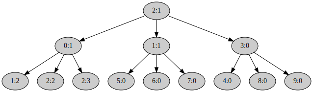
Ориентировочный объём работ этой части лабораторки
kernel/src/memory/mapping.rs | 16 ++++++++++++++--
kernel/src/process/syscall.rs | 39 +++++++++++++++++++++++++++++++++++----
user/eager_fork/src/main.rs | 54 ++++++++++++++++++++++++++++++++++++++++++++++++++----
user/lib/src/memory/mod.rs | 34 ++++++++++++++++++++++++++++------
4 files changed, 127 insertions(+), 16 deletions(-)
Обработка исключений в режиме пользователя
Пользовательская часть системного вызова set_trap_handler
Посмотрите на функцию
#![allow(unused)] fn main() { fn lib::syscall::set_trap_handler( dst_pid: Pid, trap_handler: fn(&TrapInfo), trap_stack: Block<Page>, ) -> Result<()> }
в файле
user/lib/src/syscall.rs.
Она делает не совсем то, чего можно было бы ожидать.
А именно, она не передаёт адрес функции trap_handler в системный вызов.
Вместо этого она устанавливает в качестве обработчика прерываний функцию
lib::syscall::trap_trampoline(),
а trap_handler просто сохраняет в статическую переменную
static TRAP_HANDLER: AtomicPtr<()>.
Это позволяет функции trap_handler не заниматься той технической машинерией
по сохранению и восстановлению контекста, которую мы сейчас реализуем в
lib::syscall::trap_trampoline().
Трамплин обработчика прерываний
Реализуйте функцию
#![allow(unused)] fn main() { extern "C" fn trap_trampoline() -> ! }
в файле
user/lib/src/syscall.rs.
Она будет получать управление, если в коде пользователя возникло прерывание, например Page Fault.
Прерывание может возникнуть в неожиданный момент, поэтому нужно сохранить содержимое всех регистров в стеке.
Стек, на котором эта функция будет запущена, — специальный.
Он может отличаться от стека в момент возникновения исключения.
Причём на момент вызова
lib::syscall::trap_trampoline()
в стеке лежит структура
ku::process::trap_info::TrapInfo
с информацией о возникшем прерывании.
Эту инофрмацию записывает в стек процесса ядро.
Это похоже на метод
Registers::switch_to()
который вы реализовали
в одной из прошлых лабораторок.
Важно также сохранить в стек текущее состояние регистра флагов RFLAGS.
После сохранения регистров нужно вызвать функцию
#![allow(unused)] fn main() { extern "C" fn lib::syscall::trap_handler_invoker( info: &mut TrapInfo, // rdi ) }
Передав ей в регистре RDI адрес
ku::process::trap_info::TrapInfo,
на который указывал регистр RSP в момент вызова
lib::syscall::trap_trampoline().
Мы только что положили в стек регистры, и RSP сдвинулся.
Поэтому для получения адреса
ku::process::trap_info::TrapInfo,
нужно прибавить к RSP объём сохранённых регистров.
После вызова
lib::syscall::trap_handler_invoker()
нужно восстановить регистры из стека.
Далее нужно переключить стек — RSP — на состояние, в котором он был в момент возникновения прерывания.
И вернуть RIP в точку, в которой прерывание возникло.
Посмотрите, что делает
lib::syscall::trap_handler_invoker():
- Вызывает функцию, сохранённую в переменной
static TRAP_HANDLER: AtomicPtr<()>. - Выполняет
TrapInfo::prepare_for_ret().
А
TrapInfo::prepare_for_ret()
кладёт в стек времени возникновения прерывания регистр RIP — адрес кода, который исполнялся в этот момент.
Значит, если мы установим RSP на место в памяти, где сохранён RIP и сделаем ret, то инструкция ret одновременно
- Вернёт управление в то место, которое исполнялось в момент прерывания.
- Вернёт стек — регистр
RSP— в состояние на момент возникновения прерывания.
Что нам и нужно. Таким образом,
lib::syscall::trap_trampoline()
должна переключить RSP на этот адрес и выполнить инструкцию
ret.
Лежит нужный нам RSP в поле
TrapInfo::context(../../doc/ku/process/trap_info/struct.TrapInfo.html#structfield.context)
структуры
#![allow(unused)] fn main() { #[derive(Clone, Copy, Debug)] #[repr(C)] pub struct TrapInfo { number: usize, info: Info, context: MiniContext, /// `TrapInfo` can be pushed onto the same stack the `context` is pointing to. /// Eg. if the trap is recursive - the trap has happened inside a trap handler. /// In this case [`lib::syscall::trap_trampoline`] and [`lib::syscall::trap_handler_invoker`] /// will push a return address onto the `context` stack. /// That will effectively overwrite the `TrapInfo`. /// This field exists only to protect meaningfull fields of the `TrapInfo` from beeing overwritten. return_address_placeholder: [u8; Self::PLACEHOLDER_SIZE], } }
И к нему можно обратиться по смещению
#![allow(unused)] fn main() { pub const RSP_OFFSET_IN_TRAP_INFO: usize = offset_of!(TrapInfo, context) + RSP_OFFSET_IN_MINI_CONTEXT; }
от начала структуры
ku::process::trap_info::TrapInfo,
которое сейчас находится в RSP.
Ядерная часть системного вызова set_trap_handler
Реализуйте системный вызов
#![allow(unused)] fn main() { fn kernel::process::syscall::set_trap_handler( process: MutexGuard<Process>, dst_pid: usize, rip: usize, stack_address: usize, stack_size: usize, ) -> Result<SyscallResult> }
в файле
kernel/src/process/syscall.rs.
Он устанавливает для целевого процесса, заданного идентификатором dst_pid,
пользовательский обработчик прерывания с виртуальным адресом rip.
И стеком, который задаётся блоком виртуальных адресов начиная с stack_address и размера stack_size.
Стек может быть не выровнен по границе страниц.
Проверять его на права доступа пока бессмысленно, так как пользовательский код может изменить доступы к этим адресам позже.
Проверять права доступа к памяти надо непосредственно перед доступом.
В случае обработчика прерываний доступ будет позднее, в методе
Process::trap(),
и проверку придётся отложить до соответствующего момента.
Вам пригодятся методы
Process::set_trap_context() и
TrapContext::new().
kernel::process::process::TrapContext —
это просто пара из контекста пользовательского обработчика
TrapContext::mini_context
и его стека
TrapContext::stack,
который нужен для определения рекурсивности прерывания в функции
Process::trap():
#![allow(unused)] fn main() { #[derive(Clone, Copy, Debug, Default, Eq, PartialEq)] pub(crate) struct TrapContext { mini_context: MiniContext, stack: Block<Virt>, } }
Передача прерывания из режима ядра в режим пользователя
Реализуйте метод:
#![allow(unused)] fn main() { fn Process::trap( &mut self, context: &mut InterruptContext, number: usize, info: Info, ) -> bool }
в файле
kernel/src/process/process.rs.
Она вызывается из функции
kernel::interrupts::generic_trap() в файле
kernel/src/interrupts.rs,
если прерывание произошло в режиме пользователя.
Её задача — вернуть управление в код пользователя (запускается она в режиме ядра) в контекст
пользовательского обработчика прерывания
Process::trap_context.
Делает это она аналогично
реализованному вами ранее
методу
Process::preempt(),
подменяя контекст прерывания context из
обработчика которого вызывается.
Учтите, что возможна ситуация, когда пользовательский обработчик прерывания сам вызовет исключение.
Например, в
cow_fork
так и будет.
Обработчик Page Fault сам будет иногда вызывать Page Fault.
Который сам же и починит, будучи вызванным фактически рекурсивно.
Поэтому нельзя безусловно использовать значение регистра RSP из
Process::trap_context.
Так как тогда рекурсивный вызов обработчика прерывания перезапишет стек первоначального вызова.
Нужно проверить, что стек context указывает внутрь стека, который задаётся
Process::trap_context.
Если это так, это означает что пользовательский код как раз исполняет обработчик прерывания, так как использует его стек.
Тогда переключать стек не нужно, значение RSP должно остаться как было в context.
Если же пользовательский RSP указывает не в стек обработчика прерываний, то его нужно туда переключить.
Ведь, возможно, Page Fault был вызван попыткой обратиться в обычный стек и если запустить
пользовательский обработчик прерываний, не переключив стек, Page Fault повторится и программа зациклится в рекурсивных вызовах обработчика прерываний.
Соберите
ku::process::mini_context::MiniContext
из
Process::trap_context.
и context описанным образом.
С помощью метода
MiniContext::push()
выделите на стеке пользователя блок памяти под структуру
ku::process::trap_info::TrapInfo.
Помните, — доверять пользовательскому стеку нельзя!
Он может быт некорректным изначально или просто уже исчерпаться.
Поэтому обязательно проверьте, что выделенный блок памяти доступен пользователю для записи методом
AddressSpace::check_permission_mut<T>().
Только после этого в него можно записать структуру
ku::process::trap_info::TrapInfo
с описанием возникшего прерывания и его контекста из context.
Метод
AddressSpace::check_permission_mut<T>()
возвращает срез, а у нас на самом деле один элемент, — просто используйте [0].
Если пользовательский обработчик прерываний не установлен,
или же в процессе записи информации в его стек возникла какая-либо ошибка, верните false.
Иначе, подмените в context контекст, в котором возникло прерывание,
на контекст пользовательского обработчика, чтобы в итоге попасть в него.
И верните true в вызывающую функцию.
Проверьте себя
Теперь должен заработать тест trap_handler() в файле
kernel/tests/5-um-4-trap-handler.rs:
$ (cd kernel; cargo test --test 5-um-4-trap-handler)
...
5_um_4_trap_handler::trap_handler---------------------------
20:23:47 0 I page allocator init; free_page_count = 33822867456; block = [0v18000000000, 0v7F8000000000), size 126.000 TiB
20:23:47 0 I duplicate; address_space = "process" @ 0p7E0A000
20:23:47 0 I switch to; address_space = "process" @ 0p7E0A000
20:23:47 0 D extend mapping; block = [0v10000000, 0v10007AAC), size 30.668 KiB; page_block = [0v10000000, 0v10008000), size 32.000 KiB; flags = R; page_flags = PRESENT | WRITABLE | USER_ACCESSIBLE
20:23:47 0 D elf loadable program header; file_block = [0v201D83, 0v20982F), size 30.668 KiB; memory_block = [0v10000000, 0v10007AAC), size 30.668 KiB; flags = R
20:23:47 0 D extend mapping; block = [0v10008000, 0v1005A3BD), size 328.935 KiB; page_block = [0v10008000, 0v1005B000), size 332.000 KiB; flags = X R; page_flags = PRESENT | WRITABLE | USER_ACCESSIBLE
20:23:47 0 D elf loadable program header; file_block = [0v209833, 0v25C140), size 330.263 KiB; memory_block = [0v10007AB0, 0v1005A3BD), size 330.263 KiB; flags = X R
20:23:47 0 D elf loadable program header; file_block = [0v25C143, 0v25C253), size 272 B; memory_block = [0v1005A3C0, 0v1005A4D0), size 272 B; flags = WR
20:23:47 0 D extend mapping; block = [0v1005B000, 0v10060E10), size 23.516 KiB; page_block = [0v1005B000, 0v10061000), size 24.000 KiB; flags = WR; page_flags = PRESENT | WRITABLE | USER_ACCESSIBLE
20:23:47 0 D elf loadable program header; file_block = [0v25C253, 0v262B6B), size 26.273 KiB; memory_block = [0v1005A4D0, 0v10060E10), size 26.312 KiB; flags = WR
20:23:47 0 I switch to; address_space = "base" @ 0p1000
20:23:47 0 I loaded ELF file; context = { rip: 0v1000B250, rsp: 0v7F7FFFFFF000 }; file_size = 5.581 MiB; process = { pid: <current>, address_space: "process" @ 0p7E0A000, { rip: 0v1000B250, rsp: 0v7F7FFFFFF000 } }
20:23:47 0 I allocate; slot = Process { pid: 0:0, address_space: "0:0" @ 0p7E0A000, { rip: 0v1000B250, rsp: 0v7F7FFFFFF000 } }; process_count = 1
20:23:47 0 I user process page table entry; entry_point = 0v1000B250; frame = Frame(32233 @ 0p7DE9000); flags = PRESENT | WRITABLE | USER_ACCESSIBLE | ACCESSED | DIRTY
20:23:47 0 D process_frames = 155
20:23:47 0 I dequeue; pid = Some(0:0)
20:23:47 0 I switch to; address_space = "0:0" @ 0p7E0A000
20:23:47 0 D entering the user mode; pid = 0:0; registers = { rax: 0x0, rdi: 0x7F7FFFFDB000, rsi: 0x0, { mode: user, cs:rip: 0x0023:0v1000B250, ss:rsp: 0x001B:0v7F7FFFFFF000, rflags: IF } }
20:23:47 0 I trap_stack = [0v7F7FFFFD7000, 0v7F7FFFFDB000), size 16.000 KiB; pid = 0:0
20:23:47 0 I stored from main(); value = 333333333; pid = 0:0
20:23:47 0 D trap = "Page Fault"; context = { mode: user, cs:rip: 0x0023:0v10023BD6, ss:rsp: 0x001B:0v7F7FFFFFDBE8, rflags: IF AF PF }; info = { address: 0v7F7FFFFD6000, code: 0b100 = non-present page | read | user }
20:23:47 0 D leaving the user mode; pid = 0:0
20:23:47 0 I the process was preempted; pid = 0:0; user_context = { mode: user, cs:rip: 0x0023:0v1000D320, ss:rsp: 0x001B:0v7F7FFFFDAFC8, rflags: IF AF PF }
20:23:47 0 I returned
20:23:47 0 I dequeue; pid = Some(0:0)
20:23:47 0 I switch to; address_space = "0:0" @ 0p7E0A000
20:23:47 0 D entering the user mode; pid = 0:0; registers = { rax: 0x1005B8E8, rdi: 0x7F7FFFFD6000, rsi: 0x7F7FFFFFE7C8, { mode: user, cs:rip: 0x0023:0v1000D320, ss:rsp: 0x001B:0v7F7FFFFDAFC8, rflags: AF PF } }
20:23:47 0 I trap handler called for a page fault on an address; value = 140187732369408; hex_value = 0x7F7FFFFD6000; pid = 0:0
20:23:47 0 I stored from simple_trap_handler(); value = 777777777; pid = 0:0
20:23:47 0 I stored from main(); value = 555555555; pid = 0:0
20:23:47 0 D trap = "Page Fault"; context = { mode: user, cs:rip: 0x0023:0v10023BD6, ss:rsp: 0x001B:0v7F7FFFFFDBE8, rflags: IF AF PF }; info = { address: 0v7F7FFFFD6000, code: 0b100 = non-present page | read | user }
20:23:47 0 I recursive page fault at level; value = 0; hex_value = 0x0; pid = 0:0
20:23:47 0 D trap = "Page Fault"; context = { mode: user, cs:rip: 0x0023:0v1000A393, ss:rsp: 0x001B:0v7F7FFFFDAD88, rflags: IF }; info = { address: 0v7F7FFFFD6008, code: 0b100 = non-present page | read | user }
20:23:47 0 D leaving the user mode; pid = 0:0
20:23:47 0 I the process was preempted; pid = 0:0; user_context = { mode: user, cs:rip: 0x0023:0v1000D320, ss:rsp: 0x001B:0v7F7FFFFDAD50, rflags: IF }
20:23:47 0 I returned
20:23:47 0 I dequeue; pid = Some(0:0)
20:23:47 0 I switch to; address_space = "0:0" @ 0p7E0A000
20:23:47 0 D entering the user mode; pid = 0:0; registers = { rax: 0x7F7FFFFD6000, rdi: 0x7F7FFFFDAEB8, rsi: 0x1005C978, { mode: user, cs:rip: 0x0023:0v1000D320, ss:rsp: 0x001B:0v7F7FFFFDAD50, rflags: } }
20:23:48.001 0 I recursive page fault at level; value = 1; hex_value = 0x1; pid = 0:0
20:23:48.009 0 D trap = "Page Fault"; context = { mode: user, cs:rip: 0x0023:0v1000A393, ss:rsp: 0x001B:0v7F7FFFFDAB10, rflags: IF }; info = { address: 0v7F7FFFFD6010, code: 0b100 = non-present page | read | user }
20:23:48.025 0 I recursive page fault at level; value = 2; hex_value = 0x2; pid = 0:0
20:23:48.033 0 D trap = "Page Fault"; context = { mode: user, cs:rip: 0x0023:0v1000A393, ss:rsp: 0x001B:0v7F7FFFFDA898, rflags: IF }; info = { address: 0v7F7FFFFD6018, code: 0b100 = non-present page | read | user }
20:23:48.047 0 I recursive page fault at level; value = 3; hex_value = 0x3; pid = 0:0
20:23:48.055 0 D trap = "Page Fault"; context = { mode: user, cs:rip: 0x0023:0v1000A393, ss:rsp: 0x001B:0v7F7FFFFDA620, rflags: IF }; info = { address: 0v7F7FFFFD6020, code: 0b100 = non-present page | read | user }
20:23:48.069 0 I recursive page fault at level; value = 4; hex_value = 0x4; pid = 0:0
20:23:48.077 0 D trap = "Page Fault"; context = { mode: user, cs:rip: 0x0023:0v1000A393, ss:rsp: 0x001B:0v7F7FFFFDA3A8, rflags: IF }; info = { address: 0v7F7FFFFD6028, code: 0b100 = non-present page | read | user }
20:23:48.091 0 I recursive page fault at level; value = 5; hex_value = 0x5; pid = 0:0
20:23:48.099 0 D trap = "Page Fault"; context = { mode: user, cs:rip: 0x0023:0v1000A393, ss:rsp: 0x001B:0v7F7FFFFDA130, rflags: IF }; info = { address: 0v7F7FFFFD6030, code: 0b100 = non-present page | read | user }
20:23:48.113 0 I recursive page fault at level; value = 6; hex_value = 0x6; pid = 0:0
20:23:48.121 0 D trap = "Page Fault"; context = { mode: user, cs:rip: 0x0023:0v1000A393, ss:rsp: 0x001B:0v7F7FFFFD9EB8, rflags: IF }; info = { address: 0v7F7FFFFD6038, code: 0b100 = non-present page | read | user }
20:23:48.135 0 I recursive page fault at level; value = 7; hex_value = 0x7; pid = 0:0
20:23:48.143 0 D trap = "Page Fault"; context = { mode: user, cs:rip: 0x0023:0v1000A393, ss:rsp: 0x001B:0v7F7FFFFD9C40, rflags: IF }; info = { address: 0v7F7FFFFD6040, code: 0b100 = non-present page | read | user }
20:23:48.157 0 D leaving the user mode; pid = 0:0
20:23:48.161 0 I the process was preempted; pid = 0:0; user_context = { mode: user, cs:rip: 0x0023:0v1000D320, ss:rsp: 0x001B:0v7F7FFFFD9C08, rflags: IF }
20:23:48.171 0 I returned
20:23:48.175 0 I dequeue; pid = Some(0:0)
20:23:48.179 0 I switch to; address_space = "0:0" @ 0p7E0A000
20:23:48.183 0 D entering the user mode; pid = 0:0; registers = { rax: 0x7F7FFFFD6038, rdi: 0x7F7FFFFD9D70, rsi: 0x1005C978, { mode: user, cs:rip: 0x0023:0v1000D320, ss:rsp: 0x001B:0v7F7FFFFD9C08, rflags: } }
20:23:48.197 0 I recursive page fault at level; value = 8; hex_value = 0x8; pid = 0:0
20:23:48.205 0 I setting the simple trap handler from the recursive trap handler, new trap_stack rsp; value = 140187732369408; hex_value = 0x7F7FFFFD6000; pid = 0:0
20:23:48.217 0 D trap = "Page Fault"; context = { mode: user, cs:rip: 0x0023:0v1000A393, ss:rsp: 0x001B:0v7F7FFFFD9C40, rflags: IF }; info = { address: 0v7F7FFFFD6040, code: 0b100 = non-present page | read | user }
20:23:48.231 0 I trap handler called for a page fault on an address; value = 140187732369472; hex_value = 0x7F7FFFFD6040; pid = 0:0
20:23:47.925 0 I stored from recursive_trap_handler(); value = 777777785; pid = 0:0
20:23:48.251 0 I free; slot = Process { pid: 0:0, address_space: "0:0" @ 0p7E0A000, { rip: 0v1000D320, rsp: 0v7F7FFFFD9C08 } }; process_count = 0
20:23:48.259 0 I switch to; address_space = "base" @ 0p1000
20:23:48.265 0 I drop the current address space; address_space = "0:0" @ 0p7E0A000; switch_to = "base" @ 0p1000
20:23:48.323 0 I syscall = "exit"; pid = 0:0; code = 0; reason = Some(OK)
20:23:48.327 0 D leaving the user mode; pid = 0:0
20:23:48.333 0 I dequeue; pid = None
5_um_4_trap_handler::trap_handler------------------ [passed]
20:23:48.341 0 I exit qemu; exit_code = SUCCESS
Ориентировочный объём работ этой части лабораторки
kernel/src/process/process.rs | 50 ++++++++++++++++++++++++++++++++++++++++++++++++--
kernel/src/process/syscall.rs | 12 ++++++++++--
user/lib/src/syscall.rs | 48 ++++++++++++++++++++++++++++++++++++++++++++++--
3 files changed, 104 insertions(+), 6 deletions(-)
Copy-on-write fork
Теперь у нас есть всё необходимое для реализации copy-on-write fork() в пространстве пользователя.
Программа user/cow_fork/src/main.rs структурно похожа на user/eager_fork/src/main.rs
и на eager_fork можно ориентироваться при реализации.
Ленивое копирование адресного пространства
#![allow(unused)] fn main() { fn copy_page_table( child: Pid, level: u32, trap_stack: Block<Page>, virt_addr: Virt, ) -> Result<()> }
Выполняется аналогично соответствующей процедуре eager_fork.
Отличается от которой в паре моментов:
- К игнорируемым страницам добавляется
trap_stack, его копировать не нужно. У потомка изначально будет полностью отдельный стек для обработки исключений. - Вместо копирования страниц функцией
lib::memory::copy_page()создаёт в потомке отображение. Оно ссылается на тот же физический фрейм, на который ссылается соответствующая виртуальная страница в родителе. При этом для страниц, которые отображены с одним из флаговPageTableFlags::WRITABLEилиPageTableFlags::COPY_ON_WRITE, в обоих адресных пространствах меняет флаги отображения страницы так, чтобыPageTableFlags::COPY_ON_WRITEбыл включён, аPageTableFlags::WRITABLE— выключен. Копирование содержимого страницы функциейlib::memory::copy_page()таким образом лениво откладывается до возникновения Page Fault.
Пользовательский обработчик исключений Page Fault
Когда программа попытается записать в страницу, помеченную в copy_page_table() как
PageTableFlags::COPY_ON_WRITE
и только на чтение,
возникнет Page Fault и ядро передаст управление в
реализованный вами ранее
trap_trampoline(), который в свою очередь запустит
#![allow(unused)] fn main() { fn trap_handler(info: &TrapInfo) }
Эта функция работает в очень стеснённых условиях.
Возможно, вся память программы, кроме стека trap_stack, на котором сейчас работает эта функция, доступна только на чтение.
В том числе RingBuffer, который используется для логирования в пространстве пользователя макросами библиотеки tracing — info!(), debug!() и т.д.
Так как при этом нужно писать, то такое логирование в trap_handler() не доступно.
panic!() тоже не доступен, так как он использует логирование.
В других частях cow_fork логированием можно пользоваться, потому что trap_handler() починит возникающие при этом Page Fault.
Для логирования в trap_handler() можно воспользоваться
одним из первых реализованных системных вызовов —
syscall::log_value().
Вторая неприятность заключается в том, что в процессе–потомке в trap_handler() не доступны
ku::ProcessInfo и ku::SystemInfo даже на чтение.
Поэтому потомок не может узнать свой идентификатор Pid.
Так как не работает, в том числе функция ku::process::pid().
Поэтому в trap_handler() идентифицировать процесс для выполняемых системных вызовов нужно как Pid::Current.
Также учтите, что эти ограничения распространяются на вспомогательные функции, которые trap_handler() использует.
Впрочем, оба эти ограничения — во многом следствие нашей реализации cow_fork,
а не характерная особенность обработки прерываний в пространстве пользователя.
При получении управления, trap_handler():
- Проверяет, что прерывание — это действительно
PageFaultи он вызван записью. Иначе обработчик прекращает исполнение программы, вызвавsyscall::exit()с кодом ошибки. - С помощью реализованной ранее функции
lib::memory::temp_page()находит временную страницу. - Копирует содержимое страницы, обращение к которой привело к Page Fault, во временную, с помощью реализованной вами ранее функции
lib::memory::copy_page(). - С помощью системного вызова
syscall::copy_mapping()заменяет физический фрейм под скопированной страницей на фрейм временной страницы, одновременно меняя флагPageTableFlags::COPY_ON_WRITEнаPageTableFlags::WRITABLEв её отображении. - С помощью системного вызова
syscall::unmap()удаляет из адресного пространства не нужную более временную страницу.
cow_fork()
#![allow(unused)] fn main() { fn cow_fork() -> Result<bool> }
Эта функции похожа на соответствующую функцию eager_fork(), но в ней добавляется работа по инициализации обработчика прерываний.
Функция cow_fork():
- Выделяет себе — родительскому процессу — стек для обработки исключений с помощью
syscall::map()и устанавливает себе функциейsyscall::set_trap_handler()обработчик исключенийtrap_handler(). - Создаёт процесс потомка с помощью реализованного вами ранее системного вызова
syscall::exofork(). - Далее лениво копирует своё адресное пространство в пространство потомка с помощью функции
fn copy_address_space(). - Выделяет потомку отдельный стек для обработки исключений с помощью
syscall::map()и устанавливает уже ему обработчик исключенийtrap_handler()функциейsyscall::set_trap_handler(). - Запускает потомка системным вызовом
syscall::set_state(), устанавливая его состояние вState::Runnable.
В потомке cow_fork() ничего не делает.
Возвращает она true в процессе потомка и false в процессе родителя.
Проверьте себя
Теперь должны заработать тест cow_fork() в файле
kernel/tests/5-um-5-cow-fork.rs:
$ (cd kernel; cargo test --test 5-um-5-cow-fork)
...
5_um_5_cow_fork::cow_fork-----------------------------------
16:28:55 0 I page allocator init; free_page_count = 33822867456; block = [0v18000000000, 0v7F8000000000), size 126.000 TiB
16:28:55 0 I duplicate; address_space = "process" @ 0p7E09000
16:28:55 0 I switch to; address_space = "process" @ 0p7E09000
16:28:55 0 D extend mapping; block = [0v10000000, 0v1000817C), size 32.371 KiB; page_block = [0v10000000, 0v10009000), size 36.000 KiB; flags = R; page_flags = PRESENT | WRITABLE | USER_ACCESSIBLE
16:28:55 0 D elf loadable program header; file_block = [0v202177, 0v20A2F3), size 32.371 KiB; memory_block = [0v10000000, 0v1000817C), size 32.371 KiB; flags = R
16:28:55 0 D extend mapping; block = [0v10009000, 0v1006286D), size 358.106 KiB; page_block = [0v10009000, 0v10063000), size 360.000 KiB; flags = X R; page_flags = PRESENT | WRITABLE | USER_ACCESSIBLE
16:28:55 0 D elf loadable program header; file_block = [0v20A2F7, 0v2649E4), size 361.731 KiB; memory_block = [0v10008180, 0v1006286D), size 361.731 KiB; flags = X R
16:28:55 0 D elf loadable program header; file_block = [0v2649E7, 0v264B07), size 288 B; memory_block = [0v10062870, 0v10062990), size 288 B; flags = WR
16:28:55 0 D extend mapping; block = [0v10063000, 0v10069BE8), size 26.977 KiB; page_block = [0v10063000, 0v1006A000), size 28.000 KiB; flags = WR; page_flags = PRESENT | WRITABLE | USER_ACCESSIBLE
16:28:55 0 D elf loadable program header; file_block = [0v264B07, 0v26BD2F), size 28.539 KiB; memory_block = [0v10062990, 0v10069BE8), size 28.586 KiB; flags = WR
16:28:55 0 I switch to; address_space = "base" @ 0p1000
16:28:55 0 I loaded ELF file; context = { rip: 0v10011650, rsp: 0v7F7FFFFFF000 }; file_size = 5.832 MiB; process = { pid: <current>, address_space: "process" @ 0p7E09000, { rip: 0v10011650, rsp: 0v7F7FFFFFF000 } }
16:28:55 0 I allocate; slot = Process { pid: 0:0, address_space: "0:0" @ 0p7E09000, { rip: 0v10011650, rsp: 0v7F7FFFFFF000 } }; process_count = 1
16:28:55 0 I user process page table entry; entry_point = 0v10011650; frame = Frame(32226 @ 0p7DE2000); flags = PRESENT | WRITABLE | USER_ACCESSIBLE | ACCESSED | DIRTY
16:28:55 0 D process_frames = 164
16:28:57 0 I dequeue; pid = Some(0:0)
16:28:57 0 I switch to; address_space = "0:0" @ 0p7E09000
16:28:57 0 D entering the user mode; pid = 0:0; registers = { rax: 0x0, rdi: 0x7F7FFFFDB000, rsi: 0x0, { mode: user, cs:rip: 0x0023:0v10011650, ss:rsp: 0x001B:0v7F7FFFFFF000, rflags: IF } }
16:28:57 0 I name = "cow_fork *"; pedigree = [0:0]; len = 1; capacity = 3; pid = 0:0
16:28:57 0 I page allocator init; free_page_count = 33688649728; block = [0v18000000000, 0v7F0000000000), size 125.500 TiB
16:28:57 0 I duplicate; address_space = "process" @ 0p7D61000
16:28:57 0 I switch to; address_space = "process" @ 0p7D61000
16:28:57 0 I switch to; address_space = "0:0" @ 0p7E09000
16:28:57 0 I allocate; slot = Process { pid: 1:0, address_space: "1:0" @ 0p7D61000, { rip: 0v1000AAE7, rsp: 0v7F7FFFFFD588 } }; process_count = 2
16:28:57 0 I syscall = "exofork"; process = 0:0; child = 1:0
16:28:57 0 I syscall::exofork() done; child = Ok(1:0); pid = 0:0
16:28:57 0 D trap = "Page Fault"; context = { mode: user, cs:rip: 0x0023:0v1001318E, ss:rsp: 0x001B:0v7F7FFFFFBA78, rflags: IF }; info = { address: 0v7F7FFFFFBB60, code: 0b111 = protection violation | write | user }
16:28:57 0 D trap = "Page Fault"; context = { mode: user, cs:rip: 0x0023:0v10010C2F, ss:rsp: 0x001B:0v7F7FFFFFB9E8, rflags: IF AF }; info = { address: 0v7F7FFFFFC0B8, code: 0b111 = protection violation | write | user }
16:28:57 0 D leaving the user mode; pid = 0:0
16:28:57 0 I the process was preempted; pid = 0:0; user_context = { mode: user, cs:rip: 0x0023:0v10013820, ss:rsp: 0x001B:0v7F7FFFFDAFC8, rflags: IF AF }
16:28:57 0 I returned
16:28:57 0 I dequeue; pid = Some(0:0)
16:28:57 0 I switch to; address_space = "0:0" @ 0p7E09000
16:28:57 0 D entering the user mode; pid = 0:0; registers = { rax: 0x7F7FFFFFC0B8, rdi: 0x0, rsi: 0x0, { mode: user, cs:rip: 0x0023:0v10013820, ss:rsp: 0x001B:0v7F7FFFFDAFC8, rflags: IF AF } }
16:28:57 0 D trap = "Page Fault"; context = { mode: user, cs:rip: 0x0023:0v1000D013, ss:rsp: 0x001B:0v7F7FFFFFC8F8, rflags: IF ZF PF }; info = { address: 0v7F7FFFFFD438, code: 0b111 = protection violation | write | user }
16:28:57 0 D trap = "Page Fault"; context = { mode: user, cs:rip: 0x0023:0v1000B851, ss:rsp: 0x001B:0v7F7FFFFFD598, rflags: IF ZF AF PF CF }; info = { address: 0v7F7FFFFFE348, code: 0b111 = protection violation | write | user }
16:28:57 0 D trap = "Page Fault"; context = { mode: user, cs:rip: 0x0023:0v1002DF08, ss:rsp: 0x001B:0v7F7FFFFFD278, rflags: IF ZF PF }; info = { address: 0v10066ED8, code: 0b111 = protection violation | write | user }
16:28:57 0 D leaving the user mode; pid = 0:0
16:28:57 0 I the process was preempted; pid = 0:0; user_context = { mode: user, cs:rip: 0x0023:0v10013820, ss:rsp: 0x001B:0v7F7FFFFDAFC8, rflags: IF ZF PF }
16:28:57 0 I returned
16:28:57 0 I dequeue; pid = Some(0:0)
16:28:57 0 I switch to; address_space = "0:0" @ 0p7E09000
16:28:57 0 D entering the user mode; pid = 0:0; registers = { rax: 0x0, rdi: 0x10066ED8, rsi: 0x0, { mode: user, cs:rip: 0x0023:0v10013820, ss:rsp: 0x001B:0v7F7FFFFDAFC8, rflags: IF ZF PF } }
16:28:57 0 D trap = "Page Fault"; context = { mode: user, cs:rip: 0x0023:0v1002D9B1, ss:rsp: 0x001B:0v7F7FFFFFD1C8, rflags: IF }; info = { address: 0v10067020, code: 0b111 = protection violation | write | user }
16:28:57 0 D trap = "Page Fault"; context = { mode: user, cs:rip: 0x0023:0v1002E452, ss:rsp: 0x001B:0v7F7FFFFFD138, rflags: IF ZF PF }; info = { address: 0v10069BE0, code: 0b111 = protection violation | write | user }
16:28:57 0 D trap = "Page Fault"; context = { mode: user, cs:rip: 0x0023:0v1002FC77, ss:rsp: 0x001B:0v7F7FFFFFAF78, rflags: IF AF PF }; info = { address: 0v7F7FFFFFAF98, code: 0b111 = protection violation | write | user }
16:28:57 0 D leaving the user mode; pid = 0:0
16:28:57 0 I the process was preempted; pid = 0:0; user_context = { mode: user, cs:rip: 0x0023:0v10013820, ss:rsp: 0x001B:0v7F7FFFFDAFC8, rflags: IF AF PF }
16:28:57 0 I returned
16:28:57 0 I dequeue; pid = Some(0:0)
16:28:57 0 I switch to; address_space = "0:0" @ 0p7E09000
16:28:57 0 D entering the user mode; pid = 0:0; registers = { rax: 0x7F7FFFFFBF00, rdi: 0x7F7FFFFFB940, rsi: 0x7F7FFFFFB540, { mode: user, cs:rip: 0x0023:0v10013820, ss:rsp: 0x001B:0v7F7FFFFDAFC8, rflags: IF AF PF } }
16:28:57 0 D trap = "Page Fault"; context = { mode: user, cs:rip: 0x0023:0v10052E60, ss:rsp: 0x001B:0v7F7FFFFF9FE8, rflags: IF AF }; info = { address: 0v7F7FFFFF9FE0, code: 0b111 = protection violation | write | user }
16:28:57 0 I copy_address_space done; child = 1:0; trap_stack = [0v7F7FFFFD7000, 0v7F7FFFFDB000), size 16.000 KiB, Page[~127.500 TiB, ~127.500 TiB); pid = 0:0
16:28:57 0 I syscall::set_state(); child = 1:0; result = Ok(()); pid = 0:0
16:28:57 0 I page allocator init; free_page_count = 33688649728; block = [0v18000000000, 0v7F0000000000), size 125.500 TiB
16:28:57 0 I duplicate; address_space = "process" @ 0p7D36000
16:28:57 0 I switch to; address_space = "process" @ 0p7D36000
16:28:57 0 I switch to; address_space = "0:0" @ 0p7E09000
16:28:57 0 I allocate; slot = Process { pid: 2:0, address_space: "2:0" @ 0p7D36000, { rip: 0v1000AAE7, rsp: 0v7F7FFFFFD588 } }; process_count = 3
16:28:57 0 I syscall = "exofork"; process = 0:0; child = 2:0
16:28:57 0 I syscall::exofork() done; child = Ok(2:0); pid = 0:0
16:28:57 0 D leaving the user mode; pid = 0:0
16:28:57 0 I the process was preempted; pid = 0:0; user_context = { mode: user, cs:rip: 0x0023:0v1001318C, ss:rsp: 0x001B:0v7F7FFFFFBA68, rflags: IF }
16:28:57 0 I returned
16:28:57 0 I dequeue; pid = Some(1:0)
16:28:57 0 I switch to; address_space = "1:0" @ 0p7D61000
16:28:57 0 D entering the user mode; pid = 1:0; registers = { rax: 0x0, rdi: 0xFFFFFFFFFFFFFFFE, rsi: 0x7EFFFFFFB000, { mode: user, cs:rip: 0x0023:0v1000AAE7, ss:rsp: 0x001B:0v7F7FFFFFD588, rflags: IF } }
16:28:57 0 D trap = "Page Fault"; context = { mode: user, cs:rip: 0x0023:0v1000AAE9, ss:rsp: 0x001B:0v7F7FFFFFD598, rflags: IF }; info = { address: 0v7F7FFFFFE820, code: 0b111 = protection violation | write | user }
16:28:57 0 D trap = "Page Fault"; context = { mode: user, cs:rip: 0x0023:0v10018677, ss:rsp: 0x001B:0v7F7FFFFDAD68, rflags: IF ZF PF }; info = { address: 0v7F7FFFFFD590, code: 0b111 = protection violation | write | user }
16:28:57 0 D trap = "Page Fault"; context = { mode: user, cs:rip: 0x0023:0v10015BD2, ss:rsp: 0x001B:0v7F7FFFFFD478, rflags: IF }; info = { address: 0v10069BC0, code: 0b111 = protection violation | write | user }
16:28:57 0 D trap = "Page Fault"; context = { mode: user, cs:rip: 0x0023:0v10046BD1, ss:rsp: 0x001B:0v7F7FFFFFD290, rflags: IF PF }; info = { address: 0v10067DB8, code: 0b111 = protection violation | write | user }
16:28:57 0 D leaving the user mode; pid = 1:0
16:28:57 0 I the process was preempted; pid = 1:0; user_context = { mode: user, cs:rip: 0x0023:0v10013820, ss:rsp: 0x001B:0v7F7FFFFDAFC8, rflags: IF PF }
16:28:57 0 I returned
16:28:58.005 0 I dequeue; pid = Some(0:0)
16:28:58.009 0 I switch to; address_space = "0:0" @ 0p7E09000
16:28:58.015 0 D entering the user mode; pid = 0:0; registers = { rax: 0x0, rdi: 0x0, rsi: 0x0, { mode: user, cs:rip: 0x0023:0v1001318C, ss:rsp: 0x001B:0v7F7FFFFFBA68, rflags: IF } }
16:28:58.081 0 D trap = "Page Fault"; context = { mode: user, cs:rip: 0x0023:0v1001318E, ss:rsp: 0x001B:0v7F7FFFFFBA78, rflags: IF }; info = { address: 0v7F7FFFFFBB60, code: 0b111 = protection violation | write | user }
16:28:58.099 0 D trap = "Page Fault"; context = { mode: user, cs:rip: 0x0023:0v10010C2F, ss:rsp: 0x001B:0v7F7FFFFFB9E8, rflags: IF AF }; info = { address: 0v7F7FFFFFC0B8, code: 0b111 = protection violation | write | user }
16:28:58.117 0 D trap = "Page Fault"; context = { mode: user, cs:rip: 0x0023:0v1000D013, ss:rsp: 0x001B:0v7F7FFFFFC8F8, rflags: IF ZF PF }; info = { address: 0v7F7FFFFFD438, code: 0b111 = protection violation | write | user }
16:28:58.133 0 D trap = "Page Fault"; context = { mode: user, cs:rip: 0x0023:0v1000B851, ss:rsp: 0x001B:0v7F7FFFFFD598, rflags: IF ZF AF PF CF }; info = { address: 0v7F7FFFFFE348, code: 0b111 = protection violation | write | user }
16:28:58.149 0 D trap = "Page Fault"; context = { mode: user, cs:rip: 0x0023:0v10046BD1, ss:rsp: 0x001B:0v7F7FFFFFD290, rflags: IF PF }; info = { address: 0v10067DB8, code: 0b111 = protection violation | write | user }
16:28:58.165 0 D trap = "Page Fault"; context = { mode: user, cs:rip: 0x0023:0v1002FC77, ss:rsp: 0x001B:0v7F7FFFFFAF78, rflags: IF AF PF }; info = { address: 0v7F7FFFFFAF98, code: 0b111 = protection violation | write | user }
16:28:58.179 0 D leaving the user mode; pid = 0:0
16:28:58.185 0 I the process was preempted; pid = 0:0; user_context = { mode: user, cs:rip: 0x0023:0v10013820, ss:rsp: 0x001B:0v7F7FFFFDAFC8, rflags: IF AF PF }
16:28:58.195 0 I returned
16:28:58.199 0 I dequeue; pid = Some(1:0)
16:28:58.203 0 I switch to; address_space = "1:0" @ 0p7D61000
16:28:58.209 0 D entering the user mode; pid = 1:0; registers = { rax: 0x1, rdi: 0x10067DB8, rsi: 0x1, { mode: user, cs:rip: 0x0023:0v10013820, ss:rsp: 0x001B:0v7F7FFFFDAFC8, rflags: IF PF } }
16:28:58.225 0 D trap = "Page Fault"; context = { mode: user, cs:rip: 0x0023:0v10015AA7, ss:rsp: 0x001B:0v7F7FFFFFCFC8, rflags: IF AF }; info = { address: 0v7F7FFFFFCFC8, code: 0b111 = protection violation | write | user }
16:28:58.241 0 D trap = "Page Fault"; context = { mode: user, cs:rip: 0x0023:0v10025184, ss:rsp: 0x001B:0v7F7FFFFFBFD8, rflags: IF AF PF }; info = { address: 0v7F7FFFFFBFE0, code: 0b111 = protection violation | write | user }
16:28:57.971 0 I syscall::exofork() done; child = Ok(<current>); pid = 1:0
16:28:58.261 0 I just created; child = <current>; pid = 1:0; pid = 1:0
16:28:58.261 0 I name = "cow_fork *0"; pedigree = [0:0, 1:0]; len = 2; capacity = 3; pid = 1:0
16:28:58.363 0 I page allocator init; free_page_count = 33554432000; block = [0v18000000000, 0v7E8000000000), size 125.000 TiB
16:28:58.373 0 I duplicate; address_space = "process" @ 0p7D69000
16:28:58.379 0 I switch to; address_space = "process" @ 0p7D69000
16:28:58.385 0 I switch to; address_space = "1:0" @ 0p7D61000
16:28:58.391 0 I allocate; slot = Process { pid: 3:0, address_space: "3:0" @ 0p7D69000, { rip: 0v1000AAE7, rsp: 0v7F7FFFFFD0A8 } }; process_count = 4
16:28:58.401 0 I syscall = "exofork"; process = 1:0; child = 3:0
16:28:58.405 0 I syscall::exofork() done; child = Ok(3:0); pid = 1:0
16:28:58.545 0 D trap = "Page Fault"; context = { mode: user, cs:rip: 0x0023:0v1001318E, ss:rsp: 0x001B:0v7F7FFFFFB598, rflags: IF }; info = { address: 0v7F7FFFFFB680, code: 0b111 = protection violation | write | user }
16:28:58.563 0 D trap = "Page Fault"; context = { mode: user, cs:rip: 0x0023:0v1000D013, ss:rsp: 0x001B:0v7F7FFFFFB7D8, rflags: IF ZF PF }; info = { address: 0v7F7FFFFFC318, code: 0b111 = protection violation | write | user }
16:28:58.579 0 D leaving the user mode; pid = 1:0
16:28:58.583 0 I the process was preempted; pid = 1:0; user_context = { mode: user, cs:rip: 0x0023:0v10013820, ss:rsp: 0x001B:0v7F7FFFFDAFC8, rflags: IF ZF PF }
16:28:58.593 0 I returned
16:28:58.597 0 I dequeue; pid = Some(0:0)
16:28:58.601 0 I switch to; address_space = "0:0" @ 0p7E09000
16:28:58.607 0 D entering the user mode; pid = 0:0; registers = { rax: 0x7F7FFFFFBF00, rdi: 0x7F7FFFFFB940, rsi: 0x7F7FFFFFB540, { mode: user, cs:rip: 0x0023:0v10013820, ss:rsp: 0x001B:0v7F7FFFFDAFC8, rflags: IF AF PF } }
16:28:58.623 0 D trap = "Page Fault"; context = { mode: user, cs:rip: 0x0023:0v10052E60, ss:rsp: 0x001B:0v7F7FFFFF9FE8, rflags: IF AF }; info = { address: 0v7F7FFFFF9FE0, code: 0b111 = protection violation | write | user }
16:28:58.149 0 I copy_address_space done; child = 2:0; trap_stack = [0v7F7FFFFD7000, 0v7F7FFFFDB000), size 16.000 KiB, Page[~127.500 TiB, ~127.500 TiB); pid = 0:0
16:28:58.655 0 D trap = "Page Fault"; context = { mode: user, cs:rip: 0x0023:0v10013B12, ss:rsp: 0x001B:0v7F7FFFFFD2B8, rflags: IF }; info = { address: 0v10069BB8, code: 0b111 = protection violation | write | user }
16:28:58.673 0 I syscall::set_state(); child = 2:0; result = Ok(()); pid = 0:0
16:28:58.757 0 I page allocator init; free_page_count = 33688649728; block = [0v18000000000, 0v7F0000000000), size 125.500 TiB
16:28:58.767 0 I duplicate; address_space = "process" @ 0p7CE9000
16:28:58.773 0 I switch to; address_space = "process" @ 0p7CE9000
16:28:58.779 0 I switch to; address_space = "0:0" @ 0p7E09000
16:28:58.785 0 I allocate; slot = Process { pid: 4:0, address_space: "4:0" @ 0p7CE9000, { rip: 0v1000AAE7, rsp: 0v7F7FFFFFD588 } }; process_count = 5
16:28:58.795 0 I syscall = "exofork"; process = 0:0; child = 4:0
16:28:58.799 0 I syscall::exofork() done; child = Ok(4:0); pid = 0:0
16:28:58.939 0 D trap = "Page Fault"; context = { mode: user, cs:rip: 0x0023:0v1001318E, ss:rsp: 0x001B:0v7F7FFFFFBA78, rflags: IF }; info = { address: 0v7F7FFFFFBB60, code: 0b111 = protection violation | write | user }
16:28:58.957 0 D trap = "Page Fault"; context = { mode: user, cs:rip: 0x0023:0v10010C2F, ss:rsp: 0x001B:0v7F7FFFFFB9E8, rflags: IF AF }; info = { address: 0v7F7FFFFFC0B8, code: 0b111 = protection violation | write | user }
16:28:58.975 0 D trap = "Page Fault"; context = { mode: user, cs:rip: 0x0023:0v1000D013, ss:rsp: 0x001B:0v7F7FFFFFC8F8, rflags: IF ZF PF }; info = { address: 0v7F7FFFFFD438, code: 0b111 = protection violation | write | user }
16:28:59.001 0 D leaving the user mode; pid = 0:0
16:28:59.005 0 I the process was preempted; pid = 0:0; user_context = { mode: user, cs:rip: 0x0023:0v10013820, ss:rsp: 0x001B:0v7F7FFFFDAFC8, rflags: IF ZF PF }
16:28:59.015 0 I returned
16:28:59.019 0 I dequeue; pid = Some(1:0)
16:28:59.023 0 I switch to; address_space = "1:0" @ 0p7D61000
16:28:59.029 0 D entering the user mode; pid = 1:0; registers = { rax: 0x7F7FFFFFC318, rdi: 0x0, rsi: 0x0, { mode: user, cs:rip: 0x0023:0v10013820, ss:rsp: 0x001B:0v7F7FFFFDAFC8, rflags: IF ZF PF } }
16:28:59.045 0 D trap = "Page Fault"; context = { mode: user, cs:rip: 0x0023:0v1000D043, ss:rsp: 0x001B:0v7F7FFFFFCA38, rflags: IF SF }; info = { address: 0v7F7FFFFFD000, code: 0b111 = protection violation | write | user }
16:28:59.061 0 D trap = "Page Fault"; context = { mode: user, cs:rip: 0x0023:0v1000B86F, ss:rsp: 0x001B:0v7F7FFFFFD0B8, rflags: IF ZF AF PF CF }; info = { address: 0v7F7FFFFFE030, code: 0b111 = protection violation | write | user }
16:28:59.079 0 D trap = "Page Fault"; context = { mode: user, cs:rip: 0x0023:0v1002DF08, ss:rsp: 0x001B:0v7F7FFFFFCD98, rflags: IF ZF PF }; info = { address: 0v10066ED8, code: 0b111 = protection violation | write | user }
16:28:59.093 0 D leaving the user mode; pid = 1:0
16:28:59.099 0 I the process was preempted; pid = 1:0; user_context = { mode: user, cs:rip: 0x0023:0v10013820, ss:rsp: 0x001B:0v7F7FFFFDAFC8, rflags: IF ZF PF }
16:28:59.107 0 I returned
16:28:59.113 0 I dequeue; pid = Some(2:0)
16:28:59.117 0 I switch to; address_space = "2:0" @ 0p7D36000
16:28:59.121 0 D entering the user mode; pid = 2:0; registers = { rax: 0x0, rdi: 0xFFFFFFFFFFFFFFFE, rsi: 0x7EFFFFFFB000, { mode: user, cs:rip: 0x0023:0v1000AAE7, ss:rsp: 0x001B:0v7F7FFFFFD588, rflags: IF AF PF } }
16:28:59.135 0 D trap = "Page Fault"; context = { mode: user, cs:rip: 0x0023:0v1000AAE9, ss:rsp: 0x001B:0v7F7FFFFFD598, rflags: IF AF PF }; info = { address: 0v7F7FFFFFE820, code: 0b111 = protection violation | write | user }
16:28:59.153 0 D trap = "Page Fault"; context = { mode: user, cs:rip: 0x0023:0v10018677, ss:rsp: 0x001B:0v7F7FFFFDAD68, rflags: IF ZF PF }; info = { address: 0v7F7FFFFFD590, code: 0b111 = protection violation | write | user }
16:28:59.169 0 D trap = "Page Fault"; context = { mode: user, cs:rip: 0x0023:0v10015BD2, ss:rsp: 0x001B:0v7F7FFFFFD478, rflags: IF }; info = { address: 0v10069BC0, code: 0b111 = protection violation | write | user }
16:28:59.185 0 D trap = "Page Fault"; context = { mode: user, cs:rip: 0x0023:0v10046BD1, ss:rsp: 0x001B:0v7F7FFFFFD290, rflags: IF PF }; info = { address: 0v10067DB8, code: 0b111 = protection violation | write | user }
16:28:59.199 0 D leaving the user mode; pid = 2:0
16:28:59.205 0 I the process was preempted; pid = 2:0; user_context = { mode: user, cs:rip: 0x0023:0v10013820, ss:rsp: 0x001B:0v7F7FFFFDAFC8, rflags: IF PF }
16:28:59.215 0 I returned
16:28:59.219 0 I dequeue; pid = Some(0:0)
16:28:59.223 0 I switch to; address_space = "0:0" @ 0p7E09000
16:28:59.227 0 D entering the user mode; pid = 0:0; registers = { rax: 0x7F7FFFFFD438, rdi: 0x0, rsi: 0x0, { mode: user, cs:rip: 0x0023:0v10013820, ss:rsp: 0x001B:0v7F7FFFFDAFC8, rflags: IF ZF PF } }
16:28:59.243 0 D trap = "Page Fault"; context = { mode: user, cs:rip: 0x0023:0v1000B851, ss:rsp: 0x001B:0v7F7FFFFFD598, rflags: IF ZF AF PF CF }; info = { address: 0v7F7FFFFFE348, code: 0b111 = protection violation | write | user }
16:28:59.261 0 D trap = "Page Fault"; context = { mode: user, cs:rip: 0x0023:0v10046BD1, ss:rsp: 0x001B:0v7F7FFFFFD290, rflags: IF PF }; info = { address: 0v10067DB8, code: 0b111 = protection violation | write | user }
16:28:59.277 0 D trap = "Page Fault"; context = { mode: user, cs:rip: 0x0023:0v1002FC77, ss:rsp: 0x001B:0v7F7FFFFFAF78, rflags: IF AF PF }; info = { address: 0v7F7FFFFFAF98, code: 0b111 = protection violation | write | user }
16:28:59.293 0 D leaving the user mode; pid = 0:0
16:28:59.297 0 I the process was preempted; pid = 0:0; user_context = { mode: user, cs:rip: 0x0023:0v10013820, ss:rsp: 0x001B:0v7F7FFFFDAFC8, rflags: IF AF PF }
16:28:59.307 0 I returned
16:28:59.311 0 I dequeue; pid = Some(1:0)
16:28:59.317 0 I switch to; address_space = "1:0" @ 0p7D61000
16:28:59.321 0 D entering the user mode; pid = 1:0; registers = { rax: 0x0, rdi: 0x10066ED8, rsi: 0x0, { mode: user, cs:rip: 0x0023:0v10013820, ss:rsp: 0x001B:0v7F7FFFFDAFC8, rflags: IF ZF PF } }
16:28:59.337 0 D trap = "Page Fault"; context = { mode: user, cs:rip: 0x0023:0v1002D9B1, ss:rsp: 0x001B:0v7F7FFFFFCCE8, rflags: IF }; info = { address: 0v10067020, code: 0b111 = protection violation | write | user }
16:28:59.353 0 D trap = "Page Fault"; context = { mode: user, cs:rip: 0x0023:0v1002E452, ss:rsp: 0x001B:0v7F7FFFFFCC58, rflags: IF ZF PF }; info = { address: 0v10069BE0, code: 0b111 = protection violation | write | user }
16:28:59.369 0 D trap = "Page Fault"; context = { mode: user, cs:rip: 0x0023:0v1002545E, ss:rsp: 0x001B:0v7F7FFFFFAFF8, rflags: IF AF }; info = { address: 0v7F7FFFFFAFF0, code: 0b111 = protection violation | write | user }
16:28:59.387 0 D trap = "Page Fault"; context = { mode: user, cs:rip: 0x0023:0v10039862, ss:rsp: 0x001B:0v7F7FFFFF9FF8, rflags: IF ZF PF }; info = { address: 0v7F7FFFFF9FF0, code: 0b111 = protection violation | write | user }
16:28:59.401 0 D leaving the user mode; pid = 1:0
16:28:59.407 0 I the process was preempted; pid = 1:0; user_context = { mode: user, cs:rip: 0x0023:0v10013820, ss:rsp: 0x001B:0v7F7FFFFDAFC8, rflags: IF ZF PF }
16:28:59.417 0 I returned
16:28:59.421 0 I dequeue; pid = Some(2:0)
16:28:59.425 0 I switch to; address_space = "2:0" @ 0p7D36000
16:28:59.431 0 D entering the user mode; pid = 2:0; registers = { rax: 0x1, rdi: 0x10067DB8, rsi: 0x1, { mode: user, cs:rip: 0x0023:0v10013820, ss:rsp: 0x001B:0v7F7FFFFDAFC8, rflags: IF PF } }
16:28:59.447 0 D trap = "Page Fault"; context = { mode: user, cs:rip: 0x0023:0v10015AA7, ss:rsp: 0x001B:0v7F7FFFFFCFC8, rflags: IF AF }; info = { address: 0v7F7FFFFFCFC8, code: 0b111 = protection violation | write | user }
16:28:59.463 0 D trap = "Page Fault"; context = { mode: user, cs:rip: 0x0023:0v10025184, ss:rsp: 0x001B:0v7F7FFFFFBFD8, rflags: IF AF PF }; info = { address: 0v7F7FFFFFBFE0, code: 0b111 = protection violation | write | user }
16:28:59.185 0 I syscall::exofork() done; child = Ok(<current>); pid = 2:0
16:28:59.479 0 I just created; child = <current>; pid = 2:0; pid = 2:0
16:28:59.479 0 I name = "cow_fork *1"; pedigree = [0:0, 2:0]; len = 2; capacity = 3; pid = 2:0
16:28:59.583 0 I page allocator init; free_page_count = 33554432000; block = [0v18000000000, 0v7E8000000000), size 125.000 TiB
16:28:59.593 0 I duplicate; address_space = "process" @ 0p7D42000
16:28:59.597 0 I switch to; address_space = "process" @ 0p7D42000
16:28:59.605 0 I switch to; address_space = "2:0" @ 0p7D36000
16:28:59.609 0 I allocate; slot = Process { pid: 5:0, address_space: "5:0" @ 0p7D42000, { rip: 0v1000AAE7, rsp: 0v7F7FFFFFD0A8 } }; process_count = 6
16:28:59.619 0 I syscall = "exofork"; process = 2:0; child = 5:0
16:28:59.625 0 I syscall::exofork() done; child = Ok(5:0); pid = 2:0
16:28:59.763 0 D trap = "Page Fault"; context = { mode: user, cs:rip: 0x0023:0v1001318E, ss:rsp: 0x001B:0v7F7FFFFFB598, rflags: IF }; info = { address: 0v7F7FFFFFB680, code: 0b111 = protection violation | write | user }
16:28:59.783 0 D trap = "Page Fault"; context = { mode: user, cs:rip: 0x0023:0v1000D013, ss:rsp: 0x001B:0v7F7FFFFFB7D8, rflags: IF ZF PF }; info = { address: 0v7F7FFFFFC318, code: 0b111 = protection violation | write | user }
16:28:59.797 0 D leaving the user mode; pid = 2:0
16:28:59.803 0 I the process was preempted; pid = 2:0; user_context = { mode: user, cs:rip: 0x0023:0v10013820, ss:rsp: 0x001B:0v7F7FFFFDAFC8, rflags: IF ZF PF }
16:28:59.813 0 I returned
16:28:59.817 0 I dequeue; pid = Some(0:0)
16:28:59.821 0 I switch to; address_space = "0:0" @ 0p7E09000
16:28:59.827 0 D entering the user mode; pid = 0:0; registers = { rax: 0x7F7FFFFFBF00, rdi: 0x7F7FFFFFB940, rsi: 0x7F7FFFFFB540, { mode: user, cs:rip: 0x0023:0v10013820, ss:rsp: 0x001B:0v7F7FFFFDAFC8, rflags: IF AF PF } }
16:28:59.843 0 D trap = "Page Fault"; context = { mode: user, cs:rip: 0x0023:0v10052E60, ss:rsp: 0x001B:0v7F7FFFFF9FE8, rflags: IF AF }; info = { address: 0v7F7FFFFF9FE0, code: 0b111 = protection violation | write | user }
16:28:59.261 0 I copy_address_space done; child = 4:0; trap_stack = [0v7F7FFFFD7000, 0v7F7FFFFDB000), size 16.000 KiB, Page[~127.500 TiB, ~127.500 TiB); pid = 0:0
16:28:59.877 0 D trap = "Page Fault"; context = { mode: user, cs:rip: 0x0023:0v10013B12, ss:rsp: 0x001B:0v7F7FFFFFD2B8, rflags: IF }; info = { address: 0v10069BB8, code: 0b111 = protection violation | write | user }
16:28:59.891 0 D leaving the user mode; pid = 0:0
16:28:59.895 0 I the process was preempted; pid = 0:0; user_context = { mode: user, cs:rip: 0x0023:0v10013820, ss:rsp: 0x001B:0v7F7FFFFDAFC8, rflags: IF }
16:28:59.905 0 I returned
16:28:59.909 0 I dequeue; pid = Some(1:0)
16:28:59.915 0 I switch to; address_space = "1:0" @ 0p7D61000
16:28:59.919 0 D entering the user mode; pid = 1:0; registers = { rax: 0x7F7FFFFFA5FE, rdi: 0x7F7FFFFFAB60, rsi: 0x3A, { mode: user, cs:rip: 0x0023:0v10013820, ss:rsp: 0x001B:0v7F7FFFFDAFC8, rflags: IF ZF PF } }
16:28:59.369 0 I copy_address_space done; child = 3:0; trap_stack = [0v7F7FFFFD7000, 0v7F7FFFFDB000), size 16.000 KiB, Page[~127.500 TiB, ~127.500 TiB); pid = 1:0
16:28:59.953 0 I syscall::set_state(); child = 3:0; result = Ok(()); pid = 1:0
16:29:00.039 0 I page allocator init; free_page_count = 33554432000; block = [0v18000000000, 0v7E8000000000), size 125.000 TiB
16:29:00.049 0 I duplicate; address_space = "process" @ 0p7C91000
16:29:00.055 0 I switch to; address_space = "process" @ 0p7C91000
16:29:00.061 0 I switch to; address_space = "1:0" @ 0p7D61000
16:29:00.067 0 I allocate; slot = Process { pid: 6:0, address_space: "6:0" @ 0p7C91000, { rip: 0v1000AAE7, rsp: 0v7F7FFFFFD0A8 } }; process_count = 7
16:29:00.077 0 I syscall = "exofork"; process = 1:0; child = 6:0
16:29:00.081 0 I syscall::exofork() done; child = Ok(6:0); pid = 1:0
16:29:00.221 0 D trap = "Page Fault"; context = { mode: user, cs:rip: 0x0023:0v1001318E, ss:rsp: 0x001B:0v7F7FFFFFB598, rflags: IF }; info = { address: 0v7F7FFFFFB680, code: 0b111 = protection violation | write | user }
16:29:00.241 0 D trap = "Page Fault"; context = { mode: user, cs:rip: 0x0023:0v1000D013, ss:rsp: 0x001B:0v7F7FFFFFB7D8, rflags: IF ZF PF }; info = { address: 0v7F7FFFFFC318, code: 0b111 = protection violation | write | user }
16:29:00.257 0 D trap = "Page Fault"; context = { mode: user, cs:rip: 0x0023:0v1000D043, ss:rsp: 0x001B:0v7F7FFFFFCA38, rflags: IF SF }; info = { address: 0v7F7FFFFFD000, code: 0b111 = protection violation | write | user }
16:29:00.275 0 D trap = "Page Fault"; context = { mode: user, cs:rip: 0x0023:0v1000B86F, ss:rsp: 0x001B:0v7F7FFFFFD0B8, rflags: IF ZF AF PF CF }; info = { address: 0v7F7FFFFFE030, code: 0b111 = protection violation | write | user }
16:29:00.289 0 D leaving the user mode; pid = 1:0
16:29:00.293 0 I the process was preempted; pid = 1:0; user_context = { mode: user, cs:rip: 0x0023:0v10013820, ss:rsp: 0x001B:0v7F7FFFFDAFC8, rflags: IF ZF AF PF CF }
16:29:00.307 0 I returned
16:29:00.311 0 I dequeue; pid = Some(2:0)
16:29:00.315 0 I switch to; address_space = "2:0" @ 0p7D36000
16:29:00.321 0 D entering the user mode; pid = 2:0; registers = { rax: 0x7F7FFFFFC318, rdi: 0x0, rsi: 0x0, { mode: user, cs:rip: 0x0023:0v10013820, ss:rsp: 0x001B:0v7F7FFFFDAFC8, rflags: IF ZF PF } }
16:29:00.337 0 D trap = "Page Fault"; context = { mode: user, cs:rip: 0x0023:0v1000D043, ss:rsp: 0x001B:0v7F7FFFFFCA38, rflags: IF SF }; info = { address: 0v7F7FFFFFD000, code: 0b111 = protection violation | write | user }
16:29:00.353 0 D trap = "Page Fault"; context = { mode: user, cs:rip: 0x0023:0v1000B86F, ss:rsp: 0x001B:0v7F7FFFFFD0B8, rflags: IF ZF AF PF CF }; info = { address: 0v7F7FFFFFE030, code: 0b111 = protection violation | write | user }
16:29:00.371 0 D trap = "Page Fault"; context = { mode: user, cs:rip: 0x0023:0v10046BD1, ss:rsp: 0x001B:0v7F7FFFFFCDB0, rflags: IF }; info = { address: 0v10067DB8, code: 0b111 = protection violation | write | user }
16:29:00.387 0 D trap = "Page Fault"; context = { mode: user, cs:rip: 0x0023:0v1002545E, ss:rsp: 0x001B:0v7F7FFFFFAFF8, rflags: IF AF }; info = { address: 0v7F7FFFFFAFF0, code: 0b111 = protection violation | write | user }
16:29:00.403 0 D leaving the user mode; pid = 2:0
16:29:00.407 0 I the process was preempted; pid = 2:0; user_context = { mode: user, cs:rip: 0x0023:0v10013820, ss:rsp: 0x001B:0v7F7FFFFDAFC8, rflags: IF AF }
16:29:00.417 0 I returned
16:29:00.421 0 I dequeue; pid = Some(0:0)
16:29:00.425 0 I switch to; address_space = "0:0" @ 0p7E09000
16:29:00.431 0 D entering the user mode; pid = 0:0; registers = { rax: 0x10069BB8, rdi: 0x10069BB8, rsi: 0x1000DAE0, { mode: user, cs:rip: 0x0023:0v10013820, ss:rsp: 0x001B:0v7F7FFFFDAFC8, rflags: IF } }
16:29:00.447 0 I syscall::set_state(); child = 4:0; result = Ok(()); pid = 0:0
16:29:00.455 0 I free; slot = Process { pid: 0:0, address_space: "0:0" @ 0p7E09000, { rip: 0v10013820, rsp: 0v7F7FFFFDAFC8 } }; process_count = 6
16:29:00.465 0 I switch to; address_space = "base" @ 0p1000
16:29:00.471 0 I drop the current address space; address_space = "0:0" @ 0p7E09000; switch_to = "base" @ 0p1000
16:29:00.529 0 I syscall = "exit"; pid = 0:0; code = 0; reason = Some(OK)
16:29:00.535 0 D leaving the user mode; pid = 0:0
16:29:00.541 0 I dequeue; pid = Some(3:0)
16:29:00.545 0 I switch to; address_space = "3:0" @ 0p7D69000
16:29:00.549 0 D entering the user mode; pid = 3:0; registers = { rax: 0x0, rdi: 0xFFFFFFFFFFFFFFFE, rsi: 0x7E7FFFFFB000, { mode: user, cs:rip: 0x0023:0v1000AAE7, ss:rsp: 0x001B:0v7F7FFFFFD0A8, rflags: IF PF } }
16:29:00.565 0 D trap = "Page Fault"; context = { mode: user, cs:rip: 0x0023:0v1000AAE9, ss:rsp: 0x001B:0v7F7FFFFFD0B8, rflags: IF PF }; info = { address: 0v7F7FFFFFE340, code: 0b111 = protection violation | write | user }
16:29:00.581 0 D trap = "Page Fault"; context = { mode: user, cs:rip: 0x0023:0v10018677, ss:rsp: 0x001B:0v7F7FFFFDAD68, rflags: IF ZF PF }; info = { address: 0v7F7FFFFFD0B0, code: 0b111 = protection violation | write | user }
16:29:00.595 0 D leaving the user mode; pid = 3:0
16:29:00.601 0 I the process was preempted; pid = 3:0; user_context = { mode: user, cs:rip: 0x0023:0v10013820, ss:rsp: 0x001B:0v7F7FFFFDAD30, rflags: IF ZF PF }
16:29:00.611 0 I returned
16:29:00.615 0 I dequeue; pid = Some(1:0)
16:29:00.621 0 I switch to; address_space = "1:0" @ 0p7D61000
16:29:00.625 0 D entering the user mode; pid = 1:0; registers = { rax: 0x10000C68, rdi: 0x7F7FFFFFD4C0, rsi: 0x7F7FFFFFD4E0, { mode: user, cs:rip: 0x0023:0v10013820, ss:rsp: 0x001B:0v7F7FFFFDAFC8, rflags: IF ZF AF PF CF } }
16:29:00.641 0 D trap = "Page Fault"; context = { mode: user, cs:rip: 0x0023:0v10046BD1, ss:rsp: 0x001B:0v7F7FFFFFCDB0, rflags: IF }; info = { address: 0v10067DB8, code: 0b111 = protection violation | write | user }
16:29:00.657 0 D trap = "Page Fault"; context = { mode: user, cs:rip: 0x0023:0v1002545E, ss:rsp: 0x001B:0v7F7FFFFFAFF8, rflags: IF AF }; info = { address: 0v7F7FFFFFAFF0, code: 0b111 = protection violation | write | user }
16:29:00.675 0 D trap = "Page Fault"; context = { mode: user, cs:rip: 0x0023:0v10039862, ss:rsp: 0x001B:0v7F7FFFFF9FF8, rflags: IF ZF PF }; info = { address: 0v7F7FFFFF9FF0, code: 0b111 = protection violation | write | user }
16:29:00.689 0 D leaving the user mode; pid = 1:0
16:29:00.695 0 I the process was preempted; pid = 1:0; user_context = { mode: user, cs:rip: 0x0023:0v10013820, ss:rsp: 0x001B:0v7F7FFFFDAFC8, rflags: IF ZF PF }
16:29:00.705 0 I returned
16:29:00.709 0 I dequeue; pid = Some(2:0)
16:29:00.713 0 I switch to; address_space = "2:0" @ 0p7D36000
16:29:00.719 0 D entering the user mode; pid = 2:0; registers = { rax: 0x7EFFFFFFB000, rdi: 0x7F7FFFFFB040, rsi: 0x7EFFFFFFD000, { mode: user, cs:rip: 0x0023:0v10013820, ss:rsp: 0x001B:0v7F7FFFFDAFC8, rflags: IF AF } }
16:29:00.735 0 D trap = "Page Fault"; context = { mode: user, cs:rip: 0x0023:0v10039862, ss:rsp: 0x001B:0v7F7FFFFF9FF8, rflags: IF ZF PF }; info = { address: 0v7F7FFFFF9FF0, code: 0b111 = protection violation | write | user }
16:29:00.371 0 I copy_address_space done; child = 5:0; trap_stack = [0v7F7FFFFD7000, 0v7F7FFFFDB000), size 16.000 KiB, Page[~127.500 TiB, ~127.500 TiB); pid = 2:0
16:29:00.767 0 D trap = "Page Fault"; context = { mode: user, cs:rip: 0x0023:0v10013B12, ss:rsp: 0x001B:0v7F7FFFFFCDD8, rflags: IF }; info = { address: 0v10069BB8, code: 0b111 = protection violation | write | user }
16:29:00.785 0 I syscall::set_state(); child = 5:0; result = Ok(()); pid = 2:0
16:29:00.873 0 I page allocator init; free_page_count = 33554432000; block = [0v18000000000, 0v7E8000000000), size 125.000 TiB
16:29:00.883 0 I duplicate; address_space = "process" @ 0p7D88000
16:29:00.887 0 I switch to; address_space = "process" @ 0p7D88000
16:29:00.895 0 I switch to; address_space = "2:0" @ 0p7D36000
16:29:00.901 0 I allocate; slot = Process { pid: 0:1, address_space: "0:1" @ 0p7D88000, { rip: 0v1000AAE7, rsp: 0v7F7FFFFFD0A8 } }; process_count = 7
16:29:00.909 0 I syscall = "exofork"; process = 2:0; child = 0:1
16:29:00.915 0 I syscall::exofork() done; child = Ok(0:1); pid = 2:0
16:29:01.053 0 D trap = "Page Fault"; context = { mode: user, cs:rip: 0x0023:0v1001318E, ss:rsp: 0x001B:0v7F7FFFFFB598, rflags: IF }; info = { address: 0v7F7FFFFFB680, code: 0b111 = protection violation | write | user }
16:29:01.073 0 D trap = "Page Fault"; context = { mode: user, cs:rip: 0x0023:0v1000D013, ss:rsp: 0x001B:0v7F7FFFFFB7D8, rflags: IF ZF PF }; info = { address: 0v7F7FFFFFC318, code: 0b111 = protection violation | write | user }
16:29:01.087 0 D trap = "Page Fault"; context = { mode: user, cs:rip: 0x0023:0v1000D043, ss:rsp: 0x001B:0v7F7FFFFFCA38, rflags: IF SF }; info = { address: 0v7F7FFFFFD000, code: 0b111 = protection violation | write | user }
16:29:01.105 0 D trap = "Page Fault"; context = { mode: user, cs:rip: 0x0023:0v1000B86F, ss:rsp: 0x001B:0v7F7FFFFFD0B8, rflags: IF ZF AF PF CF }; info = { address: 0v7F7FFFFFE030, code: 0b111 = protection violation | write | user }
16:29:01.121 0 D trap = "Page Fault"; context = { mode: user, cs:rip: 0x0023:0v10046BD1, ss:rsp: 0x001B:0v7F7FFFFFCDB0, rflags: IF }; info = { address: 0v10067DB8, code: 0b111 = protection violation | write | user }
16:29:01.137 0 D trap = "Page Fault"; context = { mode: user, cs:rip: 0x0023:0v1002545E, ss:rsp: 0x001B:0v7F7FFFFFAFF8, rflags: IF AF }; info = { address: 0v7F7FFFFFAFF0, code: 0b111 = protection violation | write | user }
16:29:01.155 0 D trap = "Page Fault"; context = { mode: user, cs:rip: 0x0023:0v10039862, ss:rsp: 0x001B:0v7F7FFFFF9FF8, rflags: IF ZF PF }; info = { address: 0v7F7FFFFF9FF0, code: 0b111 = protection violation | write | user }
16:29:01.121 0 I copy_address_space done; child = 0:1; trap_stack = [0v7F7FFFFD7000, 0v7F7FFFFDB000), size 16.000 KiB, Page[~127.500 TiB, ~127.500 TiB); pid = 2:0
16:29:01.187 0 D trap = "Page Fault"; context = { mode: user, cs:rip: 0x0023:0v10013B12, ss:rsp: 0x001B:0v7F7FFFFFCDD8, rflags: IF }; info = { address: 0v10069BB8, code: 0b111 = protection violation | write | user }
16:29:01.201 0 D leaving the user mode; pid = 2:0
16:29:01.207 0 I the process was preempted; pid = 2:0; user_context = { mode: user, cs:rip: 0x0023:0v10013820, ss:rsp: 0x001B:0v7F7FFFFDAFC8, rflags: IF }
16:29:01.217 0 I returned
16:29:01.221 0 I dequeue; pid = Some(4:0)
16:29:01.225 0 I switch to; address_space = "4:0" @ 0p7CE9000
16:29:01.231 0 D entering the user mode; pid = 4:0; registers = { rax: 0x0, rdi: 0xFFFFFFFFFFFFFFFE, rsi: 0x7EFFFFFFB000, { mode: user, cs:rip: 0x0023:0v1000AAE7, ss:rsp: 0x001B:0v7F7FFFFFD588, rflags: IF AF PF } }
16:29:01.245 0 D trap = "Page Fault"; context = { mode: user, cs:rip: 0x0023:0v1000AAE9, ss:rsp: 0x001B:0v7F7FFFFFD598, rflags: IF AF PF }; info = { address: 0v7F7FFFFFE820, code: 0b111 = protection violation | write | user }
16:29:01.261 0 D trap = "Page Fault"; context = { mode: user, cs:rip: 0x0023:0v10018677, ss:rsp: 0x001B:0v7F7FFFFDAD68, rflags: IF ZF PF }; info = { address: 0v7F7FFFFFD590, code: 0b111 = protection violation | write | user }
16:29:01.277 0 D trap = "Page Fault"; context = { mode: user, cs:rip: 0x0023:0v10015BD2, ss:rsp: 0x001B:0v7F7FFFFFD478, rflags: IF }; info = { address: 0v10069BC0, code: 0b111 = protection violation | write | user }
16:29:01.291 0 D leaving the user mode; pid = 4:0
16:29:01.297 0 I the process was preempted; pid = 4:0; user_context = { mode: user, cs:rip: 0x0023:0v10013820, ss:rsp: 0x001B:0v7F7FFFFDAFC8, rflags: IF }
16:29:01.305 0 I returned
16:29:01.311 0 I dequeue; pid = Some(3:0)
16:29:01.315 0 I switch to; address_space = "3:0" @ 0p7D69000
16:29:01.319 0 D entering the user mode; pid = 3:0; registers = { rax: 0x7F7FFFFDAF00, rdi: 0x7F7FFFFDAD90, rsi: 0x7F7FFFFDADB8, { mode: user, cs:rip: 0x0023:0v10013820, ss:rsp: 0x001B:0v7F7FFFFDAD30, rflags: IF ZF PF } }
16:29:01.337 0 D trap = "Page Fault"; context = { mode: user, cs:rip: 0x0023:0v10015517, ss:rsp: 0x001B:0v7F7FFFFFCF18, rflags: IF AF PF }; info = { address: 0v7F7FFFFFCF20, code: 0b111 = protection violation | write | user }
16:29:01.353 0 D trap = "Page Fault"; context = { mode: user, cs:rip: 0x0023:0v10015BD2, ss:rsp: 0x001B:0v7F7FFFFFCF98, rflags: IF }; info = { address: 0v10069BC0, code: 0b111 = protection violation | write | user }
16:29:01.369 0 D trap = "Page Fault"; context = { mode: user, cs:rip: 0x0023:0v10046BD1, ss:rsp: 0x001B:0v7F7FFFFFCDB0, rflags: IF }; info = { address: 0v10067DB8, code: 0b111 = protection violation | write | user }
16:29:01.385 0 D trap = "Page Fault"; context = { mode: user, cs:rip: 0x0023:0v10020A87, ss:rsp: 0x001B:0v7F7FFFFFBF78, rflags: IF AF PF }; info = { address: 0v7F7FFFFFBF90, code: 0b111 = protection violation | write | user }
16:29:01.401 0 D leaving the user mode; pid = 3:0
16:29:01.405 0 I the process was preempted; pid = 3:0; user_context = { mode: user, cs:rip: 0x0023:0v10013820, ss:rsp: 0x001B:0v7F7FFFFDAFC8, rflags: IF AF PF }
16:29:01.415 0 I returned
16:29:01.419 0 I dequeue; pid = Some(1:0)
16:29:01.425 0 I switch to; address_space = "1:0" @ 0p7D61000
16:29:01.429 0 D entering the user mode; pid = 1:0; registers = { rax: 0x7F7FFFFFA5FE, rdi: 0x7F7FFFFFAB60, rsi: 0x3A, { mode: user, cs:rip: 0x0023:0v10013820, ss:rsp: 0x001B:0v7F7FFFFDAFC8, rflags: IF ZF PF } }
16:29:00.639 0 I copy_address_space done; child = 6:0; trap_stack = [0v7F7FFFFD7000, 0v7F7FFFFDB000), size 16.000 KiB, Page[~127.500 TiB, ~127.500 TiB); pid = 1:0
16:29:01.463 0 D trap = "Page Fault"; context = { mode: user, cs:rip: 0x0023:0v10013B12, ss:rsp: 0x001B:0v7F7FFFFFCDD8, rflags: IF }; info = { address: 0v10069BB8, code: 0b111 = protection violation | write | user }
16:29:01.479 0 I syscall::set_state(); child = 6:0; result = Ok(()); pid = 1:0
16:29:01.569 0 I page allocator init; free_page_count = 33554432000; block = [0v18000000000, 0v7E8000000000), size 125.000 TiB
16:29:01.579 0 I duplicate; address_space = "process" @ 0p7C52000
16:29:01.583 0 I switch to; address_space = "process" @ 0p7C52000
16:29:01.591 0 I switch to; address_space = "1:0" @ 0p7D61000
16:29:01.595 0 I allocate; slot = Process { pid: 7:0, address_space: "7:0" @ 0p7C52000, { rip: 0v1000AAE7, rsp: 0v7F7FFFFFD0A8 } }; process_count = 8
16:29:01.605 0 I syscall = "exofork"; process = 1:0; child = 7:0
16:29:01.611 0 I syscall::exofork() done; child = Ok(7:0); pid = 1:0
16:29:01.751 0 D trap = "Page Fault"; context = { mode: user, cs:rip: 0x0023:0v1001318E, ss:rsp: 0x001B:0v7F7FFFFFB598, rflags: IF }; info = { address: 0v7F7FFFFFB680, code: 0b111 = protection violation | write | user }
16:29:01.771 0 D trap = "Page Fault"; context = { mode: user, cs:rip: 0x0023:0v1000D013, ss:rsp: 0x001B:0v7F7FFFFFB7D8, rflags: IF ZF PF }; info = { address: 0v7F7FFFFFC318, code: 0b111 = protection violation | write | user }
16:29:01.787 0 D trap = "Page Fault"; context = { mode: user, cs:rip: 0x0023:0v1000D043, ss:rsp: 0x001B:0v7F7FFFFFCA38, rflags: IF SF }; info = { address: 0v7F7FFFFFD000, code: 0b111 = protection violation | write | user }
16:29:01.801 0 D leaving the user mode; pid = 1:0
16:29:01.807 0 I the process was preempted; pid = 1:0; user_context = { mode: user, cs:rip: 0x0023:0v10013820, ss:rsp: 0x001B:0v7F7FFFFDAFC8, rflags: IF SF }
16:29:01.817 0 I returned
16:29:01.821 0 I dequeue; pid = Some(5:0)
16:29:01.825 0 I switch to; address_space = "5:0" @ 0p7D42000
16:29:01.829 0 D entering the user mode; pid = 5:0; registers = { rax: 0x0, rdi: 0xFFFFFFFFFFFFFFFE, rsi: 0x7E7FFFFFB000, { mode: user, cs:rip: 0x0023:0v1000AAE7, ss:rsp: 0x001B:0v7F7FFFFFD0A8, rflags: IF PF } }
16:29:01.845 0 D trap = "Page Fault"; context = { mode: user, cs:rip: 0x0023:0v1000AAE9, ss:rsp: 0x001B:0v7F7FFFFFD0B8, rflags: IF PF }; info = { address: 0v7F7FFFFFE340, code: 0b111 = protection violation | write | user }
16:29:01.861 0 D trap = "Page Fault"; context = { mode: user, cs:rip: 0x0023:0v10018677, ss:rsp: 0x001B:0v7F7FFFFDAD68, rflags: IF ZF PF }; info = { address: 0v7F7FFFFFD0B0, code: 0b111 = protection violation | write | user }
16:29:01.877 0 D trap = "Page Fault"; context = { mode: user, cs:rip: 0x0023:0v10015517, ss:rsp: 0x001B:0v7F7FFFFFCF18, rflags: IF AF PF }; info = { address: 0v7F7FFFFFCF20, code: 0b111 = protection violation | write | user }
16:29:01.893 0 D leaving the user mode; pid = 5:0
16:29:01.897 0 I the process was preempted; pid = 5:0; user_context = { mode: user, cs:rip: 0x0023:0v10013820, ss:rsp: 0x001B:0v7F7FFFFDAFC8, rflags: IF AF PF }
16:29:01.907 0 I returned
16:29:01.913 0 I dequeue; pid = Some(2:0)
16:29:01.917 0 I switch to; address_space = "2:0" @ 0p7D36000
16:29:01.921 0 D entering the user mode; pid = 2:0; registers = { rax: 0x10069BB8, rdi: 0x10069BB8, rsi: 0x1000DAE0, { mode: user, cs:rip: 0x0023:0v10013820, ss:rsp: 0x001B:0v7F7FFFFDAFC8, rflags: IF } }
16:29:01.937 0 I syscall::set_state(); child = 0:1; result = Ok(()); pid = 2:0
16:29:02.027 0 I page allocator init; free_page_count = 33554432000; block = [0v18000000000, 0v7E8000000000), size 125.000 TiB
16:29:02.037 0 I duplicate; address_space = "process" @ 0p7CC4000
16:29:02.041 0 I switch to; address_space = "process" @ 0p7CC4000
16:29:02.047 0 I switch to; address_space = "2:0" @ 0p7D36000
16:29:02.053 0 I allocate; slot = Process { pid: 8:0, address_space: "8:0" @ 0p7CC4000, { rip: 0v1000AAE7, rsp: 0v7F7FFFFFD0A8 } }; process_count = 9
16:29:02.063 0 I syscall = "exofork"; process = 2:0; child = 8:0
16:29:02.069 0 I syscall::exofork() done; child = Ok(8:0); pid = 2:0
16:29:02.209 0 D trap = "Page Fault"; context = { mode: user, cs:rip: 0x0023:0v1001318E, ss:rsp: 0x001B:0v7F7FFFFFB598, rflags: IF }; info = { address: 0v7F7FFFFFB680, code: 0b111 = protection violation | write | user }
16:29:02.227 0 D trap = "Page Fault"; context = { mode: user, cs:rip: 0x0023:0v1000D013, ss:rsp: 0x001B:0v7F7FFFFFB7D8, rflags: IF ZF PF }; info = { address: 0v7F7FFFFFC318, code: 0b111 = protection violation | write | user }
16:29:02.243 0 D trap = "Page Fault"; context = { mode: user, cs:rip: 0x0023:0v1000D043, ss:rsp: 0x001B:0v7F7FFFFFCA38, rflags: IF SF }; info = { address: 0v7F7FFFFFD000, code: 0b111 = protection violation | write | user }
16:29:02.259 0 D trap = "Page Fault"; context = { mode: user, cs:rip: 0x0023:0v1000B86F, ss:rsp: 0x001B:0v7F7FFFFFD0B8, rflags: IF ZF AF PF CF }; info = { address: 0v7F7FFFFFE030, code: 0b111 = protection violation | write | user }
16:29:02.275 0 D trap = "Page Fault"; context = { mode: user, cs:rip: 0x0023:0v10046BD1, ss:rsp: 0x001B:0v7F7FFFFFCDB0, rflags: IF }; info = { address: 0v10067DB8, code: 0b111 = protection violation | write | user }
16:29:02.289 0 D leaving the user mode; pid = 2:0
16:29:02.295 0 I the process was preempted; pid = 2:0; user_context = { mode: user, cs:rip: 0x0023:0v10013820, ss:rsp: 0x001B:0v7F7FFFFDAFC8, rflags: IF }
16:29:02.305 0 I returned
16:29:02.309 0 I dequeue; pid = Some(4:0)
16:29:02.313 0 I switch to; address_space = "4:0" @ 0p7CE9000
16:29:02.319 0 D entering the user mode; pid = 4:0; registers = { rax: 0x10069BC0, rdi: 0x10069BC0, rsi: 0x7EFFFFFFB000, { mode: user, cs:rip: 0x0023:0v10013820, ss:rsp: 0x001B:0v7F7FFFFDAFC8, rflags: IF } }
16:29:02.335 0 D trap = "Page Fault"; context = { mode: user, cs:rip: 0x0023:0v10046BD1, ss:rsp: 0x001B:0v7F7FFFFFD290, rflags: IF PF }; info = { address: 0v10067DB8, code: 0b111 = protection violation | write | user }
16:29:02.351 0 D trap = "Page Fault"; context = { mode: user, cs:rip: 0x0023:0v10015AA7, ss:rsp: 0x001B:0v7F7FFFFFCFC8, rflags: IF AF }; info = { address: 0v7F7FFFFFCFC8, code: 0b111 = protection violation | write | user }
16:29:02.367 0 D trap = "Page Fault"; context = { mode: user, cs:rip: 0x0023:0v10025184, ss:rsp: 0x001B:0v7F7FFFFFBFD8, rflags: IF AF PF }; info = { address: 0v7F7FFFFFBFE0, code: 0b111 = protection violation | write | user }
16:29:02.335 0 I syscall::exofork() done; child = Ok(<current>); pid = 4:0
16:29:02.383 0 I just created; child = <current>; pid = 4:0; pid = 4:0
16:29:02.385 0 I name = "cow_fork *2"; pedigree = [0:0, 4:0]; len = 2; capacity = 3; pid = 4:0
16:29:02.493 0 I page allocator init; free_page_count = 33554432000; block = [0v18000000000, 0v7E8000000000), size 125.000 TiB
16:29:02.503 0 I duplicate; address_space = "process" @ 0p7D16000
16:29:02.507 0 I switch to; address_space = "process" @ 0p7D16000
16:29:02.515 0 I switch to; address_space = "4:0" @ 0p7CE9000
16:29:02.519 0 I allocate; slot = Process { pid: 9:0, address_space: "9:0" @ 0p7D16000, { rip: 0v1000AAE7, rsp: 0v7F7FFFFFD0A8 } }; process_count = 10
16:29:02.529 0 I syscall = "exofork"; process = 4:0; child = 9:0
16:29:02.535 0 I syscall::exofork() done; child = Ok(9:0); pid = 4:0
16:29:02.589 0 D leaving the user mode; pid = 4:0
16:29:02.593 0 I the process was preempted; pid = 4:0; user_context = { mode: user, cs:rip: 0x0023:0v1002135E, ss:rsp: 0x001B:0v7F7FFFFFB408, rflags: IF AF }
16:29:02.603 0 I returned
16:29:02.607 0 I dequeue; pid = Some(3:0)
16:29:02.611 0 I switch to; address_space = "3:0" @ 0p7D69000
16:29:02.617 0 D entering the user mode; pid = 3:0; registers = { rax: 0x7F7FFFFFCC80, rdi: 0x7E7FFFFFB000, rsi: 0x7F7FFFFFCC80, { mode: user, cs:rip: 0x0023:0v10013820, ss:rsp: 0x001B:0v7F7FFFFDAFC8, rflags: IF AF PF } }
16:29:01.367 0 I syscall::exofork() done; child = Ok(<current>); pid = 3:0
16:29:02.633 0 I just created; child = <current>; pid = 3:0; pid = 3:0
16:29:02.635 0 I name = "cow_fork *00"; pedigree = [0:0, 1:0, 3:0]; len = 3; capacity = 3; pid = 3:0
16:29:02.655 0 I free; slot = Process { pid: 3:0, address_space: "3:0" @ 0p7D69000, { rip: 0v10013820, rsp: 0v7F7FFFFDAFC8 } }; process_count = 9
16:29:02.665 0 I switch to; address_space = "base" @ 0p1000
16:29:02.671 0 I drop the current address space; address_space = "3:0" @ 0p7D69000; switch_to = "base" @ 0p1000
16:29:02.735 0 I syscall = "exit"; pid = 3:0; code = 0; reason = Some(OK)
16:29:02.741 0 D leaving the user mode; pid = 3:0
16:29:02.745 0 I dequeue; pid = Some(6:0)
16:29:02.749 0 I switch to; address_space = "6:0" @ 0p7C91000
16:29:02.755 0 D entering the user mode; pid = 6:0; registers = { rax: 0x0, rdi: 0xFFFFFFFFFFFFFFFE, rsi: 0x7E7FFFFFB000, { mode: user, cs:rip: 0x0023:0v1000AAE7, ss:rsp: 0x001B:0v7F7FFFFFD0A8, rflags: IF ZF PF } }
16:29:02.769 0 D trap = "Page Fault"; context = { mode: user, cs:rip: 0x0023:0v1000AAE9, ss:rsp: 0x001B:0v7F7FFFFFD0B8, rflags: IF ZF PF }; info = { address: 0v7F7FFFFFE340, code: 0b111 = protection violation | write | user }
16:29:02.787 0 D trap = "Page Fault"; context = { mode: user, cs:rip: 0x0023:0v10018677, ss:rsp: 0x001B:0v7F7FFFFDAD68, rflags: IF ZF PF }; info = { address: 0v7F7FFFFFD0B0, code: 0b111 = protection violation | write | user }
16:29:02.801 0 D leaving the user mode; pid = 6:0
16:29:02.805 0 I the process was preempted; pid = 6:0; user_context = { mode: user, cs:rip: 0x0023:0v10013820, ss:rsp: 0x001B:0v7F7FFFFDAD30, rflags: IF ZF PF }
16:29:02.815 0 I returned
16:29:02.819 0 I dequeue; pid = Some(1:0)
16:29:02.825 0 I switch to; address_space = "1:0" @ 0p7D61000
16:29:02.829 0 D entering the user mode; pid = 1:0; registers = { rax: 0xFF, rdi: 0xFFFFFFFFFFFFF7F8, rsi: 0x100, { mode: user, cs:rip: 0x0023:0v10013820, ss:rsp: 0x001B:0v7F7FFFFDAFC8, rflags: IF SF } }
16:29:02.845 0 D trap = "Page Fault"; context = { mode: user, cs:rip: 0x0023:0v1000B86F, ss:rsp: 0x001B:0v7F7FFFFFD0B8, rflags: IF ZF AF PF CF }; info = { address: 0v7F7FFFFFE030, code: 0b111 = protection violation | write | user }
16:29:02.863 0 D trap = "Page Fault"; context = { mode: user, cs:rip: 0x0023:0v10046BD1, ss:rsp: 0x001B:0v7F7FFFFFCDB0, rflags: IF }; info = { address: 0v10067DB8, code: 0b111 = protection violation | write | user }
16:29:02.879 0 D trap = "Page Fault"; context = { mode: user, cs:rip: 0x0023:0v1002545E, ss:rsp: 0x001B:0v7F7FFFFFAFF8, rflags: IF AF }; info = { address: 0v7F7FFFFFAFF0, code: 0b111 = protection violation | write | user }
16:29:02.895 0 D leaving the user mode; pid = 1:0
16:29:02.899 0 I the process was preempted; pid = 1:0; user_context = { mode: user, cs:rip: 0x0023:0v10013820, ss:rsp: 0x001B:0v7F7FFFFDAFC8, rflags: IF AF }
16:29:02.909 0 I returned
16:29:02.913 0 I dequeue; pid = Some(5:0)
16:29:02.917 0 I switch to; address_space = "5:0" @ 0p7D42000
16:29:02.923 0 D entering the user mode; pid = 5:0; registers = { rax: 0x0, rdi: 0x7F7FFFFFE358, rsi: 0x0, { mode: user, cs:rip: 0x0023:0v10013820, ss:rsp: 0x001B:0v7F7FFFFDAFC8, rflags: IF AF PF } }
16:29:02.939 0 D trap = "Page Fault"; context = { mode: user, cs:rip: 0x0023:0v10015BD2, ss:rsp: 0x001B:0v7F7FFFFFCF98, rflags: IF }; info = { address: 0v10069BC0, code: 0b111 = protection violation | write | user }
16:29:02.955 0 D trap = "Page Fault"; context = { mode: user, cs:rip: 0x0023:0v10046BD1, ss:rsp: 0x001B:0v7F7FFFFFCDB0, rflags: IF }; info = { address: 0v10067DB8, code: 0b111 = protection violation | write | user }
16:29:02.971 0 D trap = "Page Fault"; context = { mode: user, cs:rip: 0x0023:0v10020A87, ss:rsp: 0x001B:0v7F7FFFFFBF78, rflags: IF AF PF }; info = { address: 0v7F7FFFFFBF90, code: 0b111 = protection violation | write | user }
16:29:02.989 0 D leaving the user mode; pid = 5:0
16:29:02.995 0 I the process was preempted; pid = 5:0; user_context = { mode: user, cs:rip: 0x0023:0v100537B0, ss:rsp: 0x001B:0v7F7FFFFFC920, rflags: IF AF PF }
16:29:03.003 0 I returned
16:29:03.005 0 I dequeue; pid = Some(0:1)
16:29:03.009 0 I switch to; address_space = "0:1" @ 0p7D88000
16:29:03.013 0 D entering the user mode; pid = 0:1; registers = { rax: 0x0, rdi: 0xFFFFFFFFFFFFFFFE, rsi: 0x7E7FFFFFB000, { mode: user, cs:rip: 0x0023:0v1000AAE7, ss:rsp: 0x001B:0v7F7FFFFFD0A8, rflags: IF AF } }
16:29:03.027 0 D trap = "Page Fault"; context = { mode: user, cs:rip: 0x0023:0v1000AAE9, ss:rsp: 0x001B:0v7F7FFFFFD0B8, rflags: IF AF }; info = { address: 0v7F7FFFFFE340, code: 0b111 = protection violation | write | user }
16:29:03.045 0 D trap = "Page Fault"; context = { mode: user, cs:rip: 0x0023:0v10018677, ss:rsp: 0x001B:0v7F7FFFFDAD68, rflags: IF ZF PF }; info = { address: 0v7F7FFFFFD0B0, code: 0b111 = protection violation | write | user }
16:29:03.061 0 D trap = "Page Fault"; context = { mode: user, cs:rip: 0x0023:0v10015517, ss:rsp: 0x001B:0v7F7FFFFFCF18, rflags: IF AF PF }; info = { address: 0v7F7FFFFFCF20, code: 0b111 = protection violation | write | user }
16:29:03.077 0 D trap = "Page Fault"; context = { mode: user, cs:rip: 0x0023:0v10015BD2, ss:rsp: 0x001B:0v7F7FFFFFCF98, rflags: IF }; info = { address: 0v10069BC0, code: 0b111 = protection violation | write | user }
16:29:03.091 0 D leaving the user mode; pid = 0:1
16:29:03.097 0 I the process was preempted; pid = 0:1; user_context = { mode: user, cs:rip: 0x0023:0v10013820, ss:rsp: 0x001B:0v7F7FFFFDAFC8, rflags: IF }
16:29:03.107 0 I returned
16:29:03.111 0 I dequeue; pid = Some(2:0)
16:29:03.115 0 I switch to; address_space = "2:0" @ 0p7D36000
16:29:03.121 0 D entering the user mode; pid = 2:0; registers = { rax: 0x1, rdi: 0x10067DB8, rsi: 0x1, { mode: user, cs:rip: 0x0023:0v10013820, ss:rsp: 0x001B:0v7F7FFFFDAFC8, rflags: IF } }
16:29:03.137 0 D trap = "Page Fault"; context = { mode: user, cs:rip: 0x0023:0v1002545E, ss:rsp: 0x001B:0v7F7FFFFFAFF8, rflags: IF AF }; info = { address: 0v7F7FFFFFAFF0, code: 0b111 = protection violation | write | user }
16:29:03.153 0 D trap = "Page Fault"; context = { mode: user, cs:rip: 0x0023:0v10039862, ss:rsp: 0x001B:0v7F7FFFFF9FF8, rflags: IF ZF PF }; info = { address: 0v7F7FFFFF9FF0, code: 0b111 = protection violation | write | user }
16:29:02.271 0 I copy_address_space done; child = 8:0; trap_stack = [0v7F7FFFFD7000, 0v7F7FFFFDB000), size 16.000 KiB, Page[~127.500 TiB, ~127.500 TiB); pid = 2:0
16:29:03.187 0 D trap = "Page Fault"; context = { mode: user, cs:rip: 0x0023:0v10013B12, ss:rsp: 0x001B:0v7F7FFFFFCDD8, rflags: IF }; info = { address: 0v10069BB8, code: 0b111 = protection violation | write | user }
16:29:03.203 0 I syscall::set_state(); child = 8:0; result = Ok(()); pid = 2:0
16:29:03.211 0 I free; slot = Process { pid: 2:0, address_space: "2:0" @ 0p7D36000, { rip: 0v10013820, rsp: 0v7F7FFFFDAFC8 } }; process_count = 8
16:29:03.219 0 I switch to; address_space = "base" @ 0p1000
16:29:03.225 0 I drop the current address space; address_space = "2:0" @ 0p7D36000; switch_to = "base" @ 0p1000
16:29:03.287 0 I syscall = "exit"; pid = 2:0; code = 0; reason = Some(OK)
16:29:03.291 0 D leaving the user mode; pid = 2:0
16:29:03.297 0 I dequeue; pid = Some(4:0)
16:29:03.301 0 I switch to; address_space = "4:0" @ 0p7CE9000
16:29:03.305 0 D entering the user mode; pid = 4:0; registers = { rax: 0x7EFFFFFFB000, rdi: 0x7F7FFFFFB438, rsi: 0x7EFFFFFFB000, { mode: user, cs:rip: 0x0023:0v1002135E, ss:rsp: 0x001B:0v7F7FFFFFB408, rflags: IF AF } }
16:29:03.411 0 D trap = "Page Fault"; context = { mode: user, cs:rip: 0x0023:0v1001318E, ss:rsp: 0x001B:0v7F7FFFFFB598, rflags: IF }; info = { address: 0v7F7FFFFFB680, code: 0b111 = protection violation | write | user }
16:29:03.431 0 D trap = "Page Fault"; context = { mode: user, cs:rip: 0x0023:0v1000D013, ss:rsp: 0x001B:0v7F7FFFFFB7D8, rflags: IF ZF PF }; info = { address: 0v7F7FFFFFC318, code: 0b111 = protection violation | write | user }
16:29:03.447 0 D trap = "Page Fault"; context = { mode: user, cs:rip: 0x0023:0v1000D043, ss:rsp: 0x001B:0v7F7FFFFFCA38, rflags: IF SF }; info = { address: 0v7F7FFFFFD000, code: 0b111 = protection violation | write | user }
16:29:03.463 0 D trap = "Page Fault"; context = { mode: user, cs:rip: 0x0023:0v1000B86F, ss:rsp: 0x001B:0v7F7FFFFFD0B8, rflags: IF ZF AF PF CF }; info = { address: 0v7F7FFFFFE030, code: 0b111 = protection violation | write | user }
16:29:03.479 0 D trap = "Page Fault"; context = { mode: user, cs:rip: 0x0023:0v10046BD1, ss:rsp: 0x001B:0v7F7FFFFFCDB0, rflags: IF }; info = { address: 0v10067DB8, code: 0b111 = protection violation | write | user }
16:29:03.493 0 D leaving the user mode; pid = 4:0
16:29:03.499 0 I the process was preempted; pid = 4:0; user_context = { mode: user, cs:rip: 0x0023:0v10013820, ss:rsp: 0x001B:0v7F7FFFFDAFC8, rflags: IF }
16:29:03.509 0 I returned
16:29:03.513 0 I dequeue; pid = Some(6:0)
16:29:03.517 0 I switch to; address_space = "6:0" @ 0p7C91000
16:29:03.523 0 D entering the user mode; pid = 6:0; registers = { rax: 0x7F7FFFFDAF00, rdi: 0x7F7FFFFDAD90, rsi: 0x7F7FFFFDADB8, { mode: user, cs:rip: 0x0023:0v10013820, ss:rsp: 0x001B:0v7F7FFFFDAD30, rflags: IF ZF PF } }
16:29:03.539 0 D trap = "Page Fault"; context = { mode: user, cs:rip: 0x0023:0v10015517, ss:rsp: 0x001B:0v7F7FFFFFCF18, rflags: IF AF PF }; info = { address: 0v7F7FFFFFCF20, code: 0b111 = protection violation | write | user }
16:29:03.555 0 D trap = "Page Fault"; context = { mode: user, cs:rip: 0x0023:0v10015BD2, ss:rsp: 0x001B:0v7F7FFFFFCF98, rflags: IF }; info = { address: 0v10069BC0, code: 0b111 = protection violation | write | user }
16:29:03.569 0 D trap = "Page Fault"; context = { mode: user, cs:rip: 0x0023:0v10046BD1, ss:rsp: 0x001B:0v7F7FFFFFCDB0, rflags: IF }; info = { address: 0v10067DB8, code: 0b111 = protection violation | write | user }
16:29:03.585 0 D trap = "Page Fault"; context = { mode: user, cs:rip: 0x0023:0v10020A87, ss:rsp: 0x001B:0v7F7FFFFFBF78, rflags: IF AF PF }; info = { address: 0v7F7FFFFFBF90, code: 0b111 = protection violation | write | user }
16:29:03.569 0 I syscall::exofork() done; child = Ok(<current>); pid = 6:0
16:29:03.603 0 I just created; child = <current>; pid = 6:0; pid = 6:0
16:29:03.603 0 I name = "cow_fork *01"; pedigree = [0:0, 1:0, 6:0]; len = 3; capacity = 3; pid = 6:0
16:29:03.625 0 I free; slot = Process { pid: 6:0, address_space: "6:0" @ 0p7C91000, { rip: 0v10013820, rsp: 0v7F7FFFFDAD30 } }; process_count = 7
16:29:03.635 0 I switch to; address_space = "base" @ 0p1000
16:29:03.639 0 I drop the current address space; address_space = "6:0" @ 0p7C91000; switch_to = "base" @ 0p1000
16:29:03.705 0 I syscall = "exit"; pid = 6:0; code = 0; reason = Some(OK)
16:29:03.709 0 D leaving the user mode; pid = 6:0
16:29:03.715 0 I dequeue; pid = Some(1:0)
16:29:03.719 0 I switch to; address_space = "1:0" @ 0p7D61000
16:29:03.723 0 D entering the user mode; pid = 1:0; registers = { rax: 0x7EFFFFFFB000, rdi: 0x7F7FFFFFB040, rsi: 0x7EFFFFFFD000, { mode: user, cs:rip: 0x0023:0v10013820, ss:rsp: 0x001B:0v7F7FFFFDAFC8, rflags: IF AF } }
16:29:03.741 0 D trap = "Page Fault"; context = { mode: user, cs:rip: 0x0023:0v10039862, ss:rsp: 0x001B:0v7F7FFFFF9FF8, rflags: IF ZF PF }; info = { address: 0v7F7FFFFF9FF0, code: 0b111 = protection violation | write | user }
16:29:02.859 0 I copy_address_space done; child = 7:0; trap_stack = [0v7F7FFFFD7000, 0v7F7FFFFDB000), size 16.000 KiB, Page[~127.500 TiB, ~127.500 TiB); pid = 1:0
16:29:03.773 0 D trap = "Page Fault"; context = { mode: user, cs:rip: 0x0023:0v10013B12, ss:rsp: 0x001B:0v7F7FFFFFCDD8, rflags: IF }; info = { address: 0v10069BB8, code: 0b111 = protection violation | write | user }
16:29:03.787 0 D leaving the user mode; pid = 1:0
16:29:03.793 0 I the process was preempted; pid = 1:0; user_context = { mode: user, cs:rip: 0x0023:0v10013820, ss:rsp: 0x001B:0v7F7FFFFDAFC8, rflags: IF }
16:29:03.803 0 I returned
16:29:03.807 0 I dequeue; pid = Some(5:0)
16:29:03.811 0 I switch to; address_space = "5:0" @ 0p7D42000
16:29:03.817 0 D entering the user mode; pid = 5:0; registers = { rax: 0x9E, rdi: 0x9D, rsi: 0x9E, { mode: user, cs:rip: 0x0023:0v100537B0, ss:rsp: 0x001B:0v7F7FFFFFC920, rflags: IF AF PF } }
16:29:02.951 0 I syscall::exofork() done; child = Ok(<current>); pid = 5:0
16:29:02.985 0 I just created; child = <current>; pid = 5:0; pid = 5:0
16:29:03.831 0 I name = "cow_fork *10"; pedigree = [0:0, 2:0, 5:0]; len = 3; capacity = 3; pid = 5:0
16:29:03.853 0 I free; slot = Process { pid: 5:0, address_space: "5:0" @ 0p7D42000, { rip: 0v100537B0, rsp: 0v7F7FFFFFC920 } }; process_count = 6
16:29:03.863 0 I switch to; address_space = "base" @ 0p1000
16:29:03.867 0 I drop the current address space; address_space = "5:0" @ 0p7D42000; switch_to = "base" @ 0p1000
16:29:03.931 0 I syscall = "exit"; pid = 5:0; code = 0; reason = Some(OK)
16:29:03.937 0 D leaving the user mode; pid = 5:0
16:29:03.943 0 I dequeue; pid = Some(0:1)
16:29:03.947 0 I switch to; address_space = "0:1" @ 0p7D88000
16:29:03.953 0 D entering the user mode; pid = 0:1; registers = { rax: 0x10069BC0, rdi: 0x10069BC0, rsi: 0x7E7FFFFFB000, { mode: user, cs:rip: 0x0023:0v10013820, ss:rsp: 0x001B:0v7F7FFFFDAFC8, rflags: IF } }
16:29:03.969 0 D trap = "Page Fault"; context = { mode: user, cs:rip: 0x0023:0v10046BD1, ss:rsp: 0x001B:0v7F7FFFFFCDB0, rflags: IF }; info = { address: 0v10067DB8, code: 0b111 = protection violation | write | user }
16:29:03.985 0 D trap = "Page Fault"; context = { mode: user, cs:rip: 0x0023:0v10020A87, ss:rsp: 0x001B:0v7F7FFFFFBF78, rflags: IF AF PF }; info = { address: 0v7F7FFFFFBF90, code: 0b111 = protection violation | write | user }
16:29:04.001 0 D leaving the user mode; pid = 0:1
16:29:04.005 0 I the process was preempted; pid = 0:1; user_context = { mode: user, cs:rip: 0x0023:0v10013820, ss:rsp: 0x001B:0v7F7FFFFDAFC8, rflags: IF AF PF }
16:29:04.015 0 I returned
16:29:04.019 0 I dequeue; pid = Some(8:0)
16:29:04.023 0 I switch to; address_space = "8:0" @ 0p7CC4000
16:29:04.029 0 D entering the user mode; pid = 8:0; registers = { rax: 0x0, rdi: 0xFFFFFFFFFFFFFFFE, rsi: 0x7E7FFFFFB000, { mode: user, cs:rip: 0x0023:0v1000AAE7, ss:rsp: 0x001B:0v7F7FFFFFD0A8, rflags: IF } }
16:29:04.043 0 D trap = "Page Fault"; context = { mode: user, cs:rip: 0x0023:0v1000AAE9, ss:rsp: 0x001B:0v7F7FFFFFD0B8, rflags: IF }; info = { address: 0v7F7FFFFFE340, code: 0b111 = protection violation | write | user }
16:29:04.059 0 D trap = "Page Fault"; context = { mode: user, cs:rip: 0x0023:0v10018677, ss:rsp: 0x001B:0v7F7FFFFDAD68, rflags: IF ZF PF }; info = { address: 0v7F7FFFFFD0B0, code: 0b111 = protection violation | write | user }
16:29:04.077 0 D trap = "Page Fault"; context = { mode: user, cs:rip: 0x0023:0v10015517, ss:rsp: 0x001B:0v7F7FFFFFCF18, rflags: IF AF PF }; info = { address: 0v7F7FFFFFCF20, code: 0b111 = protection violation | write | user }
16:29:04.091 0 D leaving the user mode; pid = 8:0
16:29:04.095 0 I the process was preempted; pid = 8:0; user_context = { mode: user, cs:rip: 0x0023:0v10013820, ss:rsp: 0x001B:0v7F7FFFFDAFC8, rflags: IF AF PF }
16:29:04.105 0 I returned
16:29:04.109 0 I dequeue; pid = Some(4:0)
16:29:04.115 0 I switch to; address_space = "4:0" @ 0p7CE9000
16:29:04.119 0 D entering the user mode; pid = 4:0; registers = { rax: 0x1, rdi: 0x10067DB8, rsi: 0x1, { mode: user, cs:rip: 0x0023:0v10013820, ss:rsp: 0x001B:0v7F7FFFFDAFC8, rflags: IF } }
16:29:04.135 0 D trap = "Page Fault"; context = { mode: user, cs:rip: 0x0023:0v1002545E, ss:rsp: 0x001B:0v7F7FFFFFAFF8, rflags: IF AF }; info = { address: 0v7F7FFFFFAFF0, code: 0b111 = protection violation | write | user }
16:29:04.153 0 D trap = "Page Fault"; context = { mode: user, cs:rip: 0x0023:0v10039862, ss:rsp: 0x001B:0v7F7FFFFF9FF8, rflags: IF ZF PF }; info = { address: 0v7F7FFFFF9FF0, code: 0b111 = protection violation | write | user }
16:29:03.479 0 I copy_address_space done; child = 9:0; trap_stack = [0v7F7FFFFD7000, 0v7F7FFFFDB000), size 16.000 KiB, Page[~127.500 TiB, ~127.500 TiB); pid = 4:0
16:29:04.185 0 D trap = "Page Fault"; context = { mode: user, cs:rip: 0x0023:0v10013B12, ss:rsp: 0x001B:0v7F7FFFFFCDD8, rflags: IF }; info = { address: 0v10069BB8, code: 0b111 = protection violation | write | user }
16:29:04.201 0 D leaving the user mode; pid = 4:0
16:29:04.205 0 I the process was preempted; pid = 4:0; user_context = { mode: user, cs:rip: 0x0023:0v10013820, ss:rsp: 0x001B:0v7F7FFFFDAFC8, rflags: IF }
16:29:04.215 0 I returned
16:29:04.219 0 I dequeue; pid = Some(1:0)
16:29:04.223 0 I switch to; address_space = "1:0" @ 0p7D61000
16:29:04.229 0 D entering the user mode; pid = 1:0; registers = { rax: 0x10069BB8, rdi: 0x10069BB8, rsi: 0x1000DAE0, { mode: user, cs:rip: 0x0023:0v10013820, ss:rsp: 0x001B:0v7F7FFFFDAFC8, rflags: IF } }
16:29:04.245 0 I syscall::set_state(); child = 7:0; result = Ok(()); pid = 1:0
16:29:04.251 0 I free; slot = Process { pid: 1:0, address_space: "1:0" @ 0p7D61000, { rip: 0v10013820, rsp: 0v7F7FFFFDAFC8 } }; process_count = 5
16:29:04.261 0 I switch to; address_space = "base" @ 0p1000
16:29:04.267 0 I drop the current address space; address_space = "1:0" @ 0p7D61000; switch_to = "base" @ 0p1000
16:29:04.327 0 I syscall = "exit"; pid = 1:0; code = 0; reason = Some(OK)
16:29:04.333 0 D leaving the user mode; pid = 1:0
16:29:04.337 0 I dequeue; pid = Some(0:1)
16:29:04.343 0 I switch to; address_space = "0:1" @ 0p7D88000
16:29:04.347 0 D entering the user mode; pid = 0:1; registers = { rax: 0x7F7FFFFFCC80, rdi: 0x7E7FFFFFB000, rsi: 0x7F7FFFFFCC80, { mode: user, cs:rip: 0x0023:0v10013820, ss:rsp: 0x001B:0v7F7FFFFDAFC8, rflags: IF AF PF } }
16:29:03.969 0 I syscall::exofork() done; child = Ok(<current>); pid = 0:1
16:29:04.363 0 I just created; child = <current>; pid = 0:1; pid = 0:1
16:29:04.365 0 I name = "cow_fork *11"; pedigree = [0:0, 2:0, 0:1]; len = 3; capacity = 3; pid = 0:1
16:29:04.387 0 I free; slot = Process { pid: 0:1, address_space: "0:1" @ 0p7D88000, { rip: 0v10013820, rsp: 0v7F7FFFFDAFC8 } }; process_count = 4
16:29:04.397 0 I switch to; address_space = "base" @ 0p1000
16:29:04.401 0 I drop the current address space; address_space = "0:1" @ 0p7D88000; switch_to = "base" @ 0p1000
16:29:04.465 0 I syscall = "exit"; pid = 0:1; code = 0; reason = Some(OK)
16:29:04.471 0 D leaving the user mode; pid = 0:1
16:29:04.475 0 I dequeue; pid = Some(8:0)
16:29:04.481 0 I switch to; address_space = "8:0" @ 0p7CC4000
16:29:04.485 0 D entering the user mode; pid = 8:0; registers = { rax: 0x0, rdi: 0x7F7FFFFFE358, rsi: 0x0, { mode: user, cs:rip: 0x0023:0v10013820, ss:rsp: 0x001B:0v7F7FFFFDAFC8, rflags: IF AF PF } }
16:29:04.499 0 D leaving the user mode; pid = 8:0
16:29:04.505 0 I the process was preempted; pid = 8:0; user_context = { mode: user, cs:rip: 0x0023:0v10013820, ss:rsp: 0x001B:0v7F7FFFFDAFC8, rflags: IF AF PF }
16:29:04.515 0 I returned
16:29:04.519 0 I dequeue; pid = Some(4:0)
16:29:04.523 0 I switch to; address_space = "4:0" @ 0p7CE9000
16:29:04.527 0 D entering the user mode; pid = 4:0; registers = { rax: 0x10069BB8, rdi: 0x10069BB8, rsi: 0x1000DAE0, { mode: user, cs:rip: 0x0023:0v10013820, ss:rsp: 0x001B:0v7F7FFFFDAFC8, rflags: IF } }
16:29:04.543 0 I syscall::set_state(); child = 9:0; result = Ok(()); pid = 4:0
16:29:04.633 0 I page allocator init; free_page_count = 33554432000; block = [0v18000000000, 0v7E8000000000), size 125.000 TiB
16:29:04.643 0 I duplicate; address_space = "process" @ 0p7DF3000
16:29:04.649 0 I switch to; address_space = "process" @ 0p7DF3000
16:29:04.655 0 I switch to; address_space = "4:0" @ 0p7CE9000
16:29:04.661 0 I allocate; slot = Process { pid: 0:2, address_space: "0:2" @ 0p7DF3000, { rip: 0v1000AAE7, rsp: 0v7F7FFFFFD0A8 } }; process_count = 5
16:29:04.669 0 I syscall = "exofork"; process = 4:0; child = 0:2
16:29:04.675 0 I syscall::exofork() done; child = Ok(0:2); pid = 4:0
16:29:04.687 0 D leaving the user mode; pid = 4:0
16:29:04.691 0 I the process was preempted; pid = 4:0; user_context = { mode: user, cs:rip: 0x0023:0v1005EB70, ss:rsp: 0x001B:0v7F7FFFFFB690, rflags: IF AF }
16:29:04.701 0 I returned
16:29:04.707 0 I dequeue; pid = Some(7:0)
16:29:04.711 0 I switch to; address_space = "7:0" @ 0p7C52000
16:29:04.715 0 D entering the user mode; pid = 7:0; registers = { rax: 0x0, rdi: 0xFFFFFFFFFFFFFFFE, rsi: 0x7E7FFFFFB000, { mode: user, cs:rip: 0x0023:0v1000AAE7, ss:rsp: 0x001B:0v7F7FFFFFD0A8, rflags: IF ZF PF } }
16:29:04.731 0 D trap = "Page Fault"; context = { mode: user, cs:rip: 0x0023:0v1000AAE9, ss:rsp: 0x001B:0v7F7FFFFFD0B8, rflags: IF ZF PF }; info = { address: 0v7F7FFFFFE340, code: 0b111 = protection violation | write | user }
16:29:04.747 0 D trap = "Page Fault"; context = { mode: user, cs:rip: 0x0023:0v10018677, ss:rsp: 0x001B:0v7F7FFFFDAD68, rflags: IF ZF PF }; info = { address: 0v7F7FFFFFD0B0, code: 0b111 = protection violation | write | user }
16:29:04.763 0 D trap = "Page Fault"; context = { mode: user, cs:rip: 0x0023:0v10015517, ss:rsp: 0x001B:0v7F7FFFFFCF18, rflags: IF AF PF }; info = { address: 0v7F7FFFFFCF20, code: 0b111 = protection violation | write | user }
16:29:04.779 0 D trap = "Page Fault"; context = { mode: user, cs:rip: 0x0023:0v10015BD2, ss:rsp: 0x001B:0v7F7FFFFFCF98, rflags: IF }; info = { address: 0v10069BC0, code: 0b111 = protection violation | write | user }
16:29:04.793 0 D leaving the user mode; pid = 7:0
16:29:04.799 0 I the process was preempted; pid = 7:0; user_context = { mode: user, cs:rip: 0x0023:0v10013820, ss:rsp: 0x001B:0v7F7FFFFDAFC8, rflags: IF }
16:29:04.809 0 I returned
16:29:04.813 0 I dequeue; pid = Some(8:0)
16:29:04.817 0 I switch to; address_space = "8:0" @ 0p7CC4000
16:29:04.823 0 D entering the user mode; pid = 8:0; registers = { rax: 0x0, rdi: 0x7F7FFFFFE358, rsi: 0x0, { mode: user, cs:rip: 0x0023:0v10013820, ss:rsp: 0x001B:0v7F7FFFFDAFC8, rflags: IF AF PF } }
16:29:04.839 0 D trap = "Page Fault"; context = { mode: user, cs:rip: 0x0023:0v10015BD2, ss:rsp: 0x001B:0v7F7FFFFFCF98, rflags: IF }; info = { address: 0v10069BC0, code: 0b111 = protection violation | write | user }
16:29:04.855 0 D trap = "Page Fault"; context = { mode: user, cs:rip: 0x0023:0v10046BD1, ss:rsp: 0x001B:0v7F7FFFFFCDB0, rflags: IF }; info = { address: 0v10067DB8, code: 0b111 = protection violation | write | user }
16:29:04.871 0 D trap = "Page Fault"; context = { mode: user, cs:rip: 0x0023:0v10020A87, ss:rsp: 0x001B:0v7F7FFFFFBF78, rflags: IF AF PF }; info = { address: 0v7F7FFFFFBF90, code: 0b111 = protection violation | write | user }
16:29:04.887 0 D leaving the user mode; pid = 8:0
16:29:04.893 0 I the process was preempted; pid = 8:0; user_context = { mode: user, cs:rip: 0x0023:0v10016490, ss:rsp: 0x001B:0v7F7FFFFFC760, rflags: IF AF }
16:29:04.903 0 I returned
16:29:04.907 0 I dequeue; pid = Some(9:0)
16:29:04.911 0 I switch to; address_space = "9:0" @ 0p7D16000
16:29:04.917 0 D entering the user mode; pid = 9:0; registers = { rax: 0x0, rdi: 0xFFFFFFFFFFFFFFFE, rsi: 0x7E7FFFFFB000, { mode: user, cs:rip: 0x0023:0v1000AAE7, ss:rsp: 0x001B:0v7F7FFFFFD0A8, rflags: IF } }
16:29:04.931 0 D trap = "Page Fault"; context = { mode: user, cs:rip: 0x0023:0v1000AAE9, ss:rsp: 0x001B:0v7F7FFFFFD0B8, rflags: IF }; info = { address: 0v7F7FFFFFE340, code: 0b111 = protection violation | write | user }
16:29:04.947 0 D trap = "Page Fault"; context = { mode: user, cs:rip: 0x0023:0v10018677, ss:rsp: 0x001B:0v7F7FFFFDAD68, rflags: IF ZF PF }; info = { address: 0v7F7FFFFFD0B0, code: 0b111 = protection violation | write | user }
16:29:04.963 0 D trap = "Page Fault"; context = { mode: user, cs:rip: 0x0023:0v10015517, ss:rsp: 0x001B:0v7F7FFFFFCF18, rflags: IF AF PF }; info = { address: 0v7F7FFFFFCF20, code: 0b111 = protection violation | write | user }
16:29:04.979 0 D trap = "Page Fault"; context = { mode: user, cs:rip: 0x0023:0v10015BD2, ss:rsp: 0x001B:0v7F7FFFFFCF98, rflags: IF }; info = { address: 0v10069BC0, code: 0b111 = protection violation | write | user }
16:29:04.993 0 D leaving the user mode; pid = 9:0
16:29:04.999 0 I the process was preempted; pid = 9:0; user_context = { mode: user, cs:rip: 0x0023:0v10013820, ss:rsp: 0x001B:0v7F7FFFFDAFC8, rflags: IF }
16:29:05.009 0 I returned
16:29:05.005 0 I dequeue; pid = Some(4:0)
16:29:05.009 0 I switch to; address_space = "4:0" @ 0p7CE9000
16:29:05.015 0 D entering the user mode; pid = 4:0; registers = { rax: 0xFFFFFF8000080028, rdi: 0x0, rsi: 0x7F7FFFFFBBD8, { mode: user, cs:rip: 0x0023:0v1005EB70, ss:rsp: 0x001B:0v7F7FFFFFB690, rflags: IF AF } }
16:29:05.159 0 D trap = "Page Fault"; context = { mode: user, cs:rip: 0x0023:0v1001318E, ss:rsp: 0x001B:0v7F7FFFFFB598, rflags: IF }; info = { address: 0v7F7FFFFFB680, code: 0b111 = protection violation | write | user }
16:29:05.177 0 D trap = "Page Fault"; context = { mode: user, cs:rip: 0x0023:0v1000D013, ss:rsp: 0x001B:0v7F7FFFFFB7D8, rflags: IF ZF PF }; info = { address: 0v7F7FFFFFC318, code: 0b111 = protection violation | write | user }
16:29:05.193 0 D leaving the user mode; pid = 4:0
16:29:05.197 0 I the process was preempted; pid = 4:0; user_context = { mode: user, cs:rip: 0x0023:0v10013820, ss:rsp: 0x001B:0v7F7FFFFDAFC8, rflags: IF ZF PF }
16:29:05.207 0 I returned
16:29:05.211 0 I dequeue; pid = Some(7:0)
16:29:05.217 0 I switch to; address_space = "7:0" @ 0p7C52000
16:29:05.221 0 D entering the user mode; pid = 7:0; registers = { rax: 0x10069BC0, rdi: 0x10069BC0, rsi: 0x7E7FFFFFB000, { mode: user, cs:rip: 0x0023:0v10013820, ss:rsp: 0x001B:0v7F7FFFFDAFC8, rflags: IF } }
16:29:05.237 0 D trap = "Page Fault"; context = { mode: user, cs:rip: 0x0023:0v10046BD1, ss:rsp: 0x001B:0v7F7FFFFFCDB0, rflags: IF }; info = { address: 0v10067DB8, code: 0b111 = protection violation | write | user }
16:29:05.255 0 D trap = "Page Fault"; context = { mode: user, cs:rip: 0x0023:0v10020A87, ss:rsp: 0x001B:0v7F7FFFFFBF78, rflags: IF AF PF }; info = { address: 0v7F7FFFFFBF90, code: 0b111 = protection violation | write | user }
16:29:05.237 0 I syscall::exofork() done; child = Ok(<current>); pid = 7:0
16:29:05.271 0 I just created; child = <current>; pid = 7:0; pid = 7:0
16:29:05.271 0 I name = "cow_fork *02"; pedigree = [0:0, 1:0, 7:0]; len = 3; capacity = 3; pid = 7:0
16:29:05.293 0 I free; slot = Process { pid: 7:0, address_space: "7:0" @ 0p7C52000, { rip: 0v10013820, rsp: 0v7F7FFFFDAFC8 } }; process_count = 4
16:29:05.303 0 I switch to; address_space = "base" @ 0p1000
16:29:05.307 0 I drop the current address space; address_space = "7:0" @ 0p7C52000; switch_to = "base" @ 0p1000
16:29:05.373 0 I syscall = "exit"; pid = 7:0; code = 0; reason = Some(OK)
16:29:05.379 0 D leaving the user mode; pid = 7:0
16:29:05.383 0 I dequeue; pid = Some(8:0)
16:29:05.387 0 I switch to; address_space = "8:0" @ 0p7CC4000
16:29:05.393 0 D entering the user mode; pid = 8:0; registers = { rax: 0x0, rdi: 0x1, rsi: 0x1, { mode: user, cs:rip: 0x0023:0v10016490, ss:rsp: 0x001B:0v7F7FFFFFC760, rflags: IF AF } }
16:29:04.845 0 I syscall::exofork() done; child = Ok(<current>); pid = 8:0
16:29:04.877 0 I just created; child = <current>; pid = 8:0; pid = 8:0
16:29:05.407 0 I name = "cow_fork *12"; pedigree = [0:0, 2:0, 8:0]; len = 3; capacity = 3; pid = 8:0
16:29:05.429 0 I free; slot = Process { pid: 8:0, address_space: "8:0" @ 0p7CC4000, { rip: 0v10016490, rsp: 0v7F7FFFFFC760 } }; process_count = 3
16:29:05.439 0 I switch to; address_space = "base" @ 0p1000
16:29:05.443 0 I drop the current address space; address_space = "8:0" @ 0p7CC4000; switch_to = "base" @ 0p1000
16:29:05.509 0 I syscall = "exit"; pid = 8:0; code = 0; reason = Some(OK)
16:29:05.513 0 D leaving the user mode; pid = 8:0
16:29:05.519 0 I dequeue; pid = Some(9:0)
16:29:05.523 0 I switch to; address_space = "9:0" @ 0p7D16000
16:29:05.529 0 D entering the user mode; pid = 9:0; registers = { rax: 0x10069BC0, rdi: 0x10069BC0, rsi: 0x7E7FFFFFB000, { mode: user, cs:rip: 0x0023:0v10013820, ss:rsp: 0x001B:0v7F7FFFFDAFC8, rflags: IF } }
16:29:05.545 0 D trap = "Page Fault"; context = { mode: user, cs:rip: 0x0023:0v10046BD1, ss:rsp: 0x001B:0v7F7FFFFFCDB0, rflags: IF }; info = { address: 0v10067DB8, code: 0b111 = protection violation | write | user }
16:29:05.561 0 D trap = "Page Fault"; context = { mode: user, cs:rip: 0x0023:0v10020A87, ss:rsp: 0x001B:0v7F7FFFFFBF78, rflags: IF AF PF }; info = { address: 0v7F7FFFFFBF90, code: 0b111 = protection violation | write | user }
16:29:05.577 0 D leaving the user mode; pid = 9:0
16:29:05.583 0 I the process was preempted; pid = 9:0; user_context = { mode: user, cs:rip: 0x0023:0v10020AAD, ss:rsp: 0x001B:0v7F7FFFFFBB68, rflags: IF AF PF }
16:29:05.593 0 I returned
16:29:05.597 0 I dequeue; pid = Some(4:0)
16:29:05.601 0 I switch to; address_space = "4:0" @ 0p7CE9000
16:29:05.605 0 D entering the user mode; pid = 4:0; registers = { rax: 0x7F7FFFFFC318, rdi: 0x0, rsi: 0x0, { mode: user, cs:rip: 0x0023:0v10013820, ss:rsp: 0x001B:0v7F7FFFFDAFC8, rflags: IF ZF PF } }
16:29:05.621 0 D trap = "Page Fault"; context = { mode: user, cs:rip: 0x0023:0v1000D043, ss:rsp: 0x001B:0v7F7FFFFFCA38, rflags: IF SF }; info = { address: 0v7F7FFFFFD000, code: 0b111 = protection violation | write | user }
16:29:05.639 0 D trap = "Page Fault"; context = { mode: user, cs:rip: 0x0023:0v1000B86F, ss:rsp: 0x001B:0v7F7FFFFFD0B8, rflags: IF ZF AF PF CF }; info = { address: 0v7F7FFFFFE030, code: 0b111 = protection violation | write | user }
16:29:05.655 0 D trap = "Page Fault"; context = { mode: user, cs:rip: 0x0023:0v10046BD1, ss:rsp: 0x001B:0v7F7FFFFFCDB0, rflags: IF }; info = { address: 0v10067DB8, code: 0b111 = protection violation | write | user }
16:29:05.671 0 D trap = "Page Fault"; context = { mode: user, cs:rip: 0x0023:0v1002545E, ss:rsp: 0x001B:0v7F7FFFFFAFF8, rflags: IF AF }; info = { address: 0v7F7FFFFFAFF0, code: 0b111 = protection violation | write | user }
16:29:05.687 0 D leaving the user mode; pid = 4:0
16:29:05.691 0 I the process was preempted; pid = 4:0; user_context = { mode: user, cs:rip: 0x0023:0v10013820, ss:rsp: 0x001B:0v7F7FFFFDAFC8, rflags: IF AF }
16:29:05.701 0 I returned
16:29:05.705 0 I dequeue; pid = Some(9:0)
16:29:05.709 0 I switch to; address_space = "9:0" @ 0p7D16000
16:29:05.715 0 D entering the user mode; pid = 9:0; registers = { rax: 0x0, rdi: 0x7E7FFFFFB000, rsi: 0x7F7FFFFFBB88, { mode: user, cs:rip: 0x0023:0v10020AAD, ss:rsp: 0x001B:0v7F7FFFFFBB68, rflags: IF AF PF } }
16:29:05.545 0 I syscall::exofork() done; child = Ok(<current>); pid = 9:0
16:29:05.729 0 I just created; child = <current>; pid = 9:0; pid = 9:0
16:29:05.729 0 I name = "cow_fork *20"; pedigree = [0:0, 4:0, 9:0]; len = 3; capacity = 3; pid = 9:0
16:29:05.751 0 I free; slot = Process { pid: 9:0, address_space: "9:0" @ 0p7D16000, { rip: 0v10020AAD, rsp: 0v7F7FFFFFBB68 } }; process_count = 2
16:29:05.761 0 I switch to; address_space = "base" @ 0p1000
16:29:05.765 0 I drop the current address space; address_space = "9:0" @ 0p7D16000; switch_to = "base" @ 0p1000
16:29:05.831 0 I syscall = "exit"; pid = 9:0; code = 0; reason = Some(OK)
16:29:05.837 0 D leaving the user mode; pid = 9:0
16:29:05.841 0 I dequeue; pid = Some(4:0)
16:29:05.845 0 I switch to; address_space = "4:0" @ 0p7CE9000
16:29:05.851 0 D entering the user mode; pid = 4:0; registers = { rax: 0x7EFFFFFFB000, rdi: 0x7F7FFFFFB040, rsi: 0x7EFFFFFFD000, { mode: user, cs:rip: 0x0023:0v10013820, ss:rsp: 0x001B:0v7F7FFFFDAFC8, rflags: IF AF } }
16:29:05.867 0 D trap = "Page Fault"; context = { mode: user, cs:rip: 0x0023:0v10039862, ss:rsp: 0x001B:0v7F7FFFFF9FF8, rflags: IF ZF PF }; info = { address: 0v7F7FFFFF9FF0, code: 0b111 = protection violation | write | user }
16:29:05.883 0 D leaving the user mode; pid = 4:0
16:29:05.887 0 I the process was preempted; pid = 4:0; user_context = { mode: user, cs:rip: 0x0023:0v10013820, ss:rsp: 0x001B:0v7F7FFFFDAFC8, rflags: IF ZF PF }
16:29:05.897 0 I returned
16:29:05.903 0 I dequeue; pid = Some(4:0)
16:29:05.907 0 I switch to; address_space = "4:0" @ 0p7CE9000
16:29:05.911 0 D entering the user mode; pid = 4:0; registers = { rax: 0x7F7FFFFFA5FE, rdi: 0x7F7FFFFFAB60, rsi: 0x3A, { mode: user, cs:rip: 0x0023:0v10013820, ss:rsp: 0x001B:0v7F7FFFFDAFC8, rflags: IF ZF PF } }
16:29:05.655 0 I copy_address_space done; child = 0:2; trap_stack = [0v7F7FFFFD7000, 0v7F7FFFFDB000), size 16.000 KiB, Page[~127.500 TiB, ~127.500 TiB); pid = 4:0
16:29:05.943 0 D trap = "Page Fault"; context = { mode: user, cs:rip: 0x0023:0v10013B12, ss:rsp: 0x001B:0v7F7FFFFFCDD8, rflags: IF }; info = { address: 0v10069BB8, code: 0b111 = protection violation | write | user }
16:29:05.961 0 I syscall::set_state(); child = 0:2; result = Ok(()); pid = 4:0
16:29:06.063 0 I page allocator init; free_page_count = 33554432000; block = [0v18000000000, 0v7E8000000000), size 125.000 TiB
16:29:06.073 0 I duplicate; address_space = "process" @ 0p7BF3000
16:29:06.077 0 I switch to; address_space = "process" @ 0p7BF3000
16:29:06.085 0 I switch to; address_space = "4:0" @ 0p7CE9000
16:29:06.089 0 I allocate; slot = Process { pid: 9:1, address_space: "9:1" @ 0p7BF3000, { rip: 0v1000AAE7, rsp: 0v7F7FFFFFD0A8 } }; process_count = 3
16:29:06.099 0 I syscall = "exofork"; process = 4:0; child = 9:1
16:29:06.105 0 I syscall::exofork() done; child = Ok(9:1); pid = 4:0
16:29:06.247 0 D trap = "Page Fault"; context = { mode: user, cs:rip: 0x0023:0v1001318E, ss:rsp: 0x001B:0v7F7FFFFFB598, rflags: IF }; info = { address: 0v7F7FFFFFB680, code: 0b111 = protection violation | write | user }
16:29:06.265 0 D trap = "Page Fault"; context = { mode: user, cs:rip: 0x0023:0v1000D013, ss:rsp: 0x001B:0v7F7FFFFFB7D8, rflags: IF ZF PF }; info = { address: 0v7F7FFFFFC318, code: 0b111 = protection violation | write | user }
16:29:06.281 0 D trap = "Page Fault"; context = { mode: user, cs:rip: 0x0023:0v1000D043, ss:rsp: 0x001B:0v7F7FFFFFCA38, rflags: IF SF }; info = { address: 0v7F7FFFFFD000, code: 0b111 = protection violation | write | user }
16:29:06.295 0 D leaving the user mode; pid = 4:0
16:29:06.301 0 I the process was preempted; pid = 4:0; user_context = { mode: user, cs:rip: 0x0023:0v10013820, ss:rsp: 0x001B:0v7F7FFFFDAFC8, rflags: IF SF }
16:29:06.311 0 I returned
16:29:06.315 0 I dequeue; pid = Some(0:2)
16:29:06.319 0 I switch to; address_space = "0:2" @ 0p7DF3000
16:29:06.325 0 D entering the user mode; pid = 0:2; registers = { rax: 0x0, rdi: 0xFFFFFFFFFFFFFFFE, rsi: 0x7E7FFFFFB000, { mode: user, cs:rip: 0x0023:0v1000AAE7, ss:rsp: 0x001B:0v7F7FFFFFD0A8, rflags: IF } }
16:29:06.339 0 D trap = "Page Fault"; context = { mode: user, cs:rip: 0x0023:0v1000AAE9, ss:rsp: 0x001B:0v7F7FFFFFD0B8, rflags: IF }; info = { address: 0v7F7FFFFFE340, code: 0b111 = protection violation | write | user }
16:29:06.355 0 D trap = "Page Fault"; context = { mode: user, cs:rip: 0x0023:0v10018677, ss:rsp: 0x001B:0v7F7FFFFDAD68, rflags: IF ZF PF }; info = { address: 0v7F7FFFFFD0B0, code: 0b111 = protection violation | write | user }
16:29:06.371 0 D trap = "Page Fault"; context = { mode: user, cs:rip: 0x0023:0v10015517, ss:rsp: 0x001B:0v7F7FFFFFCF18, rflags: IF AF PF }; info = { address: 0v7F7FFFFFCF20, code: 0b111 = protection violation | write | user }
16:29:06.387 0 D trap = "Page Fault"; context = { mode: user, cs:rip: 0x0023:0v10015BD2, ss:rsp: 0x001B:0v7F7FFFFFCF98, rflags: IF }; info = { address: 0v10069BC0, code: 0b111 = protection violation | write | user }
16:29:06.403 0 D leaving the user mode; pid = 0:2
16:29:06.407 0 I the process was preempted; pid = 0:2; user_context = { mode: user, cs:rip: 0x0023:0v10013820, ss:rsp: 0x001B:0v7F7FFFFDAFC8, rflags: IF }
16:29:06.417 0 I returned
16:29:06.421 0 I dequeue; pid = Some(4:0)
16:29:06.427 0 I switch to; address_space = "4:0" @ 0p7CE9000
16:29:06.431 0 D entering the user mode; pid = 4:0; registers = { rax: 0xFF, rdi: 0xFFFFFFFFFFFFF7F8, rsi: 0x100, { mode: user, cs:rip: 0x0023:0v10013820, ss:rsp: 0x001B:0v7F7FFFFDAFC8, rflags: IF SF } }
16:29:06.447 0 D trap = "Page Fault"; context = { mode: user, cs:rip: 0x0023:0v1000B86F, ss:rsp: 0x001B:0v7F7FFFFFD0B8, rflags: IF ZF AF PF CF }; info = { address: 0v7F7FFFFFE030, code: 0b111 = protection violation | write | user }
16:29:06.465 0 D trap = "Page Fault"; context = { mode: user, cs:rip: 0x0023:0v10046BD1, ss:rsp: 0x001B:0v7F7FFFFFCDB0, rflags: IF }; info = { address: 0v10067DB8, code: 0b111 = protection violation | write | user }
16:29:06.481 0 D trap = "Page Fault"; context = { mode: user, cs:rip: 0x0023:0v1002545E, ss:rsp: 0x001B:0v7F7FFFFFAFF8, rflags: IF AF }; info = { address: 0v7F7FFFFFAFF0, code: 0b111 = protection violation | write | user }
16:29:06.495 0 D leaving the user mode; pid = 4:0
16:29:06.501 0 I the process was preempted; pid = 4:0; user_context = { mode: user, cs:rip: 0x0023:0v10013820, ss:rsp: 0x001B:0v7F7FFFFDAFC8, rflags: IF AF }
16:29:06.511 0 I returned
16:29:06.515 0 I dequeue; pid = Some(0:2)
16:29:06.519 0 I switch to; address_space = "0:2" @ 0p7DF3000
16:29:06.525 0 D entering the user mode; pid = 0:2; registers = { rax: 0x10069BC0, rdi: 0x10069BC0, rsi: 0x7E7FFFFFB000, { mode: user, cs:rip: 0x0023:0v10013820, ss:rsp: 0x001B:0v7F7FFFFDAFC8, rflags: IF } }
16:29:06.541 0 D trap = "Page Fault"; context = { mode: user, cs:rip: 0x0023:0v10046BD1, ss:rsp: 0x001B:0v7F7FFFFFCDB0, rflags: IF }; info = { address: 0v10067DB8, code: 0b111 = protection violation | write | user }
16:29:06.557 0 D trap = "Page Fault"; context = { mode: user, cs:rip: 0x0023:0v10020A87, ss:rsp: 0x001B:0v7F7FFFFFBF78, rflags: IF AF PF }; info = { address: 0v7F7FFFFFBF90, code: 0b111 = protection violation | write | user }
16:29:06.541 0 I syscall::exofork() done; child = Ok(<current>); pid = 0:2
16:29:06.573 0 I just created; child = <current>; pid = 0:2; pid = 0:2
16:29:06.575 0 I name = "cow_fork *21"; pedigree = [0:0, 4:0, 0:2]; len = 3; capacity = 3; pid = 0:2
16:29:06.595 0 I free; slot = Process { pid: 0:2, address_space: "0:2" @ 0p7DF3000, { rip: 0v10013820, rsp: 0v7F7FFFFDAFC8 } }; process_count = 2
16:29:06.605 0 I switch to; address_space = "base" @ 0p1000
16:29:06.609 0 I drop the current address space; address_space = "0:2" @ 0p7DF3000; switch_to = "base" @ 0p1000
16:29:06.677 0 I syscall = "exit"; pid = 0:2; code = 0; reason = Some(OK)
16:29:06.681 0 D leaving the user mode; pid = 0:2
16:29:06.687 0 I dequeue; pid = Some(4:0)
16:29:06.691 0 I switch to; address_space = "4:0" @ 0p7CE9000
16:29:06.695 0 D entering the user mode; pid = 4:0; registers = { rax: 0x7EFFFFFFB000, rdi: 0x7F7FFFFFB040, rsi: 0x7EFFFFFFD000, { mode: user, cs:rip: 0x0023:0v10013820, ss:rsp: 0x001B:0v7F7FFFFDAFC8, rflags: IF AF } }
16:29:06.711 0 D trap = "Page Fault"; context = { mode: user, cs:rip: 0x0023:0v10039862, ss:rsp: 0x001B:0v7F7FFFFF9FF8, rflags: IF ZF PF }; info = { address: 0v7F7FFFFF9FF0, code: 0b111 = protection violation | write | user }
16:29:06.465 0 I copy_address_space done; child = 9:1; trap_stack = [0v7F7FFFFD7000, 0v7F7FFFFDB000), size 16.000 KiB, Page[~127.500 TiB, ~127.500 TiB); pid = 4:0
16:29:06.745 0 D trap = "Page Fault"; context = { mode: user, cs:rip: 0x0023:0v10013B12, ss:rsp: 0x001B:0v7F7FFFFFCDD8, rflags: IF }; info = { address: 0v10069BB8, code: 0b111 = protection violation | write | user }
16:29:06.763 0 I syscall::set_state(); child = 9:1; result = Ok(()); pid = 4:0
16:29:06.769 0 I free; slot = Process { pid: 4:0, address_space: "4:0" @ 0p7CE9000, { rip: 0v10013820, rsp: 0v7F7FFFFDAFC8 } }; process_count = 1
16:29:06.779 0 I switch to; address_space = "base" @ 0p1000
16:29:06.783 0 I drop the current address space; address_space = "4:0" @ 0p7CE9000; switch_to = "base" @ 0p1000
16:29:06.847 0 I syscall = "exit"; pid = 4:0; code = 0; reason = Some(OK)
16:29:06.851 0 D leaving the user mode; pid = 4:0
16:29:06.857 0 I dequeue; pid = Some(9:1)
16:29:06.861 0 I switch to; address_space = "9:1" @ 0p7BF3000
16:29:06.867 0 D entering the user mode; pid = 9:1; registers = { rax: 0x0, rdi: 0xFFFFFFFFFFFFFFFE, rsi: 0x7E7FFFFFB000, { mode: user, cs:rip: 0x0023:0v1000AAE7, ss:rsp: 0x001B:0v7F7FFFFFD0A8, rflags: IF ZF PF } }
16:29:06.881 0 D trap = "Page Fault"; context = { mode: user, cs:rip: 0x0023:0v1000AAE9, ss:rsp: 0x001B:0v7F7FFFFFD0B8, rflags: IF ZF PF }; info = { address: 0v7F7FFFFFE340, code: 0b111 = protection violation | write | user }
16:29:06.895 0 D leaving the user mode; pid = 9:1
16:29:06.901 0 I the process was preempted; pid = 9:1; user_context = { mode: user, cs:rip: 0x0023:0v10013820, ss:rsp: 0x001B:0v7F7FFFFDAFC8, rflags: IF ZF PF }
16:29:06.911 0 I returned
16:29:06.915 0 I dequeue; pid = Some(9:1)
16:29:06.919 0 I switch to; address_space = "9:1" @ 0p7BF3000
16:29:06.923 0 D entering the user mode; pid = 9:1; registers = { rax: 0x0, rdi: 0xFFFFFFFFFFFFFFFE, rsi: 0x7E7FFFFFB000, { mode: user, cs:rip: 0x0023:0v10013820, ss:rsp: 0x001B:0v7F7FFFFDAFC8, rflags: IF ZF PF } }
16:29:06.941 0 D trap = "Page Fault"; context = { mode: user, cs:rip: 0x0023:0v10018677, ss:rsp: 0x001B:0v7F7FFFFDAD68, rflags: IF ZF PF }; info = { address: 0v7F7FFFFFD0B0, code: 0b111 = protection violation | write | user }
16:29:06.957 0 D trap = "Page Fault"; context = { mode: user, cs:rip: 0x0023:0v10015517, ss:rsp: 0x001B:0v7F7FFFFFCF18, rflags: IF AF PF }; info = { address: 0v7F7FFFFFCF20, code: 0b111 = protection violation | write | user }
16:29:06.973 0 D trap = "Page Fault"; context = { mode: user, cs:rip: 0x0023:0v10015BD2, ss:rsp: 0x001B:0v7F7FFFFFCF98, rflags: IF }; info = { address: 0v10069BC0, code: 0b111 = protection violation | write | user }
16:29:06.989 0 D trap = "Page Fault"; context = { mode: user, cs:rip: 0x0023:0v10046BD1, ss:rsp: 0x001B:0v7F7FFFFFCDB0, rflags: IF }; info = { address: 0v10067DB8, code: 0b111 = protection violation | write | user }
16:29:07.001 0 D trap = "Page Fault"; context = { mode: user, cs:rip: 0x0023:0v10020A87, ss:rsp: 0x001B:0v7F7FFFFFBF78, rflags: IF AF PF }; info = { address: 0v7F7FFFFFBF90, code: 0b111 = protection violation | write | user }
16:29:06.985 0 I syscall::exofork() done; child = Ok(<current>); pid = 9:1
16:29:07.017 0 I just created; child = <current>; pid = 9:1; pid = 9:1
16:29:07.019 0 I name = "cow_fork *22"; pedigree = [0:0, 4:0, 9:1]; len = 3; capacity = 3; pid = 9:1
16:29:07.041 0 I free; slot = Process { pid: 9:1, address_space: "9:1" @ 0p7BF3000, { rip: 0v10013820, rsp: 0v7F7FFFFDAFC8 } }; process_count = 0
16:29:07.049 0 I switch to; address_space = "base" @ 0p1000
16:29:07.055 0 I drop the current address space; address_space = "9:1" @ 0p7BF3000; switch_to = "base" @ 0p1000
16:29:07.123 0 I syscall = "exit"; pid = 9:1; code = 0; reason = Some(OK)
16:29:07.127 0 D leaving the user mode; pid = 9:1
16:29:07.133 0 I dequeue; pid = None
16:29:07.141 0 D parent = 0:0; process = 1:0
16:29:07.149 0 D parent = 0:0; process = 2:0
16:29:07.155 0 D parent = 0:0; process = 4:0
16:29:07.159 0 D parent = 1:0; process = 3:0
16:29:07.165 0 D parent = 1:0; process = 6:0
16:29:07.169 0 D parent = 1:0; process = 7:0
16:29:07.175 0 D parent = 2:0; process = 0:1
16:29:07.179 0 D parent = 2:0; process = 5:0
16:29:07.185 0 D parent = 2:0; process = 8:0
16:29:07.189 0 D parent = 4:0; process = 0:2
16:29:07.195 0 D parent = 4:0; process = 9:0
16:29:07.199 0 D parent = 4:0; process = 9:1
16:29:07.205 0 D graphviz = digraph process_tree { node [ style = filled; fillcolor = "#CCCCCC"]; "0:0" -> "1:0"; "0:0" -> "2:0"; "0:0" -> "4:0"; "1:0" -> "3:0"; "1:0" -> "6:0"; "1:0" -> "7:0"; "2:0" -> "0:1"; "2:0" -> "5:0"; "2:0" -> "8:0"; "4:0" -> "0:2"; "4:0" -> "9:0"; "4:0" -> "9:1"; }
5_um_5_cow_fork::cow_fork-------------------------- [passed]
16:29:07.227 0 I exit qemu; exit_code = SUCCESS
$ grep 'pedigree' log
16:28:57 0 I name = "cow_fork *"; pedigree = [0:0]; len = 1; capacity = 3; pid = 0:0
16:28:58.261 0 I name = "cow_fork *0"; pedigree = [0:0, 1:0]; len = 2; capacity = 3; pid = 1:0
16:28:59.479 0 I name = "cow_fork *1"; pedigree = [0:0, 2:0]; len = 2; capacity = 3; pid = 2:0
16:29:02.385 0 I name = "cow_fork *2"; pedigree = [0:0, 4:0]; len = 2; capacity = 3; pid = 4:0
16:29:02.635 0 I name = "cow_fork *00"; pedigree = [0:0, 1:0, 3:0]; len = 3; capacity = 3; pid = 3:0
16:29:03.603 0 I name = "cow_fork *01"; pedigree = [0:0, 1:0, 6:0]; len = 3; capacity = 3; pid = 6:0
16:29:03.831 0 I name = "cow_fork *10"; pedigree = [0:0, 2:0, 5:0]; len = 3; capacity = 3; pid = 5:0
16:29:04.365 0 I name = "cow_fork *11"; pedigree = [0:0, 2:0, 0:1]; len = 3; capacity = 3; pid = 0:1
16:29:05.271 0 I name = "cow_fork *02"; pedigree = [0:0, 1:0, 7:0]; len = 3; capacity = 3; pid = 7:0
16:29:05.407 0 I name = "cow_fork *12"; pedigree = [0:0, 2:0, 8:0]; len = 3; capacity = 3; pid = 8:0
16:29:05.729 0 I name = "cow_fork *20"; pedigree = [0:0, 4:0, 9:0]; len = 3; capacity = 3; pid = 9:0
16:29:06.575 0 I name = "cow_fork *21"; pedigree = [0:0, 4:0, 0:2]; len = 3; capacity = 3; pid = 0:2
16:29:07.019 0 I name = "cow_fork *22"; pedigree = [0:0, 4:0, 9:1]; len = 3; capacity = 3; pid = 9:1
Получилось такое дерево процессов: 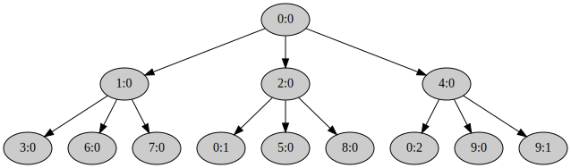
Ориентировочный объём работ этой части лабораторки
main.rs | 74 ++++++++++++++++++++++++++++++++++++++++++++++++++++++++++++++++++++------
1 file changed, 68 insertions(+), 6 deletions(-)
Файловая система
В этой лабораторной работе мы реализуем файловую систему. Она очень упрощена, и не поддерживает права доступа к файлам, линки и многое другое. В частности, директории хранятся как файлы с массивом записей, а не как хеш-таблицы или B-деревья. Что ведёт к неэффективному линейному поиску по ним. Также для простоты, формат хранения структур файловой системы на диске и в памяти будет одинаковый. Поэтому можно будет работать с отображённым в память диском.
Структура файловой системы на диске
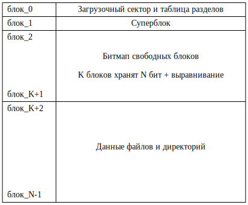
Суперблок
Хранит основную информацию о файловой системе. Она нужна, например, при монтировании. У нас он очень простой:
#![allow(unused)] fn main() { struct Superblock { magic: [u8; MAGIC.len()], endian: u64, block_count: usize, root: Inode, } }
Дамп диска в шестнадцатеричном виде
При выполнении лабораторки вам может пригодиться команда
$ make fs-dump
...
00001000: 4e69 6b6b 6127 7320 7369 6d70 6c65 2066 Nikka's simple f
00001010: 696c 6520 7379 7374 656d 0000 0000 0000 ile system......
00001020: 0807 0605 0403 0201 0020 0000 0000 0000 ......... ......
00001030: 0200 0000 0000 0000 0000 0000 0000 0000 ................
...
00002000: ff3f 0000 0000 0000 0000 0000 0000 0000 .?..............
...
00003000: 0100 0000 0000 0000 3cd5 fc00 aa80 0000 ........<.......
00003010: 0000 0000 0000 0000 2e16 0000 0000 0000 ................
00003020: 0400 0000 0000 0000 0500 0000 0000 0000 ................
...
00003040: 6669 6c65 2d31 0000 0000 0000 0000 0000 file-1..........
...
00003080: 0000 0000 0000 0000 3cd5 fc00 aa80 0000 ........<.......
...
000030c0: 6669 6c65 2d74 6f2d 6265 2d65 7261 7365 file-to-be-erase
000030d0: 6400 0000 0000 0000 0000 0000 0000 0000 d...............
...
00003100: 0100 0000 0000 0000 3cd5 fc00 aa80 0000 ........<.......
00003110: 0000 0000 0000 0000 9426 0000 0000 0000 .........&......
00003120: 0700 0000 0000 0000 0800 0000 0000 0000 ................
...
00003140: 6669 6c65 2d32 0000 0000 0000 0000 0000 file-2..........
...
00003180: 0200 0000 0000 0000 3cd5 fc00 aa80 0000 ........<.......
00003190: 0000 0000 0000 0000 0010 0000 0000 0000 ................
000031a0: 0a00 0000 0000 0000 0000 0000 0000 0000 ................
...
000031c0: 6469 722d 3100 0000 0000 0000 0000 0000 dir-1...........
...
00005000: 0600 0000 0000 0000 0000 0000 0000 0000 ................
...
00007f50: 0000 0000 0000 002a 2a2a 2a2a 2a2a 2a2a .......*********
00007f60: 2a2a 2a2a 2a2a 2a2a 2a2a 2a2a 2a2a 2a2a ****************
00007f70: 2a2a 2a2a 2a2a 2a2a 2a2a 2a2a 2a2a 2a2a ****************
00007f80: 2a2a 2a2a 2a2a 2a2a 2a2a 2a2a 2a2a 2a2a ****************
00007f90: 2a2a 2a2a 2a2a 2a2a 2a2a 2a2a 2a2a 2a2a ****************
00007fa0: 2a2a 2a2a 2a2a 2a2a 2a2a 2a2a 2a2a 2a2a ****************
00007fb0: 2a2a 2a2a 2a2a 2a2a 2a2a 2a2a 2a2a 2a2a ****************
00007fc0: 2a2a 2a2a 2a2a 2a2a 2a2a 2a2a 2a2a 2a2a ****************
00007fd0: 2a2a 2a2a 2a2a 2a2a 2a2a 2a2a 2a2a 2a2a ****************
00007fe0: 2a2a 2a2a 2a2a 2a2a 2a2a 2a2a 2a2a 2a2a ****************
00007ff0: 2a2a 2a2a 2a2a 2a2a 2a2a 2a2a 2a2a 2a2a ****************
00008000: 0900 0000 0000 0000 0d00 0000 0000 0000 ................
...
0000a000: 0100 0000 0000 0000 3cd5 fc00 aa80 0000 ........<.......
...
0000a040: 6669 6c65 2d34 0000 0000 0000 0000 0000 file-4..........
...
0000a080: 0100 0000 0000 0000 3cd5 fc00 aa80 0000 ........<.......
...
0000a0c0: 6669 6c65 2d35 0000 0000 0000 0000 0000 file-5..........
...
0000a100: 0200 0000 0000 0000 3cd5 fc00 aa80 0000 ........<.......
0000a110: 0000 0000 0000 0000 0010 0000 0000 0000 ................
0000a120: 0b00 0000 0000 0000 0000 0000 0000 0000 ................
...
0000a140: 6469 722d 3200 0000 0000 0000 0000 0000 dir-2...........
...
0000b000: 0200 0000 0000 0000 3cd5 fc00 aa80 0000 ........<.......
0000b010: 0000 0000 0000 0000 0010 0000 0000 0000 ................
0000b020: 0c00 0000 0000 0000 0000 0000 0000 0000 ................
...
0000b040: 6469 722d 3300 0000 0000 0000 0000 0000 dir-3...........
...
0000c000: 0100 0000 0000 0000 3cd5 fc00 aa80 0000 ........<.......
...
0000c040: 6669 6c65 2d33 0000 0000 0000 0000 0000 file-3..........
...
Ориентировочный объём работ этой лабораторки
kernel/src/fs/block_bitmap.rs | 26 ++++
kernel/src/fs/block_cache.rs | 64 ++++++++++-
kernel/src/fs/file_system.rs | 21 +++
kernel/src/fs/inode.rs | 234 +++++++++++++++++++++++++++++++++++++++---
4 files changed, 318 insertions(+), 27 deletions(-)
Блочный кеш
В Nikka диск отображается в память, чтобы удобнее было с ним работать.
Для отслеживания с какого диска, куда именно и сколько памяти отображено, служит структура
kernel::fs::block_cache::BlockCache:
#![allow(unused)] fn main() { struct BlockCache { cache: Block<Page>, disk: Disk, } }
Она является синглтоном
static ref BLOCK_CACHE: Mutex<Option<BlockCache>>.
В память блоки зачитываются по необходимости.
Для этого, изначально все страницы помечаются недоступными.
А при возникновении ошибки обращения к памяти, страницы нужного блока считывается с диска обработчиком
BlockCache::trap_handler().
Запись блока выполняется при необходимости вызовом BlockCache::flush_block().
Все блоки можно записать вызовом BlockCache::flush().
Для простоты, размер блока BLOCK_SIZE берётся равным размеру страницы Page::SIZE.
Блочный кеш в общем случае
Обычно размер кеша в памяти гораздо меньше, чем размер кешируемого диска:
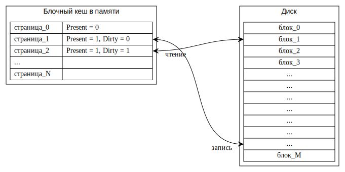
Блочный кеш в Nikka
В Nikka сделано значительное упрощение. Размер кеша в памяти равен размер кешируемого диска. Поэтому размер диска ограничен размером доступной в машине памяти.
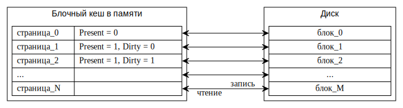
Задача 1 — блочный кеш
Инициализация
Реализуйте метод инициализации блочного кеша
#![allow(unused)] fn main() { fn BlockCache::init(disk: Disk, block_count: usize) -> Result<()> }
в файле
kernel/src/fs/block_cache.rs.
Он должен зарезервировать в BASE_ADDRESS_SPACE блок виртуальных страниц, достаточный для хранения
block_count блоков файловой системы.
И записать соответствующее значение в
BLOCK_CACHE.
Считывание блока с диска
Реализуйте метод
#![allow(unused)] fn main() { fn BlockCache::trap_handler(info: &Info) -> Result<bool> }
в файле
kernel/src/fs/block_cache.rs.
Он должен обработать Page Fault, если адрес, который его вызвал, относится к блочному кешу.
Если это так и Page Fault обработан, верните true.
Если адрес, вызвавший Page Fault, не относится к блочному кешу, верните false.
Для чтения с диска используйте метод
kernel::fs::disk::Disk::pio_read().
Запись блока на диск
Запись блока выполняется при необходимости вызовом BlockCache::flush_block().
Реализуйте метод
#![allow(unused)] fn main() { fn BlockCache::flush_block(block_number: usize) -> Result<()> }
в файле
kernel/src/fs/block_cache.rs.
Он записывает заданный блок на диск методом
kernel::fs::disk::Disk::pio_write().
Запись нужно делать только если:
- Блок отображён в память. Это означает что нему были обращения.
- И помечен как
PageTableFlags::DIRTY. То есть, в память были записи, а значит блок на диске потенциально содержит устаревшие данные. Если обращения к блоку были только на чтение, то данные в памяти такие же как на диске, и можно их не записывать. А процессор в этом случае не установит битPageTableFlags::DIRTY. - После записи блока, сбросьте бит
PageTableFlags::DIRTY. Он фактически означает одинаковость данных на диске и в памяти блочного кеша. Которая только что восстановлена. При этом нужно сбросить и соответствующую запись в TLB с помощью функцииkernel::memory::mmu::flush(). Иначе процессор не узнает, что вы сбросилиPageTableFlags::DIRTYи не проставит его в таблице страниц при следующей записи. И обновлённый блок на диск записан не будет.
Проверьте себя
Теперь должны заработать тесты в файлах
kernel/tests/6-fs-1-block-cache-1-write.rs и
kernel/tests/6-fs-1-block-cache-2-read.rs:
$ (cd kernel; cargo test --test 6-fs-1-block-cache-1-write --test 6-fs-1-block-cache-2-read)
...
6_fs_1_block_cache_1_write::write---------------------------
20:37:19 0 D block_count = 8192
6_fs_1_block_cache_1_write::write------------------ [passed]
20:37:19 0 I exit qemu; exit_code = SUCCESS
...
6_fs_1_block_cache_2_read::read_what_was_written------------
20:37:21 0 D block_count = 8192
6_fs_1_block_cache_2_read::read_what_was_written--- [passed]
20:37:21 0 I exit qemu; exit_code = SUCCESS
Ориентировочный объём работ этой части лабораторки
kernel/src/fs/block_cache.rs | 64 ++++++++++++++++++++++++++++++++++++++++++++++++++++++++--------
1 file changed, 56 insertions(+), 8 deletions(-)
Битмап занятых блоков
Для отслеживания какие именно блоки файловой системы заняты,
а какие свободны, служит структура
kernel::fs::block_bitmap::BlockBitmap:
#![allow(unused)] fn main() { struct BlockBitmap { bitmap: &'static mut [u64], block_count: usize, cursor: usize, } }
Каждый элемент среза BlockBitmap::bitmap отвечает за 64 блока.
Блоку с меньшим номером соответствует бит с меньшим весом в соответствующем элементе.
Блок свободен тогда и только тогда, когда соответствующий ему бит равен 0.
Задача 2 — битмап занятых блоков
Реализуйте метод
#![allow(unused)] fn main() { fn BlockBitmap::allocate(&mut self) -> Result<usize> }
в файле
kernel/src/fs/block_bitmap.rs.
Функция должна найти по BlockBitmap::bitmap свободный блок и аллоцировать его.
- Верните номер выделенного блока.
- После того как новый блок аллоцирован, сбросьте изменившийся блок самого
bitmapна диск с помощью реализованной вами функцииBlockCache::flush_block(). Когда меняете метаданные, лучше сразу сбрасывать их на диск, так меньше вероятность поломки файловой системы, например, при сбое питания. - Искать каждый раз с самого начала
BlockBitmap::bitmapне эффективно. Лучше, например, обходить его по циклу с того места, на котором остановились в прошлый раз. Для хранения этой позиции между вызовамиBlockBitmap::allocate()служит полеBlockBitmap::cursor. - Проверять каждый бит тоже не эффективно. Лучше сначала найти элемент
BlockBitmap::bitmap, в котором есть хотя бы один свободный бит. Поэтому биты сгруппированы именно поu64, а не например поu8. - Верните ошибку
Error::NoDisk, если свободных блоков не осталось.
Проверьте себя
Теперь должен заработать тест allocation() в файле
kernel/tests/6-fs-2-block-bitmap.rs:
$ (cd kernel; cargo test --test 6-fs-2-block-bitmap)
...
6_fs_2_block_bitmap::allocation-----------------------------
20:37:24 0 D block_count = 8192
6_fs_2_block_bitmap::allocation-------------------- [passed]
20:37:30.657 0 I exit qemu; exit_code = SUCCESS
Ориентировочный объём работ этой части лабораторки
kernel/src/fs/block_bitmap.rs | 26 ++++++++++++++++++++++++--
1 file changed, 24 insertions(+), 2 deletions(-)
Index node (inode)
В inode хранится метаинформация об объекте с данными. Имя объекта не хранится, оно хранится в директории. Объектом может быть как файл, так и директория. В случае директорий, их содержимое — массив из имен объектов и их inode. Inode корневой директории файловой системы хранится в суперблоке.
В файловых системах семейства System V, упрощённую реализацию которой пишем мы, в директории хранится не сам inode, а его номер. Это позволяет иметь для одного inode несколько имён в одной и той же или в разных директориях — жёстких ссылок. В этом случае сами inode хранятся в отдельном массиве в файловой системе (на диске). И для ускорения их аллокации заводят отдельный битмап, как для блоков.
Структура Inode выглядит так:
#![allow(unused)] fn main() { enum Kind { Unused = 0, File = 1, Directory = 2, } struct Inode { kind: Kind, modify_time: DateTime<Utc>, size: usize, root_blocks: [usize; MAX_HEIGHT], } const MAX_HEIGHT: usize = 4; }
Блоки данных inode
Блоки данных
inode
адресуются через массив root_blocks структуры struct Inode.
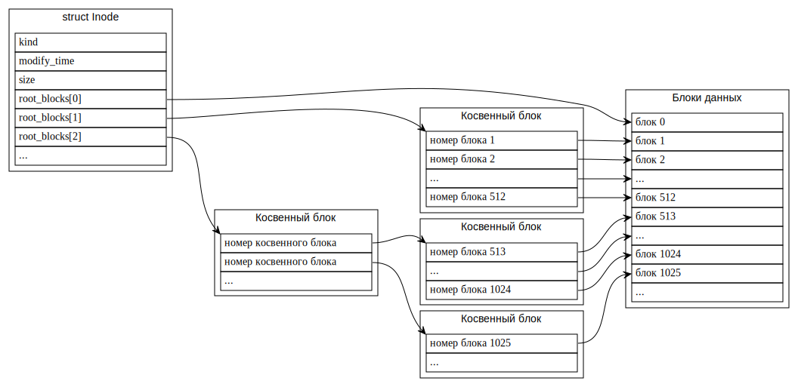
Задача 3 — index node (inode)
Реализуйте недостающие методы структуры
kernel::fs::inode::Inode
в файле
kernel/src/fs/inode.rs.
Вам могут пригодиться методы size::div_ceil() и size::next_multiple_of().
kernel::fs::inode::Inode::block_entry()
- Если при обходе леса встречается не выделенный косвенный блок, то его нужно выделить из
block_bitmap. Не выделенные блоки имеют зарезервированный номерNO_BLOCK. - А вот выделять блок для данных, на который указывает результирующая запись, не нужно.
Этот метод похож на
kernel::memory::mapping::Mapping::translate(),
который вы уже реализовали.
Только в Inode для блоков не одно дерево фиксированной высоты,
а последовательность деревьев возрастающей высоты.
kernel::fs::inode::Inode::set_size()
kernel::fs::inode::Inode::read()
kernel::fs::inode::Inode::write()
Проверьте себя
Теперь должены заработать тесты в файле
kernel/tests/6-fs-3-inode.rs:
$ (cd kernel; cargo test --test 6-fs-3-inode)
...
6_fs_3_inode::block_entry-----------------------------------
20:37:33 0 D block_count = 8192
20:38:04.275 0 D block entry allocation is done, checking the entries
6_fs_3_inode::block_entry-------------------------- [passed]
6_fs_3_inode::read_write_speed------------------------------
20:38:28.769 0 D block_count = 8192
20:38:29.161 0 D disk read speed; elapsed = 360.269 ms; size = 1.000 MiB
20:38:29.219 0 D file system read speed; elapsed = 49.309 ms; timeout = 200.000 ms; size = 1.000 MiB
20:38:29.277 0 D file system write speed; elapsed = 47.858 ms; timeout = 200.000 ms; size = 1.000 MiB
6_fs_3_inode::read_write_speed--------------------- [passed]
6_fs_3_inode::write_read------------------------------------
20:38:29.299 0 D block_count = 8192
20:38:30.431 0 D actual = [0, 2, 6, 12, 20, 30, 42, 56, 72, 90]; expected = [0, 2, 6, 12, 20, 30, 42, 56, 72, 90]
6_fs_3_inode::write_read--------------------------- [passed]
6_fs_3_inode::set_size--------------------------------------
20:38:31.227 0 D block_count = 8192
6_fs_3_inode::set_size----------------------------- [passed]
20:38:39.909 0 I exit qemu; exit_code = SUCCESS
Ориентировочный объём работ этой части лабораторки
kernel/src/fs/inode.rs | 125 ++++++++++++++++++++++++++++++++++++++++++++++---
1 file changed, 119 insertions(+), 6 deletions(-)
Операции с директориями
Директории — это inode, с фиксированным форматом данных. А именно, размер данных для директорий должен быть кратен размеру блока. А сами данные — это массив записей типа
#![allow(unused)] fn main() { struct DirectoryEntry { inode: Inode, name: [u8; MAX_NAME_LEN], } }
Отсутствующие или удалённые записи при этом помечаются как inode.kind == Kind::Unused.
Задача 4 — операции с директориями
Реализуйте методы Inode, которые работают с данными директорий.
kernel::fs::inode::Inode::find_entry()
Это вспомогательный метод для
kernel::fs::inode::Inode::find() и
kernel::fs::inode::Inode::insert().
kernel::fs::inode::Inode::insert()
kernel::fs::inode::Iter::next()
Это вспомогательный метод для
kernel::fs::inode::Inode::list().
Проверьте себя
Теперь должны заработать тесты в файле
kernel/tests/6-fs-4-directory.rs:
$ (cd kernel; cargo test --test 6-fs-4-directory)
...
6_fs_4_directory::basic_operations--------------------------
20:38:42 0 D block_count = 8192
6_fs_4_directory::basic_operations----------------- [passed]
6_fs_4_directory::max_name_len------------------------------
20:38:42 0 D block_count = 8192
6_fs_4_directory::max_name_len--------------------- [passed]
20:38:42 0 I exit qemu; exit_code = SUCCESS
Ориентировочный объём работ этой части лабораторки
kernel/src/fs/inode.rs | 70 ++++++++++++++++++++++++++++++++++++++++++++-----
1 file changed, 64 insertions(+), 6 deletions(-)
Поиск файла по пути
Задача 5 — поиск файла по пути
Реализуйте метод
fn FileSystem::open(&mut self, path: &str) -> Result<File>
в файле
kernel/src/fs/file_system.rs.
Он должен пройти от корня файловой системы по заданному полному пути path.
И вернуть соответствующий File.
Проверьте себя
Теперь должен заработать тест fs() в файле
kernel/tests/6-fs-5-open.rs:
$ (cd kernel; cargo test --test 6-fs-5-open)
...
6_fs_5_open::fs---------------------------------------------
20:38:44 0 I formatted the file system; free_space = 31.988 MiB; disk = { id: 1, base_port: 0x1F0, disk: 1 }; block_count = 8192; reserved_block_count = 3; inode_size = 64 B; directory_entry_size = 128 B; max_file_size = 513.002 GiB
20:38:44 0 I path = /file-1; entry = file-1, File, 5678 B = 5.545 KiB, 2022-12-11 20:38:44 UTC
20:38:44 0 I path = /file-2; entry = file-2, File, 9876 B = 9.645 KiB, 2022-12-11 20:38:44 UTC
20:38:44 0 I path = /dir-1; entry = dir-1, Directory, 4096 B = 4.000 KiB, 2022-12-11 20:38:44 UTC
20:38:44 0 I path = /dir-1/file-4; entry = file-4, File, 0 B = 0 B, 2022-12-11 20:38:44 UTC
20:38:44 0 I path = /dir-1/file-5; entry = file-5, File, 0 B = 0 B, 2022-12-11 20:38:44 UTC
20:38:44 0 I path = /dir-1/dir-2; entry = dir-2, Directory, 4096 B = 4.000 KiB, 2022-12-11 20:38:44 UTC
20:38:44 0 I path = /dir-1/dir-2/dir-3; entry = dir-3, Directory, 4096 B = 4.000 KiB, 2022-12-11 20:38:44 UTC
20:38:44 0 I path = /dir-1/dir-2/dir-3/file-3; entry = file-3, File, 0 B = 0 B, 2022-12-11 20:38:44 UTC
6_fs_5_open::fs------------------------------------ [passed]
20:38:45.049 0 I exit qemu; exit_code = SUCCESS
Ориентировочный объём работ этой части лабораторки
kernel/src/fs/file_system.rs | 21 +++++++++++++++++++--
1 file changed, 19 insertions(+), 2 deletions(-)